Linear Models
2021-2022
\(\newcommand{\prob}[1]{\text{P}\left\{#1\right\}}\) \(\newcommand{\mb}[1]{\boldsymbol{#1}}\) \(\newcommand{\E}[1]{\mbox{E}\left\{#1\right\}}\) \(\newcommand{\Ef}[2]{\mbox{E}_{#1}\left\{#2\right\}}\) \(\newcommand{\cov}[1]{\mbox{Cov}\left\{#1\right\}}\) \(\newcommand{\cor}[1]{\mbox{Cor}\left\{#1\right\}}\) \(\newcommand{\covf}[2]{\mbox{Cov}_{#1}\left\{#2\right\}}\) \(\newcommand{\var}[1]{\mbox{Var}\left\{#1\right\}}\) \(\newcommand{\varf}[2]{\mbox{Var}_{#1}\left\{#2\right\}}\) \(\newcommand{\ind}[0]{\perp \!\!\! \perp}\) \(\newcommand{\eps}[0]{\varepsilon}\) \(\newcommand{\SSE}[0]{\text{SSE}}\) \(\newcommand{\iid}[0]{\text{ i.i.d. }}\) \(\newcommand{\convDistr}[0]{\stackrel{d}{\longrightarrow}}\) \(\newcommand{\convProb}[0]{\stackrel{p}{\longrightarrow}}\) \(\newcommand{\QED}[0]{\null\nobreak\hfill\ensuremath{\blacksquare}}\) \(\newcommand{\MSE}[0]{\text{MSE}}\) \(\newcommand{\SSTot}[0]{\text{SSTot}}\) \(\newcommand{\SSR}[0]{\text{SSR}}\) \(\newcommand{\MSR}[0]{\text{MSR}}\) \(\newcommand{\SST}[0]{\text{SST}}\) \(\newcommand{\MST}[0]{\text{MST}}\) \(\newcommand{\SSA}[0]{\text{SSA}}\) \(\newcommand{\MSA}[0]{\text{MSA}}\) \(\newcommand{\SSTA}[0]{\text{SSTA}}\) \(\newcommand{\MSTA}[0]{\text{MSTA}}\) \(\newcommand{\probf}[2]{\text{P}_{#1}\left\{#2\right\}}\) \(\newcommand{\HSim}[0]{\stackrel{H_0}{\sim}}\) \(\newcommand{\ApproxSim}[0]{\stackrel{\cdot}{\sim}}\)
##
## Attaching package: 'dplyr'## The following object is masked from 'package:MASS':
##
## select## The following objects are masked from 'package:stats':
##
## filter, lag## The following objects are masked from 'package:base':
##
## intersect, setdiff, setequal, union## Warning in (function (kind = NULL, normal.kind = NULL, sample.kind = NULL) :
## non-uniform 'Rounding' sampler used##
## Attaching package: 'plotly'## The following object is masked from 'package:ggplot2':
##
## last_plot## The following object is masked from 'package:MASS':
##
## select## The following object is masked from 'package:stats':
##
## filter## The following object is masked from 'package:graphics':
##
## layout## Warning: package 'GGally' was built under R version 4.1.1## Registered S3 method overwritten by 'GGally':
## method from
## +.gg ggplot2## Warning: package 'dagitty' was built under R version 4.1.1## Loading required package: carData##
## Attaching package: 'car'## The following object is masked from 'package:dplyr':
##
## recode## Loading required package: mvtnorm## Loading required package: survival## Warning: package 'survival' was built under R version 4.1.1## Loading required package: TH.data##
## Attaching package: 'TH.data'## The following object is masked from 'package:MASS':
##
## geyserChapter 1 Introduction
1.1 Versions and Changes
Version: September 27, 2021
Changes: None
1.2 Introduction
This course (Linear Models) is a classical treatment of linear models, which are among the most popular and simple models for statistical data analysis and prediction. The models describe the relationship between the mean of an outcome variable \(Y\) and one or more regressors \(x\) via a function that is linear in the parameters. The model thus focusses on the conditional expectation \(\E{Y \mid x}\). Here is a brief overview of the content of the course:
simple linear regression model: here the models are limited to a single regressor. In this chapter most of the concepts and theory will be presented so that in later chapters we can rely on many of the theoretical results of this chapter. Throughout the whole chapter, the methods will be illustrated by means of example datasets, and the meaning of the model and the statistical inference procedures will be demonstrated with Monte Carlo simulation studies. In particular, the following topics will be discussed:
the model and its interpretation
parameter estimation (ordinary least squares and maximum likelihood) and the properties of the estimators
sampling distributions of the estimators. They form the basis of statistical inference.
confidence intervals of the parameters
hypothesis tests related to the parameters
assessment of the model assumptions
the use of binary dummy regressors to mimic the two-sample problem (two-sample t-test)
association versus causation. We will give a brief introduction to causal inference.
linear regression models for prediction purposes
the multiple linear regression model: the simple linear regression model is extended to include more than one regressor. For many topics (e.g. parameter estimation, confidence intervals and hypopthesis tests) we will be able to refer to the previous chapter, which will make this chapter less theoretical. Quite some focus will be on the interpretation of the parameters and specific issues that are irrelevant for the simple linear regression model. These topics will be discussed:
the additive model and its interpretation
parameter estimation, confidence intervals and hypothesis testing (with a lot of references to the previous chapter)
interaction effects and the non-additive model
sum of squares and the ANOVA table
multicolinearity
assessment of the model assumptions
prediction modelling and model selection
design-related topics and causal inference. In this chapter we discuss in some more detail the importance of the study design and some further concepts in causal inference. In particular:
blocking and stratification
estimability
randomisation
confouders
causality, causal graphs, collapsibility
Analysis of variance (ANOVA). The approach taken is this course, is to embed anova models in regression models. So in this chapter you first learn about the conventional formulation of anova models, and subsequently how these models can be rewritten as linear regression models so that the theory and methods from the previous chapters become available. The following topics will be treated:
cell means and factor effects models and their reformulation as linear regression models
sum of squares and the ANOVA table
one way, two way and multiple way models
contrasts and multiple comparisons of means
This course is concluded with a chapter on reporting: how to write a good statistical report. This can be seen as a stand alone chapter and can be read at any time.
1.3 How to work through the course notes
These course notes are written with R Bookdown in R Studio, and rendered to an html file that is made available on GitHub. If you wish, you can convert the html to a pdf file. The best way to do this, is via the print function of your browser. Before doing so, you can best first collapse the sidebar (that contains the table of content).
This course is work in progress. It is a new course and the course notes are still work in progress. So every week there will be an update. If you access the course notes via the link to GitHub you will see the updates automatically.
Many data analyses examples are worked out in detail in the course notes, including the R code. When you access the course notes via GitHub, you can easily copy the R code and paste it to your local R software. Here is an example of a chunck of R code:
a<-1
b<-2
a+b## [1] 3If you now move your mouse towards the upper right corner of the box that contains the R code, then you will see an icon appearing in that corner:
 If you click on that icon, the content of the box will be copied to your clipboard so that you can paste it wherever you want (e.g. in a local R file).
If you click on that icon, the content of the box will be copied to your clipboard so that you can paste it wherever you want (e.g. in a local R file).
I actually advise that you also work with your own local R Markdown or Notebook file to which you copy some of the R code of the course notes so that you can play with the data and the R code yourself. All datafiles are also available on Blackboard.
Throughout the course there are several exercises. The introduction to the excercise, as well as the data set and some instructions are given, but you do not directly get to see the solution. However, there is a option to expand the html so that the solution becomes visible. This should invite you to first try to make the exercise yourself (in a local R Markdown or Notebook file) before looking at the solution in the course notes. Here is an illustration:
Exercise
Consider the following data.
dataset<-data.frame(y=c(1,2,3),
x=c(5,6,7))Make a scatter plot of \(y\) versus \(x\).
Try to make this exercise yourself. If you are ready you can expand this page and look at a solution
Here is a solution:
plot(dataset$x,dataset$y,
xlab="x",
ylab="y")
1.4 Two versions of this course: OC and DL
As for all courses in our Master of Statistics and Data Science program, each course has two versions: the on-campus (OC) and the distance learning (DL) versions.
The course notes are the same for both groups of students. Each group, however, has another Blackboard course site at which you can find all files and information. I keep these two Blackboard sites separate because the contact modes and hours are different:
the OC students have live lectures (either in class, on campus, if permitted in corona times, or online) and self study assignments followed by online Q&A sessions. Their lectures and Q&A sessions are scheduled in their official course schedule.
the DL students will get access to web lectures and they can watch them at their own pace. On Blackboard I will suggest a time schedule. There are also online Q&A sessions which give the students the opportunity to ask questions to the lecturer. The dates of the Q&A sessions are in the Blackboard Calendar.
The project assignment is the same for the DL and OC students.
1.5 Communication
On Blackboard there is a discussion forum that can be used for asking questions.
Questions can also be asked during the Q&A sessions, and the OC students can of course also ask questions in class (either physically when we are on-campus, or in the virtual class room when we are online).
You are also welcome to send emails to the lecturer, but the discussion forum is preferred so that other students can also learn from the answers to the questions.
1.6 Software
In the course notes all data analyses are demonstrated with the R software, but on Blackboard also documentation on the SAS software will be provided. You will also have to learn how to perform regression analysis and ANOVA with the SAS software.
Chapter 2 Simple Linear Regression Analysis
Example (Galton’s height data)
As a first example, we consider the original dataset from Francis Galton, who invented regression by looking at this dataset. We obtained the data from https://dataverse.harvard.edu/file.xhtml?persistentId=doi:10.7910/DVN/T0HSJ1/LKC7PJ&version=1.1 Here is the reference to the orginal paper of Francis Galton from 1886.
Galton, F. (1886). Regression Towards Mediocrity in Hereditary Stature. Journal of the Anthropological Institute, 15, 246-263
Galton<-read.csv("Data/Galton.tab",sep="\t")
head(Galton)## family father mother gender height kids male female
## 1 1 78.5 67.0 M 73.2 4 1 0
## 2 1 78.5 67.0 F 69.2 4 0 1
## 3 1 78.5 67.0 F 69.0 4 0 1
## 4 1 78.5 67.0 F 69.0 4 0 1
## 5 2 75.5 66.5 M 73.5 4 1 0
## 6 2 75.5 66.5 M 72.5 4 1 0glimpse(Galton)## Rows: 898
## Columns: 8
## $ family <chr> "1", "1", "1", "1", "2", "2", "2", "2", "3", "3", "4", "4", "4"~
## $ father <dbl> 78.5, 78.5, 78.5, 78.5, 75.5, 75.5, 75.5, 75.5, 75.0, 75.0, 75.~
## $ mother <dbl> 67.0, 67.0, 67.0, 67.0, 66.5, 66.5, 66.5, 66.5, 64.0, 64.0, 64.~
## $ gender <chr> "M", "F", "F", "F", "M", "M", "F", "F", "M", "F", "M", "M", "F"~
## $ height <dbl> 73.2, 69.2, 69.0, 69.0, 73.5, 72.5, 65.5, 65.5, 71.0, 68.0, 70.~
## $ kids <int> 4, 4, 4, 4, 4, 4, 4, 4, 2, 2, 5, 5, 5, 5, 5, 6, 6, 6, 6, 6, 6, ~
## $ male <dbl> 1, 0, 0, 0, 1, 1, 0, 0, 1, 0, 1, 1, 0, 0, 0, 1, 1, 1, 0, 0, 0, ~
## $ female <dbl> 0, 1, 1, 1, 0, 0, 1, 1, 0, 1, 0, 0, 1, 1, 1, 0, 0, 0, 1, 1, 1, ~skim(Galton)| Name | Galton |
| Number of rows | 898 |
| Number of columns | 8 |
| _______________________ | |
| Column type frequency: | |
| character | 2 |
| numeric | 6 |
| ________________________ | |
| Group variables | None |
Variable type: character
| skim_variable | n_missing | complete_rate | min | max | empty | n_unique | whitespace |
|---|---|---|---|---|---|---|---|
| family | 0 | 1 | 1 | 4 | 0 | 197 | 0 |
| gender | 0 | 1 | 1 | 1 | 0 | 2 | 0 |
Variable type: numeric
| skim_variable | n_missing | complete_rate | mean | sd | p0 | p25 | p50 | p75 | p100 | hist |
|---|---|---|---|---|---|---|---|---|---|---|
| father | 0 | 1 | 69.23 | 2.47 | 62 | 68 | 69.0 | 71.0 | 78.5 | <U+2581><U+2585><U+2587><U+2582><U+2581> |
| mother | 0 | 1 | 64.08 | 2.31 | 58 | 63 | 64.0 | 65.5 | 70.5 | <U+2582><U+2585><U+2587><U+2583><U+2581> |
| height | 0 | 1 | 66.76 | 3.58 | 56 | 64 | 66.5 | 69.7 | 79.0 | <U+2581><U+2587><U+2587><U+2585><U+2581> |
| kids | 0 | 1 | 6.14 | 2.69 | 1 | 4 | 6.0 | 8.0 | 15.0 | <U+2583><U+2587><U+2586><U+2582><U+2581> |
| male | 0 | 1 | 0.52 | 0.50 | 0 | 0 | 1.0 | 1.0 | 1.0 | <U+2587><U+2581><U+2581><U+2581><U+2587> |
| female | 0 | 1 | 0.48 | 0.50 | 0 | 0 | 0.0 | 1.0 | 1.0 | <U+2587><U+2581><U+2581><U+2581><U+2587> |
The dataset contains data on heights of parents and their adult children; there can be more than one child per family. For our purpose we will select fathers and one son (we will select the first son that appears in the family).
Galton.sons<-Galton %>%
filter(gender=="M") %>%
group_by(family) %>%
slice(1) %>%
ungroup %>%
mutate(father.cm=father*2.54,
son.cm=height*2.54) %>%
select(father.cm, son.cm)
glimpse(Galton.sons)## Rows: 173
## Columns: 2
## $ father.cm <dbl> 199.390, 175.260, 175.260, 175.260, 175.260, 176.530, 175.26~
## $ son.cm <dbl> 185.928, 180.848, 190.500, 177.800, 185.420, 179.070, 180.34~ggplot(Galton.sons,
aes(x=father.cm, y=son.cm)) +
geom_point(color="blue") +
xlab("length of father (cm)") + ylab("length of son (cm)") +
theme(axis.title=element_text(size=15), axis.text = element_text(size=15))
This scatter plot suggests a possitive correlation between the heights of the father and the son.
cor(Galton.sons$father.cm, Galton.sons$son.cm)## [1] 0.5022938In this course, however, we are not only interested in the correlation, but we want to quantify how the expected (or average) height of sons varies with the age of the father.
In the context of regression analysis we will use the following terminology:
height of son is the outcome or response (or response variable) or dependent variable. This will be denoted by \(Y\).
height of father is the regressor, covariate or independent variable. This will be denoted by \(x\).
One way of looking at the problem, is to consider the outcomes that correspond to fathers of a given height, as a population. In this way, for example, the heights of sons of fathers of height \(172.72\)cm can be considered as a random sample of outcomes from the population of heights of sons of fathers of height \(172.72\)cm. We can apply this reasoning for all heights of fathers included in the dataset, and in a more abstract way we can think of samples of outcomes for each value of the regressor.
Galton.sons %>%
filter(father.cm==172.72) %>%
ggplot(aes(x=father.cm,y=son.cm)) +
geom_boxplot() +
geom_jitter(position = position_jitter(0.2)) +
ylab("length of son (cm)") +
theme(axis.title=element_text(size=15), axis.text = element_text(size=15),
axis.title.x=element_blank(),axis.text.x=element_blank())## Warning in (function (kind = NULL, normal.kind = NULL, sample.kind = NULL) :
## non-uniform 'Rounding' sampler used
We will use the following notation:
\(n\): total number of observations (subjects, elements) in the dataset.
\(x_i\): the value of the regressor of observation \(i=1,\ldots, n\)
\(Y_i\): the outcome of observation \(i=1,\ldots, n\).
Since every \(x_i\) can identify another population, we say that \(Y_i\) is a random outcome from the population with (cumulative) distribution function (CDF) \[ F_i(y)=F(y;x_i,\mb\beta), \] i.e. the distribution is determined by \(x_i\) and possibly by a parameter vector \(\mb\beta\). We also assume that all \(n\) outcomes are mutually independent. Note that we do not say that the \(n\) outcomes are i.i.d. (identically and independently distributed), because not all \(F_i\) coincide.
Regression analysis is a method that allows to study the effect of a regressor on the mean outcome. We therefore also introduce a notation for the mean of the distribution \(F_i\), \[ \mu_i = \E{Y_i} = \Ef{F_i}{Y_i} = \int_{-\infty}^{+\infty} y dF(y;x_i,\mb\beta) = \E{Y_i \mid x_i}. \] This notation stresses that \(\mu_i\) is the mean of \(Y_i\) and that this mean depends on the value of the regressor \(x_i\) because the distribution of \(Y_i\) depends on \(x_i\). Therefore, \(\mu_i=\E{Y_i \mid x_i}\) is the conditional mean of the outcome, given \(x_i\). To stress that the conditional mean is a function of the regressor and possibly of a parameter \(\mb\beta\) we write \[ m(x;\mb\beta) = \E{Y \mid x}. \]
In the two previous paragraphs we actually gave a generic description of a statistical model. We repeat here the description, with in slightly more general fashion.
For a given \(x_i\), we provide the conditional distribution of the outcome, \[ Y_i \mid x_i \sim F_i(\cdot;x_i,\mb\beta,\mb\nu) \] in which \(\mb\beta\) and \(\mb\nu\) are two parameter vectors.
The conditional mean of this distribution is described as \[ \E{Y_i\mid x_i}=m(x_i;\mb\beta). \]
The \(n\) outcomes \(Y_i\) are mutually independent.
Consider the follow special cases:
Suppose there are no parameters \(\mb\beta\) and \(\mb\nu\) and the functions \(m\) and \(F_i\) are not known. Then the model imposes no restriction on the conditional distribution \(Y_i \mid x_i\). This is a nonparametric model.
Suppose that the function \(m\) is known, up to the parameter vector \(\mb\beta\), but the CDFs \(F_i\) have no further restrictions (it does of course satisfy the restriction \(\E{Y_i\mid x_i}=m(x_i;\mb\beta)\)). Then the statistical model only imposes restrictions on the conditional mean, but leaves other aspects of the conditional distribution unspecified. This is a semiparametric model.
Suppose that the function \(m\) is known, up to the parameter vector \(\mb\beta\), and that the CDFs \(F_i\) are also known, up to the parameter vector \(\mb\nu\). In this case, the \(n\) CDFs \(F_i\) are often equal to one another, i.e. \(F_i=F\). Of course, as for the semiparametric model, the CDF \(F\) must be compatible with the restriction \(\E{Y_i\mid x_i}=m(x_i;\mb\beta)\). This model is known as a parametric model. It basically specifies the full conditional distribution up to finite dimensional parameter vectors \(\mb\beta\) and \(\mb\nu\).
With respect to the parametric models: if the interest is in the model \(\E{Y_i\mid x_i}=m(x_i;\mb\beta)\), i.e. the focus is on parameter \(\mb\beta\), then we call the parameter \(\mb\nu\) a nuisance parameter.
In later sections we will sometimes refer to semiparametric and parametric models, and then their meaning may become clear.
The general regression model is illustrated in Figure 2.1 (left). The focus of a regression analysis is the estimation of the function \(m(x;\mb\beta)\). If the function \(m\) is known, then this reduces to the estimation of the parameter \(\mb\beta\) using the sample observations. Based on the estimates, regression analysis also aims to formulate conclusions on the relation between the regressor and the conditional mean of the outcome. Sometimes the estimated regression model may also be used for predicting an outcome for a given value of the regressor. These topics will all be discussed later in this course.
![Illustration of the regression model. The black line represents the function $m$. The red points are observed outcomes, sampled from the conditional distribution of $Y$ given $x=160$. The red line shows the shape of the density function of this conditional distribution. The blue points are observed outcomes, sampled from the conditional distribution of $Y$ given $x=200$. The blue line shows the shape of the density function of this conditional distribution. Left: $m$ is a non-linear function and the conditional distributions have different shapes. Middle: $m$ is a non-linear function and the conditional distribution functions have equal shapes. Right: $m$ is a linear function and the conditional distribution functions have equal shapes (normal distributions).](DASM2_files/figure-html/RegModel-1.png)
Figure 2.1: Illustration of the regression model. The black line represents the function \(m\). The red points are observed outcomes, sampled from the conditional distribution of \(Y\) given \(x=160\). The red line shows the shape of the density function of this conditional distribution. The blue points are observed outcomes, sampled from the conditional distribution of \(Y\) given \(x=200\). The blue line shows the shape of the density function of this conditional distribution. Left: \(m\) is a non-linear function and the conditional distributions have different shapes. Middle: \(m\) is a non-linear function and the conditional distribution functions have equal shapes. Right: \(m\) is a linear function and the conditional distribution functions have equal shapes (normal distributions).
We now simplify the model by assuming that the conditional distribution only depends on the regressor via its conditional mean. In other words: for every value of the regressor, the shape of the conditional outcome distribution is the same, and only the location (mean) may depend on the regressor. This is illustrated in Figure 2.1 (middle). This extra assumption allows us to write the statistical model as \[\begin{equation} Y_i = m(x_i;\mb\beta) + \eps_i \tag{2.1} \end{equation}\] with \(\eps_i \iid F_\eps(\cdot;\mb\nu)\), with \(F_\eps(\cdot;\mb\nu)\) the CDF of \(\eps_i\), \(\mb\nu\) a parameter vector and \[ \E{\eps_i}=\E{\eps_i\mid x_i}=0. \] For the latter assumption, we find a useful property: \[ \E{Y\mid x}=m(x;\mb\beta) \] i.e. it allows to interpret \(m(x;\mb\beta)\) as the conditional mean. The stochastic variable \(\eps_i\) is often referred to as the error term. The model thus suggests that the outcome can be decomposed into two components: a systematic component, \(m(x_i;\mb\beta)\), and a stochastic component (or random component, or error term) \(\eps_i\). The latter gives the deviation between the outcome \(Y_i\) and the systematic component \(m(x_i;\mb\beta)\).
It is important, however, to note that this decomposition often does not agree with how the outcomes are generated or realised: the variability of the outcomes \(Y_i\) about the conditional mean \(m(x_i;\mb\beta)\) is often inherently present in the population (e.g. biological variability). In this sense, \(\eps_i\) may not be looked at as an error on the measurement. In other cases, however, part of the variability in \(Y_i\) may be due to imprecise measurements and then \(\eps_i\) can (at least partly) be considered as a random error term.
Note that the assumption \(\eps_i \iid F_\eps(\cdot;\mb{\nu})\) implies that all error terms have the same distribution and hence, for a fixed \(\sigma^2\geq 0\), \[ \var{\eps_i} = \var{\eps_i \mid x_i} = \sigma^2 \] for all \(i=1,2,\ldots, n\). This restriction on the variance is referred to as the assumption of homoskedasticiteit or constant variance. The variance \(\sigma^2\) is called the residual variance.
In this course we only discuss linear regression analysis, for which the function \(m(x;\mb\beta)\) is restricted to linear functions of \(\mb\beta\): \[ m(x;\mb\beta) = \beta_0 + \beta_1x, \] with \(\mb{\beta}^t=(\beta_0, \beta_1)\).
This equation represents a linear line which is referred to as the regression line. We write model (2.1) now as \[\begin{equation} Y_i = \beta_0 + \beta_1x_i + \eps_i \tag{2.2} \end{equation}\] with \(\eps_i \iid F_\eps(\cdot;\mb\nu)\) and \(\E{\eps_i}=\E{\eps_i\mid x_i}=0\). This is called the simple linear regression model. See also Figure 2.1 (right).
The interpretation of the parameter \(\beta_1\) follows from the identity \[ \E{Y\mid x+1} - \E{Y\mid x} = \left(\beta_0+\beta_1(x+1)\right)-\left(\beta_0+\beta_1 x\right) = \beta_1 . \] The parameter \(\beta_1\) is thus the average increase in the outcome when the regressor increases with one unit. This parameter is also the slope of the regression line. The parameter is often referred to as the regression coefficient.
The interpretation of the parameter \(\beta_0\) follows from the identity \[ \E{Y\mid x=0} = \beta_0+\beta_1 \times 0 = \beta_0 . \] The parameter \(\beta_0\) is thus the average outcome when the regressor takes value zero. It is the intercept of the regression line.
Sometimes the situation \(x=0\) does not have a physical meaning or it falls outside of the scope of the model (i.e. the range of \(x\)-values that forms the focus of the data analysis). For this reason, the regression model is sometimes formulated as \[ Y_i = \beta_0 + \beta_1(x_i-\bar{x}) + \eps_i \] with \(\bar{x}\) the sample mean of the regressor observations in the dataset, \(\eps_i \iid F_\eps(\cdot;\mb\nu)\) and \(\E{\eps_i}=\E{\eps_i\mid x_i}=0\). The interpretation of \(\beta_0\) now becomes \(\beta_0=\E{Y\mid x=\bar{x}}\). Since the sample mean \(\bar{x}\) is often withing the scope of the model, the parameter \(\beta_0\) now has a real meaning. The interpretation of \(\beta_1\) remains unchanged.
In the Galton example, the scope is approximately \([150 \text{cm},200 \text{cm}]\).
In this chapter we discuss methods for the estimation of the parameters in the linear regression model (2.2). We will find the sampling distribution of the parameter estimators. This will form the basis for hypothesis tests and for confidence intervals.
2.1 Interpretation via simulations
Regression model (2.2) thus gives an interpretation to the \(\beta\) parameters via the conditional expectation of the outcomes. In this section we provide an interpretation via the principle of repeated sampling, which can be easily demonstrated with Monte Carlo simulations. Since this is the first simulation in this course, we shall go through it step by step.
We start with model (2.2): \[ Y_i = \beta_0 + \beta_1x_i + \eps_i \] with \(\eps_i \iid F_\eps(\cdot;\mb\nu)\) and \(\E{\eps_i}=\E{\eps_i\mid x_i}=0\). We set \(F_\eps\) to the normal distribution with mean zero and variance \(\sigma^2\).
We start with the simulation of a sample of 5 outcomes (son’s heights) at \(\mb{x}^t=(165, 170, 175, 180, 185)\) (father’s heights).
Before we can start the simulations, we need to set the parameters to specific values. We choose: \[ \beta_0=90 \;\;\; \beta_1=0.5 \;\;\; \sigma=5. \] Thus, we simulate as if we known the truth (i.e. the population). In this context, we refer to this model as the data generating model.
set.seed(724245)
x<-c(165,170,175,180,185) # five father's heights
x## [1] 165 170 175 180 185eps<-rnorm(5,sd=5) # random sample of 5 error terms
eps## [1] 2.6552611 -4.3398292 2.1952809 6.1667742 -0.9250292y<-90+0.5*x+eps # random sample van uitkomsten
y ## [1] 175.1553 170.6602 179.6953 186.1668 181.5750The following R code gives Figure 2.2.
plot(x,y,cex.axis=1.5,cex.lab=1.5)
abline(c(90,0.5),col=2)
Figure 2.2: Scatter plot of 1 simulated sample from the (data generating) regression model. The red line is the linear regression model with the true parameter values.
Next we repeat this procedure (experiment) multiple times. Each time other outcomes will be generated. The following R code generates \(N=100\) repeated experiments, each with \(n=5\) outcomes as described earlier. The resulst are visualised in Figure 2.3.
set.seed(254111)
N<-N100 # number of repeated experiments
x<-c(165,170,175,180,185) # five father's heights
y<-90+0.5*x+rnorm(5,sd=5) # random sample of 5 outcomes
plot(x,y,cex.axis=1.5,cex.lab=1.5, ylim=c(160,195))
abline(c(90,0.5),col=2)
Data<-data.frame(experiment=1,x=x,y=y)
for(experiment in 2:N) {
y<-90+0.5*x+rnorm(5,sd=5) # random sample of 5 outcomes
points(x,y,col=experiment)
Data<-rbind(Data,cbind(experiment,x,y))
}
Figure 2.3: Scatter plot of \(N=100\) simulated samples (experiments) from a regression model. Each color corresponds to a repeated experiment. The red line is the linear regression line with the true parameter values.
Now we look at the histograms of the repeated samples; each histogram corresponds to another value of \(x\). See Figure 2.4.
par(mfrow=c(2,3))
for(i in 1:5) {
y<-Data$y[Data$x==x[i]]
hist(y,main=paste("x=",x[i]),xlab="y")
abline(v=90+0.5*x[i],col=2,lwd=2)
abline(v=mean(y),col=4,lty=2,lwd=2)
}
par(mfrow=c(1,1))
Figure 2.4: Histogram of the \(N=100\) repeated experiments. Each histogram corresponds to another value of \(x\). The red vertical lines show the average outcomes according to the true regression model and the blue dashed lines are the averages of the repeated outcomes at the corresponding temperatures.
Every histogram in Figure 2.4 approximately shows a normal distribution. This is expected, because we have sampled from a normal distribution for each value of \(x\). In particular, for a given value of \(x\), we have sampled the outcomes \(Y\) from the distribution \(N(90+0.5x,25)\).
Figure 2.4 also shows the sample means of the N=100 repeated outcomes for each given \(x\). If \(N\) is very large, then these sample means are approximately equal to the corresponding expected values \(\E{Y\mid x}=\beta_0+\beta_1x\). Also these expected values (with the given parameter values) are depicted in the graph; these are the points on the true regression line. Both lines are very close to one another. If \(N\) were much larger then 100, we would expect that the lines would be even closer to one another. The next R code gives the numerical values.
Results<-data.frame(x=NA,EmpMean=NA,ExpectedValue=NA,
EmpVariance=NA,Variance=NA)
for(i in 1:5) {
y<-Data$y[Data$x==x[i]]
Results[i,]<-c(x[i],round(mean(y),2),90+0.5*x[i],
round(var(y),2),25)
}
Results## x EmpMean ExpectedValue EmpVariance Variance
## 1 165 172.63 172.5 22.46 25
## 2 170 174.69 175.0 27.60 25
## 3 175 177.92 177.5 23.17 25
## 4 180 181.08 180.0 24.82 25
## 5 185 182.94 182.5 25.68 25This R code also shows the sample variances of the simulated outcomes for the 5 values of \(x\). The true variance according the data generating model equals 25. Also here we see a good agreement.
2.2 Least squares estimators
Consider again model (2.2), \[ Y_i = \beta_0 + \beta_1x_i + \eps_i \] with \(\eps_i \iid F_\eps(\cdot;\mb\nu)\) and \(\E{\eps_i}=\E{\eps_i\mid x_i}=0\).
The least squares estimation method can be applied without knowledge of the exact shape of the distribution of the error term. In this sense, the model is an example of semiparametric statistical model: the conditional mean is parameterised (\(\beta_0\) and \(\beta_1\)) and posesses a restriction on the conditional distributions, but the other moments of the conditional outcome distribution (or error term distribution) remain unspecified.
In this section we aim at estimating the regression parameters \(\beta_0\) and \(\beta_1\), which will be denoted by \(\hat\beta_0\) and \(\hat\beta_1\). The estimated regression line should come as close as possible to the observed outcomes in the sample. We will need a measure for the distance between the estimated regression line and the observed sample data. For given estimates \(\hat\beta_0\) and \(\hat\beta_1\), the estimated regression line is given by \[ \hat{m}(x)=m(x;\hat{\mb\beta})= \hat\beta_0+\hat\beta_1 x. \] This line is sometimes referred to as the fitted regression line. For given \(x\), this gives an estimate of the conditional mean of the outcome \(Y\). For the \(n\) sample observations, the points on the estimated regression line are denoted by \[ \hat{Y}_i = \hat{m}(x_i)=m(x_i;\hat{\mb\beta})=\hat\beta_0+\hat\beta_1 x_i \;\;\; i=1,\ldots, n. \] The \(\hat{Y}_i\)s are often called the predictions of the outcomes, but in many cases this is a misleading terminology because the points on the estimated regression line should in the first place not be considered as predictions, but rather as estimates of the conditional mean. On the other hand, if no extra information is available, then \(\hat{m}(x)\) is a good prediction for an outcome at regression value \(x\) (see further). In this course we will stick to the conventional terminology (predictions), but in the first place we consider them as estimates of the conditional means.
Good parameter estimates \(\hat\beta_0\) and \(\hat\beta_1\) should make the predictions \(\hat{Y}_i\) come as close as possible to the observed outcomes \(Y_i\). This can be quantified by the least squares criterion
\[\begin{equation} \SSE(\hat{\mb\beta}) = \sum_{i=1}^n \left(Y_i - \hat{Y}_i\right)^2 = \sum_{i=1}^n \left(Y_i - m(x_i;\hat{\mb\beta})\right)^2. \tag{2.3} \end{equation}\] SSE is the abbreviation of sum of squares of the error, which is also referred to as the residual sum of squares or the sum of squared errors. This brings us to the following definition.
We use the abbreviation LSE for the least squares estimator.
Figure 2.5 shows three datasets with fitted regression lines and with the indication of \(Y_i - \hat{Y}_i\). The deviation \(Y_i - \hat{Y}_i\) is called the residual, which is often written as \[ e_i = Y_i - \hat{Y}_i \;\text{ or }\; e_i(\hat{\mb{\beta}}) =Y_i -m(x_i;\hat{\mb{\beta}}). \] With this notation we write \[ \SSE=\sum_{i=1}^n e_i^2 \;\text{ or }\; \SSE(\hat{\mb{\beta}})=\sum_{i=1}^n e_i^2(\hat{\mb{\beta}}). \]
![Illustration of the estimation of the regession line. The black line shows the function $m$; this function is in practice not known and need to be estimated based on five sample observations (red points). The estimated regression line is depicted as the red dashed line. The vertical lines connect the observed outcomes $y_i$ with the predictions. The lengths of these vertical lines form the basis for SSE. Each of the three graphs start with another (randomly selected) sample. Left: estimates of $\beta_0$ and $\beta_1$ are $51.9$ and $0.71$ with SSE$=52.75$. Middle: $133.3$ and $0.26$ with SSE$=35.94$. Right: $122.3$ and $0.31$ with SSE$=3.18$.](DASM2_files/figure-html/RegLSE-1.png)
Figure 2.5: Illustration of the estimation of the regession line. The black line shows the function \(m\); this function is in practice not known and need to be estimated based on five sample observations (red points). The estimated regression line is depicted as the red dashed line. The vertical lines connect the observed outcomes \(y_i\) with the predictions. The lengths of these vertical lines form the basis for SSE. Each of the three graphs start with another (randomly selected) sample. Left: estimates of \(\beta_0\) and \(\beta_1\) are \(51.9\) and \(0.71\) with SSE\(=52.75\). Middle: \(133.3\) and \(0.26\) with SSE\(=35.94\). Right: \(122.3\) and \(0.31\) with SSE\(=3.18\).
Before we continue, we introduce the matrix notation for the model. We introduce the following notation:
parameter vector \(\mb\beta^t=(\beta_0, \beta_1)\) and estimate \(\hat{\mb\beta}^t=(\hat\beta_0, \hat\beta_1)\)
outcome vector \(\mb{Y}^t=(Y_1,\ldots, Y_n)\)
design matrix (\(n\times 2\) matrix) \[ \mb{X}=\begin{pmatrix} 1 & x_1 \\ 1 & x_2 \\ \vdots & \vdots \\ 1 & x_n \end{pmatrix}. \] The \(i\)th row of \(\mb{X}\) is represented by \(\mb{x}_i^t=(1,x_i)\).
error vector \(\mb{\eps}^t=(\eps_1,\ldots, \eps_n)\).
With the vector and matrix notation we rewrite model (2.2) as \[ Y_i = \mb{x}_i^t\mb\beta+\eps_i \] or as \[ \mb{Y} = \mb{X}\mb\beta + \mb{\eps} \] with \(\eps_i \iid\) and \(\E{\eps_i}=\E{\eps_i \mid x_i}=0\) and \(\var{\eps_i}=\sigma^2\).
With this notation we write SSE from (2.3) as \[ \SSE(\hat{\mb\beta})=\Vert \mb{Y} - \mb{X}\hat{\mb\beta}\Vert^2 \] and the LSE from Definition 2.1 becomes \[ \hat{\mb\beta} = \text{ArgMin}_{\mb\beta} \SSE(\mb\beta) = \text{ArgMin}_{\mb\beta} \Vert \mb{Y} - \mb{X}\mb\beta\Vert^2. \]
The solution of the minimisation problem that results in the LSE is given next and formulated as a theorem.
Proof
First we show that \(\hat{\mb\beta} = (\mb{X}^t\mb{X})^{-1}\mb{X}^t\mb{Y}\).
We find the LSE by means of vector differentiation (see Appendix A).
First we write \[\begin{eqnarray*} \|\mb{Y} - \mb{X}\mb\beta \|^2 &=& (\mb{Y} - \mb{X} \mb\beta)^t (\mb{Y}-\mb{X}\mb\beta)\\ &=& \mb{Y}^t\mb{Y} - \mb\beta^t \mb{X}^t \mb{Y} - \mb{Y}^t \mb{X} \mb\beta + \mb\beta^t \mb{X}^t \mb{X} \mb\beta . \end{eqnarray*}\] Applying vector differentiation, we find \[ \frac{d}{d\mb\beta} \|\mb{Y} - \mb{X} \mb\beta\|^2 = -2\mb{X}^t\mb{Y} + 2\mb{X}^t\mb{X} \mb\beta . \]
The LSE of \(\mb\beta\) satisfies
\[\begin{eqnarray*} \frac{d}{d\mb\beta} \|\mb{Y}- \mb{X} \mb\beta\|^2 &=& 0\\ &\Updownarrow& \\ \mb{X}^t \mb{X} \mb\beta &=& \mb{X}^t \mb{Y} \end{eqnarray*}\] The solution (\(\mb{X}\) has full rank and hence \(\mb{X}^t\mb{X}\) is invertible) is thus given by \[ \hat{\mb\beta} = (\mb{X}^t\mb{X})^{-1} \mb{X}^t \mb{Y}. \] For demonstrating that this estimate minimises the least squares criterion, we must show that the matrix of partial derivatives of second order is positive definite. \[ \frac{d^2}{d\mb\beta d\mb\beta^t}\|\mb{Y}- \mb{X} \mb\beta\|^2 = \frac{d}{d\mb\beta} (-2\mb{X}^t\mb{Y} + 2\mb{X}^t\mb{X} \mb\beta) = 2\mb{X}^t\mb{X}. \] The \(2 \times 2\) matrix \(\mb{X}^t\mb{X}\) is positive definite because \(\mb{X}\) is of full rank.
Finally we have to prove that we have a unique solution.
Suppose that there are two different solutions (say \(\hat{\mb\beta}_1\) and \(\hat{\mb\beta}_2\) such that \(\hat{\mb\beta}_1 \neq \hat{\mb\beta}_2\)); then it holds that
\[\begin{eqnarray*} \mb{X}^t\mb{Y} &=& \mb{X}^t \mb{X} \hat{\mb\beta}_1\\ &=& \mb{X}^t \mb{X} \hat{\mb\beta}_2. \end{eqnarray*}\]
Hence, \(\mb{X}^t\mb{X}(\hat{\mb\beta}_1 - \hat{\mb\beta}_2)=0\). Because \(\mb{X}^t\mb{X}\) is of full rank, the unique solution of the system of equation given by \(\mb{X}^t\mb{X}\mb{v} = 0\) is provided by the null solution \(\mb{v} = \mb{0}\). Therefore the following equality must hold true: \(\hat{\mb\beta}_1 -\hat{\mb\beta}_2 = \mb{0}\). Hence, the supposition \(\hat{\mb\beta}_1 \neq \hat{\mb\beta}_2\) gives a contradiction and hence \(\hat{\mb\beta}_1=\hat{\mb\beta}_2\) must be true, i.e. there is only one unique solution.
If we work out the matrix formulation for \(\hat{\mb\beta}=(\mb{X}^t\mb{X})^{-1}\mb{X}^t\mb{Y}\) we find
\[\begin{eqnarray*} \hat\beta_0 &=& \bar{Y} - \hat\beta_1 \bar{x}\\ \hat\beta_1 &=& \frac{\sum_{i=1}^n (Y_i-\bar{Y})(x_i-\bar{x})}{\sum_{i=1}^n (x_i-\bar{x})^2}. \end{eqnarray*}\]
This solution could also be found directly by computing the partial derivatives of SSE w.r.t. the two parameters, setting these derivatives to zero and solving the system of equations for the two parameters (later we will see that our solution via vector differentiation is more general and also applies to multiple linear regression).
\[\begin{eqnarray*} \frac{\partial}{\partial \beta_0} \SSE(\mb\beta) &=& 0\\ \frac{\partial}{\partial \beta_1} \SSE(\mb\beta) &=& 0. \end{eqnarray*}\]
This gives
\[\begin{eqnarray} \frac{\partial}{\partial \beta_0} \SSE(\mb\beta) &=& -2\sum_{i=1}^n (Y_i - \beta_0-\beta_1 x_i) =0 \tag{2.4} \\ \frac{\partial}{\partial \beta_1} \SSE(\mb\beta) &=& -2\sum_{i=1}^n x_i(Y_i - \beta_0-\beta_1 x_i)=0. \tag{2.5} \end{eqnarray}\]
Equations (2.4) and (2.5) are called the estimating equations. In the context of LSE for linear regression models they are also known as the normal equations.
Example (Galton’s height data)
We estimate the parameters of the regression line for Galton’s data.
m<-lm(son.cm~father.cm,data=Galton.sons)
m##
## Call:
## lm(formula = son.cm ~ father.cm, data = Galton.sons)
##
## Coefficients:
## (Intercept) father.cm
## 89.8182 0.5077The estimated (or fitted) regression line is thus given by \[ \hat{m}(x) = 89.8 + 0.51 x. \]
Figure 2.6 shows the scatter plot and the fitted regression line. Sometimes the fitted regression line is represented as \[ \hat{y}_i = 89.8 + 0.51 x_i . \] Interpretation: if the height of the fathers increases with 1cm, then the average height of their sons is estimated to increase with \(0.5\)cm.
The intercept, however, has no direct physical interpretation because there are no fathers of height 0cm. This issue can be resolved by first centering the regressor. This is illustrated next.
Galton.sons<-Galton.sons %>%
mutate(father.cm.centered=father.cm-mean(father.cm))
mean(Galton.sons$father.cm)## [1] 175.4905mean(Galton.sons$father.cm.centered)## [1] 8.121634e-15m2<-lm(son.cm~father.cm.centered,data=Galton.sons)
m2##
## Call:
## lm(formula = son.cm ~ father.cm.centered, data = Galton.sons)
##
## Coefficients:
## (Intercept) father.cm.centered
## 178.9070 0.5077First note that the estimate of the slope remains unchanged after centering the regressor. The intercept is now estimanted by \(\hat\beta_0=178.9\). Hence, when the centered regressor equals 0, i.e. when fathers have average height (175.5cm), their sons have an estimated average height of \(178.9\)cm.
ggplot(Galton.sons,
aes(x=father.cm, y=son.cm)) +
geom_point(color="blue") +
xlab("length of father (cm)") + ylab("length of son (cm)") +
theme(axis.title=element_text(size=15), axis.text = element_text(size=15)) +
geom_abline(intercept=m$coefficients[1],slope=m$coefficients[2]) +
geom_abline(intercept=0,slope=1,color="red")
Figure 2.6: Scatter plot of the Galton data and the fitted regression line (black). The red line is the diagonal line.
An historical note: Figure 2.6 shows the fitted regression line, but also the diagonal line. If the fitted regression line would coincide with the diagonal, then this would indicate that the average height of sons equals the height of their fathers. However, this is obviously not the case for Galton’s dataset. From the graph we see that the smaller fathers have sons that are on average taller than them. On the other hand, the taller fathers have sons that are on average smaller than them. In 1886 Galton also observed this phenomenon, which he called regression towards mediocrity. In his 1886 paper he develop the basis of modern regression analysis (without the statistical inference); the term regression comes from his paper on the analysis of heights of parents and children. Nowadays, regression towards mediocrity is known as regression to the mean.
Finally, note that the estimates computed for this example, do not give any appreciation of the (im)precision with which they were estimated. To what extent can we thrust these estimates? To answer that question, we need the sampling distribution of the estimators. This will be discussed later in this course.
Exercise: blood pressure
In a small dose-finding study of a blood pressure reducing drug, 40 high blood pressure patients (systolic blood pressure at least 150 mmHg) were randomised over 4 concentrations of the active compound (arginine) in the drug: 0, 2, 5 and 10 mg per day. The outcome is the systolic blood pressure reduction after 2 months, measured in mmHg. The data can be read as shown in the next chunck of R code.
load("Data/BloodPressure.RData")Fit a linear regression to the data and interpret the regression coefficient.
Try to make this exercise yourself. If you are ready you can expand this page and look at a solution
First we explore the dataset.
ggplot(BloodPressure,
aes(x=dose, y=bp.reduction)) +
geom_point(color="blue") +
xlab("dose (mg / day") + ylab("systolic blood pressure reduction (mmHg)") +
theme(axis.title=element_text(size=15), axis.text = element_text(size=15))
Next we fit the linear regression model.
m.bloodpressure<-lm(bp.reduction~dose, data=BloodPressure)
m.bloodpressure##
## Call:
## lm(formula = bp.reduction ~ dose, data = BloodPressure)
##
## Coefficients:
## (Intercept) dose
## 0.03304 1.78634From the output we read \(\hat\beta_1=\) 1.7863436. Hence, we conclude that we estimate that on average the systolic blood pressure reducses with 1.8mmHg over a period of two months, with an increase of the daily dose of 1mg.
The next graph shows the estimated regression line.
ggplot(BloodPressure,
aes(x=dose, y=bp.reduction)) +
geom_point(color="blue") +
xlab("dose (mg / day") + ylab("systolic blood pressure reduction (mmHg)") +
theme(axis.title=element_text(size=15), axis.text = element_text(size=15)) +
geom_abline(intercept=m.bloodpressure$coefficients[1],
slope=m.bloodpressure$coefficients[2]) 
2.3 Properties of the Least Squares Estimator
2.3.1 Mean and variance of the LSE
The next theorem gives two important properties of the LSE.
Theorem 2.2 (Mean and variance of the LSE) Assume that model (2.2) is correct and that rank(\(\mb{X}\))=\(2\) (\(2\leq n\)). Then the following holds
\(\E{\hat{\mb\beta}}=\mb\beta\) (the LSE is an unbiased estimator of \(\mb\beta\))
\(\var{\hat{\mb\beta}}= (\mb{X}^t\mb{X})^{-1}\sigma^2\).
Proof. Part 1.
The unbiasedness of \(\hat{\mb\beta}\) follows from \[ \E{\hat{\mb\beta}} = \E{(\mb{X}^t\mb{X})^{-1}\mb{X}^t\mb{Y}}=(\mb{X}^t\mb{X})^{-1}\mb{X}^t\E{\mb{Y}} =(\mb{X}^t\mb{X})^{-1}\mb{X}^t\mb{X}\mb\beta=\mb\beta. \]
Part 2.
For the covariance matrix of \(\hat{\mb\beta}\) we will need \(\var{\mb{Y}}\). On the diagonal of this matrix we find \(\var{Y_i}=\var{\eps_i}=\sigma^2\) and on the off-diagonal positions we need the covariances \(\cov{Y_i,Y_j}\) (\(i\neq j\)). All these covariances are equal to zero because the independence between outcomes is assumed. Hence, the covariance matrix of \(\hat{\mb\beta}\) becomes
\[\begin{eqnarray*} \var{\hat{\mb\beta}} &=& \var{(\mb{X}^t\mb{X})^{-1}\mb{X}^t\mb{Y}} \\ &=& (\mb{X}^t\mb{X})^{-1}\mb{X}^t \var{\mb{Y}} \left[(\mb{X}^t\mb{X})^{-1}\mb{X}^t\right]^t \\ &=& (\mb{X}^t\mb{X})^{-1}\mb{X}^t \sigma^2 \mb{I}_n \mb{X}(\mb{X}^t\mb{X})^{-1} \\ &=& (\mb{X}^t\mb{X})^{-1}\mb{X}^t\mb{X} (\mb{X}^t\mb{X})^{-1} \sigma^2\\ &=& (\mb{X}^t\mb{X})^{-1} \sigma^2. \end{eqnarray*}\]We also give the explicit form of \(\var{\hat{\mb\beta}}= (\mb{X}^t\mb{X})^{-1} \sigma^2\) (after working out the matrix multiplication and inversion): \[\begin{equation} \var{\hat{\mb\beta}} = \frac{\sigma^2}{\sum_{i=1}^n (x_i - \bar{x})^2} \begin{pmatrix} \frac{1}{n}\sum_{i=1}^n x_i^2 & - \bar{x} \\ -\bar{x} & 1 \end{pmatrix}. \tag{2.6} \end{equation}\]
To give you a good understanding of these two properties, we extend the simulation study of Section 2.1. For every repeated experiment, we compute the LSE of the two \(\beta\)-parameters. We repeat the experiment \(N=\) 100 times and then we compute the mean and the variance of the \(N=\) 100 parameter estimates. Recall that we set the (true) parameter values to \(\beta_0=90\), \(\beta_1=0.5\) and \(\sigma=5\).
set.seed(75286)
N<-N100 # number of repeated experiments
x<-c(165,170,175,180,185) # five father's heights
betaHat<-data.frame(beta0Hat=NA,beta1Hat=NA)
for(i in 1:N) {
y<-90+0.5*x+rnorm(5,sd=5) # random sample of 5 outcomes
m<-lm(y~x)
betaHat[i,]<-coef(m)
}
colMeans(betaHat)## beta0Hat beta1Hat
## 88.8751318 0.5051252var(betaHat)## beta0Hat beta1Hat
## beta0Hat 2209.750 -12.6339951
## beta1Hat -12.634 0.0723973The averages of the \(N=\) 100 estimates of \(\beta_0\) and \(\beta_1\) are indeed close to the true values. If \(N\) were larger, we expect the estimates to be even closer to the true values.
Theorem 2.2 tells us that the variance of \(\hat{\mb\beta}\) equals \((\mb{X}^t\mb{X})^{-1}\sigma^2\). The design matrix \(\mb{X}\) for our simulation experiment is constructed in the following chunck of R code.
X<-matrix(nrow=5,ncol=2)
X[,1]=1
X[,2]=x
X## [,1] [,2]
## [1,] 1 165
## [2,] 1 170
## [3,] 1 175
## [4,] 1 180
## [5,] 1 185With this matrix and with \(\sigma^2=25\) we find the covariance matrix of \(\hat{\mb\beta}\). See the next chunck of R code.
solve(t(X)%*%X)*25## [,1] [,2]
## [1,] 3067.5 -17.5
## [2,] -17.5 0.1The results of our simulation study give only a rough approximation to this true covariance matrix. A better approximation is obtained with a larger number of repeated experiments (\(N\)). We illustrate this with \(N=\) 10^{4}.
set.seed(6247467)
N<-N10000 # number of repeated experiments
x<-c(165,170,175,180,185) # five father's heights
betaHat5<-data.frame(beta0Hat=NA,beta1Hat=NA)
for(i in 1:N) {
y<-90+0.5*x+rnorm(5,sd=5) # random sample of 5 outcomes
m<-lm(y~x)
betaHat5[i,]<-coef(m)
}
colMeans(betaHat)## beta0Hat beta1Hat
## 88.8751318 0.5051252EmpVar5<-var(betaHat5)
Var5<-solve(t(X)%*%X)*25
EmpVar5## beta0Hat beta1Hat
## beta0Hat 3080.48493 -17.5710114
## beta1Hat -17.57101 0.1003883Var5## [,1] [,2]
## [1,] 3067.5 -17.5
## [2,] -17.5 0.1To get a better understanding of the concept of \(\var{\hat{\mb\beta}}\), we repeat the simulation study but with more observations for each repeated experiment. Before this was \(n=5\). We increase this to \(n=50\). We keep the 5 father’s heights, but for each height we have now 10 observations (as if we have 10 fathers of the same height, and each of these fathers has a son).
set.seed(6247467)
N<-N10000 # number of repeated experiments
x<-c(165,170,175,180,185) # five father's heights
x<-rep(x,10) # the five father's heights are replicated 10 times
betaHat50<-data.frame(beta0Hat=NA,beta1Hat=NA)
for(i in 1:N) {
y<-90+0.5*x+rnorm(50,sd=5) # random sample of 5 outcomes
m<-lm(y~x)
betaHat50[i,]<-coef(m)
}
colMeans(betaHat50)## beta0Hat beta1Hat
## 90.178681 0.498924X<-matrix(nrow=50,ncol=2)
X[,1]=1
X[,2]=x
EmpVar50<-var(betaHat50)
Var50<-solve(t(X)%*%X)*25
EmpVar50## beta0Hat beta1Hat
## beta0Hat 311.718416 -1.77841831
## beta1Hat -1.778418 0.01016245Var50## [,1] [,2]
## [1,] 306.75 -1.75
## [2,] -1.75 0.01Again we see that the means and variances of the simulated estimates agree with the true means and variances as we found from theory. The results also show that the variances of \(\hat\beta_0\) and \(\hat\beta_1\) are smaller for \(n=50\) than for \(n=5\). The former is a factor 10 smaller than the latter. This factor agrees with the factor with which we increased the sample size (from \(n=5\) to \(n=50\)). (Try to prove this yourself.)
The difference between the \(n=5\) and the \(n=50\) scenario is demonstrated in Figure 2.7.

Figure 2.7: histograms of \(N=10000\) repeated estimates of \(\beta_1\) for \(n=5\) and \(n=50\). These form approximations for the sampling distributions of the estimators.
The figure shows the histograms of the \(N=\) 10^{4} estimates of \(\beta_1\) for sample sizes of \(n=5\) and \(n=50\). This illustrates once more that the estimator \(\hat{\mb\beta}_1\) is a stochastic (or random) variable. This is easy to understand: \(\hat\beta_1= \frac{\sum_{i=1}^n (Y_i-\bar{Y})(x_i-\bar{x})}{\sum_{i=1}^n (x_i-\bar{x})^2}\) is a (linear) function of \(Y_1,\ldots, Y_1\), which are randomly sampled outcomes. Hence, \(\hat\beta_1\) is also a random variable and it can this be described by a distribution. This distribution is referred to as the sampling distribution. It will be discussed in some more detail later in this course. In this section we only looked at the mean and the variance of the estimator.
Figure 2.7 demonstrates that the variance of the sampling distribution of \(\hat\beta_1\) descreases with increasing sample size \(n\). The variance, which is defined as \[ \var{\hat\beta_1} = \E{(\hat\beta_1-\E{\hat\beta_1})^2}, \] quantifies how the estimates, over the repeated experiments, vary about the true parameter value \(\beta_1\) (note that \(\beta_1=\E{\hat\beta_1}\); unbiased estimator). Thus, the smaller the variance, the more frequent (over repeated experiments) the estimate \(\hat\beta_1\) is close to the true value \(\beta_1\). In other words (cfr. definition of variance): for a large sample size \(n\) we expect the estimates \(\hat\beta_1\) an average closer to the true value \(\beta_1\) than for a small sample size \(n\).
If the goal of the study is to estimate the parameter with a great precision, then the variance of the estimator must be small. We therefore say that the variance of an estimator is to be considered as a measure of the imprecision of the estimator.
Exercise: simulation study
Repeat the previous simulation study, but now with other values of the regressor and other numbers of replicates for each regressor value. In particular, consider the setting with only two different values of the regressor (\(x=165\) and \(x=185\)) and at each of these values, consider 25 replicates. This makes a total of \(n=50\) observations, just like in the simulation study.
Check whether the LSEs of \(\beta_0\) and \(\beta_1\) are unbiased and compute the empirical variance of the estimators from the simulation study. How do these variances compare to the variances from the previous simulation study? Can you give an explanation?
Try to first make the exercise yourself. You can expand this page to see a solution.
set.seed(6247467)
N<-N10000 # number of repeated experiments
x<-c(165,185) # two regressor values
x<-rep(x,25) # the two regressor values are replicated 25 times
betaHat50<-data.frame(beta0Hat=NA,beta1Hat=NA)
for(i in 1:N) {
y<-90+0.5*x+rnorm(50,sd=5)
m<-lm(y~x)
betaHat50[i,]<-coef(m)
}
colMeans(betaHat50)## beta0Hat beta1Hat
## 89.8835261 0.5006106var(betaHat50)## beta0Hat beta1Hat
## beta0Hat 152.1525837 -0.865844097
## beta1Hat -0.8658441 0.004943341hist(betaHat50$beta1Hat,main="n=50",xlab="beta1-hat",xlim=c(-1,2))
abline(v=0.5,col=2)
The simulation study demonstrates once more that the LSE of the estimators are unbiased. When looking at the empirical variances of \(\hat\beta_0\) and \(\hat\beta_1\) we see that they are now equal to 152.1525837 and 0.0049433, respecitvely. These are smaller than the variances we obtained from the previous simulation study in which we considered 5 equally spaced values of the regressor. The minimum and maximum values of the regressor are still 165 and 185 and the total sample size is also still equal to \(n=50\). The differences in the variances can be explained by expression (2.6) for \(\var{\hat{\mb\beta}}\).
Let us first look at \(\var{\hat\beta_1}\), which is given by \[ \frac{\sigma^2}{\sum_{i=1}^n (x_i-\bar{x})^2}. \] Recall that \(n=50\) and \(\sigma^2=25\) are the same here as in the previous simulation study. Also \(\bar{x}=175\) is the same as before (less relevant). It is easy to confirm that the denominator \(\sum_{i=1}^n (x_i-\bar{x})^2\) is larger here (5000) than for the previous simulation study (2500). For \(\var{\hat\beta_0}\) you may also check that the variance for the setting in this exercise is smaller than for the previous setting.
More generally it can be shown that for a given \(n\), a given \(\sigma^2\) and a given interval for the regressor, i.e. \(x_i \in [x_\text{min}, x_\text{max}]\), the variances of \(\hat\beta_0\) and \(\hat\beta_1\) are the smallest when half of the regressors are set to \(x_\text{min}\) and the other half is set to \(x_\text{max}\).
2.3.2 Best Linear Unbiased Estimator (BLUE)
In the two previous sections we have investigated the variance of the LSE. We have stressed that the variance is a measure for the imprecission of an estimator. So we like to have an estimator that has a small imprecission or variance. In this section we shall demonstrate that within a certain class of estimators, and for regression model (2.2), the LSE has the smallest variance and hence from this perspective it is the best estimator.
Let’s describe the class of estimators of \(\mb\beta\) that can be written as \(\mb{AY}\), with \(\mb{A}\) a \(p\times n\) matrix that may depend on \(\mb{X}\), but that may not depend on stochastic variables (such as e.g. \(\mb{Y}\)). We write \(\hat{\mb\beta}^*=\mb{AY}\). The class of linear unbiased estimators is then given by estimators of the form \(\hat{\mb\beta}^*=\mb{AY}\), for which it holds that \(\E{\hat{\mb\beta}^*}=\mb\beta\) (i.e. the estimator is unbiased for \(\mb\beta\)).
The LSE \(\hat{\mb{\beta}}\) is an example of a linear unbiased estimator of \(\mb\beta\). It has the form \(\mb{AY}\) with \(\mb{A}=(\mb{X}^t\mb{X})^{-1}\mb{X}^t\).
As an example, consider the LSE of \(\beta_1\), which can be written as \[ \hat\beta_1= \frac{\sum_{i=1}^n (Y_i-\bar{Y})(x_i-\bar{x})}{\sum_{i=1}^n (x_i-\bar{x})^2}. \] Also here you see that the estimator is a linear combination of the \(n\) outcomes \(Y_i\). We consider now an alternative linear estimator: \[ \hat\beta_1^*= \frac{\sum_{i=1}^n w_i(Y_i-\bar{Y})(x_i-\bar{x})}{\sum_{i=1}^n (x_i-\bar{x})^2}, \] where \(w_1,\ldots, w_n\) are non-negative constants for which holds th at \(\sum_{i=1}^n w_i=1\) (i.e. \(w_i\) are weigths). For \(\hat\beta_1^*\) it still holds that it is an unbiased estimator. The variance, however, is different.
Within the class of linear unbiased estimators, the estimator with the smallest variancs is the best linear unbiased estimator (BLUE). The next theorem is still more general.
Proof. The estimator \(\hat{\mb\beta}^*\) can always be written as \[ \hat{\mb\beta}^* = \left[(\mb{X}^t\mb{X})^{-1}\mb{X}^t+\mb{D}\right]\mb{Y} \] with \(\mb{D}=\mb{A}-(\mb{X}^t\mb{X})^{-1}\mb{X}^t\). Thus, \[ \mb{c}^t\hat{\mb\beta}^* = \mb{c}^t\left[(\mb{X}^t\mb{X})^{-1}\mb{X}^t+\mb{D}\right]\mb{Y} = \mb{c}^t \mb{\hat\beta} + \mb{c}^t\mb{DY}. \]
Next we find an expression for the variance of \(\mb{c}^t\hat{\mb\beta}^*\): \[ \var{\mb{c}^t\hat{\mb\beta}^*} = \var{\mb{c}^t\hat{\mb\beta}} + \var{\mb{c}^t\mb{DY}} + 2\cov{\mb{c}^t\hat{\mb\beta},\mb{c}^t\mb{DY}}. \] The covariance in this expression becomes \[ \cov{\mb{c}^t\hat{\mb\beta},\mb{c}^t\mb{DY}} = \mb{c}^t(\mb{X}^t\mb{X})^{-1}\mb{X}^t\var{\mb{Y}}\mb{D}^t\mb{c} = \mb{c}^t(\mb{X}^t\mb{X})^{-1}\mb{X}^t\mb{D}^t\mb{c}\sigma^2. \]
Since \(\hat{\mb\beta}^*\) is an unbiased estimator, i.e. \(\E{\hat{\mb\beta}^*}=\mb\beta\), we find for all \(\mb\beta\)
\[\begin{eqnarray*} \E{\mb{DY}} &=& \mb{0} \\ \E{\mb{D}(\mb{X\beta}+\mb{\eps})} &=& \mb{0} \\ \mb{DX\beta}+\mb{D}\E{\mb{\eps}} &=& \mb{0} \\ \mb{DX\beta} &=&\mb{0}. \end{eqnarray*}\]
Since in general \(\mb\beta\) is not equal to zero, the unbiasedness of \(\hat{\mb{\beta}}^*\) implies that \(\mb{DX}=\mb{0}\). With this identity, we find that the covariance \(\cov{\mb{c}^t\hat{\mb\beta},\mb{c}^t\mb{DY}}\) is identical to zero.
The variance of \(\mb{c}^t\hat{\mb\beta}^*\) thus reduces to
\[ \var{\mb{c}^t\hat{\mb\beta}^*} = \var{\mb{c}^t\hat{\mb\beta}} + \var{\mb{c}^t\mb{DY}}. \]
Finaly, since variances cannot be negative, we find, for all \(\mb{c}\in\mathbb{R}^p\), \[ \var{\mb{c}^t\hat{\mb\beta}} \leq \var{\mb{c}^t\hat{\mb\beta}^*} . \]Exercise: Simulation study
We refer here to the simulation study in 2.3. Repeat this simulation study with 10000 Monte Carlo simulation runs, but now with another estimator of \(\mb\beta\). With our conventional notation, define the following esimator, \[ \tilde{\mb\beta} = (\mb{X}^t\mb{X}+d\mb{I}_2)^{-1}\mb{X}^t\mb{Y}, \] with \(d>0\) and \(\mb{I}_2\) the \(2\times 2\) identity matrix. In the simulation study you may set \(d=0.005\). Compare the LSE of \(\mb\beta\) with this new estimator in terms of bias and variance. What do you conclude? How does this relate to the BLUE property of the LSE? \ Also compute the Mean Squared Error (MSE) of the estimators, defined here as \[ \E{(\hat\beta_j-\beta_j)^2} \;\;\text{ and }\;\; \E{(\tilde\beta_j-\beta_j)^2}, \] for \(j=0,1\). Recall that the expectation can be approximated by the average over many Monte Carlo simulation runs. \ What do conclude from these Mean Squared Errors?
Try to solve this problem and then you can expend this page to look at a solution.
set.seed(6247467)
N<-N10000 # number of repeated experiments
x<-c(165,170,175,180,185) # five father's heights
X<-cbind(1,x) # design matrix
betaHatLSE<-data.frame(beta0Hat=NA,beta1Hat=NA)
betaHatNew<-data.frame(beta0Hat=NA,beta1Hat=NA)
MSELSE<-matrix(nrow = N,ncol=2)
MSENew<-matrix(nrow = N,ncol=2)
for(i in 1:N) {
y<-90+0.5*x+rnorm(5,sd=5) # random sample of 5 outcomes
m<-lm(y~x)
betaHatLSE[i,]<-coef(m)
MSELSE[i,]<-(coef(m)-c(90,0.5))^2
betaTilde<-solve(t(X)%*%X+0.005*diag(2))%*%t(X)%*%y
betaHatNew[i,]<-betaTilde
MSENew[i,]<-(betaTilde-c(90,0.5))^2
}
colMeans(betaHatLSE)## beta0Hat beta1Hat
## 90.5853872 0.4966336colMeans(betaHatNew)## beta0Hat beta1Hat
## 56.1436710 0.6931226For these averages of the estimates over the Monte Carlo runs, we conclude that the LSEs are unbiased (as we already knew), but the new estimator is biased!
diag(var(betaHatLSE))## beta0Hat beta1Hat
## 3080.4849279 0.1003883diag(var(betaHatNew))## beta0Hat beta1Hat
## 1.183233e+03 3.865236e-02The new, but biased estimator, seems to give smaller variances than the LSE. \ Didn’t we learn that the LSE has the smallest bias (BLUE property)? No, the BLUE property says that the LSE has the smallest variance among all unbiased estimators. Thus our new estimator, which is biased, does not belong to the class of unbiased estimators and hence it can theoretically have a smaller variance.
Let’s now look at the Mean Squared errors.
colMeans(MSELSE)## [1] 3080.5195576 0.1003896colMeans(MSENew)## [1] 2.329366e+03 7.594484e-02The MSEs of the LSEs are larger than the MSEs of the new estimators. This means that on average, over many repeated experiments, the new estimates are closer to the true value of the parameter! This is also a very desirable property!
The new estimator that was introduces here, is known as the ridge estimator. It will turn out to be a useful estimator in high dimensional prediction problems.2.3.3 Sampling distribution of the LSE
Since \(\hat{\mb\beta}\) is a function of the outcome vector \(\mb{Y}\) and since the outcome vector is a random variable, the estimtor \(\hat{\mb\beta}\) is also a random variable. Its distribution (sampling distribution) is determined by the distribution of \(\mb{Y}\). In model (2.2) we see that \(\mb{Y} = \mb{X}\mb\beta + \mb{\eps}\), but the distribution of \(\mb{\eps}\) is not fully specified (only the mean is restricted to zero). This prohibits finding the sampling distribution of \(\hat{\mb\beta}\), unless asymptotically (see further).
We shall introduce an extra distribution assumption in the statistical model, and this will allow for finding the sampling distribution. Model (2.2) is extended to (in matrix notation) \[\begin{equation} \mb{Y} = \mb{X}\mb\beta + \mb{\eps} \tag{2.7} \end{equation}\] with \(\mb{X}\) an \(n\times p\) (\(p\leq n\)) matrix of rank \(p\), \(\mb{\eps}^t=(\eps_1,\ldots, \eps_n)\) and \(\eps_i \iid N(0,\sigma^2)\). In this model, the error terms are assumed to be normally distributed. The model will be referred to as the normal linear regression model. For this model, the next theorem gives the sampling distribution of the LSE.
Proof. Write \(\hat{\mb\beta} = (\mb{X}^t\mb{X})^{-1}\mb{X}^t\mb{Y}\) as \(\hat{\mb\beta} =\mb{CY}\). Matrix algebra tells us that \[ \text{rang}(\mb{C})=\text{rang}(\mb{X}^t)=\text{rang}(\mb{X})=p. \] The estimator \(\hat{\mb\beta}=\mb{CY}\) is thus a vector of linear combinations of the elements in \(\mb{Y}\), which are jointly multivariate normally distributed (see Lemma B.1 in Appendix B. The mean and the variance of \(\hat{\mb\beta}\) were already given in Theorem 2.2.
Hence, \[ \hat{\mb\beta} \sim \text{MVN}(\mb\beta, (\mb{X}^t\mb{X})^{-1}\sigma^2). \]We now repeat the simulation study and this time we will use normal QQ-plots to check whether the sampling distribution is indeed a normal distribution. The results are shown in Figure 2.8. The QQ-plots clearly show that the sampling distribution of \(\hat\beta_1\) is normal.

Figure 2.8: Normal QQ-plots of the \(N=10000\) repeated estimates of \(\beta_1\) for \(n=5\) en \(n=50\)
If the normality assumption of model (2.7) is violated, but the assumptions of model (2.2) do hold, then we can still find the sampling distribution of \(\hat{\mb\beta}\), but only for large sample sizes. Without proof, the result is stated in the following theorem. It is an asymptotic result, which means that it holds in the limit for sample sizes \(n\) going to infinity. Fortunately, such asymptotic results often hold approximately for large, but finite sample sizes.
Some notes regarding this theorem:
the construction \(n\rightarrow \infty T_n \convDistr T\) tells us that the distribution of the stochastic variance \(T_n\), which is based on a sample size of \(n\), converges to the distribution of the random variable \(T\), when the sample size goes to infinity. In the theorem, \(T_n\) is the LSE based on a sample of size \(n\), and \(T\) is a MVN random variable with mean \(\mb{0}\) and covariance matrix \(\mb{I}_2\) (\(2\times 2\) identity matrix).
the distribution of \(T\) (or the MVN distribution in the theorem) is referred to as the asymptotic sampling distribution of \(T_n\).
in contrast to the asymptotic sampling distribution, we use the term exact sampling distribution to refer to a sampling distribution that is correct even for small sample sizes \(n\). Such exact sampling distributions often require strong distributional assumptions.
the second condition in the theorem says that the regressor values must be fixed by design. This means that the regressor may not be a random variable (as it is in the Galton example). Here is an example of a fixed design: Randomly sample 10 subjects of each of the following ages: 20, 40, 60 and 70 years old (note: these ages are fixed prior to the executation of the study). For each of the \(10\times 4=40\) subjects, measure the blood pressure. In this example, the blood pressure is the outcome (random variable) and the age is the regressor. However, since the ages were fixed by design, this is an example of a fixed design.
although the theorem only gives the asymptotic sampling distribution for fixed designs, a similar theorem exists for random designs. The second condition need to be reformulated such that it makes sense for random regressors (details not given here). The sampling distribution is the same as for fixed designs.
We now demonstrate the practical meaning of the theorem in a simulation study. We repeat the same simulations as before, but now with error terms \(\eps_i\) that are not normally distributed. We choose \(\eps_i\) to be distributed as an exponential distribution. Figure 2.9 shows the shape of an exponential distribution with variance 1 en centered such that the mean is equal to zero (this is a requirement of error terms in our linear regression models).

Figure 2.9: Histogram of 10000 error terms from an exponential distribution (centered to make the mean equal to zero)
The next chunck or R code gives a simulation study in which we simulate \(n=5\), \(n=50\) and \(n=200\) outcomes according to Model (2.2) with a centered exponential distribution for the error term. The results show that the LSE is still unbiased (this property does not require the normality assumption). Figure 2.10 shows three normal QQ-plots of the estimates \(\hat\beta_1\) for the three sample sizes. For \(n=5\) the sampling distribution of \(\hat\beta_1\) is clearly not normal, but as the sample size \(n\) increases, the approxiation to a normal distribution becomes better.
set.seed(6247467)
# definieren een functie voor het simuleren
simRegressionExp<-function(N=1000,nRep=1) {
# N: number of repeated samples
# nRep: number of replicated for each value of the regressor
x<-c(165,170,175,180,185) # 5 father's heights
x<-rep(x,nRep) # the five regrossor values are replaciated nRep times
x
betaHat<-data.frame(beta0Hat=NA,beta1Hat=NA)
for(i in 1:N) {
y<-90+0.5*x+(rexp(5*nRep)-1) # random sample of outcomes
m<-lm(y~x)
betaHat[i,]<-coef(m)
}
return(betaHat)
}
# for n=5
betaHat5<-simRegressionExp(N=N1000,nRep=1)
colMeans(betaHat5)## beta0Hat beta1Hat
## 89.6311933 0.5020559X<-matrix(nrow=5,ncol=2)
X[,1]<-1
X[,2]<-c(165,170,175,180,185)
EmpVar<-var(betaHat5)
Var<-solve(t(X)%*%X)*1
EmpVar## beta0Hat beta1Hat
## beta0Hat 124.3967926 -0.712668233
## beta1Hat -0.7126682 0.004089645Var## [,1] [,2]
## [1,] 122.7 -0.700
## [2,] -0.7 0.004# for n=50
betaHat50<-simRegressionExp(N=N1000,nRep=10)
colMeans(betaHat50)## beta0Hat beta1Hat
## 90.0568710 0.4997006var(betaHat50)## beta0Hat beta1Hat
## beta0Hat 11.71799942 -0.0668749613
## beta1Hat -0.06687496 0.0003822612# for n=200
betaHat200<-simRegressionExp(N=N1000,nRep=40)
colMeans(betaHat200)## beta0Hat beta1Hat
## 89.9934692 0.5000403var(betaHat200)## beta0Hat beta1Hat
## beta0Hat 3.08244132 -0.017619947
## beta1Hat -0.01761995 0.000100889par(mfrow=c(1,3))
qqnorm(betaHat5$beta1Hat,main="n=5")
qqline(betaHat5$beta1Hat)
qqnorm(betaHat50$beta1Hat,main="n=50")
qqline(betaHat50$beta1Hat)
qqnorm(betaHat200$beta1Hat,main="n=200")
qqline(betaHat200$beta1Hat)
Figure 2.10: Histograms of the \(N=1000\) herhaalde estimates of \(\beta_1\) for \(n=5\), \(n=50\) and \(n=200\), with centered exponentially distributed error terms.
par(mfrow=c(1,1))2.3.4 Maximum likelihood estimator of \(\hat{\mb\beta}\)
The LSE does need distributional assumptions, such as normality. The method of least squares is thus a parameter estimation method that can be applied to semiparametric statistical models such as Model (2.2).
For fully parametric statistical model, such as Model (2.7), the method of maximum likelihood becomes applicable for parameter estimation. With normally distributed error terms, as in Model (2.7), it can be shows that the LSE is equivalent to the maximum likelihood estimator (MLE). This is demonstrated in this section.
Model (2.7) is equivalent to \[ Y_i \mid x_i \sim N(\beta_0+\beta_1 x_i,\sigma^2). \] This normal distribution has density function \[ f(y;x,\beta_0,\beta_1,\sigma^2) = (2\pi\sigma^2)^{-1/2} \exp\left[-\frac{1}{2}\frac{(y-\beta_0-\beta_1 x )^2}{\sigma^2} \right]. \]
Since it is assumed that all \(n\) outcomes are mutually independent, the likelihood function becomes \[ L(\beta_0,\beta_1,\sigma^2) = \prod_{i=1}^n f(Y_i;x_i,\beta_0,\beta_1,\sigma^2) =(2\pi\sigma^2)^{-n/2} \exp\left[-\frac{1}{2} \sum_{i=1}^n\frac{(Y_i-\beta_0-\beta_1 x_i)^2}{\sigma^2} \right]. \] Hence, the log-likelihood function is given by \[ l(\beta_0,\beta_1,\sigma^2) =\ln L(\beta_0,\beta_1,\sigma^2) = -\frac{n}{2}\ln(2\pi\sigma^2)-\frac{1}{2}\sum_{i=1}^n\frac{(Y_i-\beta_0-\beta_1 x_i)^2}{\sigma^2}. \] In matrix notation this becomes \[ l(\beta_0,\beta_1,\sigma^2) = -\frac{n}{2}\ln(2\pi\sigma^2)-\frac{1}{2\sigma^2} (\mb{Y}-\mb{X}\mb\beta)^t(\mb{Y}-\mb{X}\mb\beta). \] The MLE of \(\mb\beta\) is defined as \[ \hat{\mb\beta} = \text{ArgMax}_{\mb\beta \in \mathbb{R}^2} l(\mb\beta,\sigma^2). \] We therefore need the partial derivative of the log-likelihood w.r.t. \(\mb\beta\), \[ \frac{\partial}{\partial \mb\beta} l(\mb\beta,\sigma^2) = \frac{1}{\sigma^2}\mb{X}^t(\mb{Y}-\mb{X}\mb\beta). \] Setting this partial derivative equal to zero, gives exactly the normal equations of the LSE (see Theorem 2.1).
The MLE of the parameter \(\sigma^2\) is the solution to the equation \[ \frac{\partial}{\partial \sigma^2} l(\mb\beta,\sigma^2) = 0. \] After some algebra, we find the MLE \[\begin{equation} \hat\sigma^2=\frac{1}{n}\sum_{i=1}^n (Y_i - \hat\beta_0-\hat\beta_1 x_i)^2. \tag{2.9} \end{equation}\] This estimator, however, is not unbiased (without proof), but it is asymptotically unbiased, i.e. \[ \lim_{n\rightarrow \infty} \E{\hat\sigma^2} = \sigma^2. \]
In the next section we will develop an unbiased estimator of \(\sigma^2\). However, we finish this section by illustrating some more concepts of maximum likelihood estimation for the linear model.
The score function for the \(\mb\beta\) parameters is given by \[ \mb{s}_\beta(y;x,\mb\beta,\sigma^2) = \frac{\partial}{\partial \mb\beta} \ln f(y;x,\mb\beta,\sigma^2) = \frac{1}{\sigma^2}\begin{pmatrix} 1 & x \end{pmatrix} (y-\beta_0-\beta_1). \] With this notation, the estimating equation for \(\mb\beta\) becomes \[ \frac{\partial}{\partial \mb\beta} l(\mb\beta,\sigma^2) = \sum_{i=1}^n \mb{s}_\beta(Y_i;x_i,\mb\beta,\sigma^2) = \mb{0}. \] A shorter expression is obtained by introducing the score statistic for \(\mb\beta\), \[ \mb{S}_\beta(\mb\beta,\sigma^2) = \sum_{i=1}^n \mb{s}_\beta(Y_i;x_i,\mb\beta,\sigma^2) , \] so that the estimating equation for \(\mb\beta\) becomes \[ \mb{S}_\beta(\mb\beta,\sigma^2) = \mb{0}. \]
Maximum likelihood theory states that the (asymptotic) variance of the MLE \(\hat{\mb\beta}\) is related to the expected Fisher information. The latter is defined as \[ I_\beta(\mb\beta,\sigma^2) = \E{\mb{s}_\beta(Y;x,\mb\beta,\sigma^2)\mb{s}^t_\beta(Y;x,\mb\beta,\sigma^2)} \] which becomes for the linear regression model, \[ I_\beta(\mb\beta,\sigma^2) = \E{\frac{1}{\sigma^4}\begin{pmatrix} 1 & x \end{pmatrix} (Y-\beta_0-\beta_1)^2 (1 \;\; x)} = \frac{1}{\sigma^4}\E{(Y-\beta_0-\beta_1)^2} \begin{pmatrix} 1 & x \\ x & x^2 \\ \end{pmatrix}. \]
2.4 An Estimator of \(\sigma^2\)
We now know the sampling distribution of the LSE of \(\mb\beta\), but this distribution depends on the variance of the error term, \(\sigma^2\), and this variance is still unknown. To turn the sampling distribution of \(\hat{\mb\beta}\) into an instrument that can be used with real data (e.g. for calculating confidence intervals and performing hypothesis tests), we will also need an estimator of \(\sigma^2\).
The estimator (and its unbiasedness) are given in the following theorem. We give the result without a proof, but note that it does not require the normality assumption. Als note that the estimator is similar to the MLE of Equation (2.9), except that the MLE has a factor \(1/n\) instead of a factor \(1/(n-2)\). The estimator of \(\sigma^2\) can be denoted by \(\hat\sigma^2\), but it is also known as MSE, which stands for the mean squared error. This terminology will become clear later.
For further purposes, we will also need the sampling distribution of MSE. Note that for the property of unbiasedness the normality assumption was not required, but it will be for developping the sampling distribution. The next theorem is given without proof.
Exercise: Simulation study
Set up a simulation study to empirically demonstrate that the MLE of \(\sigma^2\) is asymptotically unbiased. So we want you to repeat a simulation study for several choices of the sample size \(n\) so as to show that the bias reduces as \(n\) increases.
Try to solve this problem and then you can expend this page to look at a solution.
Since we have to repeat a simulation study for several choices of the sample size \(n\), I will write an R function to perform the simulation study. This is given in the next chunck of R code.
simulate.regression<-function(n=10,sigma2=1,beta0=1,beta1=1,N=100) {
# function that simulates data from a regression model.
# The result of the function contains the averages of the MLE estimates of sigma^2,
# as well as of the unbiased estimates MSE
# n: sample size
# sigma2: variance of the error term
# beta0 and beta1: regression parameters
# N: number of Monte Carlo simulations
sigma2.MLE<-c() # initiation of vector that will contain the MLEs
sigma2.MSE<-c() # initiation of vector that will contain the MSEs
x<-seq(1,10,length.out = n) # vector with n equally spaced regressor values between 1 and 10
for(i in 1:N) {
y<-beta0+beta1*x+rnorm(n,sd=sqrt(sigma2)) # simulate outcome data
m<-lm(y~x)
sigma2.MLE<-c(sigma2.MLE,
mean(residuals(m)^2))
sigma2.MSE<-c(sigma2.MSE,
sum(residuals(m)^2)/(n-2))
}
return(list(MLE=mean(sigma2.MLE),MSE=mean(sigma2.MSE)))
}Now we will apply the function (i.e. perform the simulation study) for sample sizes ranging from \(n=3\) to \(n=100\) and plot the results.
set.seed(91869)
sample.sizes<-c(3,5,10,20,50,75,100)
sigma2.MLE<-c()
sigma2.MSE<-c()
for(n in sample.sizes) {
s2<-simulate.regression(n=n,N=N1000)
sigma2.MLE<-c(sigma2.MLE,s2$MLE)
sigma2.MSE<-c(sigma2.MSE,s2$MSE)
}
par(mfrow=c(1,2))
plot(sample.sizes,sigma2.MLE,ylim=c(0,1.2),
xlab="sample size", ylab="MLE estimate of sigma^2",
main="MLE")
abline(h=1,lty=2,col=2)
plot(sample.sizes,sigma2.MSE,ylim=c(0,1.2),
xlab="sample size", ylab="MSE estimate of sigma^2",
main="MSE")
abline(h=1,lty=2,col=2)
par(mfrow=c(1,1))The results illustrate that the MLE is biased for small sample sizes, but the bias disappears for larger sample sizes. The MSE, on the other hand, is unbiased even for very small sample sizes.
2.5 Sampling Distributions of the Standardised and the Studentised LSE
In the previous sections we have developped the sampling distributions of the LSE and of the unbiased estimator of \(\sigma^2\). For the construction of confidence intervals and hypothesis tests we will often work with a transformation of the LSE such that the sampling distribution of the transformed LSE does no longer depend on parameters that need to be estimated.
We introduce the notation \(\sigma_{\beta_j}^2=\var{\hat\beta_j}\) for the variance of \(\hat\beta_j\) (\(j=0,1\)). This is thus the appropriate diagonal element of \(\var{\hat{\mb\beta}}=(\mb{X}^t\mb{X})^{-1}\sigma^2\). The latter is often denoted by \(\mb\Sigma_{\mb\beta}\).
With this notation, the standardised parameter estimator of \(\beta_j\) is then given by \[ \frac{\hat\beta_j-\beta_j}{\sigma_{\beta_j}}. \] The following corollary is given without proof.
When the variance \(\sigma^2\) is not known, it can be replaced by its estimator MSE. The estimator of \(\var{\hat{\mb\beta}}=(\mb{X}^t\mb{X})^{-1}\sigma^2\) is often denoted by \(\hat{\mb\Sigma}_{\mb\beta}=(\mb{X}^t\mb{X})^{-1}\MSE\) and the estimator of \(\sigma^2_{\beta_j}\) by \(\hat\sigma^2_{\beta_j}\) or by \(S^2_{\beta_j}\). The square root of \(S^2_{\beta_j}\), i.e. \(S_{\beta_j}\), is also known as the standard error (SE or se) of the paramater estimator \(\hat\beta_j\).
The studentised estimator of \(\beta_j\) is then defined as \[ \frac{\hat\beta_j-\beta_j}{\hat\sigma_{\beta_j}}=\frac{\hat\beta_j-\beta_j}{S_{\beta_j}}. \] The following theory gives the (asymptotic) sampling distribution of the stundentised estimators (without proof).
2.6 Confidence Intervals
Theorem 2.8 gives the (asymptotic) sampling distribution of the estimators \(\hat\beta_0\) and \(\hat\beta_1\). This forms the basis for confidence intervals. In this section we give the result for the normal linear regression model (2.7), for which we have developped the exact sampling distributions.
We will use the notation \(\sigma^2_{\beta_0}=\var{\hat\beta_0}\) and \(\sigma^2_{\beta_1}=\var{\hat\beta_1}\). These are the diagonal elements of the covariance matrix \(\mb\Sigma_\beta\). Theorem 2.8 implies
\[\begin{equation} \frac{\hat\beta_1 - \beta_1}{\hat\sigma_{\beta_1}} \sim t_{n-2} . \tag{2.10} \end{equation}\]
For a \(t\)-distribution with \(n-2\) degrees of freedom, say \(T\sim t_{n-2}\), it follows by definition that \[ \prob{-t_{n-2;1-\alpha/2} < T < t_{n-2;1-\alpha/2}} = 1-\alpha. \] Hence, with \(T=\frac{\hat\beta_1 - \beta_1}{\hat\sigma_{\beta_1}}\sim t_{n-2}\), the identity \[ \prob{-t_{n-2;1-\alpha/2} < \frac{\hat\beta_1 - \beta_1}{\hat\sigma_{\beta_1}} < t_{n-2;1-\alpha/2}} = 1-\alpha \] implies that \[ \prob{\hat\beta_1-t_{n-2;1-\alpha/2} \hat\sigma_{\beta_1}< \beta_1 < \hat\beta_1+t_{n-2;1-\alpha/2} \hat\sigma_{\beta_1}} = 1-\alpha. \] From this equality, the \(1-\alpha\) confidence interval (CI) of \(\beta_1\) follows directly: \[ \left[\hat\beta_1-t_{n-2;1-\alpha/2} \hat\sigma_{\beta_1}, \hat\beta_1+t_{n-2;1-\alpha/2} \hat\sigma_{\beta_1}\right]. \] The construction of the confidence interval of \(\beta_0\) is analogous.
The interpretation of a confidence interval is now demonstrated by means of repeated sampling in a simulation study. We start with a small sample size of \(n=5\).
set.seed(267213)
simRegressionBI<-function(N=10000,nRep=1) {
# N: number of repeated samples
# nRep: number of replicated for each value of the regressor
x<-c(165,170,175,180,185) # 5 father's heights
x<-rep(x,nRep) # the five regrossor values are replaciated nRep times
x
Results<-data.frame(beta1Hat=NA,CI.lower=NA,CI.upper=NA,
cover=NA)
for(i in 1:N) {
y<-90+0.5*x+rnorm(5*nRep,sd=5) # random sample of outcomes
m<-lm(y~x)
Results[i,1]<-coef(m)[2]
Results[i,2:3]<-confint(m)[2,] # default is a 95% CI
Results[i,4]<-(0.5<Results[i,3])&(Results[i,2]< 0.5) # 0.5 is true parameter value
}
return(Results)
}
plotBI<-function(SimBI,nPlot=nrow(SimBI),mn=min(SimBI$CI.lower)
,mx=max(SimBI$CI.upper),...) {
# SimBI: results of the function SimRegressionBI
# nPlot: number of repeated experiments that need to be plotted
# mn: lower limit horizontal axis
# mx: upper limit horizontal axis
plot(0,0,xlim=c(mn,mx),ylim=c(0,nPlot),xlab="",ylab="experiment",
type="n",...)
for(i in 1:nPlot) {
arrows(SimBI$CI.lower[i],i,SimBI$CI.upper[i],i,
code=0,cex.axis=1.5,
cex.lab=1.5,col=2-SimBI$cover[i])
points(SimBI$beta1Hat[i],i)
}
abline(v=0.5,col=4,lty=1)
}
SimBI5<-simRegressionBI(N=N1000,nRep=1)
mean(SimBI5$cover) # empirical coverage## [1] 0.955plotBI(SimBI5,nPlot=30)
Figure 2.11: 95% confidence intervals from repeated sampling (\(n=5\)). The points represent the point estimates \(\hat\beta_1\). Only the results of the first 30 repeated experiments are shown. The vertical line indicates the true parameter value: \(\beta_1=0.5\).
From the output we read the empirical coverage of the \(95\%\) confidence interval: 0.955. This is based on 1000 repeated experiments. For a large number of repeated experiments, the empirical coverage is a good approximation of the true coverage probability. In our simulation study, the empirical coverage is (approximately) equal to the nominal \(95\%\) confidence level, which (empirically) demonstrates that the theory is correct (the CI has its correct probabilistic interpretation). The results are visualised in Figure 2.11: the first 30 CIs are shown. Of these 30 intervals, 29 cover the true parameter value \(\beta_1=0.5\). That gives thus an empirical coverage of \(29/30=96.7\%\). Note that the R output shows the empirical coverage of all 1000 repeated experiments.
Figure 2.12 shows the results of the first 100 repeated experiments.

Figure 2.12: 95% confidence intervals from repeated sampling (\(n=5\)). The points represent the point estimates \(\hat\beta_1\). Only the results of the first 100 repeated experiments are shown. The vertical line indicates the true parameter value: \(\beta_1=0.5\).
set.seed(267213)
par(mfrow=c(1,3))
plotBI(SimBI5,nPlot=30,mn=-0.2,mx=1,main="n=5")
SimBI10<-simRegressionBI(N=N1000,nRep=2)
plotBI(SimBI10,nPlot=30,mn=-0.2,mx=1,main="n=10")
SimBI50<-simRegressionBI(N=N1000,nRep=10)
plotBI(SimBI50,nPlot=30,mn=-0.2,mx=1,main="n=50")
Figure 2.13: 95% confidence intervals from repeated sampling (\(n=5\), \(n=10\) and \(n=50\)). The points represent the point estimates \(\hat\beta_1\). Only the results of the first 30 repeated experiments are shown. The vertical line indicates the true parameter value: \(\beta_1=0.5\).
par(mfrow=c(1,1))We repeat the simulation study for larger sample sizes. The results are shown in Figure 2.13 (only for the first 30 repeated experiments). The empirical coverages based on 1000 repeated experiments are:
\(n=5\): 0.955
\(n=10\): 0.958
\(n=50\): 0.948
For all sample sizes \(n\) the empirical covarages are very close to the nominal confidence level of \(95\%\).
Figure 2.13 demonstrates that the lengths of the confidence intervals become smaller as the sample size increases. This follows directly from the theory: the length of a \(95\%\) is \(2t_{n-2;1-0.05/2} \hat\sigma_{\beta_1}\) and this decreases because \(\hat\sigma_{\beta_1}\) decreases in expectation with increasing sample size (\(\sigma_{\beta_1} \propto \frac{1}{\sqrt{n}}\)). Thus, on average the lenght of the intervals decreases as \(n\) increases, and still the coverage remains \(95\%\). This phenomenon is related to the variability of the estimates: with increasing sample size \(n\), the variability of the estimates decreases and thus the CI can be smaller while still giving a coverage of \(95\%\).
Example (Galton’s height data)
We repeat the regression analysis for Galton’s data. This time we look at the standard errors and the \(95\%\) confidence interval of the regression coefficient \(\beta_1\).
m<-lm(son.cm~father.cm,data=Galton.sons)
summary(m)##
## Call:
## lm(formula = son.cm ~ father.cm, data = Galton.sons)
##
## Residuals:
## Min 1Q Median 3Q Max
## -14.9406 -3.5300 0.2605 3.4064 20.5805
##
## Coefficients:
## Estimate Std. Error t value Pr(>|t|)
## (Intercept) 89.81819 11.73609 7.653 1.37e-12 ***
## father.cm 0.50766 0.06683 7.596 1.91e-12 ***
## ---
## Signif. codes: 0 '***' 0.001 '**' 0.01 '*' 0.05 '.' 0.1 ' ' 1
##
## Residual standard error: 5.661 on 171 degrees of freedom
## Multiple R-squared: 0.2523, Adjusted R-squared: 0.2479
## F-statistic: 57.7 on 1 and 171 DF, p-value: 1.907e-12The standard errors of the parameter estimates are \[ \hat\sigma_{\beta_0} = 11.7 \;\;\text{ and }\;\; \hat\sigma_{\beta_1} = 0.0668. \] From the R output we also read the MSE (square of the ``Residual standard error"): \[ \MSE = 5.661^2 = 32.05 \] and the residual number of degrees of freedom is \(n-2=173-2=171\).
Next we use the standard error of \(\hat\beta_1\) for computing the \(95\%\) confidence interval of \(\beta_1\). We also need \(t_{n-2;1-\alpha/2}=t_{171;0.975}\) nodig.
# quantile of t-distribution
qt(0.975,df=171)## [1] 1.973934# lower bound of 95% CI
0.50766-qt(0.975,df=171)*0.0668## [1] 0.3758012# upper bound of 95% CI
0.50766+qt(0.975,df=171)*0.0668## [1] 0.6395188The \(95\%\) confidence interval of \(\beta_1\) thus becomes \[ [0.376 , 0.640] . \] Hence, with a probability of 95% we expect that the regression coefficient \(\beta_1\) is somewhere between \(0.376\) and \(0.640\). Thus, if the father’s height increases with 1cm, we expect with a probability of 95% that the average son’s height increases with \(0.376\) cm to \(0.640\) cm. Equivalently, we could say that if the father’s height increases with 5cm, we expect with a probability of 95% that the average son’s height increases with \(5\times 0.376=1.88\) cm to \(5 \times 0.640=3.2\) cm.
Note that all values within the CI are positive. The data are thus consistent with a positive effect of father’s height on the expected son’s height.
The next R code can also be used for the computation of the CI.
confint(m)## 2.5 % 97.5 %
## (Intercept) 66.6519190 112.9844701
## father.cm 0.3757362 0.6395761Finally we note that the correct probabilistic interpretation of the CI depends on the distributional assumption that is part of the statistical model. In particular: correct specification of the the conditional mean \(m(x)\) as a linear function of \(x\); normality of the error term; homoskedasticity; mutual independence of the outcomes. Later we will introduce methods that can be used for assessing these assumptions.
Exercise: Blood Pressure
Consider again the blood pressure dataset and calculate and interpret a \(95\%\) confidence interval of the regression slope.
Try to make this exercise and expand the page to see the soluation.
# load the data
load("Data/BloodPressure.RData")
# fit the model
m<-lm(bp.reduction~dose,data=BloodPressure)
# 95% confidence intervals
confint(m, level=0.95)## 2.5 % 97.5 %
## (Intercept) -1.948188 2.014267
## dose 1.437469 2.135218Based on this output we conclude that with a probability of \(95\%\) we expect the blood pressure to be reduced with 1.4 to 2.1 mmHg when the dose increases with 1mg per day.
2.7 Hypothesis Tests
A frequent reason for performing a regression analysis, is to give an answer to the research question whether or not the average outcome is linearly associated with a regressor. In the Galton’s data example, Galton wanted to know whether or not the average height of son’s linearly depends on their father’s height. In terms of regression model (2.7) this research question translates into the null hypothesis \[ H_0: \beta_1 = 0. \] The alternative hypothesis depends on the exact formulation of the research question, or on prior knowledge. In the Galton’s data example there may be two sensible situations one could think of:
Galton did not have a clue as to what the relation between father’s and son’s heights could be, because there is also the mother and environmental factors (nature versus nurture). In this setting, the alternative hypothesis becomes \(H_1: \beta_1\neq 0\). (two-sided alternative)
Galton had prior knowledge (from literature, from discussions with other scientists, or from other independent datasets) that a negative relation (i.e. \(\beta_1<0\)) is not plausible. In this setting, the alternative hypothesis would be formulated as \(H_1: \beta_1> 0\). (one-sided alternative to the right)
For completeness, we also give this third option, which does probably not make much sense for the Galton data example. Galton could not have been interested in detecting a negative association, in which case he would again have chosen for the alternative \(H_1: \beta_1> 0\).
We propose the test statistic \[ T = \frac{\hat\beta_1}{\hat\sigma_{\beta_1}} . \] From this expression, it is evident that this statistic is sensitive for deviations from \(H_0\) in the direction of the two-sided as well as the one-sided alternatives.
If we assume that the normal regression model (2.7) holds, then from Equation (2.10) it follows that \[ T \HSim t_{n-2}. \] (i.e. under the null hypothesis the test statistic \(T\) has a \(t_{n-2}\) null distribution). Based on this null distribution, \(p\)-values and rejection regions can be computed. In particular:
The one-sided alternative hypothesis \(H_1:\beta_1>0\).
We wish to reject \(H_0\) in favor of \(H_1\) for large values of \(T\). Hence, \[ p = \probf{0}{T\geq t} = 1-\probf{0}{T\leq t} = 1-F_T(t;n-2), \] with \(F_T(.;n-2)\) the CDF of \(t_{n-2}\).
The rejection region for the test at the \(\alpha\) significance level follows from \[ \alpha= \prob{\text{type I error}}=\probf{0}{\text{reject }H_0}=\probf{0}{T>t_{n-2;1-\alpha}}. \] The rejection region is thus \([t_{n-2;1-\alpha},+\infty[\). We also say that \(t_{n-2;1-\alpha}\) is the critical value.The one-sided alternative hypothesis \(H_1:\beta_1<0\).
We wish to reject \(H_0\) in favor of \(H_1\) for small values of \(T\) (i.e. large, but negative values of \(T\)). Hence, \[ p = \probf{0}{T\leq t} = F_T(t;n-2). \] The rejection region for the test at the \(\alpha\) significance level follows from \[ \alpha= \prob{\text{type I error}}=\probf{0}{\text{reject }H_0}=\probf{0}{T<t_{n-2;\alpha}}=\probf{0}{T<-t_{n-2;1-\alpha}}, \] and is thus given by \(]-\infty, -t_{n-2;1-\alpha}]\). Or, equivalently, the critical value is \(t_{n-2;\alpha}=-t_{n-2;1-\alpha}\).The two-sided alternative hypothesis \(H_1:\beta_1\neq 0\).
We wish to reject \(H_0\) in favor of \(H_1\) for large and small values of \(T\) (i.e. large positive and negative values of \(T\)). Hence, \[ p = \probf{0}{|T|\geq |t|} = \probf{0}{T\leq -|t| \text{ or } T \geq |t|} = 2 \probf{0}{T\geq |t|}=2(1-F_T(|t|;n-2)). \] The rejection region for the test at the \(\alpha\) significance level follows from \[ \alpha= \prob{\text{type I error}}=\probf{0}{\text{reject }H_0}=\probf{0}{|T|>t_{n-2;1-\alpha/2}}, \] and it is thus given by \(]-\infty,-t_{n-2;1-\alpha/2}] \cup [t_{n-2;1-\alpha/2},+\infty[\), or, equivalently, the critical value for the test based on \(|T|\) is given by \(t_{n-2;1-\alpha/2}\).
Example (Galton’s height data)
Let’s look again at the results of the regression analysis in R.
m<-lm(son.cm~father.cm,data=Galton.sons)
summary(m)##
## Call:
## lm(formula = son.cm ~ father.cm, data = Galton.sons)
##
## Residuals:
## Min 1Q Median 3Q Max
## -14.9406 -3.5300 0.2605 3.4064 20.5805
##
## Coefficients:
## Estimate Std. Error t value Pr(>|t|)
## (Intercept) 89.81819 11.73609 7.653 1.37e-12 ***
## father.cm 0.50766 0.06683 7.596 1.91e-12 ***
## ---
## Signif. codes: 0 '***' 0.001 '**' 0.01 '*' 0.05 '.' 0.1 ' ' 1
##
## Residual standard error: 5.661 on 171 degrees of freedom
## Multiple R-squared: 0.2523, Adjusted R-squared: 0.2479
## F-statistic: 57.7 on 1 and 171 DF, p-value: 1.907e-12We want to test the null hypothesis \(H_0: \beta_1=0\) against the alternative hypothesis \(H_1: \beta_1\neq 0\). In the output we read on the line of father.cm: \(t=7.596\) and \(p=1.91\times 10^{-12}\). We verify these results in the next chunck.
# observed test statistic
t.obs<-0.50766 / 0.06683
t.obs## [1] 7.596289# two-sided p-value
2*(1-pt(abs(t.obs),df=171))## [1] 1.905587e-12Hence, at the 5% level of significance we conclude that there is a positive effect of the father’s height on the average height of their sons (\(p<0.0001\)). From previous analyses we know that the effect is estimated as \(\hat\beta_1=0.51\) with a 95% confidence interval of \(0.376\) to \(0.640\).
Suppose that the researchers know that the effect of the father’s height on the average son’s height can never be negative. Then the alternative hypothesis becomes \(H_1: \beta_1>0\). The R output from the lm function, however, always gives the \(p\)-value for a two-sided alternative hypothesis. Upon using the symmetry of the \(t_{n-2}\) null distribution we can easily convert the two-sided \(p\)-value to a one-sided \(p\)-value. In particular, the R output gives the two-sided \(p\)-value, which is defined as
\[
2\probf{0}{T\geq |t|} .
\]
For the one-sided test we need
\[
\probf{0}{T\geq t}.
\]
If \(t>0\), then \(t=+|t|\) and thus
\[
p=\probf{0}{T\geq t} = \probf{0}{T\geq |t|} ,
\]
Consequently, the one-sided \(p\)-value equals half of the two-sided \(p\)-value if \(t\) is positive. Thus,
\[
p = \frac{1}{2}\times 1.9\times 10^{-12} = 9.5\times 10^{-13}.
\]
For this data example we come to the same conclusion as before.
Exercise: Converting two-sided p-values
As an exercise, derive the formula to find the \(p\)-value for the one-sided testing problem with \(H_1: \beta_1<0\), starting from the \(p\)-value for the two-sided alternative, \(2\probf{0}{T\geq |t|}\). Derive the conversion for both a positive and a negative observed test statistic \(t\). Calculate this one-sided \(p\)-value for the Galton’s height data.
Try to make this exercise and expand the page to see the soluation.
For the one-sided test we need \[ \probf{0}{T\leq t}. \]
If \(t<0\), then \(t=-|t|\) and thus \[ p=\probf{0}{T\leq t} = \probf{0}{T\leq -|t|} = \probf{0}{-T\geq |t|} = \probf{0}{T\geq |t|} , \] in which the last step made use of the symmetry of the null distrubution of \(T\) (i.e. the distribution of \(-T\) equals the distribution of \(T\) under \(H_0\)). Consequently, the one-sided \(p\)-value equals half of the two-sided \(p\)-value if \(t\) is negative. With \(p_2=2\probf{0}{T\geq |t|}\), this one-sided \(p\)-value thus equals \(p_2/2\).
If \(t>0\), then \(t=|t|\) and thus \[ p=\probf{0}{T\leq t} = \probf{0}{T\leq |t|} = 1-\probf{0}{T\geq |t|} . \] With \(p_2=2\probf{0}{T\geq |t|}\), the one-sided \(p\)-value can thus be calculated as \[ p = 1- \frac{p_2}{2}. \]
In the Galton’s height example, the observed \(t\)-value equals \(7.596>0\), and hence the \(p\)-value that corresponds to \(H_1:\beta_1<0\) becomes \[ p = 1-\frac{1}{2}\times 1.9\times 10^{-12} \approx 1. \]Exercise: Muscle mass
Scientists suspect that the muscle mass of people starts declining from a certain age onwards. To verify this research question, a nutritionist randomly sampled 59 women, aged between 41 and 78. For these women; also the muscle mass was measured (we actually only have a proxy based on bioelectrical impedance measurements).
Perform a regression analysis and formulate an answer to this research question (including parameter estimates, confidence interval and hypothesis test). You may use the next chunk of R code for reading the data.
muscles<-read.csv("Data/muscles.txt", sep=" ")
names(muscles)<-c("muscle.mass","age")
skim(muscles)| Name | muscles |
| Number of rows | 59 |
| Number of columns | 2 |
| _______________________ | |
| Column type frequency: | |
| numeric | 2 |
| ________________________ | |
| Group variables | None |
Variable type: numeric
| skim_variable | n_missing | complete_rate | mean | sd | p0 | p25 | p50 | p75 | p100 | hist |
|---|---|---|---|---|---|---|---|---|---|---|
| muscle.mass | 0 | 1 | 84.61 | 16.11 | 52 | 73.0 | 84 | 96.5 | 119 | <U+2583><U+2587><U+2587><U+2586><U+2583> |
| age | 0 | 1 | 60.27 | 11.68 | 41 | 51.5 | 60 | 70.0 | 78 | <U+2587><U+2583><U+2587><U+2586><U+2587> |
Try to make this exercise and expand the page to see the soluation.
First we fit the linear regression model and make a graph of the data and the fitted regression line.
m<-lm(muscle.mass~age, data=muscles)
summary(m)##
## Call:
## lm(formula = muscle.mass ~ age, data = muscles)
##
## Residuals:
## Min 1Q Median 3Q Max
## -16.121 -6.373 -0.674 6.968 23.455
##
## Coefficients:
## Estimate Std. Error t value Pr(>|t|)
## (Intercept) 156.22438 5.68612 27.48 <2e-16 ***
## age -1.18820 0.09265 -12.82 <2e-16 ***
## ---
## Signif. codes: 0 '***' 0.001 '**' 0.01 '*' 0.05 '.' 0.1 ' ' 1
##
## Residual standard error: 8.244 on 57 degrees of freedom
## Multiple R-squared: 0.7426, Adjusted R-squared: 0.7381
## F-statistic: 164.5 on 1 and 57 DF, p-value: < 2.2e-16confint(m)## 2.5 % 97.5 %
## (Intercept) 144.838119 167.610636
## age -1.373721 -1.002678ggplot(muscles,
aes(x=age, y=muscle.mass)) +
geom_point(color="blue") +
xlab("age (years)") + ylab("muscle mass") +
theme(axis.title=element_text(size=15), axis.text = element_text(size=15)) +
geom_abline(intercept=m$coefficients[1],slope=m$coefficients[2]) 
From the output we can formulate the following conclusions.
The \(p\)-value that is reported in the R output refers to the two-sided alternative. Here we translate the research question into the one-sided alternative \(H_1: \beta_1<0\). Since the observed test statistic \(t\)=-12.83 is negative the \(p\)-value becomes 1.9249708^{-18}/2\(<0.0001\). Hence, on average the muscle mass of women aged between 41 and 78 years is significantly negatively associated with the age (\(p<0.001\)) at the \(5\%\) level of significance. We estimate that the mean muscle mass decreases with 1.19 (SE=0.09) units with an increase of age of 1 year. The \(95\%\) confidence interval of this estimate is -1.37 to -1 units of muscle mass per increase of age with one year.Exercise: choosing \(H_1\) after looking at the data
Set up a simulation study to demonstrate that the following hypothesis testing procedure does not control the type I error rate at the nominal \(\alpha\) level.
This is the procedure to consider in the context of the simple linear regression model:
generate the data and estimate the regression parameters
if \(\hat\beta_1<0\), set the alternative hypothesis to \(H_1: \beta_1<0\), otherwise set the alternative hypothesis to \(H_1:\beta_1>0\)
compute the \(p\)-value for the test for testing \(H_0:\beta_1=0\) versus the alternative selected in the previous step.
Try to make this exercise and expand the page to see the soluation.
In the next chunck of R code data are simulated under the null hypothesis \(\beta_1=0\), because the type I error rate is the probability to reject the null hypothesis, given that the null hypothesis is true. For each repeated sample we compute the p-value for the one-sided alternative that is determined by the sign of the parameter estimate \(\hat\beta_1\).
set.seed(87175)
N<-N10000 # number of repeated experiments
x<-c(165,170,175,180,185) # five father's heights
X<-cbind(1,x) # design matrix
pvalues<-c()
for(i in 1:N) {
y<-90+0*x+rnorm(5,sd=5) # random sample of 5 outcomes -- we simulate under H_0:beta1=0
m<-lm(y~x)
beta1Hat<-coef(m)[2]
if(beta1Hat<0) {
p<-summary(m)$coef[2,4]/2 # if t<0, the p-value for H_1: beta1<0 needs to be devided by 2
}
if(beta1Hat>0) {
p<-summary(m)$coef[2,4]/2 # if t>0, the p-value for H_1: beta1>0 needs to be devided by 2
}
pvalues<-c(pvalues,p)
}
# empirical type I error rate for alpha=0.05
mean(pvalues<0.05)## [1] 0.0982# histogram
hist(pvalues, cex.lab=1.5, cex.axis=1.5,
xlim=c(0,1))
This simulation study shows that the type I error rate is approximated by 0.0982, which is larger than the nominal value of \(\alpha=0.05\). This testing procedure thus does not control the type I error rate at its nominal level. The histogram no longer shows a uniform distribution between 0 and 1 (which we would expect if the test was correctly constructed).
2.8 Assessment of the Model Assumptions
The normal simple linear regression model (2.7) is the most restrictive than the semiparametric linear regression model (2.2) in the sense that it requires the largest numer of assumptions. In this section we discuss the importance of the model assumptions and how they can be verified based on the observed data. We will use Galton’s height data to illustrate the methods.
Example (Galton’s height data)
We will verify one-by-one the model assumption of model (2.7).
Linearity of the regression model
The conditional mean of the outcome must satisfy \[ \E{Y\mid x} = m(x;\mb\beta) = \beta_0+\beta_1 x. \] If the parameters are known, then this is equivalent to the condition \[ 0 = \E{\eps \mid x} = \E{Y-m(x;\mb\beta)\mid x}=\E{Y-\beta_0-\beta_1 x\mid x} . \]
If there are replicated outcomes available for a given \(x\), then \(\E{Y-\beta_0-\beta_1 x\mid x}\) can be (unbiasedly) estimated as the sample mean of the residuals \(e_i=y_i-\hat\beta_0-\hat\beta_1x_i\) for which \(x_i=x\). These avarage residuals can be computed for all \(x\in \{x_1,\ldots, x_n\}\). Note that for Galton’s data, for some of the regressor values (father’s heights) there is only one observed outcome. For these regressor values, the sample mean of the residuals equals the residual. Figure 2.14 shows the result for the Galton data.
m<-lm(son.cm~father.cm,data=Galton.sons)
e<-m$residuals
x.all<-unique(Galton.sons$father.cm)
ave.e<-c()
for(x in x.all) {
ave.e<-c(ave.e,mean(e[Galton.sons$father.cm==x]))
}
plot(Galton.sons$father.cm,e,cex.lab=1.5,cex.axis=1.5,
xlab="Father's height (cm)",ylab="residuals")
points(x.all,ave.e,col=2,pch=8)
abline(h=0,lty=2)
Figure 2.14: Scatterplot of the residuals against the father’s heights (Galton’s height example). The red stars represent the sample means of the residuals for a given father’s height.
Since the sample means of the residuals are only estimates of \(\E{Y-\beta_0-\beta_1 x\mid x}\), we cannot expect that these sample means are exactly equal to zero (i.e. the sample means also show sampling variability). The larger the number of replicates on which such a sample mean is computed, the smaller the sampling variability and the closer we expect the sample mean to be close to zero.
We hope that the average residuals do not show a systematic pattern as a function of the regressor. No systematic pattern would agree with the model assumption \(\E{\eps \mid x}=0\). Figure 2.14 shows no such systematic pattern, and therefore we conclude that the linear relation between the regressor (father’s height) and the mean response (son’s height) is linear.
If there are no replicates at the regressor values, then the plot can be constructed, but with no sample means of the residuals. Such graphs (with or without the average residuals) are known as residual plots.
Normality of the error term
The model implies that \[ \eps_i=Y_i-m(x_i;\mb\beta) \mid x_i \sim N(0,\sigma^2). \]
To some extent the residuals \(e_i=Y_i-m(x_i;\hat{\mb\beta})\) can be considered as ``estimates’’ of \(\eps_i\). Therefore we will use the residuals for assessing the normality assumption. We could use histograms, boxplots and normal QQ-plots for this purpose. Particularly the normal QQ-plots are informative, because they are specifically developped for this assessing normality.
Figure 2.15 shows the normal QQ-plot of the residuals of the Galton example. Most of the points in the QQ-plot are close to the straight line with no systematic pattern, and with only a few larger deviations in the right hand tail of the distribution. However, the number of outliers (2 or 3) is very small as compared to the sample size (173). The plot does also not reveal systematic deviations from the straight line.
Finally, note that the normality assumption is not very important for this example, because the rather large sample size of \(n=173\) tells us that the parameter estimators will be approximately normally distributed thanks to the central limit theorem. So only a very strong deviation from normality would have been worrisome. Also recall that the \(p\)-value for the two-sided test for \(H_0:\beta_1=0\) was very small (\(p<0.001\)); thus even a small deviation from normality would not have caused doubt over the conclusion of the statistical test.
The R code for the QQ-plot in Figure 2.15 is shown below.
qqnorm(m$resid,cex.lab=1.5,cex.axis=1.5,
xlab="expected quantiles",ylab="residuals",main="")
qqline(m$resid)
Figure 2.15: Normal QQ-plot of the residuals of the Galton example.
Homoskedasticity
Model (2.7) implies that \[ \var{\eps_i}=\var{\eps_i\mid x_i} =\var{Y_i \mid x_i}=\sigma^2, \] i.e. the variance of the outcomes (and of the error terms) is constant and does not depend on the values of the regressor.
If there are replicated observations for each value of the regressor in the dataset, then the sample variance of the outcome can be calculated for unique observed value of the regressor. The sample variances can then be plotted against the regressor \(x\). If this graph shows no clear pattern that deviates from the assumption of a constant variance, then the graph suggests that the constant-variance assumption is satisfied.
If there are no replicated observations for the unique regressor values, then one may plot \(e_i^2\) versus \(x_i\). If we reason that the residuals \(e_i\) are (approximately) estimates for the error terms \(\eps_i\), and because \(\var{\eps_i} = \E{(\eps_i-\E{\eps_i})^2} = \E{\eps_i^2}\), we expect that \(\E{e_i^2} \approx \E{\eps_i^2}\) and hence the plot of \(e_i^2\) versus \(x_i\) should not indicate a systematic pattern under the assumption of constant-variance.
If there are regressor values with and without replicates, then one could either choose to simply plot \(e_i^2\) for all \(i=1,\ldots, n\), or for the replicated observations one may plot the average of the \(e_i^2\) (note that this is different from the sample variances because of the factor \(1/(n-1)\) in the calculation of the sample variance, and the factor \(1/n\) in the calculation of the average). The reason for using \(1/n\) in this case, is to make these averages more comparable to the individually plotted \(e_i^2\).
Figure 2.16 shows the plot for the Galton example. No systematic pattern can be observed, except for some outliers, particularly in the plot in the left panel (variance). The plot in the right panel is less extreme because he square-root transformation is applied to the (average of the) \(e_i^2\) (this is this plotted at the scale of the standard deviation and the scale of the outcomes). Note that particularly in the graph in the left panel we expect strong skewness to the right, because the sampling distribution of the sample variance is related to a \(\chi^2\) distribution.
We conclude that there is no indication for a violation of the constant-variance assumption.
par(mfrow=c(1,2))
heights<-unique(Galton.sons$father.cm)
var.y<-c()
for(x in heights) {
#var.y<-c(var.y,var(Galton.sons$son.cm[Galton.sons$father.cm==x]))
var.y<-c(var.y,sum(m$residuals[Galton.sons$father.cm==x]^2))
}
plot(heights,var.y,cex.lab=1.5,cex.axis=1.5,
xlab="Father's height (cm)",
ylab="sample variance",col=2,pch=8)
abline(h=sum(m$residuals^2)/173,lty=2)
# note that the reference line is at MSE (n-2)/n
plot(heights,sqrt(var.y),cex.lab=1.5,cex.axis=1.5,
xlab="Father's height (cm)",
ylab="sample standard deviation",
col=2,pch=8)
abline(h=sqrt(sum(m$residuals^2)/173),lty=2)
Figure 2.16: Sample variances (left) en standard deviations (right) against the regressor (father’s height). The horizontal reference line corresponds to the MSE (left) and en \(\sqrt{\MSE}\) (right).
# note that the reference line is at MSE (n-2)/n
par(mfrow=c(1,1))The next two graphs in Figure 2.17 show the squared residuals \(e_i^2\) versus \(x_i\) (thus no averaging, even at regressor values with replicated observations) and the absolute values \(\vert e_i \vert\) against \(x_i\). The latter graph is also supposed to give no systematic pattern if the assumption of constant-variance holds, and it is less sensitive to outliers as compared to the plot with the squared residuals. We also expect no skewness in the plot of the absolute values.
par(mfrow=c(1,2))
e<-m$residuals
plot(Galton.sons$father.cm,e^2,cex.lab=1.5,cex.axis=1.5,
xlab="Father's height (cm)",
ylab="Squared residuals")
abline(h=sum(m$residuals^2)/(173-2),lty=2)
e<-m$residuals
plot(Galton.sons$father.cm,abs(e),cex.lab=1.5,cex.axis=1.5,
xlab="Father's height (cm)"
,ylab="absolute value of the residuals")
abline(h=sum(abs(m$residuals))/173,lty=2)
Figure 2.17: Scatter plots of \(e_i^2\) against \(x_i\) and of \(| e_i |\) against \(x_i\) for the Galton example. The horizontal reference lines correspond to MSE (left) and \(\frac{1}{n}\sum_{i=1}^n | e_i |\) (right).
par(mfrow=c(1,1))Exercise: Muscle mass
Assess the assumption for the regression analysis of the muscle mass example.
Try to make this exercise and expand the page to see the soluation.
First we fit the regression model.
m<-lm(muscle.mass~age, data=muscles)Linearity of the regression model
We can assess the linearity by simple plotting the residuals versus the regressor (age). If there are multiple observations for an age, we can also compute and plot the average residuals.
e<-m$residuals
x.all<-unique(muscles$age)
ave.e<-c()
for(x in x.all) {
ave.e<-c(ave.e,mean(e[muscles$age==x]))
}
plot(muscles$age,e,cex.lab=1.5,cex.axis=1.5,
xlab="Age (years)",ylab="residuals")
points(x.all,ave.e,col=2,pch=8)
abline(h=0,lty=2)
This graph does not suggest any deviation from linearity because we do not observe a systematic pattern of the (average) residuals versus the age.
One may also add a nonparametric smoother to the residual plot. Although you may perhaps still do not know what is a nonparametric smoother (outside of the scope of this course), you may simply interpret it as a nonparametric estimate of \(\E{E \mid x}\), with \(E\) the residual. This is illustrated next.
plot(muscles$age,e,cex.lab=1.5,cex.axis=1.5,
xlab="Age (years)",ylab="residuals")
abline(h=0,lty=2,col=2)
lines(lowess(muscles$age,e))
The smooth line again does not suggest a deviation from linearity.
Normality of the error terms
We make a normal QQ-plot of the residuals, as well as a boxplot. The normal QQ-plot shows small systematic deviations in the two tails of the distribution, but the shape of the distribution is still quite symmetric (see also the boxplot). Given the moderately large sample size of \(n=59\), we do consider this a problematic deviation from the normality assumption and we can still trust the results for confidence intervals and the hypothesis test (moreover, the \(p\)-value is extremely small).
par(mfrow=c(1,2))
qqnorm(m$resid,cex.lab=1.5,cex.axis=1.5,
xlab="expected quantiles",ylab="residuals",main="")
qqline(m$resid)
boxplot(m$residuals, ylab="residuals")
par(mfrow=c(1,1))Homoskedasticity
In the next chunck of R code two plots are produced (squared residuals against regressor and absolute value against regressor). These graphs indicate no violation against the constant-variance assumption.
par(mfrow=c(1,2))
e<-m$residuals
plot(muscles$age,e^2,cex.lab=1.5,cex.axis=1.5,
xlab="Age (years)",
ylab="Squared residuals")
abline(h=sum(m$residuals^2)/(173-2),lty=2)
e<-m$residuals
plot(muscles$age,abs(e),cex.lab=1.5,cex.axis=1.5,
xlab="Age (years)"
,ylab="absolute value of the residuals")
abline(h=sum(abs(m$residuals))/(173-2),lty=2)
par(mfrow=c(1,1))2.9 Binary Dummy Regressors
In this section we will demonstrate how the two-sample problem is a special case of simple linear regression. In the two sample problem, we are interested in comparing two means. For example, consider the dose finding study, but we only look at the patients that received 0mg (control or placebo group) and 2mg per day. We want to know the mean difference in blood pressure reduction between these two doses. Thus we basically have two samples of patients: a sample of 10 patients receiving placebo and a sample of 10 patients receiving 2mg/day. We are not interested in assessing a linear effect of the dose. We now consider the 0mg/day and 2mg/day as two treatments (placebo and active treatment).
More formally, we consider two groups, populations or treatments (whatever term you prefer), say treatment U and treatment V. The interest is in estimating \[ \mu_U = \E{Y \mid U} \;\; \text{ and } \;\; \mu_V=\E{Y \mid V} \] and the treatment effect size \[ \delta = \mu_V-\mu_U. \]
Of course we know the solution: \[ \hat\mu_U = \bar{Y}_U \;\;\text{ and } \;\; \hat\mu_V=\bar{Y}_V \;\;\text{ and }\;\; \hat\delta = \hat\mu_V-\hat\mu_V, \] in which we used the obvious notation of \(\bar{Y}_U\) and \(\bar{Y}_V\) representing the sample means of the outcomes in the \(U\) and the \(V\) sample, respectively. Confidence intervals can be easily obtained as well as hypothesis tests for testing \(H_0: \delta=0\) against one-sided or two-sided alternatives (this is the well known two-sample \(t\)-test).
For the confidence intervals and two-sample hypothesis test, we often assume normality in the two treatment groups (unless the samples sizes are large), i.e. \[ Y_i \mid U \sim N(\mu_U, \sigma^2) \;\;\text{ and }\;\; Y_i \mid V \sim N(\mu_V, \sigma^2). \]
This two-sample problem can also be formulated as a regression model, which will allow us to apply all theory that we have seen before.
Define a dummy regressor \(x_i\) as
\[\begin{eqnarray*} x_i &=& 1 \text{ if observation i belongs to treatment V} \\ &=& 0 \text{ if observation i belongs to treatment U} . \end{eqnarray*}\]
With this definition, we build the conventional regression model, \[ Y_i = \beta_0 + \beta_1 x_i + \eps_i \] with \(\eps_i\) i.i.d. \(N(0,\sigma^2)\). Or, equivalently, \[ Y_i \mid x_i \sim N(\beta_0+\beta_1 x_i , \sigma^2). \] Since \(x_i\) can take only two values we can explicitely look at the \(x_i=1\) and \(x_i=0\) possibilities: \[ Y_i \mid x_i=0 \sim N(\beta_0 , \sigma^2) \] and \[ Y_i \mid x_i=1 \sim N(\beta_0 + \beta_1 , \sigma^2). \] Comparing these expressions with our earlier formulation of the two-sample problem, we find for outcomes in treatment group U: \[ \mu_U = \E{Y\mid U} = \E{Y \mid x=0} = \beta_0 \] and for for outcomes in group V: \[ \mu_V = \E{Y\mid V} = \E{Y \mid x=1} = \beta_0 +\beta_1. \] This immediately gives \[ \delta=\mu_V-\mu_U = \beta_1. \] Thus the regression parameter \(\beta_1\) in the linear regression model with the 0/1 binary dummy variable can be directly interpreted as the effect size \(\delta=\mu_V-\mu_U\). The methods for confidence intervals and hypothesis testing for the parameter \(\beta_1\) can now be directly applied.
Also note that the regression parameter \(\beta_0=\mu_U\).
Example
Consider now the blood pressure example with only the 0mg/day and 2mg/day observations, and define \[\begin{eqnarray*} x_i &=& 1 \text{ if observation i belongs to the 2mg/day group} \\ &=& 0 \text{ if observation i belongs to the 0mg/day group (placebo)} . \end{eqnarray*}\]
The next chunck of R code shows the analysis with R. We start with subsetting the blood pressure dataset and with defining the binary dummy regressor.
# extract the 0mg/day and 2mg/day observations
BloodPressure2<-BloodPressure %>%
filter(dose==0|dose==2)
# define binary dummy
BloodPressure2$x<-ifelse(BloodPressure2$dose==2,1,0)
table(BloodPressure2$dose,BloodPressure2$x)##
## 0 1
## 0 10 0
## 2 0 10The table demonstrates that we correctly defined the regressor. Now we fit the linear regression model.
m<-lm(bp.reduction~x,data=BloodPressure2)
summary(m)##
## Call:
## lm(formula = bp.reduction ~ x, data = BloodPressure2)
##
## Residuals:
## Min 1Q Median 3Q Max
## -7.10 -1.75 0.20 1.50 5.90
##
## Coefficients:
## Estimate Std. Error t value Pr(>|t|)
## (Intercept) -0.900 1.168 -0.771 0.45083
## x 5.400 1.651 3.270 0.00425 **
## ---
## Signif. codes: 0 '***' 0.001 '**' 0.01 '*' 0.05 '.' 0.1 ' ' 1
##
## Residual standard error: 3.692 on 18 degrees of freedom
## Multiple R-squared: 0.3727, Adjusted R-squared: 0.3378
## F-statistic: 10.69 on 1 and 18 DF, p-value: 0.004252confint(m)## 2.5 % 97.5 %
## (Intercept) -3.353076 1.553076
## x 1.930827 8.869173And now the same analysis but with the t.test function in R.
t.test(bp.reduction~dose,data=BloodPressure2,
var.equal=TRUE)##
## Two Sample t-test
##
## data: bp.reduction by dose
## t = -3.2702, df = 18, p-value = 0.004252
## alternative hypothesis: true difference in means between group 0 and group 2 is not equal to 0
## 95 percent confidence interval:
## -8.869173 -1.930827
## sample estimates:
## mean in group 0 mean in group 2
## -0.9 4.5The agreement between the results can be seen directly.
Exercise: Smoking
We are presented with a sample of 654 youths, aged 3 to 19 years, in the area of East Boston during middle to late 1970’s. Interest concerns the relationship between smoking and FEV (forced expiratory volume; it measures how much air a person can exhale during a forced breath, measured in liters). In the dataset, the smoke variable is already coded as a dummy variable: smoke=0 refers to non-smokers and smoke=1 refers to smokers.
fev<-read.csv("data/fevdata.txt",sep=" ")
names(fev)<-c("age","fev","height","sex","smoke")Fit a linear regression model with the dummy smoke as regressor and interpret the model fit (estimated regression coefficient, \(95\%\) confidence interval, and hypohtesis test for \(H_0:\beta_1=0\) versus \(H_1: \beta_1\neq 0\) at the \(5\%\) level of significance).
Try to make this exercise yourself. If you are ready you can expand this page and look at a solution
boxplot(fev$fev~fev$smoke, ylab="FEV (liters)", xlab="smoke")
m<-lm(fev~smoke,data=fev)
summary(m)##
## Call:
## lm(formula = fev ~ smoke, data = fev)
##
## Residuals:
## Min 1Q Median 3Q Max
## -10.140 -3.491 -2.093 4.467 13.467
##
## Coefficients:
## Estimate Std. Error t value Pr(>|t|)
## (Intercept) 5.5329 0.2022 27.36 <2e-16 ***
## smoke 6.5597 0.3820 17.17 <2e-16 ***
## ---
## Signif. codes: 0 '***' 0.001 '**' 0.01 '*' 0.05 '.' 0.1 ' ' 1
##
## Residual standard error: 4.384 on 651 degrees of freedom
## (345 observations deleted due to missingness)
## Multiple R-squared: 0.3117, Adjusted R-squared: 0.3107
## F-statistic: 294.9 on 1 and 651 DF, p-value: < 2.2e-16confint(m)## 2.5 % 97.5 %
## (Intercept) 5.135845 5.930036
## smoke 5.809588 7.309810We conclude at the \(5\%\) level of significance that smokers have on average a significant larger FEV (\(p<0.001\)). We estimate that on average the FEV of smokers is 6.56 (SE=0.38) liters larger than among the non-smokers. The corresponding \(95\%\) confidence interval ranges from \(5.81\) to \(7.31\) liters.
2.10 Association versus Causation
2.10.1 Introduction
Recall some of the examples that we have seen before:
Galton’s data: we found a significant positive effect of the height of the father on the average height of their sons \((p<0.001\)).
Blood pressure data: we found a significant positive effect of the dose on the average blood pressure reduction (\(p=0.003\)).
Muscle mass data: we found a significant negative effect of the age on the mean muscle mass (\(p<0.001\)).
FEV data: we found a significant larger FEV among the smokers as compared to the non-smokers (\(p<0.001\))
The conclusions all refer to associations between a regressor and the (mean) outcome, but they do not necessarily imply a causation. Think about the following questions:
Can we conclude that increasing fathers’ heights (e.g. by means of a better diet in the fathers’ youth) causes the average height of their sons to become larger?
Can we conclude that increasing the daily dose of the active compound in the blood pressure lowering medication causes the average blood pressure reduction to increase?
Can we conclude that smoking causes the FEV to become larger on average (i.e. smoking causes the lung function to become better)?
In this section we will argue that for the blood pressure reduction example, we do have established a causal relationship, but for the other examples we do not have demonstrated causality (only association).
All examples listed above, except for the blood pressure study, are observational studies. This means that the regressor \(X_i\) and the outcome \(Y_i\) variables are sampled together, without the researcher having control over the decision which subject \(i\) is assigned to what value of \(X_i\). In the blood pressure study, on the other hand, the research planned how the subjects would be assigned to what daily dose. In particular, the subjects in the study were randomised over the doses. This is an example of an experimental study. We will demonstrate that in the latter case, associations can be interpreted as causal effects.
2.10.2 Causal inference and counterfactuals
Causal inference is a discipline in statistics that aims to develop methods that can be used to assess causal relationships. Although it is only rather recent (last 20 years) that it has become a very active research area, concepts of causality were already proposed by Sir Ronald Fisher and Jerzy Neyman in the 1920s. The modern revival started in the early 1980 with e.g. the work of Donald Rubin.
In this section we explain some of the basic concepts of causal inference. As an example we will consider the blood pressure reduction study with only the 0mg/day (placebo) (\(X_i=0\)) and the 2mg/day treatment groups (\(X_i=1\)) (two-sample problem).
We now define two counterfactual outcomes:
\(Y_i(1)\) is the outcome of subject \(i\) if subject \(i\) would receive treatment \(X_i=1\)
\(Y_i(0)\) is the outcome of subject \(i\) if subject \(i\) would receive treatment \(X_i=0\).
In reality a subject can only receice a single treatment, either \(X_i=1\) or \(X_i=0\), and hence both counterfactuals can never be observed simultaneously. Still we can think of \(Y_i(1)\) and \(Y_i(0)\) as inherent properties of subject \(i\).
Thus, what we observe is \((X_i,Y_i)\), with \(X_i\) (0 or 1) the actual treatment that is received by subject \(i\) and \(Y_i\) the observed outcome under treatment \(X_i\). Note that the observed \(Y_i\) can be written as \[ Y_i = X_i Y_i(1) + (1-X_i) Y_i(0). \]
In the context of the blood pressure example:
\(Y_i(0)\) is the blood pressure reduction if subject \(i\) would have received placebo
\(Y_i(1)\) is the blood pressure reduction if subject \(i\) would have received 2mg/day.
Thus conceptually we can also think of \(Y_i(1)-Y_i(0)\) as the causal effect of the treatment for subject \(i\). This could then serve as the basis for testing the following null hypothesis: \[ H_0: Y_i(1)=Y_i(0) \;\;\text{ for all subjects i in the population}. \] This is known as the sharp causal null hypothesis. However, we will be interested in the average causal effect, defined in terms of population averages: \[ \E{Y(1)-Y(0)}=\E{Y(1)}- \E{Y(0)}. \] In the remainder of this course, we will simply call this the causal effect. In the context of the two-sample problem, it is also known as the average treatment effect (ATE).
The question is now: do we have unbiased estimators of \(\E{Y(1)}\) and \(\E{Y(0)}\)? If yes, we also have an unbiased estimator of the causal effect. It may be tempting to consider \(\bar{Y}_1\) (sample mean of observed outcomes in the \(X=1\) group) as an estimator of \(\E{Y(1)}\), and \(\bar{Y}_0\) (sample mean of observed outcomes in the \(X=0\) group) as an estimator of \(\E{Y(0)}\). We will show that this holds true for studies that involve complete randomisation, but it does not hold in general.
Suppose we would use \(\bar{Y}_a\) (\(a=0,1\)). What is the estimand of this estimator (i.e. what population parameter is estimated by the estimator). Thus we need to look at \(\E{\bar{Y}_a}\). To be more precise, we write \(\Ef{XY}{\bar{Y}_a}\) to stress that both \(X\) and \(Y\) may be random.
Let \(N_a\) denote the number of sample observations in treatment group \(a\) (\(a=0,1\)), which can be written as
\[ N_1 = \sum_{i=1}^n X_i \;\;\text{ and }\;\; N_0 = \sum_{i=1}^n (1-X_i). \] Then, \[\begin{eqnarray*} \Ef{XY}{\bar{Y}_a} &=& \Ef{XY}{\frac{1}{N_a}\sum_{i: X_i=a} Y_i} \\ &=& \Ef{X}{\Ef{Y\mid X}{\frac{1}{N_a}\sum_{i: X_i=a} Y_i}} \\ &=& \Ef{X}{\frac{1}{N_a} \sum_{i: X_i=a} \Ef{Y\mid X}{Y_i \mid X_i=a}} \\ &=& \Ef{X}{\frac{1}{N_a} N_a\Ef{Y\mid X}{Y \mid X=a}} \\ &=& \Ef{Y\mid X}{Y \mid X=a}. \end{eqnarray*}\]
Hence, for \(\bar{Y}_a\) to be an unbiased estimator of \(\E{Y(a)}\), we need to demonstrate that \[ \E{Y \mid X=a} = \E{Y(a)}. \] The conceptual differnce between these two expectation is illustrated in Figure 2.18

Figure 2.18: Difference between means of counterfactuals and conditional means (Figure 1.1. from Hern'an and Robins, Causal Inference: What if, 2020).
We will need the following assumptions:
consistency: For all subjects \(i\), it must hold that \(X_i=a\) implies that \(Y_i(a)=Y_i\). In other words, when a subject receives treatment a, the observed outcome of the subject must be equal to the counterfacual for that treatment.
mean exchangeability: \(\E{Y(a) \mid X=0} = \E{Y(a) \mid X=1} = \E{Y(a)}\), for \(a=0/1\). This condition tells us that the populations of subjects that receive placebo (\(X=0\)) and that receive treatment (\(X=1\)), have the same mean value for the counterfactual \(Y(a)\) for treatment \(a\) (\(a=0/1\)), and, as a consequence these two conditional means are equal to the marginal mean \(\E{Y(a)}\). This means that the treatment allocation \(X\) is not associated with the mean of the counterfactual outcomes.
A property that is even stronger than mean exchangeability, is full exchangeability. This states that the treatment assignment \(X\) is stochastically independent of the vector of counterfactual outcomes of a subject, \((Y(0),Y(1))\), i.e. \[ (Y(0), Y(1)) \ind X. \] This implies that the treatment \(X_i\) given to subject \(i\), is jointly independent of the counterfactual outcomes \(Y_i(0)\) and \(Y_i(1)\). Full exchangeability implies mean exchangeability.
Now we are ready to prove the identity \(\E{Y \mid X=a} = \E{Y(a)}\). For \(a=0,1\):
\(\E{Y(a)}=\E{Y(a) \mid X=a}\) (implied by mean exchangeability)
\(\E{Y(a) \mid X=a} = \E{Y \mid X=a}\) (implied by consistency).
2.10.3 Randomised studies
Full exchangeability is implied by a completely randomised study, i.e. a study in which subjects are randomly assigned to the treatment groups. For example, the binary treatment indicator can be Bernoulli distributed with \[ \prob{X_i=1}=\frac{1}{2}. \] This may come with or without the extra condition \(\sum_{i=1}^n X_i=n_1\) (fixed group sample sizes). This randomisation scheme is independent of the counterfactual outcomes and hence it implies full exchangeability.
Recall that the blood pressure reduction study is a randomised study: 20 subjects were randomised over the placebo and 2mg/day treatment. The conclusions that we have reached in our previous statistical analysis can thus be causally interpreted. The difference in sample means is thus an estimate of the ATE.
The reasoning that we have build in this section does not only apply to 2 treatment groups. It can easily be extended to more than 2 treatment groups or to the setting of linear regression.
Let us reconsider a few earlier examples:
The full blood pressure reduction study, with the 4 treatment groups, that was previously analysed with a linear regression analysis also allows for causal conclusions, because all 40 students were randomised over the 4 treatment groups (doses). It is still a randomised study.
The study on the effect of smoking on the FEV consisted of a sample of 654 subjects, and for these subjects the smoking status (\(X_i\)) and the FEV outcome (\(Y_i\)) were observed. At best the sample may be a random sample from a larger population, but the treatment `smoking’ was not randomly assigned to the subjects. This would of course not be ethical! So this is an observational study, and the full or mean exchangeability condition is not satisfied. Our conclusion that the average FEV is larger among the smokers than among the non-smokers (suggesting that smoking is beneficial for the lung fuction) is thus not a causal conclusion. Modern causal inference methods provide other data analysis methods that could allow for causal conclusions in observational studies (outside the scope of this course).
The study designs of the Galton and the muscle mass example are also observational, and hence the conclusions for these studies are also only in terms of association rather than in terms of causation.
To conclude we give an example that demonstrates how the full exchangeability condition can be violated, even in experimental studies (but without proper randomisation).
2.11 Estimation of the Conditional Mean Outcome
Example (Blood Pressure)
Now that we have fitted the regression model for the blood pressure example, we could be interested in estimating the avere blood pressure reduction for patients that would receive 3mg/day of the medication. We are thus interested in estimating \[ \E{Y \mid x} = m(x) = \beta_0 + \beta_1 x \] with \(x=3\) mg/day.
With the estimates of the regression parameters, we can estimate this conditional mean as \[ \hat{m}(x) = \hat\beta_0 +\hat\beta_1 x. \] With \(x=3\) and with \(\hat\beta_0=0.033\) and \(\hat\beta_1=1.79\), we thus estimate the average blood reduction for patients that take 3 mg/day as \[ 0.033 + 1.79 \times 3 = 5.4 \text{ mmHg}. \]
Just as before, we need to realise that this estimate does not give any information on the (im)precision of this estimate. So there is again need for a standard error and a confidence interval. So again we need to know the sampling distribution of our estimator \(\hat{m}(x)\). Note that the estimator is a function of \(x\), and hence also the standard error and the sampling distribution of the estimator may depend on \(x\).
Sampling Distribution
Here we give results for the normal linear regression model (2.7) for which we can have the exact sampling distributions of the parameter estimators, and hence also the exact sampling distribution of the estimator of the conditional mean \(\E{Y\mid x}\).
Without the normality assumption (i.e. model (2.2)) we become the next theorem (without proof). Since the theorem expresses an asymptotic result, it would have been better to use notation that stresses the dependence on the sample size \(n\), but we ignore this for now. As before we will use asymptotic results for approximate inference for large samples.
Confidence Interval (CI)
The \(1-\alpha\) confidence interval (CI) of the conditional mean \(m(x)=\E{Y\mid x}\) (for a given \(x\)) in model (2.7) follows from theorem 2.9. First we write \[ \frac{\hat{m}(x)-m(x)}{\sigma_m(x)} \sim N(0,1). \] The only unknown in \(\sigma^2_m(x)\) is the residual variance \(\sigma^2\) that can be estimated by the MSE. Upon using MSE we obtain the estimator \(\hat\sigma_m^2(x)\).
Theorem 2.7 relates MSE to a chi-squared distribution with \(n-2\) degrees of freedom, and hence (similar to Theorem 2.8) \[ \frac{\hat{m}(x)-m(x)}{\hat\sigma_m(x)} \sim t_{n-2}. \] Form the identify \[ \prob{-t_{n-2;1-\alpha/2} < \frac{\hat{m}(x) - m(x)}{\hat\sigma_m(x)} < t_{n-2;1-\alpha/2}} = 1-\alpha \] it follows that \[ \prob{\hat{m}(x)-t_{n-2;1-\alpha/2} \hat\sigma_m(x)< m(x) < \hat{m}(x)+t_{n-2;1-\alpha/2} \hat\sigma_m(x)} = 1-\alpha \] from which the \(1-\alpha\) confindence interval of \(m(x)=\E{Y\mid x}\) follows: \[ \left[\hat{m}(x)-t_{n-2;1-\alpha/2} \hat\sigma_m(x), \hat{m}(x)+t_{n-2;1-\alpha/2} \hat\sigma_m(x)\right]. \]
Example (Blood Pressure)
The following R code gives the estimate of the average blood pressure reduction of patients that recieved a dose of 3 mg/day. We also give the \(95\%\) confidence interval.
m<-lm(bp.reduction~dose,data=BloodPressure)
predict(m,newdata=data.frame(dose=3))## 1
## 5.39207predict(m,newdata=data.frame(dose=3),interval="confidence",
level=0.95)## fit lwr upr
## 1 5.39207 4.007517 6.776624So we estimate that patients receiving a daily dose of 3mg will show on average a reduction in their diastolic blood pressure of \(5.4\) mmHg. The \(95\%\) confidence interval goes from 4 to \(6.8\) mmHg. In other words, with a probability of \(95\%\) we expect that the diastolic blood pressure reduces on average with some value between 4 and \(6.8\) mmHg.
The R code shown below illustrates how the lower and upper bounds of \(95\%\) confindence intervals of the mean blood pressure reduction for patients can be calculated for a series of values for the daily dose. Based on these calculations we obtain Figure 2.19. The plot shows that the lower and upper bounds of the confidence interval, as a function of \(x\), describe a hyperbole.
We may not overinterpret this graph: although the lower and upper bounds are visually presented as hyperboles, we can only interpret them in a pointwise fashion. Only for a given value of the regressor, the corresponding lower and upper bounds can be interpreted as a 95% CI of the conditional mean outcome. The hyperboles are not a confidence envelope that tells us that with a probability of 95% we may expect the true regression line to be in between the hyperbole lines.
xs<-seq(0,10,0.2)
m.CI<-predict(m,newdata=data.frame(dose=xs),
interval="confidence")
plot(bp.reduction~dose,data=BloodPressure,xlab="dose (mg / day)",
ylab="diastolic blood pressure reduction (mmHg)",cex.axis=1.5,cex.lab=1.5)
lines(xs,m.CI[,2],col=4)
lines(xs,m.CI[,3],col=4)
abline(coef(lm(bp.reduction~dose,data=BloodPressure)),col=2)
Figure 2.19: Scatter plot of the blood pressure reduction data with the estimated regression line (red line). The graph also shows the under and upper bounds (blue lines) of the 95% confidence intervals of the conditional means \(\E{Y\mid x}\) as a function of \(x\) (dose).
2.12 Predictions and Prediction Intervals (PI)
Example (Blood Pressure)
From previous analyses we know that the fitted regression model is given by \[ \hat{m}(x) = 0.033 - 1.79 x. \]
We now want to use this fitted regression model to make a prediction of the diastolic blood pressure reduction for a patient that receives \(x=3\) mg/day. So we are now concerned with the prediction of an individual outcome for a given value of the regressor.
Prediction only makes sense if the to-be-predicted outcome is not yet observed. This future outcome, conditional on some \(x\), is denoted as \(Y^*\). Since \(Y^*\) is not yet observed, it is not part of the sample observations used for fitting the regression model.
We will denote the prediction as \(\hat{Y}\) or \(\hat{Y}(x)\), or as \(\hat{y}\) or \(\hat{y}(x)\).
So far we know that \(\hat{m}(x)\) is an estimate of the mean outcome (blood pressure reduction) at regressor value \(x\) (daily dose), i.e. \(\hat{m}(x)\) is an estimate of a conditional mean. I will now argue that this is also a good prediction for an individual outcome at regressor value \(x\):
we know that \(\hat{m}(x)\) is an estimate of the conditional mean \(\E{Y\mid x}\), which is the point on the regression line at \(x\).
regression model (2.7) states that for a given \(x\), the outcomes \(Y\) are normally distributed with mean \(\E{Y\mid x}\)
since this normal distribution is symmetric about its mean \(\E{Y\mid x}\), it is equally likely to observe an outcome smaller than \(\E{Y\mid x}\) than it is to observe an outcome larger than \(\E{Y\mid x}\)
we do not have information that allows us to suspect that an individual (to-be-predicted) outcome is smaller or larger than the conditional mean \(\E{Y\mid x}\)
Because of these reasons, the point on the estimated regression line, i.e. the estimate \(\hat{m}(x)\) of \(\E{Y\mid x}\), is our best prediction of an outcome at regressor value \(x\).
Back to the blood pressure example. So we predict that the diastolic blood pressure reduction of a patient that is on the 3mg/day regime is given by \[ \hat{y}(3) = 0.033 + 1.79 \times 3 = 5.4 \text{ mmHg}. \]
Note that \(\hat{y}(3)\) is numerically identical to \(\hat{m}(3)\), but because of the difference in interpretation we use different notation.
The prediction is comparable to a point estimate in the sense that it is only a single numerical result, and that it does not contain any information about how well it succeeds in predicting the outcome. Later in this section we will construct prediction intervals that can serve this purpose, but first we dig a little deeper into the concept of prediction.
So we aim at predicting an individual outcome for a given value of \(x\). We will assume in this section that this outcome behaves according the same statistical model as the sample observations. Thus we assume that model (2.7) applies, \[ Y^* = m(x) + \eps^* = \beta_0 + \beta_1 x + \eps^* \] with \(\eps^* \sim N(0,\sigma^2)\).
Moreover, we will assume that this outcome is independent from the \(n\) sample observations, i.e. \(Y^* \ind (Y_1,\ldots, Y_n)\), or, equivalently, \(\eps^* \ind (Y_1,\ldots, Y_n)\). Hence, the parameter estimator \(\hat{\mb\beta}\) is independent of \(Y^*\) (or \(\eps^*\)).
Now that we know the prediction \(\hat{Y}(x)\) and the to-be-predicted outcome \(Y^*\), we can define a measure to quantify the qualilty of the prediction. The prediction error is given by \[ \hat{Y}(x)-Y^*, \] but this can never be observed, because, by definition, \(Y^*\) is not observed (yet). Moreover, since both \(\hat{Y}(x)\) and \(Y^*\) show sampling variability (i.e. they are both random variables), it makes more sense to investigate the quality of the predictions on average over many repeated experiments. In each repeated experiment, we both get new sample data \((X_1,Y_1), \ldots, (X_n,Y_n)\), as well as a new to-be-predicted outcome \(Y^*\). Here we define the expected conditional test error (sometimes also referred to as the mean squared error) as \[ \text{Err}(x) = \Ef{\mb{Y} Y^*}{(\hat{Y}(x)-Y^*)^2} \] in which the expectation is with respect to the the distribution of the sample data and the to-be-predicted outcome. In a later chapter we will come back to this measure.
Both the mean squared error and prediction intervals are based on the sampling distribution of the prediction error, which, under model (2.7), is given by \[ \hat{Y}(x) - Y^* \sim N(0,\sigma^2_m(x)+\sigma^2). \] This is a direct consequence of the sampling distribution of \(\hat{Y}(x)=\hat{m}(x)\), as given by Theorem 2.9, and the independence between the sample observations and \(Y^*\). When the normality assumption does not hold, the result is approximately valid for large sample sizes.
The prediction interval (PI) is given in the next theorem.
\[\begin{equation} \prob{\hat{Y}(x) - t_{n-2;1-\alpha/2}\sqrt{\hat\sigma_m^2(x)+\MSE} \leq Y^* \leq \hat{Y}(x) + t_{n-2;1-\alpha/2}\sqrt{\hat\sigma_m^2(x)+\MSE}} = 1-\alpha. \tag{2.11} \end{equation}\]
Note that the probability expression in (2.11) has another structure than for confidence intervals. In the prediction interval there is a random variable (\(Y^*\)) in between the two inequality signs, whereas in confidence intervals it is a population parameter.
Example (Blood Pressure)
The next R code calculates the predicted blood pressure reduction for a patient on the 3 mg/day regime, as well as a 95% prediction interval.
m<-lm(bp.reduction~dose,data=BloodPressure)
predict(m,newdata=data.frame(dose=3),
interval="prediction",level=0.95)## fit lwr upr
## 1 5.39207 -3.033452 13.81759Conclusion: we predict that a patient with a daily dose of 3mg will show a reduction in diastolic blood pressure of \(5.4\) mmHg after a period of 2 months. With a probability of 95% we expect for a patient on the 3 mg/day regime for a period of 2 months that his/her diastolic blood pressure will reduce with up to 13.8 mmHg or increase with up to 3 mmHg.
The next chunck of R code makes a graph with lower and upper limits of 95% prediction intervals of the blood pressure reduction for a sequence of daily doses; see Figure 2.20. The under and upper bounds describe a hyperbole. Note that these bounds are furhter away from the fitted regression line than the bounds of confidence intervals (for the same confidence level \(1-\alpha\)). Again only a pointwise interpretation is correct.
xs<-seq(0,10,0.01)
m.PI<-predict(m,newdata=data.frame(dose=xs),interval="prediction")
plot(bp.reduction~dose,data=BloodPressure,xlab="dose (mg/day)",
ylab="diastolic blood pressure reduction (mmHg)",cex.axis=1.5,cex.lab=1.5)
lines(xs,m.PI[,2],col=4)
lines(xs,m.PI[,3],col=4)
abline(coef(lm(bp.reduction~dose,data=BloodPressure)),col=2)
Figure 2.20: Scatter plot of the blood pressure data and the fitted regression line (red line). The graph shows the lower and upper bounst of 95% prediction intervals as a function of the dose.
2.12.1 Simulation Study
To better understand the difference between confidence intervals and prediction intervals, their interpretations are here illustrated with a simulation study.
The following R code simulates repeated sampling from a linear regression model. For each sample, \(\hat{m}(x)=\hat{y}(x)\) is computed for \(x=3\), together with its 95% confidence interal and prediction interval. For each repeated experiment we check whether the true conditional mean \(\E{Y\mid x}\) is within the CI and whether a new independently sampled outcome \(Y^*\) is within the PI.
The settings in this simulation study are inspired by the blood reduction example.
set.seed(126778)
N<-N10000 # number of repeated samples
dose<-c(0,2,5,10) # 4 doses
dose<-rep(dose,10) # 10 replicates for each dose
x<-3 # dose for which the conditional mean must be estimated and an outcome must be predicted
mx<-0.03+1.79*x # true conditional mean
m.hat<-c()
cnt.CI<-0
cnt.PI<-0
CI.all<-matrix(nrow=N,ncol=2)
PI.all<-matrix(nrow=N,ncol=2)
YStars<-c()
for(i in 1:N) {
y<-0.03+1.79*dose+rnorm(40,sd=4) # random sample van uitkomsten
m<-lm(y~dose) # model fit
CI<-predict(m,data.frame(dose=x),interval="confidence")
if((mx>CI[2])&(mx<CI[3])) cnt.CI<-cnt.CI+1 # if mx is within CI then counter is increased with one
yStar<-0.03+1.79*x+rnorm(1,sd=4) # a new outcome (to be predicted)
PI<-predict(m,data.frame(dose=x),interval="predict")
if((yStar>PI[2])&(yStar<PI[3])) cnt.PI<-cnt.PI+1 # if yStar is within PI then counter is increased with one
CI.all[i,]<-CI[2:3]
PI.all[i,]<-PI[2:3]
YStars<-c(YStars,yStar)
}
CI.coverage<-cnt.CI/N
PI.coverage<-cnt.PI/N
CI.coverage## [1] 0.95PI.coverage## [1] 0.9493Based on \(N=\) 10^{4} repeated experimetns, we find an empirical coverage of 0.95 for the CI and 0.9493 for the PI. Both are very close to the nominal lavel of \(95\%\).
Figure 2.21 visualises the results of the first 50 repeated samples.
par(mfrow=c(1,2))
plot(NULL,ylim=c(-11,21),xlim=c(0,50),xlab="repeated experiment",
ylab="diastolic blood pressure reduction (mmHg)",cex.axis=1.5,cex.lab=1.5)
for(i in 1:50) {
colour<-2-as.numeric((mx>CI.all[i,1])&(mx<CI.all[i,2]))
lines(c(i,i),c(CI.all[i,1],CI.all[i,2]),col=colour)
}
points(YStars[1:50],col=4,cex=0.5)
abline(h=mx,col=3)
plot(NULL,ylim=c(-11,21),xlim=c(0,50),xlab="repeated experiment",
ylab="diastolic blood pressure reduction (mmHg)",cex.axis=1.5,cex.lab=1.5)
for(i in 1:50) {
colour<-2-as.numeric((YStars[i]>PI.all[i,1])&(YStars[i]<PI.all[i,2]))
lines(c(i,i),c(PI.all[i,1],PI.all[i,2]),col=colour)
}
points(YStars[1:50],col=4,cex=0.5)
abline(h=mx,col=3)
Figure 2.21: 95% confidencen intervals (left) en prediction intervals (right) of 50 repeated experiments. Black lines cover the true conditional mean (left) or the new to-be-predicted outcome (right), the red lines do not. The green horizontal reference line corresponds to \(m(3)=0.03+1.79*3=5.4\). The blue points are the to-be-predicted outcomes.
par(mfrow=c(1,1))Exercise: Galton’s data
Consider again the Galton’s height example. Give predictions of a son’s heights with a father of 160 cm and for a son’s height with a father of 175 cm, as wel the corresponding 90% prediction intervals.
Try to make this exercise yourself. If you are ready you can expand this page and look at a solution
m<-lm(son.cm~father.cm, data=Galton.sons)
predict(m, newdata = data.frame(father.cm=c(160,175)),
interval = "prediction",
level = 0.90)## fit lwr upr
## 1 171.0432 161.4991 180.5872
## 2 178.6580 169.2686 188.0474We predict the heigths of a son of a father of 160 cm and 175 cm as 171 cm and 179 cm, respectively.
With a probability of 90% we excpect that height of a son of a father of 160 cm to be in between 162 and 181 cm.
With a probability of 90% we excpect that height of a son of a father of 175 cm to be in between 169 and 188 cm.2.13 Decomposition of the Total Sum of Squares
In this section we discuss the construction of sum of squares. The convention is to present these sum of squares in a table which is known as the analysis of variance table or the anova table. Anova stands for analysis of variance.
SSTot measures the total variabilty of the outcome in the sample. The statistic \[ \frac{\SSTot}{n-1} \] is the sample variance of the marginal distribution of the outcome. The marginal distribution of \(Y\) has mean \(\E{Y}\), which is estimated by the sample mean \(\bar{Y}\). The statistic \(\frac{\SSTot}{n-1}\) is thus an estimator of the variance of the marginal distribution.
In this chapter the focus is mainly on the conditional distribution of the outcome \(Y\) given the regressor \(x\), and particularly on the conditional mean \(\E{Y\mid x}\). We already know that MSE is an estimator of the variance of \(Y\) given \(\mb{x}\) (i.e. the variance of the error term \(\eps\)).
Figure 2.22 gives an illustration based on two conditional distributions and the marginal distribution.

Figure 2.22: Illustration of the normal linear regression model. The black line represents the regression line \(m(x;\beta)\). The red points are the outcomes from the conditional distribution of \(Y\) given \(x=2\) and the blue plots come from the conditional distribution of \(Y\) given \(x=5\). The red and the bleu lines show the corresponding density functions of these conditional distributions. The black curve at the right side of the graph represents the density function of the marginal distribution of \(Y\).
SSR is a measure for the deviation between the fitted regression line (\(\hat{Y}_i = \hat{m}(x_i)=\hat\beta_0+\hat\beta_1 x_i\)) and a regression line with intercept only. Note that for the latter regression model (\(\E{Y \mid x}=\beta_0\)) the intercept is estimated as \(\hat\beta_0=\bar{Y}\) and hence the fitted regression line is a flat line at \(\hat{m}(x)=\bar{Y}\). In other words, SSE measures the size of the regressor effect in the sense that \(\SSR \approx 0\) indicates that the regressor has hardly an effect on the conditional outcome mean, and \(\SSR >0\) indicates an effect of the regressor.
Finally, we repeat the definition of the sum of squared errors (SEE) as given in Equation (2.3): \[ \SSE = \sum_{i=1}^n (\hat{Y}_i -Y_i)^2 = \sum_{i=1}^n (\hat{m}(x_i) -Y_i)^2. \] We know already that SSE is a measure for the deviation between the sample outcomes and the predictions (points on the fitted regression model) at the observed regressor values \(x_i\). The smaller SSE, the better the fit of the regression line.
The meaning of the decomposition of SSTot is the following. The total variability in the outcome data (SSTot) is partly explained by the regression relationship (SSR). The variability that is not explained by the fitted regression model, is the residual variability (SSE).
The coefficient of determination can also be written as \[ R^2 = 1-\frac{\SSE}{\SSTot}=1-\frac{\SSTot-\SSR}{\SSTot}=\frac{\SSR}{\SSTot}. \] So it is the fraction of the total variability in the sample outcomes that is explained by the fitted regression line. We can also say that it is the proportion of the total variability in the observed outcomes that is predictable by the fitted regression line.
Example (Galton’s height)
We look again at the output of the analysis of Galton’s data.
m<-lm(son.cm~father.cm,data=Galton.sons)
summary(m)##
## Call:
## lm(formula = son.cm ~ father.cm, data = Galton.sons)
##
## Residuals:
## Min 1Q Median 3Q Max
## -14.9406 -3.5300 0.2605 3.4064 20.5805
##
## Coefficients:
## Estimate Std. Error t value Pr(>|t|)
## (Intercept) 89.81819 11.73609 7.653 1.37e-12 ***
## father.cm 0.50766 0.06683 7.596 1.91e-12 ***
## ---
## Signif. codes: 0 '***' 0.001 '**' 0.01 '*' 0.05 '.' 0.1 ' ' 1
##
## Residual standard error: 5.661 on 171 degrees of freedom
## Multiple R-squared: 0.2523, Adjusted R-squared: 0.2479
## F-statistic: 57.7 on 1 and 171 DF, p-value: 1.907e-12anova(m)## Analysis of Variance Table
##
## Response: son.cm
## Df Sum Sq Mean Sq F value Pr(>F)
## father.cm 1 1849.1 1849.13 57.701 1.907e-12 ***
## Residuals 171 5480.0 32.05
## ---
## Signif. codes: 0 '***' 0.001 '**' 0.01 '*' 0.05 '.' 0.1 ' ' 1In the output we read \(R^2=0.2523\). Hence, only 25% of the variability in the observed heights of sons can be explained by the linear regression relationship with their father’s height.
The anova table gives \(\SSR=1849.1\) and \(\SSE=5480\). Hence, \(\SSTot=\SSR+\SSE=7329.1\). With these numbers we also obtain \(R^2=\SSR / \SSTot=0.2523\).
This data analysis is also an example where the \(R^2\) is small, but the effect of the regressor on the mean outcome is highly significant (\(p<0.001\)). This may be explained by the sample size: the \(p\)-value is sensitive to the sample size; the \(p\)-value measures evidence in the data against the null in favor of the alternative hypothesis, and with increasing sample size the evidence can accumulate. The coefficient of determination, however, is not sensitive to the sample size.
And, finally, we may not forget that the \(p\)-value refers to hypotheses in terms of a \(\beta\)-parameter that has an interpretation related to the (conditional) mean outcome, whereas prediction refer to individual outcomes.
Exercise: \(R^2\) and prediction
A large \(R^2\) is sometimes considered as an indication that the model can potentially be used as a good prediction model. However, this is generally not true.
You are asked to empirically demonstrate this statement. Simulate two datasets, both with the same residual variance \(\sigma^2\), but one with a small non-zero value for \(\beta_1\) and another with a large value for \(\beta_1\). Discuss your findings.
Try to make this exercise yourself. If you are ready you can expand this page and look at a solution
set.seed(2627)
x<-0:10 # regressor values
sigma<-1 # residual standard deviation
beta0<-1 # intercept parameter (the same for the two simulated data sets)
eps<-rnorm(11,sd=sigma) # simulation of the error terms (these will be used for the two simulated datasets)
# simulation of first data set
beta1<-1
y<-beta0+beta1*x+eps
plot(x,y,
cex.lab=1.5, cex.axis=1.5)
m<-lm(y~x)
abline(coef(m),lty=2,col=2)
summary(m)##
## Call:
## lm(formula = y ~ x)
##
## Residuals:
## Min 1Q Median 3Q Max
## -1.44430 -0.75415 0.04751 0.71378 1.26962
##
## Coefficients:
## Estimate Std. Error t value Pr(>|t|)
## (Intercept) 0.22797 0.58101 0.392 0.704
## x 1.15065 0.09821 11.716 9.44e-07 ***
## ---
## Signif. codes: 0 '***' 0.001 '**' 0.01 '*' 0.05 '.' 0.1 ' ' 1
##
## Residual standard error: 1.03 on 9 degrees of freedom
## Multiple R-squared: 0.9385, Adjusted R-squared: 0.9316
## F-statistic: 137.3 on 1 and 9 DF, p-value: 9.438e-07anova(m)## Analysis of Variance Table
##
## Response: y
## Df Sum Sq Mean Sq F value Pr(>F)
## x 1 145.640 145.640 137.27 9.438e-07 ***
## Residuals 9 9.549 1.061
## ---
## Signif. codes: 0 '***' 0.001 '**' 0.01 '*' 0.05 '.' 0.1 ' ' 1# simulation of first data set
beta1<-0.2
y<-beta0+beta1*x+eps
plot(x,y,
cex.lab=1.5, cex.axis=1.5)
m<-lm(y~x)
abline(coef(m),lty=2,col=2)
summary(m)##
## Call:
## lm(formula = y ~ x)
##
## Residuals:
## Min 1Q Median 3Q Max
## -1.44430 -0.75415 0.04751 0.71378 1.26962
##
## Coefficients:
## Estimate Std. Error t value Pr(>|t|)
## (Intercept) 0.22797 0.58101 0.392 0.70392
## x 0.35065 0.09821 3.570 0.00602 **
## ---
## Signif. codes: 0 '***' 0.001 '**' 0.01 '*' 0.05 '.' 0.1 ' ' 1
##
## Residual standard error: 1.03 on 9 degrees of freedom
## Multiple R-squared: 0.5862, Adjusted R-squared: 0.5402
## F-statistic: 12.75 on 1 and 9 DF, p-value: 0.00602anova(m)## Analysis of Variance Table
##
## Response: y
## Df Sum Sq Mean Sq F value Pr(>F)
## x 1 13.5252 13.525 12.748 0.00602 **
## Residuals 9 9.5486 1.061
## ---
## Signif. codes: 0 '***' 0.001 '**' 0.01 '*' 0.05 '.' 0.1 ' ' 1These two analyses illustrate that \(R^2\) is not fully informative about the predictability of outcomes. Both settings give exactly the same MSE (\(\MSE=1.061\)), because I used twice the same vector of simulated error terms. The MSE estimates the variability about the true regression line and it is the variability of to-be-predicted outcomes about this regression line.
The \(R^2\) is larger for the larger value of \(\beta_1\), because the larger \(\beta_1\) causes the range of sample outcomes to be larger, which in terms results in a larger SSTot. Thus, \(R^2=1-\SSE / \SSTot\) is larger for the setting with the larger \(\beta_1\) (larger SSTot).
Chapter 3 Multiple Linear Regression Analysis
Example (Lead concentration)
In the 1970s several studies focused on the environmental and health risks of lead smelters. The dataset considered here involves children who lived near a lead smelter in El Paso, Texas, USA. Children who were exposed to the lead smelter were included in this study, as well as a control group of children. outcomes of interest are
finger-wrist tapping score (variable name: MAXFWT). It is the number of finger taps in a period of 10 second. It is considered a proxy for the integrity of the neuromuscular system. The higher the score the better. It can be measured for the left and the right hand. We will use the maximum of the two as outcome variable.
full-scale IQ score (variable name: Iqf). The higher the score the better.
One of the research questions was how the MAXWT is related to the lead concentrations in the blood (Ld72 and Ld73 for measurements in 1972 and 1973 ) and to the total number of years the child lived in the proxy of the lead smelter (Totyrs). However, we should perhaps account for other variables in the dataset, such as the age (Age) and the gender (Sex) of the children.
This dataset was downloaded from https://www2.stat.duke.edu/courses/Fall00/sta102/HW/lab1.html.
Before we introduce the multiple linear regression model, we will start with some data exploration of the dataset.
load("Data/lead.RData")
skim(lead)| Name | lead |
| Number of rows | 102 |
| Number of columns | 11 |
| _______________________ | |
| Column type frequency: | |
| numeric | 11 |
| ________________________ | |
| Group variables | None |
Variable type: numeric
| skim_variable | n_missing | complete_rate | mean | sd | p0 | p25 | p50 | p75 | p100 | hist |
|---|---|---|---|---|---|---|---|---|---|---|
| Id | 0 | 1.00 | 205.30 | 118.57 | 101.00 | 126.25 | 151.50 | 213.75 | 505.00 | <U+2587><U+2582><U+2581><U+2582><U+2581> |
| Area | 0 | 1.00 | 1.64 | 0.73 | 1.00 | 1.00 | 1.00 | 2.00 | 3.00 | <U+2587><U+2581><U+2586><U+2581><U+2582> |
| Age | 0 | 1.00 | 9.05 | 3.52 | 3.75 | 6.38 | 8.67 | 12.06 | 15.92 | <U+2587><U+2587><U+2585><U+2586><U+2585> |
| Sex | 0 | 1.00 | 1.38 | 0.49 | 1.00 | 1.00 | 1.00 | 2.00 | 2.00 | <U+2587><U+2581><U+2581><U+2581><U+2585> |
| Iqf | 0 | 1.00 | 91.91 | 14.36 | 50.00 | 82.25 | 91.50 | 100.75 | 141.00 | <U+2581><U+2586><U+2587><U+2582><U+2581> |
| Lead_type | 0 | 1.00 | 1.24 | 0.43 | 1.00 | 1.00 | 1.00 | 1.00 | 2.00 | <U+2587><U+2581><U+2581><U+2581><U+2582> |
| Ld72 | 0 | 1.00 | 34.17 | 17.28 | 1.00 | 24.00 | 31.00 | 38.00 | 99.00 | <U+2582><U+2587><U+2582><U+2581><U+2581> |
| Ld73 | 0 | 1.00 | 31.58 | 10.77 | 15.00 | 24.00 | 28.00 | 38.00 | 58.00 | <U+2585><U+2587><U+2583><U+2583><U+2582> |
| Totyrs | 0 | 1.00 | 6.73 | 3.37 | 1.00 | 4.00 | 6.00 | 9.00 | 15.00 | <U+2583><U+2587><U+2583><U+2583><U+2581> |
| MAXFWT | 19 | 0.81 | 52.05 | 12.90 | 13.00 | 47.00 | 52.00 | 59.00 | 84.00 | <U+2581><U+2581><U+2587><U+2585><U+2581> |
| Exposed | 0 | 1.00 | 0.24 | 0.43 | 0.00 | 0.00 | 0.00 | 0.00 | 1.00 | <U+2587><U+2581><U+2581><U+2581><U+2582> |
We look at scatter plots to explore the relation between the FWT and the blood lead concentrations (in 1973) and the total number of years the children lived in the neighborhood of the lead smelter. For these two settings, we will fit simple linear regression models and plot the fitted regression lines.
m.Ld73<-lm(MAXFWT~Ld73,data=lead)
summary(m.Ld73)##
## Call:
## lm(formula = MAXFWT ~ Ld73, data = lead)
##
## Residuals:
## Min 1Q Median 3Q Max
## -42.308 -5.808 0.993 7.584 30.661
##
## Coefficients:
## Estimate Std. Error t value Pr(>|t|)
## (Intercept) 64.3660 4.0020 16.083 <2e-16 ***
## Ld73 -0.3938 0.1206 -3.266 0.0016 **
## ---
## Signif. codes: 0 '***' 0.001 '**' 0.01 '*' 0.05 '.' 0.1 ' ' 1
##
## Residual standard error: 12.2 on 81 degrees of freedom
## (19 observations deleted due to missingness)
## Multiple R-squared: 0.1164, Adjusted R-squared: 0.1055
## F-statistic: 10.67 on 1 and 81 DF, p-value: 0.0016confint(m.Ld73)## 2.5 % 97.5 %
## (Intercept) 56.4032516 72.3287437
## Ld73 -0.6337485 -0.1539078m.Totyrs<-lm(MAXFWT~Totyrs,data=lead)
summary(m.Totyrs)##
## Call:
## lm(formula = MAXFWT ~ Totyrs, data = lead)
##
## Residuals:
## Min 1Q Median 3Q Max
## -37.341 -5.070 -0.584 7.552 29.902
##
## Coefficients:
## Estimate Std. Error t value Pr(>|t|)
## (Intercept) 42.8836 3.2174 13.329 < 2e-16 ***
## Totyrs 1.2429 0.3964 3.136 0.00239 **
## ---
## Signif. codes: 0 '***' 0.001 '**' 0.01 '*' 0.05 '.' 0.1 ' ' 1
##
## Residual standard error: 12.25 on 81 degrees of freedom
## (19 observations deleted due to missingness)
## Multiple R-squared: 0.1082, Adjusted R-squared: 0.09723
## F-statistic: 9.832 on 1 and 81 DF, p-value: 0.00239confint(m.Totyrs)## 2.5 % 97.5 %
## (Intercept) 36.4820525 49.285110
## Totyrs 0.4542191 2.031607ggplot(lead,
aes(x=Ld73, y=MAXFWT)) +
geom_point(color="blue") +
xlab("blood lead concentration (microgram/100ml)") + ylab("FWT (taps per 10 seconds)") +
theme(axis.title=element_text(size=15), axis.text = element_text(size=15)) +
geom_abline(intercept=m.Ld73$coefficients[1],slope=m.Ld73$coefficients[2])## Warning: Removed 19 rows containing missing values (geom_point).
ggplot(lead,
aes(x=Totyrs, y=MAXFWT)) +
geom_point(color="blue") +
xlab("Number of years living close to smelter") + ylab("FWT (taps per 10 seconds)") +
theme(axis.title=element_text(size=15), axis.text = element_text(size=15)) +
geom_abline(intercept=m.Totyrs$coefficients[1],slope=m.Totyrs$coefficients[2])## Warning: Removed 19 rows containing missing values (geom_point).
From these two regression analyses, we conclude at the 5% level of significance that there is a significant negative effect of the blood lead concentration on the expected FWT (\(p=0.0016\)) and that there is a significant positive effect of the total number of years the child lived close to the lead smelter and the expected blood lead concentration (\(p=0.0024\)). Particularly, this latter result is counter-intuitive. It suggests that the longer children are exposed, the better are their FWT score on average. This effect is estimated as an average increase in FWT of 1.2 taps/10seconds for each extra year living near the lead smelter. The 95% confidence of this effect goes from 0.5 to 2 taps/10seconds for each extra year. An explanation will be give later.
3.1 The Additive Multiple Linear Regression Model
The Statistical Model
We will use the following notation:
\(n\): total number of sample observations
\(p-1\): number of regressors
\(Y_i\): outcome of observation \(i=1,\ldots, n\)
\(x_{ij}\): value of regressor \(j=1,\ldots, p-1\) for observation \(i=1,\ldots, n\).
We use the notation \(x_j\) for referring to regressor \(j\), and \(x_{ij}\) for referring to the value of regressor \(j\) for observation \(i\).
We now introduce the additive normal multiple linear regression model, \[\begin{equation} Y_i = \beta_0 + \beta_1 x_{i1} + \beta_2 x_{i2} + \cdots + \beta_{p-1} x_{ip-1} + \eps_ i \tag{3.1} \end{equation}\] with \(\eps_i \iid N(0,\sigma^2)\).
This model can be equivalently represented as \[ Y_i \mid x_{i1}, x_{i2}, \ldots, x_{ip-1} \iid N(\beta_0 + \beta_1 x_{i1} + \beta_2 x_{i2} + \cdots + \beta_{p-1} x_{ip-1},\sigma^2) , \] which better stresses that it is a model for the conditional distribution of the outcome, given the regressors.
Research questions can often be translated into a statistical problem by making use of the regression coefficients (i.e. the \(\beta\)-parameters). These have an interpretation in terms of the conditional mean of the outcome, i.e.
\[ m(x_1,x_2,\ldots, x_{p-1}) = \E{Y \mid x_1,x_2,\ldots, x_{p-1}} = \beta_0 + \beta_1 x_{1} + \beta_2 x_{2} + \cdots + \beta_{p-1} x_{p-1}. \]
The interpretation of the \(\beta\)-parameters is similar as for the simple regression model, but still there is a very important difference. For parameter \(\beta_1\) this follows from the following calculation:
\[\begin{eqnarray*} & & \E{Y \mid x_1+1, x_2, \ldots, x_{p-1}} - \E{Y \mid x_1, x_2, \ldots, x_{p-1}} \\ &=& m(x_1+1, x_2, \ldots, x_{p-1}) - m(x_1, x_2, \ldots, x_{p-1}) \\ &=& \left(\beta_0 + \beta_1 (x_{1}+1) + \beta_2 x_{2} + \cdots + \beta_{p-1} x_{p-1}\right) \\ & & - \left(\beta_0 + \beta_1 x_{1} + \beta_2 x_{2} + \cdots + \beta_{p-1} x_{p-1}\right) \\ &=& \beta_1. \end{eqnarray*}\]
Hence, the parameter \(\beta_1\) quantifies the increase in expected outcome when the regressor \(x_1\) increases with one unit, while the other regressors in the model remain constant. The expression while the other regressors in the model remain constant is very important for a correct interpretation of the parameter \(\beta_1\).
More generally, for parameter \(\beta_j\),
\[\begin{eqnarray*} & & \E{Y \mid x_1, \ldots, x_j+1,\ldots, x_{p-1}} - \E{Y \mid x_1, \ldots, x_j,\ldots, x_{p-1}} \\ &=& m(x_1, \ldots, x_j+1,\ldots, x_{p-1}) - m(x_1, \ldots, x_j, \ldots, x_{p-1}) \\ &=& \left(\beta_0 + \beta_1 x_{1} + \cdots + \beta_j (x_{j}+1) + \cdots + \beta_{p-1} x_{p-1}\right) \\ & & - \left(\beta_0 + \beta_1 x_{1} + \cdots + \beta_j x_{j} + \cdots + \beta_{p-1} x_{p-1}\right) \\ &=& \beta_j. \end{eqnarray*}\] The parameter \(\beta_j\) thus quantifies the expected increase of the outcome when the regressor \(x_j\) increases with one unit while the other regressors in the model remain constant.
Although model (3.1) is not much more complicated that the simple linear model, the notation is more demanding (because of the multple regressors). A more efficient and compact notation is provided by the matrix notation. We will use the following notation.
With the matrix notation, model (3.1) can be written as \[\begin{equation} \tag{3.2} \mb{Y} = \mb{X}\mb{\beta} + \mb{\eps} \end{equation}\] with \(\mb{\eps} \sim \text{MVN}(\mb{0},\mb{I}_n\sigma^2)\). With this notation we also write \(m(\mb{x})\) instead of \(m(x_1, \ldots, x_{p-1})\).
The parameters of models (3.1) and (3.2) can be estimated with the least squares estimation procedure. The method is identical to the method described in Section 2.2.
All the results that were provided in Chapter 2 and that made use of the matrix notation, are still valid here. In the previous chapter the vector \(\mb\beta\) had two elements (\(\beta_0\) and \(\beta_1\)). Now the vector \(\mb\beta\) has \(p\) elements (\(\beta_0, \beta_1, \ldots, \beta_{p-1}\)). The design matrix had 2 columns, whereas it now has \(p\) columns. All theory related to the sampling distributions, confidence and prediction intervals and hypothesis tests remain valid for the additive multiple linear regression model. This will now be illustrated for the lead concentration example.
Example (Lead concentration)
We will focus here on the research question that aims to assess the effects of the blood lead concentration and the total number of years living near the smelter on the FWT score. We thus consider the model
\[ Y_i = \beta_0 + \beta_1 \text{Ld73}_i + \beta_2 \text{Totyrs}_i +\eps_i \] with \(\eps_i \iid N(0,\sigma^2)\).
The next chunck of R code demonstrates how the parameters can be estimated with the least squares method, making use of the matrix notation.
# indicator for the rows without missing values for MAXFWT
indNA<-!is.na(lead$MAXFWT)
Y<-lead$MAXFWT[indNA]
XReg<-as.matrix(lead[indNA,c("Ld73","Totyrs")])
head(XReg)## Ld73 Totyrs
## 1 18 11
## 2 28 6
## 3 29 5
## 4 30 5
## 5 34 11
## 6 25 6X<-cbind(1,XReg)
head(X)## Ld73 Totyrs
## 1 1 18 11
## 2 1 28 6
## 3 1 29 5
## 4 1 30 5
## 5 1 34 11
## 6 1 25 6beta.hat<-solve(t(X)%*%X)%*%t(X)%*%Y
beta.hat## [,1]
## 55.3138948
## Ld73 -0.4115833
## Totyrs 1.3029689From these calculations we find \[\begin{eqnarray*} \hat\beta_0 &=& 55.31 \\ \hat\beta_1 &=& -0.41 \\ \hat\beta_2 &=& 1.30 . \end{eqnarray*}\]
The same estimates can be obtained with the lm function.
m.LdTot<-lm(MAXFWT~Ld73+Totyrs,data=lead)
summary(m.LdTot)##
## Call:
## lm(formula = MAXFWT ~ Ld73 + Totyrs, data = lead)
##
## Residuals:
## Min 1Q Median 3Q Max
## -40.665 -4.731 -0.464 7.645 26.638
##
## Coefficients:
## Estimate Std. Error t value Pr(>|t|)
## (Intercept) 55.3139 4.5428 12.176 < 2e-16 ***
## Ld73 -0.4116 0.1130 -3.642 0.000478 ***
## Totyrs 1.3030 0.3698 3.524 0.000707 ***
## ---
## Signif. codes: 0 '***' 0.001 '**' 0.01 '*' 0.05 '.' 0.1 ' ' 1
##
## Residual standard error: 11.42 on 80 degrees of freedom
## (19 observations deleted due to missingness)
## Multiple R-squared: 0.2351, Adjusted R-squared: 0.216
## F-statistic: 12.29 on 2 and 80 DF, p-value: 2.21e-05Interpretation of the regression coefficients:
We estimate that childeren that all lived for the same time near the smelter, their FWT decreases on average with \(4\) taps in a 10 second interval for an increase of their blood lead levels with 10 microgram per 100ml. This effect is often referred to as the effect of blood lead concentrations, corrected for (or controlling for) years living near the smelter. Note that for expressing the effect of blood lead levels we do not need to specify the exact value of the Totyrs. The effect of blood lead levels is the same for each fixed value of Totyrs.
We estimate that children that all have the same blood lead contrentrations, their FWT increases on average with \(1.3\) taps in a 10 second interval for an increase of their time living near the smelter with 1 year. This is the estimated effect of time, corrected for (or controlling for) blood lead levels. Note that for expressing the effect of Totyrs we do not need to specify the exact value of the Ld73. The effect of Totyrs is the same for each fixed value of Ld73.
With only two regressors, the fitted regression model can be visualised in a three-dimensional graph. It is a flat plane. See Figure 3.1.
x <- seq(range(lead$Ld73)[1],range(lead$Ld73)[2], length.out = 10)
y <- seq(range(lead$Totyrs)[1],range(lead$Totyrs)[2], length.out = 10)
MAXFWT <- outer(x, y, function(a, b){predict(m.LdTot,newdata=data.frame(Ld73=a,Totyrs=b))})
axx<-list(title="blood lead concentration (microgram/100ml)")
axy<-list(title="Number of years living near smelter")
axz<-list(title="FWT (taps per 10 seconds)")
plot_ly() %>%
add_markers(x=lead$Ld73,
y=lead$Totyrs,
z=lead$MAXFWT) %>%
add_surface(x=~x,
y=~y,
z=~MAXFWT,
showscale=FALSE) %>%
layout(scene = list(xaxis=axx,yaxis=axy,zaxis=axz))## Warning: Ignoring 19 observationsFigure 3.1: Three-dimensional scatter plot and fitted regression model for the lead concentration example.
The standard error of the parameter estimates are also part of the output. The 95% confidence intervals of the parameter esimates can be obtained as before, as illustrated in the next R code.
confint(m.LdTot)## 2.5 % 97.5 %
## (Intercept) 46.2734484 64.354341
## Ld73 -0.6364626 -0.186704
## Totyrs 0.5670955 2.038842Thus, for children with the same blood lead levels, we expect with a probability of 95% that their FWT increases on average with \(0.6\) up to \(2\) taps per 10 seconds for each extra year of living in the neighborhood of the smelter. This is of course an unexpected and weird conclusion, because one would expect that the accumulated exposure to the lead-poluled environment would result in a negative effect on the neuromuscular system, rather than the positive effect that we observe here. Since the data come from an observational study, we have here only established associations and no causations.
Many research questions can be translated in hypotheses such as (\(j=1,\ldots, p-1\)) \[ H_0: \beta_j = 0 \text{ versus } H_1: \beta_j \neq 0 \] (or one-sided alternatives).
The null hypothesis expresses that regressor \(j\) has no linear effect on the mean outcome, given that all other regressors in the model remain constant, i.e. \[ \E{Y \mid x_1, \ldots, x_j+1,\ldots, x_{p-1}} = \E{Y \mid x_1, \ldots, x_j,\ldots, x_{p-1}} \] for all \(x_1, x_2, \ldots, x_{p-1}\).
If \(H_0:\beta_j=0\) is true, and assuming that model (3.2) holds, we find \[ T= \frac{\hat\beta_j}{\hat\sigma_{\beta_j}} \HSim t_{n-p}. \] This result is sufficient for finding \(p\)-values and critical values for the test, just like in the previous chapter.
First we test the hypotheses \[ H_0: \beta_1=0 \text{ versus } H_1:\beta_1\neq 0 . \] This null hypothesis implies that for children living for the same time near the smelter, their blood lead levels have no linear effect on the average FWT.
Next we will test \[ H_0: \beta_2=0 \text{ versus } H_1:\beta_2\neq 0 . \] Here the null hypothesis implies that for children with the same blood lead levels, the time living near the smelter has no linear effect on the average FWT. The \(p\)-values can be read from the summary output.
summary(m.LdTot)##
## Call:
## lm(formula = MAXFWT ~ Ld73 + Totyrs, data = lead)
##
## Residuals:
## Min 1Q Median 3Q Max
## -40.665 -4.731 -0.464 7.645 26.638
##
## Coefficients:
## Estimate Std. Error t value Pr(>|t|)
## (Intercept) 55.3139 4.5428 12.176 < 2e-16 ***
## Ld73 -0.4116 0.1130 -3.642 0.000478 ***
## Totyrs 1.3030 0.3698 3.524 0.000707 ***
## ---
## Signif. codes: 0 '***' 0.001 '**' 0.01 '*' 0.05 '.' 0.1 ' ' 1
##
## Residual standard error: 11.42 on 80 degrees of freedom
## (19 observations deleted due to missingness)
## Multiple R-squared: 0.2351, Adjusted R-squared: 0.216
## F-statistic: 12.29 on 2 and 80 DF, p-value: 2.21e-05From the R output we read that the \(p\)-values for both hypothesis tests are smaller than the nominal significance level of \(\alpha=0.05\). Thus, at the 5% level of significance, we conclude that the blood level concentration has a negative effect on the mean FWT, while controlling for the number of years living near the lead smelter (\(p=0.0005\)). We also conclude that the time living near the smelter has a significant positive effect on the mean FWT while controlling for blood lead levels (\(p=0.0007\)).
We now illustrate how to make predictions based on the fitted multiple linear regression model. Suppose that we want to predict the FWT score of a child with a blood lead concentration of 35 microgram / 100ml and who lived 4 years near the smelter.
The numerical value of this prediction is calculated as \[ \hat{y} = \hat\beta_0 +\hat\beta_1 \text{Ld73} + \hat\beta_2\text{Totyrs} = 55.31-0.41\times 35 + 1.30\times 4 = 46.12. \] The 95% PI is computed with the following R code.
predict(m.LdTot,newdata=data.frame(Ld73=35,Totyrs=4), interval="prediction")## fit lwr upr
## 1 46.12036 23.10707 69.13364So we conclude that with a chance of 95% a child with a blood lead level of 35 microgram / 100ml and who lived for 4 years near the smelter will have a FWT of somewhere between 23 and 69 taps per 10 seconds. Note that this is a rather wide interval, knowing that the range of FWT values in the dataset goes from 13 to 84 taps per 10 seconds.
Exercise: Lead concentration
Consider again the lead concentration dataset, but now we want to assess the effect of exposure on the mean FWT. Exposure is a binary variable (Exposed) coded as 1 when the subject was exposed, and 0 when not. Since we expect that also age has an effect on the FWT (these are children and with age their neuromuscular system still becomes better), we will correct the effect of exposure for age.
Fit a regression model with Age and Exposed in the model. Interpret the model parameter estimates. Assess the effect of exposure, corrected for age, and also assess the effect of age, corrected for exposure. Make an informative graph.
Try to first make the exercise yourself. You can expand this page to see a solution.
lead$Gender<-ifelse(lead$Sex==1,"Boy","Girl")
lead$Exposure<-ifelse(lead$Exposed==1,"Exposed","Not Exposed")
m<-lm(MAXFWT~Age+Exposure,data=lead)
summary(m)##
## Call:
## lm(formula = MAXFWT ~ Age + Exposure, data = lead)
##
## Residuals:
## Min 1Q Median 3Q Max
## -33.505 -4.250 2.049 6.098 16.773
##
## Coefficients:
## Estimate Std. Error t value Pr(>|t|)
## (Intercept) 19.7742 3.8571 5.127 2.01e-06 ***
## Age 2.6202 0.3464 7.564 5.76e-11 ***
## ExposureNot Exposed 7.5158 2.4776 3.033 0.00326 **
## ---
## Signif. codes: 0 '***' 0.001 '**' 0.01 '*' 0.05 '.' 0.1 ' ' 1
##
## Residual standard error: 9.367 on 80 degrees of freedom
## (19 observations deleted due to missingness)
## Multiple R-squared: 0.4852, Adjusted R-squared: 0.4723
## F-statistic: 37.7 on 2 and 80 DF, p-value: 2.923e-12confint(m)## 2.5 % 97.5 %
## (Intercept) 12.098393 27.450083
## Age 1.930831 3.309656
## ExposureNot Exposed 2.585143 12.446383Based on the this output we come to the following conclusions:
It is estimated that for children of the same age, on average the FWT is \(7.5\) taps per 10 seconds lower in the exposed group as compared to the non-exposed group. With a probability of 95%, this effect ranges between \(2.6\) and \(12.4\) taps per 10 seconds. This is a significant result at the 5% level of significance (two-sided p-value = \(0.0033\)).
For children within the same exposure group, we estimate that the mean FWT score increases with \(2.6\) taps per 10 seconds for each extra year of each. This comes with a 95% confidence interval ranging from \(1.9\) to \(3.1\) taps per 10 seconds. This is a significant result at the 5% level of significance (two-sided p-value \(<0.001\)).
The next graph gives a graphical appreciation of the results. The graph illustrates the additivity of the model fit:
within an exposure group, the effect of age on the mean FWT is the same
for any given age, the effect of exposure on the mean FWT is the same
lead$fitted[indNA]<-predict(m, newdata = lead[indNA,])
ggplot(lead[indNA,], aes(x=Age, y=MAXFWT, color=Exposure)) +
geom_point() +
geom_line(aes(y=fitted), size=1) +
theme(axis.title=element_text(size=15), axis.text = element_text(size=15)) +
xlab("Age (years)") + ylab("FWT (taps per 10 seconds)") 
3.2 The Non-Additive Multiple Linear Regression Model
3.2.1 Interaction
We extend model (3.1) by added an interaction term. To introduce this new concept, we start with a model with only two regressors. Consider the model
\[\begin{equation} \tag{3.3} Y_i = \beta_0 + \beta_1 x_{i1} + \beta_2 x_{i2} + \beta_3 x_{i1}x_{i2} + \eps_ i \end{equation}\] with \(\eps_i \iid N(0,\sigma^2)\). The only difference with model (3.1) for \(p-1=2\) regressors is that the term \(\beta_3x_{i1}x_{i2}\) is added. This extra term is the interaction term; it quantifies the interaction effect of the regressors \(x_1\) and \(x_2\) on the mean outcome (note: it is not the interaction between two regressors). In model (3.3) we call the terms \(\beta_1x_{i1}\) and \(\beta_2x_{i2}\) the main effects of the regressors \(x_1\) and \(x_2\), respectively.
To understand the implications of the addition of the interaction term, we proceed as we studied the effect of \(x_1\) in Section 3.1: we calculate the difference in expected outcome when \(x_1\) increases with one unit when the regressor \(x_2\) is kept constant:
\[\begin{eqnarray*} & & \E{Y \mid x_1+1,x_2} - \E{Y\mid x_1,x_2} \\ &=& [\beta_0 + \beta_1 (x_{1}+1) + \beta_2 x_{2} + \beta_3 (x_{1}+1)x_{2}]- [\beta_0 + \beta_1 x_{1} + \beta_2 x_{2} + \beta_3 x_{1}x_{2}] \\ &=& \beta_1 + \beta_3 x_{2}. \end{eqnarray*}\]
This expression shows that the effect of \(x_1\) depends on the value of \(x_2\)! In the additive model, \(\beta_3=0\) and the effect of \(x_1\) is quantified by \(\beta_1\) alone, and this effect is the same for all values of \(x_2\).
Similar, for the effect of \(x_2\), at a constant value of \(x_1\):
\[\begin{eqnarray*} & & \E{Y \mid x_1,x_2+1} - \E{Y\mid x_1,x_2} \\ &=& [\beta_0 + \beta_1 x_{1} + \beta_2 (x_{2}+1) + \beta_3 x_{1}(x_{2}+1)]- [\beta_0 + \beta_1 x_{1} + \beta_2 x_{2} + \beta_3 x_{1}x_{2}] \\ &=& \beta_2 + \beta_3 x_{1}. \end{eqnarray*}\]
The presence of an interaction effect has a very important implication: the main effects, as quantified by \(\beta_1\) and \(\beta_2\), have no longer a meaningful interpration. For example. the parameter \(\beta_1\) only has an interpretation of the effect of \(x_1\) if \(x_2=0\). As a consequence, testing null hypotheses \(H_0:\beta_1=0\) and \(H_0:\beta_2=0\) in model (3.3) is meaningless and should not be done, unless there is no interaction. These arguments result in an example of hierarchical model building: in model (3.3) we test the hypotheses in the following order:
test \(H_0:\beta_3=0\) (test for absence of interaction effect)
test \(H_0:\beta_1=0\) and/or \(H_0:\beta_2=0\) (test of absence of main effects) only if there is no evidence or indication for the presence of an interaction effect.
3.2.2 Parameter Estimators
We can be very brief about estimating the parameters of model (3.3). Note that we can define a third regressor as \(x_{i3}=x_{i1}x_{i2}\) (\(i=1,\ldots, n\)), with which we can rewrite the model as
\[\begin{equation*} Y_i = \beta_0 + \beta_1 x_{i1} + \beta_2 x_{i2} + \beta_3 x_{i3} + \eps_ i \end{equation*}\]
with \(\eps_i \iid N(0,\sigma^2)\). This model is of the form of model (3.1) for \(p-1=3\) regressors. Hence, all theory for the (additive) regression model still applies. It is only the interpration of the parameters that changes.
Example (Lead concentration)
Earlier we have analysed the Lead Concentration data with an additive model. We now know that this analysis only makes sense in the absence of an interacion effect. We therefore now analyse the data with the model \[ Y_i = \beta_0 + \beta_1 \text{Ld73}_i + \beta_2 \text{Totyrs}_i + \beta_3 \text{Ld73}_i\times \text{Totyrs}_i +\eps_i \] with \(\eps_i \iid N(0,\sigma^2)\). We will test the hypotheses \[ H_0:\beta_3=0 \text{ versus } H_1:\beta_3\neq 0 \] at the \(5\%\) level of significance.
m.LdTotInt<-lm(MAXFWT~Ld73+Totyrs+Ld73:Totyrs,data=lead)
summary(m.LdTotInt)##
## Call:
## lm(formula = MAXFWT ~ Ld73 + Totyrs + Ld73:Totyrs, data = lead)
##
## Residuals:
## Min 1Q Median 3Q Max
## -41.050 -5.041 -0.778 7.145 26.003
##
## Coefficients:
## Estimate Std. Error t value Pr(>|t|)
## (Intercept) 65.44259 10.11101 6.472 7.48e-09 ***
## Ld73 -0.76982 0.33894 -2.271 0.0259 *
## Totyrs -0.02079 1.23740 -0.017 0.9866
## Ld73:Totyrs 0.04665 0.04162 1.121 0.2658
## ---
## Signif. codes: 0 '***' 0.001 '**' 0.01 '*' 0.05 '.' 0.1 ' ' 1
##
## Residual standard error: 11.4 on 79 degrees of freedom
## (19 observations deleted due to missingness)
## Multiple R-squared: 0.2471, Adjusted R-squared: 0.2185
## F-statistic: 8.641 on 3 and 79 DF, p-value: 4.998e-05confint(m.LdTotInt)## 2.5 % 97.5 %
## (Intercept) 45.31712607 85.56806075
## Ld73 -1.44446176 -0.09517508
## Totyrs -2.48376371 2.44218377
## Ld73:Totyrs -0.03619254 0.12949028From the R output we read on the line of Ld73:Totyrs the parameter estimate of the interaction effect: \(\hat\beta_3=0.047\). This tells us that we estimate that the effect of the time living near the smelter (\(\beta_2\)), increases with an additional \(10\times 0.047\approx 0.5\) taps per 10 seconds for each increase in blood lead concentration of 10 micrograms / 100ml (this sentence refers to the effect of Totyrs being \(\beta_2 + \beta_3\)Ld73). Thus, the larger the lead concentration in the blood, the stronger the positive effect of Totyrs! Also the 95% confidence interval of \(\beta_3\) suggests only small interaction effects, mostly positive, but potentially also negative effects are plausible. The \(p\)-value for testing \(H_0:\beta_3=0\) versus \(H_1: \beta_3\neq 0\) equals \(p=0.2658\). Thus, at the \(5\%\) level of significance there is hardly any evidence of an interaction effect, and if it were present the estimate and its confidence interval indicate only a very small effect. Hence, it seems OK to remove the interaction term from the model, and continue with the analysis based on the additive model, as we have done before.
Some notes:
when the interaction effect is not significant, we adapt the convention to first remove the interaction term from the model and refitting the model before looking at the main effects.
when looking at the estimates of the main effects in the model with interaction, we see e.g. the estimate \(\hat\beta_2\) is now negative. It was positve in the additive model. However, this parameter is hard to interpret. Moreover, although the estimate is negative, the effect of Totyrs is still positive! This can be seen as follows. With the interaction term, the effect of Totyrs is given by \(\hat\beta_2 + \hat\beta_3\)Ld73, and the range of blood lead concentrations is 15 to 58 microgram / 100ml. The estimated effect of Totyrs thus ranges from \(0.7\) to \(2.7\) taps per 10 seconds per increase of Totyrs with one year.
Figure 3.2 gives a three-dimensional illustration of model (3.3).
x <- seq(range(lead$Ld73)[1],range(lead$Ld73)[2], length.out = 10)
y <- seq(range(lead$Totyrs)[1],range(lead$Totyrs)[2], length.out = 10)
MAXFWT <- outer(x, y, function(a, b){predict(m.LdTotInt,newdata=data.frame(Ld73=a,Totyrs=b))})
axx<-list(title="blood lead concentration (microgram/100ml)")
axy<-list(title="Number of years living near smelter")
axz<-list(title="FWT (taps per 10 seconds)")
plot_ly() %>%
add_markers(x=lead$Ld73,
y=lead$Totyrs,
z=lead$MAXFWT) %>%
add_surface(x=~x,
y=~y,
z=~MAXFWT,
showscale=FALSE) %>%
layout(scene = list(xaxis=axx,yaxis=axy,zaxis=axz))## Warning: Ignoring 19 observationsFigure 3.2: Three-dimensional scatter plot and fitted regression model for the lead concentration example
Example (Blood Pressure)
We consider again the Blood Pressure example and build a model with both dose and gender as regressors. We start with the model that also contains the interaction effect. The gender variable in BloodPressure dataset is coded as follows: 0=man, 1=women.
m<-lm(bp.reduction~dose*gender,data=BloodPressure)
summary(m)##
## Call:
## lm(formula = bp.reduction ~ dose * gender, data = BloodPressure)
##
## Residuals:
## Min 1Q Median 3Q Max
## -8.3817 -2.3941 0.3182 2.2763 7.1774
##
## Coefficients:
## Estimate Std. Error t value Pr(>|t|)
## (Intercept) 2.2618 1.2552 1.802 0.0799 .
## dose 1.4561 0.2151 6.769 6.62e-08 ***
## gender -4.8307 1.8440 -2.620 0.0128 *
## dose:gender 0.7390 0.3271 2.259 0.0300 *
## ---
## Signif. codes: 0 '***' 0.001 '**' 0.01 '*' 0.05 '.' 0.1 ' ' 1
##
## Residual standard error: 3.856 on 36 degrees of freedom
## Multiple R-squared: 0.7816, Adjusted R-squared: 0.7634
## F-statistic: 42.95 on 3 and 36 DF, p-value: 5.55e-12confint(m)## 2.5 % 97.5 %
## (Intercept) -0.28384132 4.807536
## dose 1.01978533 1.892366
## gender -8.57039187 -1.090976
## dose:gender 0.07561727 1.402342This analysis shows that at the 5% level of significance we reject the null hypothesis of no-interaction (\(p=0.03\)). The interaction effect size is estimated as \(0.74\). This means that the effect of dose is estimated to be \(0.74\) mmHg / mg/day larger among women as compared to men. In combination with the estimated main effects, this means that we estimate the effect of the daily dose for woman to be \(1.46+0.74=2.2\) mmHg / mg, whereas it is only \(1.46\) mmHg / mg for men.
This is visualised in the following graph.
BloodPressure$fitted<-predict(m)
ggplot(BloodPressure, aes(x=dose, y=bp.reduction, color=as.factor(gender))) +
geom_point() +
geom_line(aes(y=fitted), size=1) +
theme(axis.title=element_text(size=15), axis.text = element_text(size=15)) +
xlab("Dose (mg / day)") + ylab("Diastolic blood pressure reduction (mmHg)") 
Interaction is sometimes also referred to as effect modification. In this example, we could say that gender is an effect modifyer. It modifies the effect of the dose of the treatment.
Exercise: Blood Pressure
In the previous example, we have given dose effect estimates for men and women separately. What are the standard errors and 95% confidence intervals for these two effects?
Try to first make the exercise yourself. You can expand this page to see a solution.
For men, the answer is easy, because the effect for men is directly estimated by a single parameter. So the estimated effect is \(1.46\) mmHg / mg/day, with SE\(=0.22\) mmHg / mg/day. The 95% confidence interval can also be read from the output, it is \(1.2\) to \(1.9\) mmHg / mg/day.
For women the effect of dose is given by the sum of two parameter estimates. If we say that \(\beta_1\) is the mean effect of dose and \(\beta_3\) is the interaction effect, then the estimated dose effect for women is given by \(\hat\beta_1+\hat\beta_3\). This can be written as \[ \mb{c}^t \hat{\mb\beta} \] with \(\hat{\mb\beta}^t=(\hat\beta_0, \hat\beta_1, \hat\beta_2, \hat\beta_3)\) and with \(\mb{c}^t=(0,1,0,1)\).
As part of Theorem 2.3 we have seen that \[ \var{\mb{c}^t\hat{\mb\beta}} = \mb{c}^t \mb\Sigma_\beta \mb{c} \] with \[ \mb\Sigma_\beta= \var{\hat{\mb\beta}} = (\mb{X}^t\mb{X})^{-1}\sigma^2. \] This covariance matrix can be estimated by replacing \(\sigma^2\) with MSE.
In R, there we find the estimated covariance matrix as follows. I also show the standard errors of the parameter estimates so that you can verify that these indeed agree with the summary output.
summary(m)$cov*summary(m)$sigma^2## (Intercept) dose gender dose:gender
## (Intercept) 1.5755583 -0.20404426 -1.5755583 0.20404426
## dose -0.2040443 0.04627808 0.2040443 -0.04627808
## gender -1.5755583 0.20404426 3.4001588 -0.45024729
## dose:gender 0.2040443 -0.04627808 -0.4502473 0.10698568sqrt(diag(summary(m)$cov*summary(m)$sigma^2)) # standard errors## (Intercept) dose gender dose:gender
## 1.2552124 0.2151234 1.8439520 0.3270867The estimated variance of \(\hat\beta_1+\hat\beta_3\) can thus be computed in R as follows.
Sigma.hat<-summary(m)$cov*summary(m)$sigma^2
cvector<-matrix(c(0,1,0,1),ncol=1)
var.effect<-t(cvector)%*%Sigma.hat%*%cvector
var.effect## [,1]
## [1,] 0.0607076sqrt(var.effect)## [,1]
## [1,] 0.2463891The standard error is thus given by SE = 0.25. With this SE we calculate the 95% confidence interval for the effect of dose for women as \[ 2.2 \pm SE \times t_{36,0.975}. \] Thus, with a probability of 95% we expect the dose effect for woman to be in the interval from 1.7 to 2.7 mmHG / mg/day.
Example (Lead concentration)
We consider again the Lead Concentration example. This time we fit a model that also includes the age of the children. For simplicity we will assume that there are no interaction effects (see the next exercise in which you are asked to check this assumption).
m.LdTotAge<-lm(MAXFWT~Ld73+Totyrs+Age, data=lead)
summary(m.LdTotAge)##
## Call:
## lm(formula = MAXFWT ~ Ld73 + Totyrs + Age, data = lead)
##
## Residuals:
## Min 1Q Median 3Q Max
## -33.956 -4.460 1.028 5.633 16.187
##
## Coefficients:
## Estimate Std. Error t value Pr(>|t|)
## (Intercept) 33.91688 5.18388 6.543 5.52e-09 ***
## Ld73 -0.26067 0.09734 -2.678 0.00901 **
## Totyrs -0.06031 0.38183 -0.158 0.87489
## Age 2.64503 0.43826 6.035 4.86e-08 ***
## ---
## Signif. codes: 0 '***' 0.001 '**' 0.01 '*' 0.05 '.' 0.1 ' ' 1
##
## Residual standard error: 9.506 on 79 degrees of freedom
## (19 observations deleted due to missingness)
## Multiple R-squared: 0.4765, Adjusted R-squared: 0.4566
## F-statistic: 23.97 on 3 and 79 DF, p-value: 3.961e-11confint(m.LdTotAge)## 2.5 % 97.5 %
## (Intercept) 23.5986229 44.23512971
## Ld73 -0.4544291 -0.06691981
## Totyrs -0.8203220 0.69969630
## Age 1.7726961 3.51737026Some conclusions:
This output shows a large effect size of age: on average \(2.65\) (SE \(0.44\)) taps per 10 seconds per extra year of age, controlling for blood lead levels and for time living near the smelter. This effect is significant at the 5% level of significance (\(p<0.001\)).
The effect size of years living near the smelter is very small: an average reduction of \(0.8\) (SE \(0.7\)) taps per 10 seconds per extra year living near the smelter, controlling for age and blood lead levels. This effect is not significant (\(p=0.87\)) at all; there seems to be no additional effect of this regressor when controlling for age and blood lead levels.
The effect of blood lead levels is negative and significant (\(p=0.009\)), with an estimated effect size of \(-0.26\), i.e. with each increase of 10 microgram/100ml we exect the mean FWT to decrease with \(2.6\) taps per 10 seconds, while controlling for age and years living in the neighborhood of the smelter.
For convenience, I also show the results of our previous analysis with only Ld73 and Totyrs as regressors.
summary(m.LdTot)##
## Call:
## lm(formula = MAXFWT ~ Ld73 + Totyrs, data = lead)
##
## Residuals:
## Min 1Q Median 3Q Max
## -40.665 -4.731 -0.464 7.645 26.638
##
## Coefficients:
## Estimate Std. Error t value Pr(>|t|)
## (Intercept) 55.3139 4.5428 12.176 < 2e-16 ***
## Ld73 -0.4116 0.1130 -3.642 0.000478 ***
## Totyrs 1.3030 0.3698 3.524 0.000707 ***
## ---
## Signif. codes: 0 '***' 0.001 '**' 0.01 '*' 0.05 '.' 0.1 ' ' 1
##
## Residual standard error: 11.42 on 80 degrees of freedom
## (19 observations deleted due to missingness)
## Multiple R-squared: 0.2351, Adjusted R-squared: 0.216
## F-statistic: 12.29 on 2 and 80 DF, p-value: 2.21e-05Comparing the two model fits, we see that the years living near the smelter was highly significant and with a large effect size when age was not in the model. After adding age to the model, the importance of Totyrs diminished. This may be explained by the positive correlation betwen Totyrs and age, which is equal to 0.66. This positive correlation makes sense: the older the child, the more chance there is that he/she lived for a longer time near the smelter. Thus age takes away some of the effect of Totyrs.
Exercise: Lead concentration
Referring to the previous example, you are asked to assess whether there are interaction effects present. Note that with three regressors in the model, you should consider the following interacation effects:
of two regressors (there are three such interaction effects). These are referred to as two-way interactions
of three regressors (there is only a single three-way interaction). This is known as a three-way interaction
Try to first make the exercise yourself. You can expand this page to see a solution.
Adhering to the hierarchical modelling approach, we should start with the model with all interaction terms. This is the following model (illustrating an alternative indexing system for the parameters): \[ Y_i = \beta_0 + \beta_1 x_{i1} + \beta_2 x_{i2} + \beta_3 x_{i3} + \beta_{1:2} x_{i1} x_{i2} + \beta_{1:3} x_{i1} x_{i3} +\beta_{2:3} x_{i2} x_{i3} + \beta_{1:2:3} x_{i1} x_{i2} x_{i3} + \eps_i \] with \(\eps_i \iid N(0,\sigma^2)\).
m<-lm(MAXFWT~Ld73*Totyrs*Age, data=lead)
summary(m)##
## Call:
## lm(formula = MAXFWT ~ Ld73 * Totyrs * Age, data = lead)
##
## Residuals:
## Min 1Q Median 3Q Max
## -34.042 -4.525 1.101 5.915 18.320
##
## Coefficients:
## Estimate Std. Error t value Pr(>|t|)
## (Intercept) 28.808156 31.401213 0.917 0.362
## Ld73 -0.280911 1.038849 -0.270 0.788
## Totyrs 0.288832 4.632556 0.062 0.950
## Age 3.427570 2.899310 1.182 0.241
## Ld73:Totyrs 0.020753 0.153366 0.135 0.893
## Ld73:Age -0.010893 0.099059 -0.110 0.913
## Totyrs:Age -0.060295 0.380883 -0.158 0.875
## Ld73:Totyrs:Age -0.000541 0.012916 -0.042 0.967
##
## Residual standard error: 9.715 on 75 degrees of freedom
## (19 observations deleted due to missingness)
## Multiple R-squared: 0.4809, Adjusted R-squared: 0.4324
## F-statistic: 9.924 on 7 and 75 DF, p-value: 1.051e-08From this output we read a very small estimate for the three-way interaction: \(\hat\beta_{1:2:3}=-0.0005\). This comes with \(p=0.967\), clearly indicating a non-significant effect at the 5% level of significance. There seems to be no evidence at all for a three-way interaction effect.
Before we can look at the two-way interactions, we have to remove the three-way interaction from the model and refit the new model.
m<-lm(MAXFWT~(Ld73+Totyrs+Age)^2, data=lead)
summary(m)##
## Call:
## lm(formula = MAXFWT ~ (Ld73 + Totyrs + Age)^2, data = lead)
##
## Residuals:
## Min 1Q Median 3Q Max
## -34.040 -4.544 1.112 5.952 18.304
##
## Coefficients:
## Estimate Std. Error t value Pr(>|t|)
## (Intercept) 27.64602 14.60797 1.893 0.0622 .
## Ld73 -0.23998 0.35017 -0.685 0.4952
## Totyrs 0.46335 2.01155 0.230 0.8184
## Age 3.53353 1.40709 2.511 0.0142 *
## Ld73:Totyrs 0.01462 0.04553 0.321 0.7490
## Ld73:Age -0.01467 0.04068 -0.361 0.7193
## Totyrs:Age -0.07550 0.11437 -0.660 0.5111
## ---
## Signif. codes: 0 '***' 0.001 '**' 0.01 '*' 0.05 '.' 0.1 ' ' 1
##
## Residual standard error: 9.651 on 76 degrees of freedom
## (19 observations deleted due to missingness)
## Multiple R-squared: 0.4809, Adjusted R-squared: 0.4399
## F-statistic: 11.73 on 6 and 76 DF, p-value: 2.892e-09None of the two-way interaction effects appear to be important or significant at the 5% level; all \(p\)-values are larger than \(0.5\). So the additive model we interpreted in the previous example was a correct model.
3.3 The ANOVA Table
3.3.1 SSTot, SSR and SSE
For the simple linear regression model we have discussed the decompositon of SStot into SSR and SSE in some detail. Here we extend this result to the multiple linear regression model.
The total sum of squares is defined as before (note that its defintion does not depend on a model), \[ \SSTot = \sum_{i=1}^n (Y_i - \bar{Y})^2. \] It is still a measure for the total variability in the observed sample outcomes. Also the residual sum of squares is defined as before: \[ \SSE = \sum_{i=1}^n (Y_i-\hat{Y}_i)^2. \]
Consider now a multiple linear regression model with \(p-1\) regressors. Then the following decompositon still holds \[ \SSTot = \SSR + \SSE , \] with \[ \SSR = \sum_{i=1}^n (\hat{Y}_i-\bar{Y})^2. \] The sum of squares of the regression can still be interpreted as the variability in the outcomes that can be explained by the regression model.
For the degrees of freedom (df) and the mean sum of squares it holds that:
SSTot has \(n-1\) df and \(\SSTot/(n-1)\) is an estimator of the marginal variance of \(Y\) (i.e. variance of the marginal outcome distribution).
SSE has \(n-p\) df and \(\MSE=\SSE/(n-p)\) is an estimator of the residual variance \(\sigma^2\), i.e. the variance of \(Y\) given the regressors.
SSR has \(p-1\) df and \(\MSR=\SSR/(p-1)\) is the mean sum of squares of the regression.
A consequence of the decomposition of SSTot is that the *coefficient of determination** remains defined as before, i.e.
\[ R^2 = 1-\frac{\SSE}{\SSTot} = \frac{\SSR}{\SSTot} \] is the proportion of the total outcome variability that can be explained by the regression model.
3.4 Multicollinearity
Example (Lead concentration)
We consider again the lead concentration example, but suppose that we are this time only interested in assessing the effect of the blood lead concentrations on the mean FWT. We have blood lead levels measured in 1972 and in 1973. It could make sense to include both in the model. We will do so, but first we will look at simple linear regression models with only Ld72 and only Ld73 in the model.
m.Ld72<-lm(MAXFWT~Ld72,data=lead)
summary(m.Ld72)##
## Call:
## lm(formula = MAXFWT ~ Ld72, data = lead)
##
## Residuals:
## Min 1Q Median 3Q Max
## -39.821 -5.500 0.160 7.868 30.802
##
## Coefficients:
## Estimate Std. Error t value Pr(>|t|)
## (Intercept) 58.4812 2.9357 19.921 <2e-16 ***
## Ld72 -0.1887 0.0761 -2.479 0.0152 *
## ---
## Signif. codes: 0 '***' 0.001 '**' 0.01 '*' 0.05 '.' 0.1 ' ' 1
##
## Residual standard error: 12.51 on 81 degrees of freedom
## (19 observations deleted due to missingness)
## Multiple R-squared: 0.07053, Adjusted R-squared: 0.05905
## F-statistic: 6.146 on 1 and 81 DF, p-value: 0.01524m.Ld73<-lm(MAXFWT~Ld73,data=lead)
summary(m.Ld73)##
## Call:
## lm(formula = MAXFWT ~ Ld73, data = lead)
##
## Residuals:
## Min 1Q Median 3Q Max
## -42.308 -5.808 0.993 7.584 30.661
##
## Coefficients:
## Estimate Std. Error t value Pr(>|t|)
## (Intercept) 64.3660 4.0020 16.083 <2e-16 ***
## Ld73 -0.3938 0.1206 -3.266 0.0016 **
## ---
## Signif. codes: 0 '***' 0.001 '**' 0.01 '*' 0.05 '.' 0.1 ' ' 1
##
## Residual standard error: 12.2 on 81 degrees of freedom
## (19 observations deleted due to missingness)
## Multiple R-squared: 0.1164, Adjusted R-squared: 0.1055
## F-statistic: 10.67 on 1 and 81 DF, p-value: 0.0016And now the model with both blood lead levels.
m.Ld7273<-lm(MAXFWT~Ld73+Ld72,data=lead)
summary(m.Ld7273)##
## Call:
## lm(formula = MAXFWT ~ Ld73 + Ld72, data = lead)
##
## Residuals:
## Min 1Q Median 3Q Max
## -42.204 -5.713 1.214 7.558 30.624
##
## Coefficients:
## Estimate Std. Error t value Pr(>|t|)
## (Intercept) 64.29882 4.04956 15.878 <2e-16 ***
## Ld73 -0.37270 0.18240 -2.043 0.0443 *
## Ld72 -0.01741 0.11224 -0.155 0.8771
## ---
## Signif. codes: 0 '***' 0.001 '**' 0.01 '*' 0.05 '.' 0.1 ' ' 1
##
## Residual standard error: 12.27 on 80 degrees of freedom
## (19 observations deleted due to missingness)
## Multiple R-squared: 0.1166, Adjusted R-squared: 0.09455
## F-statistic: 5.281 on 2 and 80 DF, p-value: 0.007009#m<-lm(MAXFWT~Ld73*Ld72,data=lead)
#summary(m)These analyses show us (at the 5% level of significance):
a significant negative effect of Ld72 (\(p=0.0152\))
a significant negative effect of Ld73 (\(p=0.0016\))
a significant negative effect of Ld73 when controlling for Ld72 (\(p=0.0443\)). Note that this \(p\)-value is larger than in the model with only Ld73.
a non-significant negative effect of Ld72 when controlling for Ld73 (\(p=0.8771\)).
The increase in \(p\)-values in the model with both Ld72 and Ld73 can at least be partly attributed to a decrease of the estimated effect sizes as compared to their effect size estimated in the simple linear regression models. Intuitively, this can be understood as follows: we may expect that a child’s blood lead level does not change very much from year to year. Thus, when we start with a model that includes Ld72 as a regressor, and we add Ld73 to it, then there is not much information in Ld73 added to the regression model. In other words, when Ld72 and Ld73 share a lot of information about the mean FWD, then their total effect will be split into two smaller effect sizes as compared to their effects in their simple linear regression models. I used the term sharing information. This can, at least to some extent, be translated in correlation between the two regressors.
Another observation from the outputs of the three regression model fits, is that the standard errors of the effects are larger in the multiple regression model as compared to the corresponding standard errors in the simple regression models. Increased standard errors may also (partly) explain the increase in \(p\)-values.
Let us look at the correlation between Ld72 and Ld73. To make a fair assessment, we will limit the computation to those cases for which the outcome MAXFWT was observed.
cor(lead[indNA,c("Ld72","Ld73")])## Ld72 Ld73
## Ld72 1.0000000 0.7467369
## Ld73 0.7467369 1.0000000The Pearson correlation is thus estimated as \(0.747\), which is clearly indicating a moderately strong positive correlation between the blood lead concentrations measured in 1972 and 1973.
Next we present a visual inspection.
ggpairs(lead[indNA,c(10,7,8)],
progress=FALSE)
The problem that we just described is the problem of multicollinearity: increased standard errors of estimates of regression coefficients due to strong correlation between regressors in the sample data. This increase in standard error (increased imprecision of parameter estimates) causes the power of statistical tests to decrease (larger \(p\)-values) and the confidence intervals to become wider.
To better understand the issue, we look at the regression model with centered regressors (we have already demonstrated that centering has no effect on the parameter estimates, except for the intercept). Consider the model \[\begin{equation*} Y_i = \beta_0 + \beta_1 x_{i1} + \beta_2 x_{i2} + \eps_ i \end{equation*}\] with \(\eps_i \iid N(0,\sigma^2)\), in which the sample means of \(x_{i1}\) and \(x_{i2}\) are equal to zero.
The parameter estimates are given by \[ \hat{\mb\beta}=(\mb{X}^t\mb{X})^{-1}\mb{X}^t\mb{Y} \] with the \(n\times 3\) design matrix \[ \mb{X}=\begin{pmatrix} 1 & x_{11} & x_{12} \\ 1 & x_{21} & x_{22} \\ \vdots & \vdots & \vdots \\ 1 & x_{n1} & x_{n2} \end{pmatrix}. \] The matrix \(\mb{X}^t\mb{X}\) is thus proportional to the correlation matrix of the columns of \(\mb{X}\). For example, the element on position \((2,3)\) is \[ \sum_{i=1}^n x_{i1}x_{i2} = \sum_{i=1}^n (x_{i1}-\bar{x}_1)(x_{i2}-\bar{x}_2) . \]
The variance of \(\hat{\mb\beta}\) is given by \[ \var{\hat{\mb{\beta}}}=(\mb{X}^t\mb{X})^{-1}\sigma^2. \] The matrix \(\mb{X}^t\mb{X}\) thus plays an important role.
3.4.1 Illustrations via Simulations
The next chunck of R code illustrates via a simulation study the behaviour of estimators of the \(\beta\)-parameters for a (random) design with \(n=50\) observations with uncorrelated regressors (\(p-1=2\)).
set.seed(87561)
N<-N10000
n<-50 # sample size
beta0<-50
beta1<-5
beta2<-8
sigma<-5 # residual standard deviation
rho<-0 # correlation between the regressors
var.beta<-matrix(0,nrow=3,ncol=3)
beta.hat<-matrix(nrow=N,ncol=3)
for(i in 1:N) {
x<-2*mvrnorm(n=n, mu=c(0,0), Sigma=matrix(c(1,rho,rho,1), ncol=2, byrow=T))
x1<-x[,1]
x2<-x[,2]
y<-beta0+beta1*x1+beta2*x2+rnorm(n,sd=sigma)
m<-lm(y~x1+x2,x=T)
X<-m$x
var.beta<-var.beta+solve(t(X)%*%X)*sigma^2
beta.hat[i,]<-coef(m)
}
colMeans(beta.hat) # approximation of expectation of par. estimators## [1] 49.99716 5.00103 8.00034round(var.beta/N,4) # approximation of expection of the estimated covariance matrix of beta.hat## (Intercept) x1 x2
## (Intercept) 0.5220 0.0010 -0.0004
## x1 0.0010 0.1364 -0.0002
## x2 -0.0004 -0.0002 0.1359var(beta.hat) # approximation of covariance matrix of beta.hat## [,1] [,2] [,3]
## [1,] 0.511119882 0.004228924 -0.003136406
## [2,] 0.004228924 0.135666885 -0.001201206
## [3,] -0.003136406 -0.001201206 0.137048412cor(beta.hat) # correlation matrix of beta.hat## [,1] [,2] [,3]
## [1,] 1.00000000 0.016059485 -0.011850425
## [2,] 0.01605948 1.000000000 -0.008809345
## [3,] -0.01185043 -0.008809345 1.000000000This simulation study shows that
\(\var{\hat\beta_1}\approx\) 0.1357
\(\var{\hat\beta_2}\approx\) 0.137
\(\cor{\hat\beta_1,\hat\beta_2} \approx 0\)
We repeat the simulation study a few times, with as only difference that now the correlation (\(\rho\)) between the two regressors is set to \(\rho=0.5\), \(\rho=0.9\) and \(\rho=0.99\).
set.seed(87561)
N<-N10000
n<-50
beta0<-50
beta1<-5
beta2<-8
sigma<-5 # residuel standard deviation
rho<-0.5
var.beta<-matrix(0,nrow=3,ncol=3)
beta.hat<-matrix(nrow=N,ncol=3)
for(i in 1:N) {
x<-2*mvrnorm(n=n, mu=c(0,0), Sigma=matrix(c(1,rho,rho,1), ncol=2, byrow=T))
x1<-x[,1]
x2<-x[,2]
y<-beta0+beta1*x1+beta2*x2+rnorm(n,sd=sigma)
m<-lm(y~x1+x2,x=T)
X<-m$x
var.beta<-var.beta+solve(t(X)%*%X)*sigma^2
beta.hat[i,]<-coef(m)
}
colMeans(beta.hat) # approximation of expectation of par. estimators## [1] 49.997155 5.001227 7.999166round(var.beta/N,4) # approximation of expection of the estimated covariance matrix of beta.hat## (Intercept) x1 x2
## (Intercept) 0.5220 0.0007 -0.0012
## x1 0.0007 0.1815 -0.0911
## x2 -0.0012 -0.0911 0.1819var(beta.hat) # approximation of covariance matrix of beta.hat## [,1] [,2] [,3]
## [1,] 0.511119882 0.002418119 -0.006039729
## [2,] 0.002418119 0.179962655 -0.089984081
## [3,] -0.006039729 -0.089984081 0.182736722cor(beta.hat) # correlation matrix of beta.hat## [,1] [,2] [,3]
## [1,] 1.000000000 0.007973062 -0.01976256
## [2,] 0.007973062 1.000000000 -0.49620550
## [3,] -0.019762559 -0.496205501 1.00000000For \(\rho=0.5\) we find
\(\var{\hat\beta_1}\approx\) 0.18
\(\var{\hat\beta_2}\approx\) 0.1827
\(\cor{\hat\beta_1,\hat\beta_2} \approx\) -0.496
set.seed(87561)
N<-N10000
n<-50
beta0<-50
beta1<-5
beta2<-8
sigma<-5 # residuel standard deviation
rho<-0.9
var.beta<-matrix(0,nrow=3,ncol=3)
beta.hat<-matrix(nrow=N,ncol=3)
for(i in 1:N) {
x<-2*mvrnorm(n=n, mu=c(0,0), Sigma=matrix(c(1,rho,rho,1), ncol=2, byrow=T))
x1<-x[,1]
x2<-x[,2]
y<-beta0+beta1*x1+beta2*x2+rnorm(n,sd=sigma)
m<-lm(y~x1+x2,x=T)
X<-m$x
var.beta<-var.beta+solve(t(X)%*%X)*sigma^2
beta.hat[i,]<-coef(m)
}
colMeans(beta.hat) # approximation of expectation of par. estimators## [1] 49.997155 5.002479 7.997870round(var.beta/N,4) # approximation of expection of the estimated covariance matrix of beta.hat## (Intercept) x1 x2
## (Intercept) 0.5220 0.0019 -0.0024
## x1 0.0019 0.7173 -0.6462
## x2 -0.0024 -0.6462 0.7181var(beta.hat) # approximation of covariance matrix of beta.hat## [,1] [,2] [,3]
## [1,] 0.51111988 0.00784722 -0.01106511
## [2,] 0.00784722 0.71164404 -0.64226905
## [3,] -0.01106511 -0.64226905 0.71715555cor(beta.hat) # correlation matrix of beta.hat## [,1] [,2] [,3]
## [1,] 1.00000000 0.01301137 -0.01827627
## [2,] 0.01301137 1.00000000 -0.89903977
## [3,] -0.01827627 -0.89903977 1.00000000For \(\rho=0.9\) we find
\(\var{\hat\beta_1}\approx\) 0.7116
\(\var{\hat\beta_2}\approx\) 0.7172
\(\cor{\hat\beta_1,\hat\beta_2} \approx\) -0.899
set.seed(87561)
N<-N10000
n<-50
beta0<-50
beta1<-5
beta2<-8
sigma<-5 # residuel standard deviation
rho<-0.99
var.beta<-matrix(0,nrow=3,ncol=3)
beta.hat<-matrix(nrow=N,ncol=3)
for(i in 1:N) {
x<-2*mvrnorm(n=n, mu=c(0,0), Sigma=matrix(c(1,rho,rho,1), ncol=2, byrow=T))
x1<-x[,1]
x2<-x[,2]
y<-beta0+beta1*x1+beta2*x2+rnorm(n,sd=sigma)
m<-lm(y~x1+x2,x=T)
X<-m$x
var.beta<-var.beta+solve(t(X)%*%X)*sigma^2
beta.hat[i,]<-coef(m)
}
colMeans(beta.hat) # approximation of expectation of par. estimators## [1] 49.997155 5.007457 7.992884round(var.beta/N,4) # approximation of expection of the estimated covariance matrix of beta.hat## (Intercept) x1 x2
## (Intercept) 0.5220 0.0066 -0.0071
## x1 0.0066 6.8522 -6.7852
## x2 -0.0071 -6.7852 6.8548var(beta.hat) # approximation of covariance matrix of beta.hat## [,1] [,2] [,3]
## [1,] 0.51111988 0.02833087 -0.03147515
## [2,] 0.02833087 6.80926340 -6.74890998
## [3,] -0.03147515 -6.74890998 6.82629365cor(beta.hat) # correlation matrix of beta.hat## [,1] [,2] [,3]
## [1,] 1.00000000 0.01518618 -0.01685054
## [2,] 0.01518618 1.00000000 -0.98989945
## [3,] -0.01685054 -0.98989945 1.00000000For \(\rho=0.99\) we find
\(\var{\hat\beta_1}\approx\) 6.8093
\(\var{\hat\beta_2}\approx\) 6.8263
\(\cor{\hat\beta_1,\hat\beta_2} \approx\) -0.99
Based on the simulation studies we conclude (for a fixed sample size):
The smallest variance on parameter estimates is obtained for uncorrelated regressors
As the correlation between regressors increases, the variances of the parameter estimators increase
As the correlation between regressors increases, the correlation between the parameter estimators increases
For extremely large correlations between regressors (e.g. \(\rho=0.99\)), we get extremely large variances of the parameter estimators.
Figures 3.3 and 3.4 show three-dimensional scatter plots of simulated data, once with \(\rho=0\) and once with \(\rho=0.99\). For the former, you can easily imagine a flat plane fitting through the cloud of points (fitted additive model), whereas for the latter it is not obvious where to imagine the plane. There appear to by many possible possitions of a plane going through the cloud of points, and it is not clear which plane would fit best. This uncertainty is an expression of the imprecision of the parameter estimates!
Figure 3.3: Three-dimensional scatter plot of simulated data with \(\rho=0\) correlation between the the regressors.
Figure 3.4: Three-dimensional scatter plot of simulated data with \(\rho=0.99\) correlation between the the regressors.
Excercise: repeatedly fitting model with \(\rho=0.99\)
Repeat the simulation with \(\rho=0.99\) a few times. Each time make the three dimensional scatter plot and add the fitted additive regression model. What do you see? What do you conclude?
Try to first make the exercise yourself. You can expand this page to see a solution.
I will use the same R code as used for the previous graph (\(\rho=0.99\)). The code is repeated a few times, each time the simulated data and the fitted regression model are shown. Also the parameter estimates are listed.
set.seed(85723)
rho<-0.99
x<-2*mvrnorm(n=n,mu=c(0,0),Sigma=matrix(c(1,rho,rho,1),ncol=2,byrow=T))
x1<-x[,1]
x2<-x[,2]
y<-beta0+beta1*x1+beta2*x2+rnorm(n,sd=sigma)
m1<-lm(y~x1+x2)
xx <- sort(x1)
yy <- sort(x2)
fit <- outer(xx, yy, function(a, b){predict(m1,newdata=data.frame(x1=a,x2=b))})
axx<-list(title="x1")
axy<-list(title="x2")
axz<-list(title="y")
plot_ly() %>%
add_markers(x=x1,
y=x2,
z=y) %>%
add_surface(x=~xx,
y=~yy,
z=~fit,
showscale=FALSE) %>%
layout(scene = list(xaxis=axx,yaxis=axy,zaxis=axz))set.seed(873636)
rho<-0.99
x<-2*mvrnorm(n=n,mu=c(0,0),Sigma=matrix(c(1,rho,rho,1),ncol=2,byrow=T))
x1<-x[,1]
x2<-x[,2]
y<-beta0+beta1*x1+beta2*x2+rnorm(n,sd=sigma)
m2<-lm(y~x1+x2)
xx <- sort(x1)
yy <- sort(x2)
fit <- outer(xx, yy, function(a, b){predict(m2,newdata=data.frame(x1=a,x2=b))})
axx<-list(title="x1")
axy<-list(title="x2")
axz<-list(title="y")
plot_ly() %>%
add_markers(x=x1,
y=x2,
z=y) %>%
add_surface(x=~xx,
y=~yy,
z=~fit,
showscale=FALSE) %>%
layout(scene = list(xaxis=axx,yaxis=axy,zaxis=axz))set.seed(983)
rho<-0.99
x<-2*mvrnorm(n=n,mu=c(0,0),Sigma=matrix(c(1,rho,rho,1),ncol=2,byrow=T))
x1<-x[,1]
x2<-x[,2]
y<-beta0+beta1*x1+beta2*x2+rnorm(n,sd=sigma)
m3<-lm(y~x1+x2)
xx <- sort(x1)
yy <- sort(x2)
fit <- outer(xx, yy, function(a, b){predict(m3,newdata=data.frame(x1=a,x2=b))})
axx<-list(title="x1")
axy<-list(title="x2")
axz<-list(title="y")
plot_ly() %>%
add_markers(x=x1,
y=x2,
z=y) %>%
add_surface(x=~xx,
y=~yy,
z=~fit,
showscale=FALSE) %>%
layout(scene = list(xaxis=axx,yaxis=axy,zaxis=axz))set.seed(7272)
rho<-0.99
x<-2*mvrnorm(n=n,mu=c(0,0),Sigma=matrix(c(1,rho,rho,1),ncol=2,byrow=T))
x1<-x[,1]
x2<-x[,2]
y<-beta0+beta1*x1+beta2*x2+rnorm(n,sd=sigma)
m4<-lm(y~x1+x2)
xx <- sort(x1)
yy <- sort(x2)
fit <- outer(xx, yy, function(a, b){predict(m4,newdata=data.frame(x1=a,x2=b))})
axx<-list(title="x1")
axy<-list(title="x2")
axz<-list(title="y")
plot_ly() %>%
add_markers(x=x1,
y=x2,
z=y) %>%
add_surface(x=~xx,
y=~yy,
z=~fit,
showscale=FALSE) %>%
layout(scene = list(xaxis=axx,yaxis=axy,zaxis=axz))coef(m1)## (Intercept) x1 x2
## 48.855298 11.052508 2.505395coef(m2)## (Intercept) x1 x2
## 49.630994 9.878279 3.054908coef(m3)## (Intercept) x1 x2
## 50.389177 3.369722 9.739047coef(m4)## (Intercept) x1 x2
## 50.027890 4.951786 7.9921103.4.2 Variance Inflation Factor
In this section we introduce the Variance Inflation Factor (VIF), which can be used for measuring the effect of multicollinearity on the variances (or standard errors) of the parameter estimators. We will present the results without proof.
We will be looking for an alternative expression for \(\var{\hat\beta_j}\) that consists of two factors:
factor 1: the variance of \(\hat\beta_j\) as if there were no multicollinearity
factor 2: the variance inflation factor (VIF)
To do so, we will need an auxiliary regression model that has \(x_j\) acting as the outcome variable, and the other \(p-2\) regressors acting as regressors. In particular,
\[\begin{equation} \tag{3.4} X_{ij} = \beta_0 + \beta_1 x_{i1} + \cdots + \beta_{j-1}x_{ij-1} + \beta_{j+1}x_{ij+1} + \cdots + \beta_{p-1}x_{ip-1} +\eps_i^* \end{equation}\]
with \(\E{\eps_i^*}=0\) and \(\var{\eps_i^*}\) constant, and with \(X_{ij}\) the notation for \(x_{ij}\) considered as outcome. For this model, the coefficient of determination is denoted by \(R_j^2\), which can be understood by considering two extreme situations:
\(R_j^2=0\): the variability of regressor \(j\) cannot be explained by a linear model with the other regressors acting as the regressors. This extreme situation happens if regressor \(j\) is linearly independent of the other regressors.
\(R_j^2=1\): the variability of regressor \(j\) can be completely explained by a linear model of the other regressors. This extreme situation happens if regressor \(j\) is a linear combination of the other regressors (for all \(n\) sample observations).
Hence, \(R_j^2\) measures the to what extent the multicollinearity affects regressor \(j\).
Before presenting the alternative expression for \(\var{\hat\beta_j}\), we recall its expression when \(x_j\) is the only regressor in a simple linear regression model (see Equation (2.6)): \[ \var{\hat\beta_j} = \frac{\sigma_j^2}{\sum_{i=1}^n (x_{ij}-\bar{x}_j)^2} \] in which \(\sigma_j^2\) is the residual variance in the simple linear regression model with only \(x_j\) as regressor.
We are now ready to give an alternative expression of \(\var{\hat\beta_j}\) in the multiple linear regression model (3.1):
\[\begin{equation} \tag{3.5} \var{\hat\beta_j} = \frac{\sigma^2}{\sum_{i=1}^n (x_{ij}-\bar{x}_j)^2} \frac{1}{1-R_j^2} , \end{equation}\]
in which \(\sigma^2\) is the residual variance of model (3.1) (i.e. the model that includes all \(p-1\) regressors).
Equation (3.5) tells us that \(\var{\hat\beta_j}\) is the product of
the variance of \(\hat\beta_j\) in a model without collinearity (\(R_j^2=0\)) for regressor \(j\)
the variance inflation factor (VIF)
When all regressors are uncorrelated, we say we have orthogonal regressors. In this case all \(R_j^2=0\) and the variances of the parameter estimators obtain their minimal values (most precise estimators), for given sample size, given error term variance and for given observed values of the regressors.
What can we do to remediate a large VIF? You may want to remove one or more regressors from the model (if this is allowed and makes sense keeping the research question in mind).
Finally, what is a large, problematic value for the VIF? Some guidelines give 10 as a threshold, others give 5. As always in statistics, don’t ever apply a strict threshold!
Example (Lead concentration)
We consider the model with the three regressors (Ld73, Totyrs and Age), and check the multicollinearity. One reason for doing so, is that we noted that the significance of Totyrs disappeared when Age was added to the model. Although we had a reasonable explanation, we also saw a moderately large correlation between Totyrs and Age. This correlation could have caused multicollinearity, which in turn may have caused the insignificance of the effect of Totyrs.
R2.Ld73<-summary(lm(Ld73~Totyrs+Age, data=lead,
subset=!is.na(MAXFWT)))$r.squared
1/(1-R2.Ld73)## [1] 1.072777R2.Totyrs<-summary(lm(Totyrs~Ld73+Age, data=lead,
subset=!is.na(MAXFWT)))$r.squared
1/(1-R2.Totyrs)## [1] 1.541473R2.Age<-summary(lm(Age~Ld73+Totyrs, data=lead,
subset=!is.na(MAXFWT)))$r.squared
1/(1-R2.Age)## [1] 1.592838The VIF of Ld73 is very close to 1, and hence is not problematic at all. The VIFs of Totyrs and Age are slightly larger (\(1.5\) to \(1.6\)), but this is still not considered to be problematic. If the VIF\(\approx 2\), it means that the variance of the parameter estimator is 2 times larger than if there were no multicollinearity, and hence the standard error is \(\sqrt{2}=1.4\) larger as compared to no multicollinearity.
Here is a faster way for calculating the VIFs.
vif(lm(MAXFWT~Totyrs+Age+Ld73, data=lead))## Totyrs Age Ld73
## 1.541473 1.592838 1.0727773.5 Leverage
Residual plots are also useful for identifying outliers. Recall that it is not adviced for the statistician to remove observations only because they were identified as outliers. On the other hand, it is a task of the statistician to identify outliers and to report them so that the scientists who are closer to the data and the study can check whether perhaps something went wrong that may explain the outlying behavior of this data point. Sometimes an outlier does not stronly affect the parameter estimates and the conlcusions. Such outliers are usually not problematic. Other times an outlier may be very influential in the sense that this outlying observation has a strong effect on the numerical values of the parameter estimates. Such outliers are problematic and worrisome.
In this section we introduce the leverage of an observation, as a measure of the observation’s influence on the regression fit.
In matrix notation, the vector of predictions can be written as \[ \hat{\mb{Y}} = \mb{X}\hat{\mb\beta} = \mb{X}(\mb{X}^t\mb{X})^{-1}\mb{X}^t\mb{Y} = \mb{HY}, \] where the \(n \times n\) matrix \(\mb{H}\) is generally known as the hat-matrix.
Note that the hat matrix is idempotent, i.e. \[ \mb{H}\mb{H}^t=\mb{H}^t\mb{H} = \mb{HH} =\mb{H}. \]
The \(i\)th element of \(\hat{\mb{Y}}\), i.e. \(\hat{Y}_i\), can be written as. \[ \sum_{j=1}^n h_{ij} Y_j \] with \(h_{ij}\) the element on position \((i,j)\) of the matrix matrix \(\mb{H}\). This equation demonstrates that the predictions are linear functions of the outcomes (it is an example of a linear predictor).
Without proof we give here the following property: \[ \sum_{j=1}^n h_{ij}=1 \;\;\text{ for all } \;\; i=1,\ldots, n. \]
For the prediction of observation \(i\) we can write
\[\begin{equation} \hat{Y}_i = \mb{h}_i^t\mb{Y} \tag{3.6} \end{equation}\]
with \(\mb{h}_i^t\) the \(i\)th row of \(\mb{H}\). Sicne the sum of the elements of \(\mb{h}_i\) always equals 1, Equation (3.6) shows that the prediction \(\hat{Y}_i\) is a weighted mean of the sample outcomes \(Y_1,\ldots, Y_n\).
This interpretation allows us to evaluate the elements of the vector \(\mb{h}_i\):
if \(h_{ij}\) is large (relative to the other elements), then outcome \(Y_j\) strongly affects the prediction \(\hat{Y}_i\).
A global measure for the influence of observation \(Y_i\) on the predictions \(\hat{Y}_1,\ldots, \hat{Y}_n\) is given by \[ \sum_{j=1}^n h_{ij}^2 = \mb{h}_i^t\mb{h}_i = h_{ii} \] (the final equality follows from \(\mb{HH}=\mb{H}\)). The square (\(h_{ij}^2\)) is used because both large positive and large negative \(h_{ij}\) imply that \(Y_i\) is influential.
The leverage of observation \(i\) is defined as \(h_{ii}\) and it is thus a global measure of the influence of observation \(i\) on the predictions.
It can also be shown that \(\sum_{i=1}^n h_{ii} =p\). This may help in thresholding the individual \(h_{ii}\) leverage values, i.e. the avere of the \(h_{ii}\) is thus given by \(p/n\). Leverages much larger than \(p/n\) may be called influential.
If an observation \(i\) is identified as an outlier, and if its leverage \(h_{ii}\) is large, then we call observation \(i\) an influential outlier.
Example (Lead concentration)
We will look for influential outliers in the Lead Concentration example.
m<-lm(MAXFWT~Ld73+Totyrs,data=lead,x=T)
X<-m$x
H<-X%*%solve(t(X)%*%X)%*%t(X)
h<-diag(H)
sum(h)## [1] 3plot(h,xlab="i",ylab="leverage",cex.axis=1.5,cex.lab=1.5)
abline(h=sum(h)/nrow(lead[indNA,]),lty=2)
Another and simpler way of computing the leverages:
h<-influence(m)$h3.6 Assessment of the Model Assumptions and Remedial Measures
In Section 2.8 we illustrated methods for assessing the model assumptions for simple linear regression. In this section we extent these methods to multiple linear regression models. We will also briefly explain what can be done in case of model violations.
Residual analysis
In principle all methods of Section 2.8 are still applicable:
normal QQ-plots of the residuals for checking the assumption of normality of the error terms
residual plots constructed as residuals versus a regressor. For multiple linear regression, such a plot can be plotted for each regressor separately. These plots can be used for checking the correctness of the model \(m(\mb{x})\) as a function of \(\mb{x}\) and for checking the homoscedasticity assumption. For the latter purpose also squared residuals or absolute values of the residuals may be plotted.
Regarding the residual plots: although preference is given to making a residual plot for each regressor separately, some people construct only one single residual plot, but with the predicted outcomes \(\hat{Y}_i\) on the horizontal axis. This is explained in the next paragraph.
Consider the model \[ Y_i = m(\mb{x}) + \eps_i = \mb\beta^t\mb{x} + \eps_i, \] with \(\E{\eps_i \mid \mb{x}}=0\) and \(\var{\eps_i \mid \mb{x}}=\sigma^2\), \(i=1,\ldots, n\).
The expression \(\E{\eps_i \mid \mb{x}}=0\) implies
\(\E{\eps_i \mid x_j}=0\) for all \(j=1,\ldots, p-1\) (this is why individual residual plots are meaningful)
\(\E{\eps_i \mid \mb\beta^t\mb{x}}=0\) for all \(\mb\beta\) and hence als for \(\mb\beta=\hat{\mb\beta}\). This explains why residual plots of residuals versus \(\hat{Y}_i=\hat{\mb\beta}^t\mb{x}_i\) may be plotted.
Similar arguments apply to \(\var{\eps_i \mid \mb{x}}=\sigma^2\).
Finally, we note that (influential) outlier detection and multicolinearity assessment may also be part of the assessment.
Example (Lead Concentration)
We will now assess the model assumptions for the additive model with the following regressors: Ld73, Totyrs and Age.
m<-lm(MAXFWT~Ld73+Totyrs+Age, data=lead)
e<-residuals(m)
YHat<-predict(m)
qqnorm(e)
qqline(e)
indNA<-!is.na(lead$MAXFWT)
par(mfrow=c(2,2))
plot(lead$Ld73[indNA],e, xlab="Blood lead concentration (microgram / 100ml)",
ylab="residual")
abline(h=0,col=4,lty=2)
plot(lead$Totyrs[indNA],e, xlab="Number of years living near smelter",
ylab="residual")
abline(h=0,col=4,lty=2)
plot(lead$Age[indNA],e, xlab="Age (years)",
ylab="residual")
abline(h=0,col=4,lty=2)
plot(YHat[indNA],e, xlab="Predicted MAXFWT (taps per 10 seconds)",
ylab="residual")
abline(h=0,col=4,lty=2)
par(mfrow=c(1,1))The normal QQ plot shows an asymmetric deviation from normality in the left tail. However, since the sample size is not very small (\(n=83\)), we do not consider this a serious problem and we believe that all inference will still be approximately correct.
None of the residual plots show any severe deviation from the model assumptions. The plots do not indicate large outliers, but we will also assess the leverage of the observations.
h<-influence(m)$h
plot(h,xlab="i",ylab="leverage",cex.axis=1.5,cex.lab=1.5)
abline(h=sum(h)/nrow(lead[indNA,]),lty=2)
This gives not indication of strong influential outliers.
Finally, we assess multicollinearity (the results have been discussed before).
vif(m)## Ld73 Totyrs Age
## 1.072777 1.541473 1.592838Exercise: Lead concentration
Consider now the lead concentration data, and assess the assumptions of the model with Ld73, Totyrs and their interaction effect.
Try to first make the exercise yourself. You can expand this page to see a solution.
m<-lm(MAXFWT~Ld73*Totyrs, data=lead)
e<-residuals(m)
YHat<-predict(m)
qqnorm(e)
qqline(e)
indNA<-!is.na(lead$MAXFWT)
par(mfrow=c(2,2))
plot(lead$Ld73[indNA],e, xlab="Blood lead concentration (microgram / 100ml)",
ylab="residual")
abline(h=0,col=4,lty=2)
plot(lead$Totyrs[indNA],e, xlab="Number of years living near smelter",
ylab="residual")
abline(h=0,col=4,lty=2)
plot(lead$Totyrs[indNA]*lead$Ld73[indNA],e, xlab="Interaction",
ylab="residual")
abline(h=0,col=4,lty=2)
plot(YHat[indNA],e, xlab="Predicted MAXFWT (taps per 10 seconds)",
ylab="residual")
abline(h=0,col=4,lty=2)
par(mfrow=c(1,1))None of the graphs show a severe deviation from the model assumptions.
h<-influence(m)$h
plot(h,xlab="i",ylab="leverage",cex.axis=1.5,cex.lab=1.5)
abline(h=sum(h)/nrow(lead[indNA,]),lty=2)
vif(m)## Ld73 Totyrs Ld73:Totyrs
## 9.043449 11.256362 20.105660The leverage plot shows one observation with a clearly larger leverage than the others, but as there were no outliers detected, the leverage is not very important here.
The VIFs, on the other hand, are quite large: 10 to 20. This happens often in models that include interaction terms. Since the interaction is basically the product of regressors in the model, it is not uncommon that these interactions show a large correlation with the regressors they are based on.
Exercise: Blood pressure
Consider now the blood pressure example and assess the model assumption of the model with dose, gender and their interaction term.
Try to first make the exercise yourself. You can expand this page to see a solution.
m<-lm(bp.reduction~dose*gender,data=BloodPressure)
e<-residuals(m)
YHat<-predict(m)
qqnorm(e)
qqline(e)
The residuals appear to be nicely normally distributed.
par(mfrow=c(3,2))
plot(BloodPressure$dose,e, xlab="dose (mg/day)", ylab="residual")
plot(BloodPressure$dose,abs(e), xlab="dose (mg/day)", ylab="abs(residual)")
abline(h=0,col=4,lty=2)
boxplot(e~BloodPressure$gender, xlab="gender (0: man; 1: woman)",
ylab="residual")
plot(BloodPressure$dose[BloodPressure$gender==0],e[BloodPressure$gender==0],
xlab="dose (mg/day)", ylab="residual",
main="man")
abline(h=0,col=4,lty=2)
plot(BloodPressure$dose[BloodPressure$gender==1],e[BloodPressure$gender==1],
xlab="dose (mg/day)", ylab="residual",
main="woman")
abline(h=0,col=4,lty=2)
plot(YHat,e, xlab="Predicted blood pressure reduction (mmHg)",
ylab="residual")
abline(h=0,col=4,lty=2)
par(mfrow=c(1,1))The residual plots with dose on the horizontal axis may suggest a small increase of the variance with the dose, which would be a violation of the constant-variance assumption. The same could also be seen from the residual plot with the predicted outcomes on the horizontal axis. However, the increase is only very small and is therefore probably not problematic.
The boxlot shows now deviations from the model assumptions.
h<-influence(m)$h
plot(h,xlab="i",ylab="leverage",cex.axis=1.5,cex.lab=1.5)
abline(h=sum(h)/nrow(BloodPressure),lty=2)
vif(m)## dose gender dose:gender
## 1.766162 2.263726 2.933834No influential outliers are detected and no multicollinearity is indicated.
Example (Bacterial count)
We have data from an experiment in which the antibacterial effect of metalic nanoparticles is investigated. For each of 5 doses, 7 experiments are replicated. For each experiment, the number of bacterial colonies on a plate are counted; this is known as the colony forming units (CFU). The smaller this number, the better the antibacterial activity of the nanoparticles.
We will read the data, make a plot and fit a linear regression model for which we will assess the model assumptions.
load("Data/Nano.RData")
skim(Nano)| Name | Nano |
| Number of rows | 35 |
| Number of columns | 2 |
| _______________________ | |
| Column type frequency: | |
| numeric | 2 |
| ________________________ | |
| Group variables | None |
Variable type: numeric
| skim_variable | n_missing | complete_rate | mean | sd | p0 | p25 | p50 | p75 | p100 | hist |
|---|---|---|---|---|---|---|---|---|---|---|
| concentration | 0 | 1 | 0.33 | 0.27 | 0.05 | 0.1 | 0.25 | 0.5 | 0.75 | <U+2587><U+2583><U+2581><U+2583><U+2583> |
| CFU | 0 | 1 | 31.86 | 14.47 | 12.00 | 19.0 | 33.00 | 45.5 | 52.00 | <U+2587><U+2582><U+2585><U+2583><U+2587> |
plot(Nano$concentration,Nano$CFU, xlab="concentration (w/v %)", ylab="CFU",
cex.axis=1.5, cex.lab=1.5)
m<-lm(CFU~concentration, data=Nano)
summary(m)##
## Call:
## lm(formula = CFU ~ concentration, data = Nano)
##
## Residuals:
## Min 1Q Median 3Q Max
## -6.1054 -2.4675 -0.0708 3.1016 5.2741
##
## Coefficients:
## Estimate Std. Error t value Pr(>|t|)
## (Intercept) 49.381 0.880 56.12 <2e-16 ***
## concentration -53.103 2.089 -25.42 <2e-16 ***
## ---
## Signif. codes: 0 '***' 0.001 '**' 0.01 '*' 0.05 '.' 0.1 ' ' 1
##
## Residual standard error: 3.236 on 33 degrees of freedom
## Multiple R-squared: 0.9514, Adjusted R-squared: 0.95
## F-statistic: 646.4 on 1 and 33 DF, p-value: < 2.2e-16plot(Nano$concentration,Nano$CFU, xlab="concentration (w/v %)", ylab="CFU",
cex.axis=1.5, cex.lab=1.5)
abline(coef(m), col=2)
The plot with the fitted regression line already shows a deviation from the linearity assumption. This becomes also clear from the residual plot.
e<-residuals(m)
par(mfrow=c(1,2))
plot(Nano$concentration, e, xlab="concentration (w/v %)", ylab="residual")
abline(h=0,col=4,lty=2)
boxplot(e~Nano$concentration, xlab="concentration (w/v %)", ylab="residual")
abline(h=0,col=4,lty=2)
par(mfrow=c(1,1))The next plot looks at the constancy of variance assumption.
boxplot(abs(e)~Nano$concentration, xlab="concentration (w/v %)", ylab="abs(residual)")
abline(h=mean(abs(e)), lty=2, col=4)
This plot does not give a clear picture. It seems to suggest that the variance for the concentration of \(0.1\) w/v% is smaller than for the other concentrations. However, we should be careful in interpreting this graph, because we have already discovered a lack-of-fit to the linear regression line. Thus we know that we have larger residuals (in absolute value) for concentrations for which the residuals are not zero on average. The small absolute values of the residuals for the concentration of \(0.1\) w/v% is here a consequence of the good fit of the corresponding observations to the regression line (as compared to the poor fit for many other concentrations). Hence, we should first try to improve the model fit, and then assess again the constant-variance assumption.
Next, we look at the normality of the residuals.
qqnorm(e)
qqline(e)
This seems to suggest some (symmetric) deviation from the normality assumption, but just like before, we should be careful with the interpretatation of this normal QQ plot, because the model does not fit well.
Remedial measures
In the previous example (bacterial counts) we discovered a devation from the linearity assumption. Here are a few possible solutions:
transformation of the regressor \(x\) to e.g. \(x^2\), \(\sqrt{x}\), \(\log(x)\), \(\exp(x)\), \(\exp(-x)\), \(1/x\), \(\ldots\). Note that even nonlinear transformations still result in linear regression models (the model is still linear in the \(\beta\)-parameters).
addition of other regressors. In our example, however, we only have the concentration. Still we can add a regressor. For example, we could add \(x^2\) to the model, resulting in \(m(x)=\beta_0+\beta_1 x + \beta_2 x^2\). Even more terms can be added.
transformation of the outcome \(Y\). Although this is very common, it comes with an important issue. Suppose we perform a log-transformation on the outcome, i.e. we formulate the linear regression model as \[ \log Y_i = \beta_0 + \beta_1 x_i + \eps_i \] with \(\eps_i \iid N(0,\sigma^2)\). This model thus implies \[ \E{\log(Y) \mid x} = \beta_0 + \beta_1 x. \] What is now the interpretation of \(\beta_1\)? Let’s see: \[ \beta_1 = \E{\log(Y) \mid x+1} - \E{\log(Y) \mid x} . \] Although this interpretation is correct, it is not a simple and convenient interpretation. Some people make the following error: \[ \beta_1 = \log\E{Y \mid x+1} - \log\E{Y \mid x} = \log \frac{\E{Y \mid x+1}}{\E{Y \mid x}}, \] and thus \[ \exp\beta_1 = \frac{\E{Y \mid x+1}}{\E{Y \mid x}}. \] This would have been a conventient interpretation, but unfortunately this is wrong. The reason is of course: \[ \E{\log(Y)} \neq \log\E{Y}. \] More generally, for a nonlinear transformation \(g(\cdot)\), \[ \E{g(Y)} \neq g\left(\E{Y}\right). \] In the GLM course, you will formulate models for \(g\left(\E{Y}\right)\) and then the paramaters will get again convenient interpretations.
Example (Bacterial count)
We now try a few transformations, and each time we look at the residuals plots.
First we try adding extra terms (quadratic and cubic effects of the concentration).
m1<-lm(CFU~concentration+I(concentration^2), data=Nano)
summary(m1)##
## Call:
## lm(formula = CFU ~ concentration + I(concentration^2), data = Nano)
##
## Residuals:
## Min 1Q Median 3Q Max
## -3.3561 -0.8739 0.1261 0.7771 3.1261
##
## Coefficients:
## Estimate Std. Error t value Pr(>|t|)
## (Intercept) 54.1241 0.6245 86.67 < 2e-16 ***
## concentration -98.2164 4.4529 -22.06 < 2e-16 ***
## I(concentration^2) 57.1521 5.4932 10.40 8.52e-12 ***
## ---
## Signif. codes: 0 '***' 0.001 '**' 0.01 '*' 0.05 '.' 0.1 ' ' 1
##
## Residual standard error: 1.57 on 32 degrees of freedom
## Multiple R-squared: 0.9889, Adjusted R-squared: 0.9882
## F-statistic: 1428 on 2 and 32 DF, p-value: < 2.2e-16e1<-m1$residuals
boxplot(e1~Nano$concentration, xlab="concentration (w/v %)", ylab="residual")
abline(h=0,col=4,lty=2)
m2<-lm(CFU~concentration+I(concentration^2)+I(concentration^3), data=Nano)
summary(m2)##
## Call:
## lm(formula = CFU ~ concentration + I(concentration^2) + I(concentration^3),
## data = Nano)
##
## Residuals:
## Min 1Q Median 3Q Max
## -3.7207 -0.6404 0.2793 0.8579 3.2961
##
## Coefficients:
## Estimate Std. Error t value Pr(>|t|)
## (Intercept) 55.2872 0.9648 57.305 < 2e-16 ***
## concentration -117.0779 12.8673 -9.099 2.91e-10 ***
## I(concentration^2) 117.4626 39.0848 3.005 0.00522 **
## I(concentration^3) -50.0683 32.1390 -1.558 0.12942
## ---
## Signif. codes: 0 '***' 0.001 '**' 0.01 '*' 0.05 '.' 0.1 ' ' 1
##
## Residual standard error: 1.536 on 31 degrees of freedom
## Multiple R-squared: 0.9897, Adjusted R-squared: 0.9887
## F-statistic: 995 on 3 and 31 DF, p-value: < 2.2e-16e2<-m2$residuals
boxplot(e2~Nano$concentration, xlab="concentration (w/v %)", ylab="residual")
abline(h=0,col=4,lty=2)
These extra terms seem to improve the fit when looking at the residual plots. Let us now also look at the fitted regression lines.
concentrations<-seq(0,1,by=0.05)
par(mfrow=c(1,2))
plot(Nano$concentration,Nano$CFU, xlab="concentration (w/v %)", ylab="CFU",
cex.axis=1.5, cex.lab=1.5,
main="model with linear and quadratic terms")
lines(concentrations,predict(m1,newdata = data.frame(concentration=concentrations)), col=2)
plot(Nano$concentration,Nano$CFU, xlab="concentration (w/v %)", ylab="CFU",
cex.axis=1.5, cex.lab=1.5,
main="model with linear, quadratic and cubic terms")
lines(concentrations,predict(m2,newdata = data.frame(concentration=concentrations)), col=2)
par(mfrow=c(1,1))This seems indeed to improve the fit.
Let us try to apply a non-linear transformation to the concentration, e.g. \(\exp(-x)\) because we see an exponentially decreasing trend in the data.
m3<-lm(CFU~I(exp(-concentration)), data=Nano)
summary(m3)##
## Call:
## lm(formula = CFU ~ I(exp(-concentration)), data = Nano)
##
## Residuals:
## Min 1Q Median 3Q Max
## -4.6755 -1.6025 -0.2068 1.8434 3.8434
##
## Coefficients:
## Estimate Std. Error t value Pr(>|t|)
## (Intercept) -26.214 1.550 -16.91 <2e-16 ***
## I(exp(-concentration)) 78.184 2.028 38.55 <2e-16 ***
## ---
## Signif. codes: 0 '***' 0.001 '**' 0.01 '*' 0.05 '.' 0.1 ' ' 1
##
## Residual standard error: 2.164 on 33 degrees of freedom
## Multiple R-squared: 0.9783, Adjusted R-squared: 0.9776
## F-statistic: 1486 on 1 and 33 DF, p-value: < 2.2e-16e3<-m3$residuals
boxplot(e3~Nano$concentration, xlab="concentration (w/v %)", ylab="residual")
abline(h=0,col=4,lty=2)
plot(Nano$concentration,Nano$CFU, xlab="concentration (w/v %)", ylab="CFU",
cex.axis=1.5, cex.lab=1.5,
main="model with exp(concentration)")
lines(concentrations,predict(m3,newdata = data.frame(concentration=concentrations)), col=2)
This improves the fit slightly but not as good as before. Next we try a logarithmic transformation to the outcome.
m4<-lm(I(log(CFU))~concentration, data=Nano)
summary(m4)##
## Call:
## lm(formula = I(log(CFU)) ~ concentration, data = Nano)
##
## Residuals:
## Min 1Q Median 3Q Max
## -0.111146 -0.020796 -0.000825 0.040423 0.076379
##
## Coefficients:
## Estimate Std. Error t value Pr(>|t|)
## (Intercept) 3.99315 0.01331 299.92 <2e-16 ***
## concentration -1.98326 0.03160 -62.76 <2e-16 ***
## ---
## Signif. codes: 0 '***' 0.001 '**' 0.01 '*' 0.05 '.' 0.1 ' ' 1
##
## Residual standard error: 0.04897 on 33 degrees of freedom
## Multiple R-squared: 0.9917, Adjusted R-squared: 0.9914
## F-statistic: 3939 on 1 and 33 DF, p-value: < 2.2e-16e4<-m4$residuals
boxplot(e4~Nano$concentration, xlab="concentration (w/v %)", ylab="residual")
abline(h=0,col=4,lty=2)
This also seems to improve the fit, or at least it improves the fit on the scale of the log-transformed outcome. Let us now plot the data and the fitted regression line. However, the fit was on the scale of the log-transformed outcome and so we will need to backtransform to the original scale.
Based on the fitted model we have \[ \hat{m}^\prime(x) = \hat\beta_0 + \hat\beta_1 x \] with \(\hat{m}^\prime\) an estimate of \(\E{\log(Y) \mid x}\). It would be tempting to consider \(\exp(\hat\beta_0 + \hat\beta_1 x)\) as an estimate of \(\E{Y \mid x}\), but as explained earlier, the nonlinearity of the logarithmic function does not allow us to do so. Let’s do it anyway (which I really do not advise to do – I actually advice never to apply a nonlinear transformation to the outcome).
plot(Nano$concentration,Nano$CFU, xlab="concentration (w/v %)", ylab="CFU",
cex.axis=1.5, cex.lab=1.5,
main="model with log-transformed outcome")
lines(concentrations,exp(predict(m4,newdata = data.frame(concentration=concentrations))), col=2)
We can also look at the residuals on the original scale (after the poor backtransformation).
boxplot(predict(m4)-Nano$CFU~Nano$concentration, xlab="concentration (w/v %)", ylab="residual",
main="residuals after backtransformation")
abline(h=0, lty=2, col=4)
We will continue will models m2 and m4 and check the normallity and constant-variance assumptions.
e2<-m2$residuals
e4<-m4$residuals
par(mfrow=c(1,2))
qqnorm(e2, main="linear, quadratic and cubic concentration effects")
qqline(e2)
qqnorm(e4, main="log-transformed CFU count")
qqline(as.numeric(e4))
par(mfrow=c(1,1))par(mfrow=c(1,2))
boxplot(abs(e2)~Nano$concentration, xlab="concentration (w/v %)", ylab="abs(residual)",
main="linear, quadratic and cubic concentration effects")
abline(h=mean(abs(e2)),lty=2,col=4)
boxplot(abs(e4)~Nano$concentration, xlab="concentration (w/v %)", ylab="abs(residual)",
main="log-transformed CFU count")
abline(h=mean(abs(e4)),lty=2,col=4)
par(mfrow=c(1,1))None of the two models give a graph that shows a clear systematic pattern. However, the graph for model m2 suggests a much smaller variance of the residuals for the largest concentration. This phenomenon cannot be seen for model m4. This may be explained as follows. Count data (as for our bacterial count data example) typically show an increasing variance with the mean outcome (as for a Poisson distribution). This may explain that for model m2 (no transformed outcome) that we still see the smaller variances for the larger concentrations (that correspond to the smaller mean CFUs). In model m4 the outcome is log-transformed and this typically squeezes the larger values more than the smaller values, and hence it has a variance-stabilising effect on e.g. count data.
Outside the scope of this course: it is possible to not only model the conditinal mean as a function of the regressors, but also the conditional variance \(\var{Y \mid x}\) can be modelled. This could allow for variance-heteroscedasticity.
3.7 Model Selection
In this section we will briefly look into the problem of model selection. In general terms, model selection is the process of selecting a final set of regressors based on the sample data. Based on this selected set of regressors, the model fit can be used for answering the original research question.
We will not present a single best method, but we will rather briefly touch upon two methods:
selection methods based on hypothesis testing. This method is still very popular, but we will argue that it should no longer be appied.
selection methods for building prediction models.
Selection methods based on hypothesis testing
We limit the discussion to additive models.
There are three different strategies:
forward selection: The methods starts with a model with only an intercept. In each step one extra regressor can be added. When no extra regressor is selected by the algorithm, the procedure stops.
backward elimination: The methods starts with all regressors included as main effects in the model. In each step a regressor can be removed from the model. When no additional regressor is to eliminated by the algorithm, the procedure stops.
stepwise selection. The method starts as with forward selection, but after each added regressor the algorithm checks whether one of the previously selected regressors can be removed from the model. The procedure stops when no regressor is to be added or removed.
All three strategies make use of hypothesis testing in each step:
a regressor is added to the model it its parameter is significantly different from zero at the \(\alpha_\text{in}\) level of significance. When more than one regressor is significant, the regressor with the smallest \(p\)-value is selected.
a regressor is removed from the model if its parameter not significantly different from zero at the \(\alpha_\text{out}\) level of significance. When more than on regressor is not significant, the regressor with the largest \(p\)-value is removed.
For the stepwise procedure, \(\alpha_\text{in}<\alpha_\text{out}\).
Example (Lead concentration)
We illustrate the stepwise model selection procedure with the lead concentration example. The set of pontential regressors is: Age, Sex, Iqf, Ld72, Ld73 and Totyrs.
The stepwise method is now illustrated, with \(\alpha_\text{in}=0.05\) and \(\alpha_\text{out}=0.10\).
scope<-(~Age+Sex+Iqf+Ld72+Ld73+Totyrs)
m0<-lm(MAXFWT~1, data=lead)
add1(m0,scope=scope, test="F")## Single term additions
##
## Model:
## MAXFWT ~ 1
## Df Sum of Sq RSS AIC F value Pr(>F)
## <none> 13635.8 425.43
## Age 1 5808.5 7827.3 381.36 60.1089 2.299e-11 ***
## Sex 1 235.4 13400.4 425.99 1.4230 0.23640
## Iqf 1 353.8 13282.0 425.25 2.1579 0.14571
## Ld72 1 961.7 12674.1 421.36 6.1464 0.01524 *
## Ld73 1 1586.8 12049.0 417.17 10.6672 0.00160 **
## Totyrs 1 1476.0 12159.8 417.93 9.8318 0.00239 **
## ---
## Signif. codes: 0 '***' 0.001 '**' 0.01 '*' 0.05 '.' 0.1 ' ' 1Several regressors show significant effects at the \(\alpha_\text{in}=0.05\) level of significance and Age has the smallest p-value and hence this regressor is added to the model.
So will will add Age to the model. Since this is the first regressor added, it makes no sense to test whether it can be removed from the model. So we continue with testing for an extra regressor.
m1<-update(m0,.~.+Age)
add1(m1,scope=scope,test="F")## Single term additions
##
## Model:
## MAXFWT ~ Age
## Df Sum of Sq RSS AIC F value Pr(>F)
## <none> 7827.3 381.36
## Sex 1 8.18 7819.1 383.28 0.0837 0.773081
## Iqf 1 516.54 7310.7 377.70 5.6524 0.019819 *
## Ld72 1 433.93 7393.4 378.63 4.6954 0.033219 *
## Ld73 1 686.30 7141.0 375.75 7.6885 0.006912 **
## Totyrs 1 40.53 7786.8 382.93 0.4164 0.520583
## ---
## Signif. codes: 0 '***' 0.001 '**' 0.01 '*' 0.05 '.' 0.1 ' ' 1Now Ld73 can be added to the model. The new model has now two regressors and so it now makes sense to check whether a regressor can be removed.
m2<-update(m1, .~.+Ld73)
drop1(m2,test="F")## Single term deletions
##
## Model:
## MAXFWT ~ Age + Ld73
## Df Sum of Sq RSS AIC F value Pr(>F)
## <none> 7141.0 375.75
## Age 1 4908.0 12049.0 417.17 54.9844 1.119e-10 ***
## Ld73 1 686.3 7827.3 381.36 7.6885 0.006912 **
## ---
## Signif. codes: 0 '***' 0.001 '**' 0.01 '*' 0.05 '.' 0.1 ' ' 1Both regressors are significant at the \(\alpha_\text{out}=0.10\) level of significance and will thus remain in the model. We continu with checking whether an extra regressor can be added.
add1(m2,scope=scope,test="F")## Single term additions
##
## Model:
## MAXFWT ~ Age + Ld73
## Df Sum of Sq RSS AIC F value Pr(>F)
## <none> 7141.0 375.75
## Sex 1 7.95 7133.0 377.65 0.0880 0.76749
## Iqf 1 414.95 6726.0 372.78 4.8738 0.03017 *
## Ld72 1 4.45 7136.5 377.69 0.0492 0.82502
## Totyrs 1 2.25 7138.7 377.72 0.0250 0.87489
## ---
## Signif. codes: 0 '***' 0.001 '**' 0.01 '*' 0.05 '.' 0.1 ' ' 1The regressor Iqf can be added.
m3<-update(m2, .~.+Iqf)
drop1(m3,test="F")## Single term deletions
##
## Model:
## MAXFWT ~ Age + Ld73 + Iqf
## Df Sum of Sq RSS AIC F value Pr(>F)
## <none> 6726.0 372.78
## Age 1 5080.0 11806.0 417.47 59.6665 2.995e-11 ***
## Ld73 1 584.7 7310.7 377.70 6.8677 0.01052 *
## Iqf 1 415.0 7141.0 375.75 4.8738 0.03017 *
## ---
## Signif. codes: 0 '***' 0.001 '**' 0.01 '*' 0.05 '.' 0.1 ' ' 1None of the regressors can be removed. So we will continue with trying to add an other regressor.
add1(m3,scope=scope,test="F")## Single term additions
##
## Model:
## MAXFWT ~ Age + Ld73 + Iqf
## Df Sum of Sq RSS AIC F value Pr(>F)
## <none> 6726.0 372.78
## Sex 1 0.7841 6725.3 374.77 0.0091 0.9243
## Ld72 1 18.0038 6708.0 374.55 0.2093 0.6486
## Totyrs 1 0.8200 6725.2 374.77 0.0095 0.9226Now no further effects are significant at the \(\alpha_\text{in}\) level of significance and hence the procedure stops. The final model is shown next.
summary(m3)##
## Call:
## lm(formula = MAXFWT ~ Age + Ld73 + Iqf, data = lead)
##
## Residuals:
## Min 1Q Median 3Q Max
## -31.725 -3.208 0.347 6.271 17.630
##
## Coefficients:
## Estimate Std. Error t value Pr(>|t|)
## (Intercept) 18.59992 8.58465 2.167 0.0333 *
## Age 2.65538 0.34376 7.724 3e-11 ***
## Ld73 -0.24433 0.09323 -2.621 0.0105 *
## Iqf 0.15339 0.06948 2.208 0.0302 *
## ---
## Signif. codes: 0 '***' 0.001 '**' 0.01 '*' 0.05 '.' 0.1 ' ' 1
##
## Residual standard error: 9.227 on 79 degrees of freedom
## (19 observations deleted due to missingness)
## Multiple R-squared: 0.5067, Adjusted R-squared: 0.488
## F-statistic: 27.05 on 3 and 79 DF, p-value: 3.881e-12These hypothesis testing based methods show serious issues and raises questions:
Why would we do it? If there is a clear research question (e.g. assessing whether there is an effect of the blood lead concentration on the average MAXFWT), there is no reason to do model selection. It makes much more sense to think about the presence of confounders that could be added the model (whether significant of not).
If the purpose is to build a model for predicting outcomes (e.g. predicting the MAXFWT for a child living near the smelter), then it makes sense to select regressors (predictors) that together make up a good prediction model. However, as we have argued before, significance (\(p\)-value) of a regression coefficient has not very much to do with the regressor being important for improving the prediction capabilities of the model. To name two arguments:
the \(\beta\) parameters describe the relation between the regressor and the mean outcome (not individual outcomes)
\(p\)-values are sensitive to the sample size.
A non-significant result is not a proof that the parameter equals zero.
The final model is the result of multiple hypothesis tests (later we will discuss the problem of multiple hypothesis testing or multiplicity).
In case the research goal is to assess the effect of a single regressor (e.g. the blood lead concentration), then we want to analyse the data with a model that gives a relevant interperation to the parameter of that regressor (= target parameter). Recall that the interpretation of an effect parameter is conditional on the other regressors in the model. Thus in each step of the model selection procedure, other regressors are in the model and hence the final interpretation of the target parameter depends on the finally selected model. It would be much better to assure that the target parameter has an interpretation that directly serves the research question.
At some stage, multicollinearity may exist and affect the \(p\)-values and hence the model selection procedure.
None of the three strategies guarantees that the finally selected model is the best model in whatever sense.
Model selection for building a prediction model
Suppose now that the goal is to build a model for predicting the MAXFWT score of a child. We limit the search to additive models with the following potential regressors (predictors in this context): Age, Sex, Iqf, Ld72, Ld73 and Totyrs.
Recall from Section 2.12 that a good prediction model should result in a small mean squared error or expected conditional test error, for a given \(\mb{x}\), \[ \text{Err}(x) = \Ef{\mb{Y} Y^*}{(\hat{Y}(x)-Y^*)^2} . \] This can be further averaged over all \(\mb{x}\), resulting in the expected test error, \[ \text{Err} = \Ef{\mb{Y} \mb{X} Y^* }{(\hat{Y}(X)-Y^*)^2} \] in which the expectation is over the sample data \((\mb{Y},\mb{X})\) and over the to-be-predicted outcomes \(Y^*\). In the context of building prediction models, the sample data is referred to as the training data.
A popular method for estimating the expected test error is via the cross validation (CV) method. Here we only present the Leave one out cross validation (LOOCV) method:
For each sample observation \((\mb{x}_i, Y_i)\):
fit model based an all sample data except for observation \(i\). Let \(\hat{\mb\beta}_{-i}\) denote the parameter estimate
predict the outcome for the observation \(i\) that was left out: \(\hat{Y}^*_i=\hat{\mb\beta}_{-i}^t\mb{x}_i\)
compute the prediction error \(e^*_i=\hat{Y}^*_i-Y_i\)
An estimate of the expected test error is then given by \[ \text{CV} = \frac{1}{n} \sum_{i=1}^n e^{*2}_i. \]
It can be shown that CV can be computed without the need for refitting \(n\) linear models: \[ \text{CV} = \frac{1}{n} \sum_{i=1}^n \left(\frac{\hat{Y}_i - Y_i}{1-h_{ii}}\right)^2. \]
With this criterion we can build a prediction model with similar strategies as before: forward selection, backward elimination or stepwise selection. In each step a predictor is added or removed based on the CV criterion.
Yet another strategy is best subset model selection. This method evaluates all models in a predefined set of models. For example, limitting the scope to additive models, and considering \(p-1\) potential predictors, we will have to evaluate \(2^{p-1}\) models (i.e. each predictor can be either in or out of the model). For each model the CV criterion is computed and the model with the smallest CV is selected as the final model.
Exercise: Lead concentration
Apply the forward selection strategy with CV as a selection criterion. What is your selected model, and how well does it perform for predicting new outcomes?
Try to first make the exercise yourself. You can expand this page to see a solution.
m.age<-lm(MAXFWT~Age, data=lead)
mean((m.age$residuals/(1-influence(m.age)$h))^2)## [1] 99.15088m.Ld73<-lm(MAXFWT~Ld73, data=lead)
mean((m.Ld73$residuals/(1-influence(m.Ld73)$h))^2)## [1] 153.2846m.Ld72<-lm(MAXFWT~Ld72, data=lead)
mean((m.Ld72$residuals/(1-influence(m.Ld72)$h))^2)## [1] 159.1378m.Totyrs<-lm(MAXFWT~Totyrs, data=lead)
mean((m.Totyrs$residuals/(1-influence(m.Totyrs)$h))^2)## [1] 152.7551m.Iqf<-lm(MAXFWT~Iqf, data=lead)
mean((m.Iqf$residuals/(1-influence(m.Iqf)$h))^2)## [1] 169.8563m.sex<-lm(MAXFWT~Sex, data=lead)
mean((m.sex$residuals/(1-influence(m.sex)$h))^2)## [1] 168.8579The predictor Age gives the smalles CV criterion and is thus added to the regression model.
m.Ld73<-lm(MAXFWT~Age+Ld73, data=lead)
mean((m.Ld73$residuals/(1-influence(m.Ld73)$h))^2)## [1] 93.97038m.Ld72<-lm(MAXFWT~Age+Ld72, data=lead)
mean((m.Ld72$residuals/(1-influence(m.Ld72)$h))^2)## [1] 95.38186m.Totyrs<-lm(MAXFWT~Age+Totyrs, data=lead)
mean((m.Totyrs$residuals/(1-influence(m.Totyrs)$h))^2)## [1] 99.99147m.Iqf<-lm(MAXFWT~Age+Iqf, data=lead)
mean((m.Iqf$residuals/(1-influence(m.Iqf)$h))^2)## [1] 94.07439m.sex<-lm(MAXFWT~Age+Sex, data=lead)
mean((m.sex$residuals/(1-influence(m.sex)$h))^2)## [1] 101.1353Now the predictor Ld73 gives the smallest CV and is added to the model.
m.Ld72<-lm(MAXFWT~Age+Ld73+Ld72, data=lead)
mean((m.Ld72$residuals/(1-influence(m.Ld72)$h))^2)## [1] 96.07107m.Totyrs<-lm(MAXFWT~Age+Ld73+Totyrs, data=lead)
mean((m.Totyrs$residuals/(1-influence(m.Totyrs)$h))^2)## [1] 95.55408m.Iqf<-lm(MAXFWT~Age+Ld73+Iqf, data=lead)
mean((m.Iqf$residuals/(1-influence(m.Iqf)$h))^2)## [1] 90.57014m.sex<-lm(MAXFWT~Age+Ld73+Sex, data=lead)
mean((m.sex$residuals/(1-influence(m.sex)$h))^2)## [1] 95.95992We now add Iqf to the model.
m.Ld72<-lm(MAXFWT~Age+Ld73+Iqf+Ld72, data=lead)
mean((m.Ld72$residuals/(1-influence(m.Ld72)$h))^2)## [1] 92.72711m.Totyrs<-lm(MAXFWT~Age+Ld73+Iqf+Totyrs, data=lead)
mean((m.Totyrs$residuals/(1-influence(m.Totyrs)$h))^2)## [1] 91.86483m.sex<-lm(MAXFWT~Age+Ld73+Iqf+Sex, data=lead)
mean((m.sex$residuals/(1-influence(m.sex)$h))^2)## [1] 92.5748None of these CVs is smaller than the previous CV (\(90.57\)) and hence the model selection procedure stops here.
The fact that adding more terms to the model would increase the CV, means that adding more terms would result in overfitting.
Based on the finally selected model, we estimate that the expected test error equals \(90.57\), and its square root (in the same units as the MAXFWT outcome) equals \(9.5\) taps per 10 seconds. More elaborate methods for model building are outside the scope of this course. A final note: the reported estimate of the expected test error is actually still over-optimistic, because it is the result of a minimisation procedure. It would be good to have an independent test dataset for computing a final (and unbiased) estimate of the expected test error.
Chapter 4 Design-related Topics and Causal Inference
4.1 Confounding
4.1.1 Causal diagrams and controling for confounders
Example (Lead concentration)
Recall the lead concentration example. We came to the weird conclusion that the number of years living near the lead smelter has a positive effect on the mean MAXFWT score (whether corrected for blood lead levels or not). When adding age to the additive model we saw that the effect of Totyrs became negative (as intuitively expected) and nearly neglectable. This is an example of confounding. Age plays here the role of a confounder. To keep things simple, we will ignore Ld73. Here is the regression analysis.
m<-lm(MAXFWT~Totyrs+Age, data=lead)
summary(m)##
## Call:
## lm(formula = MAXFWT ~ Totyrs + Age, data = lead)
##
## Residuals:
## Min 1Q Median 3Q Max
## -33.908 -3.906 1.649 6.760 17.981
##
## Coefficients:
## Estimate Std. Error t value Pr(>|t|)
## (Intercept) 24.1249 3.8136 6.326 1.35e-08 ***
## Totyrs -0.2512 0.3893 -0.645 0.521
## Age 2.9465 0.4396 6.703 2.63e-09 ***
## ---
## Signif. codes: 0 '***' 0.001 '**' 0.01 '*' 0.05 '.' 0.1 ' ' 1
##
## Residual standard error: 9.866 on 80 degrees of freedom
## (19 observations deleted due to missingness)
## Multiple R-squared: 0.4289, Adjusted R-squared: 0.4147
## F-statistic: 30.05 on 2 and 80 DF, p-value: 1.849e-10The confounding effect of age can be explained as follows:
the outcome variable (MAXFWT) is affected by age (the older the child the better its motor functions)
the regressor Totyrs is also affected by age (the older the child, the larger the probability that it has lived for a longer time near the lead smelter)
The possitive correlations between MAXFWT and age, and between Totyrs and age can be seen from the next analysis.
cor(lead[,c("MAXFWT","Age","Totyrs")], use="complete.obs")## MAXFWT Age Totyrs
## MAXFWT 1.0000000 0.6526679 0.3290015
## Age 0.6526679 1.0000000 0.5725720
## Totyrs 0.3290015 0.5725720 1.0000000These conceptual relationships (i.e. derived from reasoning and prior knowledge and not based on the data) can be visualised in a causal graph; see Figure 4.1. The causal graph shows the directions of the potential causal relationships. Note that these directions are not inferred from the data, but they are based on prior knowledge. It is up to the data analyses to estimate the strength of the effects (effect sizes).
g1 <- dagitty('dag {
Totyrs [pos="0,1"]
MAXFWT [pos="2,1"]
Age [pos="1,0"]
Totyrs <- Age -> MAXFWT
}')
g2 <- dagitty('dag {
Totyrs [pos="0,1"]
MAXFWT [pos="2,1"]
Age [pos="1,0"]
Totyrs -> MAXFWT
Totyrs <- Age -> MAXFWT
}')
par(mfrow=c(1,2))
plot(g1)
plot(g2)
Figure 4.1: Two causal graphs or diagrams of the Lead concentration example. Age is a confounder. Left: Totyrs has no direct causal effect on MAXFWT. Right: Totyrs has a direct causal effect on MAXFWT.
par(mfrow=c(1,1))An edge (arrow) can be interpreted as follows (here in terms of the example):
if age is increased, the variable Totyrs tends to increase (or decrease). Note that this is (not necessarily) a deterministic effect; there is room for random variation.
similarly, if age is increased, the MAXFWT score tends to increase (or decrease)
the interpretation of the edge between Totyrs and MAXFWT needs to account for age, because there is an edge from age arriving into Totyrs and into MAXFWT:
when there is no edge between Totyrs and MAXFWT, then the causal graph tells us that Totyrs and MAXFWT are conditionally indepdent, i.e. given age, there is no dependence between Totyrs and MAXFWT.
when there is an edge between Totyrs and MAXFWT, then, even when conditioning on age, there still is a direct effect from Totyrs on MAXFWT
The next chunck of R code illustrates the conditional (in)dependence for the lead concentration example. Since age is a continuous regressor, it is hard to illustrate the conditoning exactly, because for every different value of age we have at most a few observations. Therefore, we will group the subjects into 4 equally large age categories, and we will then condition on the age category.
summary(lead$Age)## Min. 1st Qu. Median Mean 3rd Qu. Max.
## 3.750 6.375 8.667 9.054 12.062 15.917age.quartiles<-quantile(lead$Age[!is.na(lead$MAXFWT)])
Ind1<-between(lead$Age,age.quartiles[1],age.quartiles[2])
cor(lead$Totyrs[Ind1],lead$MAXFWT[Ind1],use="complete.obs")## [1] -0.04566625Ind2<-between(lead$Age,age.quartiles[2],age.quartiles[3])
cor(lead$Totyrs[Ind2],lead$MAXFWT[Ind2],use="complete.obs")## [1] 0.06312945Ind3<-between(lead$Age,age.quartiles[3],age.quartiles[4])
cor(lead$Totyrs[Ind3],lead$MAXFWT[Ind3],use="complete.obs")## [1] -0.09796866Ind4<-between(lead$Age,age.quartiles[4],age.quartiles[5])
cor(lead$Totyrs[Ind4],lead$MAXFWT[Ind4],use="complete.obs")## [1] -0.06886756par(mfrow=c(2,2))
plot(lead$Totyrs[Ind1],lead$MAXFWT[Ind1],
main="age in first quartile",
xlab="number of year near smelter", ylab="MAXFWT (taps per 10 second)")
plot(lead$Totyrs[Ind2],lead$MAXFWT[Ind2],
main="age in second quartile",
xlab="number of year near smelter", ylab="MAXFWT (taps per 10 second)")
plot(lead$Totyrs[Ind3],lead$MAXFWT[Ind3],
main="age in third quartile",
xlab="number of year near smelter", ylab="MAXFWT (taps per 10 second)")
plot(lead$Totyrs[Ind4],lead$MAXFWT[Ind4],
main="age in fourth quartile",
xlab="number of year near smelter", ylab="MAXFWT (taps per 10 second)")
par(mfrow=c(1,1))This analysis illustrates that within age group (i.e. conditional on age), the correlation between Totyrs and MAXFWT is nearly zero.
Let us now look at the marginal correlation between Totyrs and MAXFWT.
cor(lead$Totyrs,lead$MAXFWT,use="complete.obs")## [1] 0.3290015Thus marginally there is a (weak) possitive correlation.
If we consider age again as a continuous regressor, we also have a solution for looking at the conditional (in)dependence between Totyrs and MAXFWT: the additive linear regression model with MAXFWT as outcome, and Totyrs and age as regressors. In this model, the regression parameter for the main effect of Totyrs is interpreted as the effect of Totyrs on the mean MAXFWT score, conditional on age (i.e. given age).
Example (Diabetes)
This is an example of the causal graph in the left panel of Figure 4.1.
Consider a placebo-controlled clinical study that aims to test a new treatment for diabetes 2 patients. The drug aims to reduce the blood glucose levels. It is, however, not a completely randomised study. The clinician decided which patient to give the new drug and which patient to give placebo. In particular,
patients with a poor general condition were more likely to get the new drug
patients with a good general condition were more likely to get the placebo
The outcome of interest is the blood glucose level reduction after one week of treatment.
The next chunck of R code shows a data exploration and the data analysis with regression models. Here is the meaning of the variable names in the dataset:
condition: poor (1) or good (0) general condition
treatment: placebo (0) or new drug (1)
glucose: blood glucose level reduction (mmol / 100 ml)
load("Data/Diabetes.RData")
table(Diabetes$condition,Diabetes$treatment)##
## 0 1
## 0 45 12
## 1 3 26par(mfrow=c(2,2))
boxplot(Diabetes$glucose~Diabetes$treatment, main="all data",
xlab="treatment", ylab="reduction of blood glucode (mmol / 100ml)",
cex.axis=1.3,cex.lab=1.3)
boxplot(Diabetes$glucose~Diabetes$condition, main="all data",
xlab="condition", ylab="reduction of blood glucode (mmol / 100ml)",
cex.axis=1.3,cex.lab=1.3)
boxplot(Diabetes$glucose[Diabetes$condition==0]~Diabetes$treatment[Diabetes$condition==0],
main="condition = 0",
xlab="treatment", ylab="reduction of blood glucode (mmol / 100ml)",
cex.axis=1.3,cex.lab=1.3)
boxplot(Diabetes$glucose[Diabetes$condition==1]~Diabetes$treatment[Diabetes$condition==1],
main="condition = 1",
xlab="treatment", ylab="reduction of blood glucode (mmol / 100ml)",
cex.axis=1.3,cex.lab=1.3)
par(mfrow=c(1,1))
m1<-lm(glucose~treatment,data=Diabetes)
summary(m1)##
## Call:
## lm(formula = glucose ~ treatment, data = Diabetes)
##
## Residuals:
## Min 1Q Median 3Q Max
## -2.0105 -0.6105 -0.1917 0.7895 2.6083
##
## Coefficients:
## Estimate Std. Error t value Pr(>|t|)
## (Intercept) 1.1917 0.1309 9.102 3.70e-14 ***
## treatment 0.9189 0.1970 4.665 1.15e-05 ***
## ---
## Signif. codes: 0 '***' 0.001 '**' 0.01 '*' 0.05 '.' 0.1 ' ' 1
##
## Residual standard error: 0.9071 on 84 degrees of freedom
## Multiple R-squared: 0.2058, Adjusted R-squared: 0.1963
## F-statistic: 21.76 on 1 and 84 DF, p-value: 1.152e-05m2<-lm(glucose~treatment+condition,data=Diabetes)
summary(m2)##
## Call:
## lm(formula = glucose ~ treatment + condition, data = Diabetes)
##
## Residuals:
## Min 1Q Median 3Q Max
## -1.09902 -0.66999 -0.09499 0.60501 1.30501
##
## Coefficients:
## Estimate Std. Error t value Pr(>|t|)
## (Intercept) 1.09499 0.10445 10.484 < 2e-16 ***
## treatment -0.04285 0.20575 -0.208 0.836
## condition 1.54688 0.21613 7.157 3.01e-10 ***
## ---
## Signif. codes: 0 '***' 0.001 '**' 0.01 '*' 0.05 '.' 0.1 ' ' 1
##
## Residual standard error: 0.7176 on 83 degrees of freedom
## Multiple R-squared: 0.5089, Adjusted R-squared: 0.4971
## F-statistic: 43 on 2 and 83 DF, p-value: 1.527e-13If we ignore the effect of condition, then we look at the first boxplot and the results of model m1. These results tell us that we have a strong positive effect of the new drug. It is estimated that the blood glucose levels reduce with on average an additional \(0.92\) mmol / 100ml (SE \(0.20\) mmol / 100 ml) as compared to placebo. This effect is significant at the 5% level of significance (\(p<0.0001\)).
However, when we account for condition (i.e. condition on condition) then the effect of treatment vanishes. It is now estimated as \(-0.04\) mmol / 100ml (SE \(0.21\) mmol / 100ml) and this is no longer significant at the 5% level of significance (\(p=0.863\)). So there is no evidence at all for a treatment effect, within the condition groups. This can also be seen from the two boxplots for condition=0 and condition=1.
The variable condition acts as a confounder. The condition of the patient had an effect on the probability of receiving treatment, and the condition also affected the outcome of the patient, because the poor condition was a consequence of the severity of the diabetes (i.e. condition=1 patients were mostly patients with a large blood glucose level before the start of the treatment) and patients starting off with high blood glucose levels had more chance for showing a large reduction in the blood levels. Thus, condition is a confounder. However, within the condition groups there was no effect of treatment. There is thus no direct arrow from treatment to glucose in the causal diagram.
Suppose now that a similar study is set up, but this the patients are properly randomised (thus without first looking at their general condition). In this case the condition does not affect the treatment allocation, and hence in the causal diagram there is no arrow from condition into treatment. If this edge is missing, condition is no longer a confounder and there is no need for including condition into the model. Would you still be allowed to include it in the model? The answer to this question is given later in this chapter.
4.1.2 Causality and confounders
In the previous two examples, we identified a confounder and we argued that the model should include the confounder as a regressor. Let \(Y\) denote the outcome (as usual), \(X\) the target regressor (i.e. we aim at estimating the causal effect of \(X\)), and let \(Z\) denote the confounder variable (it may also be a vector). Without going into the more techical aspects of causality, as we did in Section 2.10, we note here that a causal effect can be unbiasedly estimated if
the confounder is included in the model
the linear model \(m(\mb{x})\) is correctly specified and all other required model assumptions hold true
consistency and mean exchangeability, as in Section 2.10, still hold, but the latter must be replaced by conditional mean exchangeability, \[ \E{Y(a) \mid X=0, Z=z} = \E{Y(a) \mid X=1, Z=z} = \E{Y(a) \mid Z=z} \] for \(a=0,1\) and for all confounder outcomes \(z\). (this property is sometimes also referred to as ignorability)
This all sounds very promissing, but there is a very important implication: what if not all confounders are observed or known? Confounders that are not in the dataset are known as unmeasured confounders. So we may only be sure that we can estimate a causal effect, if we are very confident that we have observed all confounders!
4.1.3 Colliders
Example (Study time)
Researchers suspect that the weekly number of hours a 15 year old child spends on working for school at home, is related to the level of the highest educational degree of its mother. They have a random sample of 56 fifteen year old school kids in England. The dataset has the following variables:
study.time: weekly number of hours of working for school at home
mother: highest educational degree of the mother (1: secondary school; 2: bachelor; 3: master; 4: PhD)
school.result: latest school result (as %)
How should we analyse this dataset? Do we want to account for the school result? Let us explore the dataset and try some regression analyses.
load("Data/School.RData")
par(mfrow=c(2,2))
boxplot(School$study.time~School$mother, main="all data",
xlab="highest educational degree of mother",
ylab="weekly study time (hours)",
cex.axis=1.3,cex.lab=1.3)
plot(School$study.time,School$school.result, main="all data",
ylab="School result",
xlab="weekly study time (hours)",
cex.axis=1.3,cex.lab=1.3)
boxplot(School$school.result~School$mother, main="all data",
ylab="School result",
xlab="highest educational degree of mother",
cex.axis=1.3,cex.lab=1.3)
par(mfrow=c(1,1))
m1<-lm(study.time~mother,data=School)
summary(m1)##
## Call:
## lm(formula = study.time ~ mother, data = School)
##
## Residuals:
## Min 1Q Median 3Q Max
## -3.3436 -1.2936 0.0247 1.3089 3.5930
##
## Coefficients:
## Estimate Std. Error t value Pr(>|t|)
## (Intercept) 10.18872 0.69998 14.556 <2e-16 ***
## mother -0.08172 0.27569 -0.296 0.768
## ---
## Signif. codes: 0 '***' 0.001 '**' 0.01 '*' 0.05 '.' 0.1 ' ' 1
##
## Residual standard error: 1.852 on 54 degrees of freedom
## Multiple R-squared: 0.001624, Adjusted R-squared: -0.01686
## F-statistic: 0.08786 on 1 and 54 DF, p-value: 0.7681m2<-lm(study.time~mother+school.result,data=School)
summary(m2)##
## Call:
## lm(formula = study.time ~ mother + school.result, data = School)
##
## Residuals:
## Min 1Q Median 3Q Max
## -2.8066 -0.9524 0.1709 0.9350 2.8406
##
## Coefficients:
## Estimate Std. Error t value Pr(>|t|)
## (Intercept) 0.16846 1.64454 0.102 0.91880
## mother -0.72922 0.23150 -3.150 0.00268 **
## school.result 0.17597 0.02734 6.436 3.64e-08 ***
## ---
## Signif. codes: 0 '***' 0.001 '**' 0.01 '*' 0.05 '.' 0.1 ' ' 1
##
## Residual standard error: 1.401 on 53 degrees of freedom
## Multiple R-squared: 0.4396, Adjusted R-squared: 0.4184
## F-statistic: 20.79 on 2 and 53 DF, p-value: 2.167e-07When not controlling for the school results, there seems to be no evidence of an effect of the educational level of the mother on the average weekly study time of the children. However, when controlling for school results, the effect of the educational level of the mother becomes important and statistically significant at the 5% level of significance (\(p=0.003\)): among children with the same school results, we estimate that for each one step increase in the educational level of the mother, the children spend on average about \(0.73*60 \approx\) 45 minutes per week less time working for school.
Which of the two regression models gives us the best estimate for the caual effect of the educational level of the mother? This time the answer is that we may not control for the school result, because it is a collider instead of a confounder. It is not the school result that affects the study time or the mother’s educational level, it is rather the opposite. This is also illustrated in the causal diagram in Figure 4.2.
g3 <- dagitty('dag {
mother [pos="0,1"]
study_time [pos="2,1"]
school_result [pos="1,0"]
mother -> study_time
mother -> school_result <- study_time
}')
plot(g3)
Figure 4.2: A causal diagram for the Study Time example. The school result acts a a collider.
Controlling for a collider may introduce correlation between the outcome and the other regressor, which may thus result in the false conclusion that there is a causal effect of the mother’s educational level on the expected study time.
This is illustrated in the following simulation study. We start from the observed data on the mother’s eductional level, and for the parameters of the data generating model we make use of the following fitted regression model.
m<-lm(school.result~mother+study.time, data=School)
summary(m)##
## Call:
## lm(formula = school.result ~ mother + study.time, data = School)
##
## Residuals:
## Min 1Q Median 3Q Max
## -11.099 -3.809 0.264 2.822 11.296
##
## Coefficients:
## Estimate Std. Error t value Pr(>|t|)
## (Intercept) 31.5438 4.4209 7.135 2.73e-09 ***
## mother 3.8833 0.7854 4.945 8.07e-06 ***
## study.time 2.4928 0.3873 6.436 3.64e-08 ***
## ---
## Signif. codes: 0 '***' 0.001 '**' 0.01 '*' 0.05 '.' 0.1 ' ' 1
##
## Residual standard error: 5.271 on 53 degrees of freedom
## Multiple R-squared: 0.5447, Adjusted R-squared: 0.5275
## F-statistic: 31.7 on 2 and 53 DF, p-value: 8.814e-10db<-data.frame(mother=School$mother)
betas<-c()
pvalues<-c()
for(i in 1:N1000) {
# For the study time we permute the observed study times.
# This will assure that mother and study time are independent
db$study.time<-sample(School$study.time,replace = FALSE)
# Next we construct a collider (parameters from fitted model on real data)
db$school.result<-round(32+4*db$mother+2.5*db$study.time,0)+rnorm(56,mean=0,sd=5)
# now we fit the model that includes the collider
m<-lm(study.time~mother+school.result, data=db)
betas<-c(betas,coef(m)[2]) # parameter estimate for effect of mother
pvalues<-c(pvalues,summary(m)$coef[2,4])
}
hist(betas, main="parameter estimates of effect of mother controlled for school result")
abline(v=mean(betas), col=2)
hist(pvalues, xlim=c(0,1),
main="Two-sided p-values of effect of mother controlled for school result")
These results very clearly illustrate that the causal effect cannot be estimated unbiasedly when the model controls for a collider. This results in spurious correlation between the outcome and the regressor of interest.
4.2 Collapsibility
Another related, but different concept is collapsibility. We will see that linear models are often collapsible for the target effect (i.e. the effect of interest). In later courses (e.g. GLM) you will come accross models that do not have this collapsibility proporty and that will cause some interpration issues.
Example (Blood pressure)
Recall the blood pressure example, but this time we will simplify the problem by looking only at two doses: dose=0 (placebo) and the 2mg/day dose (active treatment group). These groups are coded in the dataset as treatment=0 and treatment=1, respectively. The research question is to test whether the treatment has an effect on the average blood pressure reduction. We also have the age of the patients. Recall that this is a randomised study: 20 patients are randomised over the two treatment groups.
Let us think about a causal diagram for this study. Since it is a randomised study, the age cannot affect the treatment, and obviously the treatment cannot affect the age. However, it may be possible that the age affects how a patient responds to treatment, i.e. age may affect the blood pressure reduction (not the other way around). This is visualised in Figure 4.3.
g4 <- dagitty('dag {
treatment [pos="0,1"]
bp.reduction [pos="2,1"]
age [pos="1,0"]
treatment -> bp.reduction <- age
}')
plot(g4)
Figure 4.3: The causal diagram for the blood pressure example.
With what model should the data be analysed for answering the research question? From the causal diagram we can already see that age is not a confounder, nor a collider. Since it is not a confounder, we are not obliged to include age in the model, and since it is not a collider this is no reason to not include age in the model.
The concept of collapsibility may help us to make a decision. We will introduce this concept with the following notation:
\(Y\): outcome
\(X\): target regressor
\(Z\): covariate. Thus \(Z\) is a potential regressor, which we refer to as a covariate (i.e. it co-varies with the outcome).
\(f_{xy\mid z}\): density function of the distribution of \((Y,X) \mid Z\)
\(f_{xy}\): density function of the distribution of \((Y,X)\).
\(g(\cdot)\) is a functional, i.e. a mapping from a density function to the real line \(\mathbb{R}\). The (conditional) expectation is an example of such a functional.
We say that \(g(\cdot)\) is collapsible on \(Z\) if \[ \Ef{Z}{g(f_{xy\mid z}(Y,X \mid Z))} = g(f_{xy}(Y,X)). \]
If \(g(\cdot)\) is the indentity function, the collapsibility condition is trivial: \[ \Ef{Z}{f_{xy\mid z}(Y,X \mid Z)} = \int_{-\infty}^{+\infty} f_{xy\mid z}(Y,X \mid z) f_z(z) dz = \int_{-\infty}^{+\infty} f_{xyz}(Y,Z,z) dz = f_{xy}(Y,X) = g(f_{xy}(Y,X)). \]
We now apply the collapsibility definition to \(g(.)\) being the target effect according to the two following statistical models \[ {\cal{M}}_{xz}: \E{Y \mid X, Z} = \beta_0 + \beta_x X + \beta_z Z \] and \[ {\cal{M}}_{x}: \E{Y \mid X} = \alpha_0 + \alpha_x X. \]
Consider, for some density function \(f_{xy}\) of \((Y,X)\), the following functional: \[ g(f_{xy}) = \E{Y \mid X=x+1} - \E{Y \mid X=x}. \] When Model \({\cal{M}}_{x}\) is conisdered, this becomes \[ g(f_{xy}) = \E{Y \mid X=x+1} - \E{Y \mid X=x} = \alpha_x \] which is the target effect size of \(X\) in model \({\cal{M}}_{x}\).
When we then apply the same \(g(\cdot)\) to the density function of \((Y,X)\), conditional on \(Z\), we get \[ g(f_{xy\mid z}) = \E{Y \mid X=x+1, Z=z} - \E{Y \mid X=x, Z=z}. \] When applied to Model \({\cal{M}}_{xz}\), we find \[ g(f_{xy\mid z}) = \E{Y \mid X=x+1, Z=z} - \E{Y \mid X=x, Z=z} = \beta_x. \]
Hence, the effect size in Model \({\cal{M}}_{xz}\) is collapsible on variable \(Z\) if \[ \Ef{Z}{g(f_{xy\mid z}(Y,X \mid Z))} = g(f_{xy}(Y,X)) \] or, equivalently, \[ \beta_x=\Ef{Z}{\E{Y \mid X=x+1, Z} - \E{Y \mid X=x, Z}} = \E{Y \mid X=x+1} - \E{Y \mid X=x} = \alpha_x. \] This holds if, \[ \Ef{Z}{\E{Y \mid X, Z}} = \E{Y \mid X}. \] This equality will always hold if any of the following independences hold:
\(Y\) and \(Z\) are conditionally independent, given \(X\), i.e, \[ Y \ind Z \mid X, \]
\(Z\) is independent of \(X\), i.e. \[ Z \ind X. \]
This can be seen as follows:
The condition \(Y \ind Z \mid X\) says that if \(X\) is known, \(Z\) provides no additional information on the distribution of \(Z\). Hence \(\E{Y\mid X,Z} = \E{Y\mid X}\)
If \(Z \ind Z\), we can make the following calculations (the independence property is used when going from line one to line two): \[\begin{eqnarray*} \Ef{Z}{\E{Y \mid X,Z}} &=& \int_{-\infty}^{+\infty} \int_{-\infty}^{+\infty} y f(y\mid x,z) dy f(z) dz \\ &=& \int_{-\infty}^{+\infty} \int_{-\infty}^{+\infty} y \frac{f(y, x,z)}{f(x) f(z)} dy f(z) dz \\ &=& \int_{-\infty}^{+\infty} \frac{y}{f(x)} \int_{-\infty}^{+\infty} f(y, x,z) dz dy \\ &=& \int_{-\infty}^{+\infty} \frac{y}{f(x)} f(y, x) dy \\ &=& \int_{-\infty}^{+\infty}y f(y\mid x) dy \\ &=& \E{Y\mid X} \end{eqnarray*}\]
When applied to the blood pressure example with \(Z\) the age, \(X\) the treatment and \(Y\) the blood pressure reduction, we can immediately see that \(Z \ind X\) (age is independent of treatment), which is guaranteed by the randomisation of the treatment. This can also be read from the causal diagram in Figure 4.3.
What is collapsibility telling us for the blood pressure example?
the research questions has nothing to do with the age, and the causal effect of interest is given by the parameter \(\alpha_x\) in Model \({\cal{M}}_x\).
if we add age to the model, the (conditional) treatment effect is given by the parameter \(\beta_x\) in Model \({\cal{M}}_{xz}\).
collapsibility tells us that \(\beta_x=\alpha_x\), and hence we can choose to work with either Model \({\cal{M}}_x\) or Model \({\cal{M}}_{xz}\).
On the one hand we have a convenient answer: both models are good and will provide us with unbiased estimators of the target causal effect. Can we find arguments to prefer one model over the other? We will come back to this question, but first we show the results of the two model fits.
load("Data/Bloodpressure2.RData")
m.x<-lm(bp.reduction~treatment, data=BloodPressure2)
summary(m.x)##
## Call:
## lm(formula = bp.reduction ~ treatment, data = BloodPressure2)
##
## Residuals:
## Min 1Q Median 3Q Max
## -7.10 -1.75 0.20 1.50 5.90
##
## Coefficients:
## Estimate Std. Error t value Pr(>|t|)
## (Intercept) -0.900 1.168 -0.771 0.45083
## treatment 5.400 1.651 3.270 0.00425 **
## ---
## Signif. codes: 0 '***' 0.001 '**' 0.01 '*' 0.05 '.' 0.1 ' ' 1
##
## Residual standard error: 3.692 on 18 degrees of freedom
## Multiple R-squared: 0.3727, Adjusted R-squared: 0.3378
## F-statistic: 10.69 on 1 and 18 DF, p-value: 0.004252m.xz<-lm(bp.reduction~treatment+Age, data=BloodPressure2)
summary(m.xz)##
## Call:
## lm(formula = bp.reduction ~ treatment + Age, data = BloodPressure2)
##
## Residuals:
## Min 1Q Median 3Q Max
## -3.0220 -1.3936 0.3129 1.3029 2.8220
##
## Coefficients:
## Estimate Std. Error t value Pr(>|t|)
## (Intercept) 33.69677 4.92470 6.842 2.86e-06 ***
## treatment 5.78441 0.85692 6.750 3.40e-06 ***
## Age -0.64068 0.09051 -7.079 1.85e-06 ***
## ---
## Signif. codes: 0 '***' 0.001 '**' 0.01 '*' 0.05 '.' 0.1 ' ' 1
##
## Residual standard error: 1.912 on 17 degrees of freedom
## Multiple R-squared: 0.8411, Adjusted R-squared: 0.8224
## F-statistic: 44.99 on 2 and 17 DF, p-value: 1.621e-07From model m.x we conclude that average blood pressure reduction in the treatment group is estimated to be \(5.4\) mmHg (SE \(1.65\) mmHg) larger than in the placebo group. This is significant at the 5% level of significance (\(p=0.0043\)).
From model m.xz we conclude that among people of the same age, the average blood pressure reduction in the treatment group is estimated to be \(5.8\) mmHg (SE \(0.86\) mmHg) larger than in the placebo group. This is significant at the 5% level of significance (\(p<0.0001\)).
Discussion:
Although in both models the effect size of the treatment is the same (\(\alpha_x = \beta_x\)), the estimates are numerically different. Note that this is not a problem from a theoretical perspective. Both estimates result from unbiased estimators of the same causal effect.
The standard error (SE) of the causal effect estimate in the model with the age effect (m.xz) is smaller than in the model without the age effect. This is not true in general, but it a beneficial effect of adding the covariate.
The \(p\)-value for the causal effect in the model with the age effect (m.xz) is smaller than in the model without the age effect. This is here a consequence of the smaller SE in the former model.
In model m.xz we have given the default interpretation of the effect of the treatment, i.e. the effect of the treatment controlled for age. However, now that we know that collapsibility gives \(\alpha_x=\beta_x\), we were not required to give the conditional interpretation The marginal interpretation, as in model m.x, is also correct.
For this particular case study, the inclusion of age seems to be advantegous: it gives a smaller SE and hence a more narrow confidence interval for the causal effect size. A smaller SE also results in a smaller \(p\)-value and hence in larger statistical power. Adding a covariate to the model, however, does not always result in a reduction of the SE. It only happens if the covariate is correlated with the outcome.
In this section, we have fitted two models to the dataset. This was for illustration purposes only. In a real setting you may not first fit the two models, and then select the model that gives you the best or desired results!
Finally, we show some exploratory graphs for the BloodPressure2 dataset.
boxplot(BloodPressure2$Age~BloodPressure2$treatment,
xlab="treatment group (0: placebo -- 1: active treatment)",
ylab="age (years)",
cex.axis=1.5, cex.lab=1.5)
summary(BloodPressure2$Age[BloodPressure2$treatment==0])## Min. 1st Qu. Median Mean 3rd Qu. Max.
## 48.00 49.50 52.50 54.00 59.25 61.00summary(BloodPressure2$Age[BloodPressure2$treatment==1])## Min. 1st Qu. Median Mean 3rd Qu. Max.
## 48.00 51.75 55.00 54.60 57.00 62.00These boxplots need to be interpreted with care, because each is based on only 10 observations. The results show that the age distributions in the two treatment groups are similar. This is of course a consequence of the randomisation which assures age \(\ind\) treatment.
plot(BloodPressure2$Age,BloodPressure2$bp.reduction,
xlab="age (years)",
ylab="Blood pressure reduction (mmHg)",
cex.axis=1.5, cex.lab=1.5)
cor(BloodPressure2$Age,BloodPressure2$bp.reduction)## [1] -0.6443274These results show a negative correlation between the covariate age and the outcome variable.
4.3 Randomisation restriction
Consider the following (artificial) example. The objective is to assess the effect of treatment (treatment=1) versus placebo (treatment=0) on the mean outcome. The researchers think that gender may have an effect on the outcome. For this reason they want to guarantee a balance between men and women in the study. For this reason they setup the following randomisation scheme: for each gender 10 subjects are randomly assigned to treatment and 10 subjects are assigned to placebo.
This design strongly resembles a randomised design, except that randomisation is performed within groups (gender). How should this dataset be analysed? In particular, should gender be included as a regressor in the model, or not?
In our example gender imposes a randomisation restriction. If it were a completely randomised design that does not make use of the gender, then with a total sample size of \(n\), the number of possible assignments of \(n\) subjects in two groups of \(n_0=n_1\) subjects, is given by \({n \choose n_1}\). For example, with \(n=40\) and \(n_0=n_1=20\), \({n \choose n_1}={40 \choose 20}\)=137846528820. On the other hand, when we randomise subjects to treatment within the two gender groups, with the restriction that for each gender we randomise 20 men or women to 10 active treatments and 10 placebos, the number of possible treatment assignments is given by \({20 choose 10}\times {20 choose 10}\)=34134779536, which is approximately a factor 4 smaller as compared to the unrestricted randomisation.
In this context, the gender is referred to as a stratification factor or a blocking factor. Each gender (man or woman) is then referred to as a stratum or a block.
Can we think of gender as a confounder, collider or covariate?
gender may affect the outcome (as for a confounder and a covariate, but not as for a collider)
despite the randomisation restriction implied by gender, gender is still stochastically independent of treatment (knowing the gender, does not change the probability of being treated or not). Hence, (1) gender is not a confounder, and (2) the effect size for treatment is collapsible on gender.
So these arguments seem to suggest that we are free to either include gender as a covariate in the model, or not. This is, however, not entirely true. Since gender imposes a randomisation restriction, gender must be included in the model, otherwise no valid inference for the effect size of treatment can be guaranteed. The focus is not not on bias, but on the validity of the statistical inference (standard error, confidence intervals and hypothesis testing).
We will not prove that for stratified randomised study the stratification factor (here: gender) must be included in the model. Rather we will illustrate it in a simulation study.
In the next simulation study, we will randomise 20 men over two treatment groups in a balanced way, and, similarly, we will also randomise 20 women over two treatment groups in a balanced way. For each repeated experiment, we will analyse the data with two models: one with only the treatment as a 0/1 dummy regressor, and one with treatment and gender as 0/1 dummies. The outcomes are simulated under the null hypothesis of no treatment effect, but gender does have an effect on the mean outcome. Since data are simulated under the null hypothesis of no treatment effect, we expect the p-values to be uniformly distributed and we expect the empirical type I error rate to be close to the nominal level of \(\alpha=5\%\). Over the repeated experiments, we keep track of the estimates of the treatment effect, the standard errors and the p-values for testing for no treatment effect.
set.seed(1786)
n.men<-20
n.women<-20
results1<-matrix(nrow=N10000,ncol=3)
results2<-matrix(nrow=N10000,ncol=3)
db<-data.frame(treatment=rep(NA,n.men+n.women),gender=NA,outcome=NA)
for(i in 1:N10000) {
# stratified random treatment assignment
treatment.men<-sample(rep(c(0,1),c(n.men/2,n.men/2)), replace = FALSE)
treatment.women<-sample(rep(c(0,1),c(n.women/2,n.women/2)), replace = FALSE)
db$treatment<-c(treatment.men,treatment.women)
db$gender<-c(rep(0,n.men),rep(1,n.women))
# simulation of outcomes
db$outcome<-rnorm(n.men+n.women,mean=10,sd=2) # no treatment effect
db$outcome[db$gender==0]<-db$outcome[db$gender==0]+2 # gender effect
# analysis with the model with only treatment
m1<-lm(outcome~treatment, data=db)
results1[i,]<-summary(m1)$coef[2,c(1,2,4)]
# analysis with the model with treatment and gender
m2<-lm(outcome~treatment+gender, data=db)
results2[i,]<-summary(m2)$coef[2,c(1,2,4)]
}First we look at the results of the analysis of the model with the treatment and gender effects included.
# approximation of the expectation of the target effect size
mean(results2[,1])## [1] -0.001960241# approximation of the variance of the estimator of the target effect size
var(results2[,1])## [1] 0.4047706# approximation of the expectation of the estimators of the variance
# of the estimated target effect size
mean(results2[,2]^2)## [1] 0.399478# empirical type I eror rate for testing for no treatment effect size
mean(results2[,3]<0.05)## [1] 0.0501These simulation results demonstrate:
the estimator of the treatment effect is unbiased
the estimator of the variance of the treatment effect estimator is unbiased
the type I error rate is controlled at the nominal significance level
Next we look at the results of the analysis of the model with only the treatment effect (thus ignoring the randomisation restriction imposed by gender).
# approximation of the expectation of the target effect size
mean(results1[,1])## [1] -0.001960241# approximation of the variance of the estimator of the target effect size
var(results1[,1])## [1] 0.4047706# approximation of the expectation of the estimators of the variance
# of the estimated target effect size
mean(results1[,2]^2)## [1] 0.5055602# empirical type I eror rate for testing for no treatment effect size
mean(results1[,3]<0.05)## [1] 0.0276These simulation results demonstrate:
the estimator of the treatment effect is unbiased
the estimator of the variance of the treatment effect estimator is biased
the type I error rate is not controlled at the nominal significance level
Hence, we conclude that
the factor causing the randomisation restriction should be included in the model (otherwise no valid inference can be guaranteed). Note that this requirement stands even if the effect of the stratification factor is non-signifcant in the data analysis.
the treatment effect size estimate from the correct model (including gender) also has the marginal treatment effect size interpretation (thanks to the collapsibility)
4.4 Sample size and power
Consider the normal multiple linear regression model (3.1), \[ Y_i = \beta_0 + \beta_1 x_{i1} + \beta_2 x_{i2} + \cdots + \beta_{p-1} x_{ip-1} + \eps_ i \] with \(\eps_i \iid N(0,\sigma^2)\).
Without loss of generallity, suppose we are interested in the parameter \(\beta_1\). We will focus on the hypotheses \[ H_0: \beta_1 =0 \;\;\text{ versus }\;\; H_1: \beta_1\neq 0 \] and we will be interested in the relationship between the sample size \(n\) and the statistical power of the test. The power of a test is only defined for a very specific element of the alternative hypothesis, which is denoted by, for some \(\delta\neq 0\), \[ H_1(\delta): \beta_1 = \delta. \]
If \(T\) is the test statistic and if \(R_\alpha\) is the rejection region of the test at the \(\alpha\) level of significance, then the statistical power is defined as \[ \pi_\alpha(\delta) =\prob{T \in R_\alpha \mid \beta_1=\delta}. \] Note that \(\pi_\alpha(0)=\alpha\) by construction of the rejection region.
If all model assumptions hold true, then the sampling distribution of the LSE \(\hat\beta_1\) is given by (see Theorem 2.4) \[ \hat\beta_1 \sim N(\beta_1, \sigma^2_{\beta_1}) \] with \[ \sigma^2_{\beta_1} = \left[ (\mb{X}^t\mb{X})^{-1}\right]_{2,2} \sigma^2. \]
This sampling distribution forms the basis of hypothesis testing. For simplicity we first assume that the residual variance \(\sigma^2\) is known, then for testing \[ H_0: \beta_1 =0 \;\;\text{ versus }\;\; H_1: \beta_1\neq 0 \] we have the following result for the test statistic \[ T = \frac{\hat\beta_1}{\sigma_{\beta_1}} \stackrel{H_0}{\sim} N(0,1). \]
For studying the power of the test, we also need to know the distrbution of the test statistic under the alternative \(H_1(\delta): \beta_1=\delta\). Under the given assumptions, this is very easy. First we write the test statistic as \[ T=\frac{\hat\beta_1}{\sigma_{\beta_1}}=\frac{\hat\beta_1-\delta+\delta}{\sigma_{\beta_1}} = \frac{\hat\beta_1-\delta}{\sigma_{\beta_1}}+\frac{\delta}{\sigma_{\beta_1}}. \] Under the alternative \(H_1(\delta)\), \[ \frac{\hat\beta_1-\delta}{\sigma_{\beta_1}} \sim N(0,1). \] Hence, under \(H_1(\delta)\), \[ T=\frac{\hat\beta_1-\delta}{\sigma_{\beta_1}}+\frac{\delta}{\sigma_{\beta_1}} \sim N\left(\frac{\delta}{\sigma_{\beta_1}}, 1\right) . \]
We will now use this expression to find the power for the two sided t-test. For the two-sided test, we can use \(\mid T \mid\) as a test statistic, which has rejection region \[ R_\alpha=[z_{1-\alpha/2},+\infty[. \] The power of this two-sided test can thus be written as \[\begin{eqnarray*} \pi_\alpha(\delta) &=& \prob{\mid T \mid >z_{1-\alpha/2} \mid \beta_1=\delta} \\ &=& \prob{T >z_{1-\alpha/2} \mid \beta_1=\delta} + \prob{T < -z_{1-\alpha/2} \mid \beta_1=\delta} \\ &=& \prob{T -\frac{\delta}{\sigma_{\beta_1}}>z_{1-\alpha/2} -\frac{\delta}{\sigma_{\beta_1}}\mid \beta_1=\delta} + \prob{T -\frac{\delta}{\sigma_{\beta_1}}< -z_{1-\alpha/2}-\frac{\delta}{\sigma_{\beta_1}} \mid \beta_1=\delta} \\ &=& 1-\Phi\left(z_{1-\alpha/2}-\frac{\delta}{\sigma_{\beta_1}}\right) + \Phi\left(-z_{1-\alpha/2}-\frac{\delta}{\sigma_{\beta_1}}\right). \end{eqnarray*}\]
In this context, \(\frac{\delta}{\sigma_{\beta_1}}\) is referred to as the noncentrality parameter (ncp). Note that if the ncp equals zero, the power reduces to the nominal significance level \(\alpha\).
This expression for the power \(\pi_\alpha(\delta)\) can be used for sample size calculation, or, more generally, for designing studies so as to guarantee a preset power, say \(\pi_0\).
A very simple example: consider the intercept-only model, \(\E{Y\mid x}=\beta_0\) and suppose the target parameter is the population mean \(\beta_0\) (thus replace \(\beta_1\) in the previous paragraphs with \(\beta_0\)). The design matrix \(\mb{X}\) for this model is the \(n\times 1\) matrix with all elements equal to 1. Hence, \(\sigma_{\beta_0}^2=\sigma^2/n\) and the ncp becomes \(\sqrt{n}\frac{\delta}{\sigma}\).
More generally, the ncp (and hence the power) is determined by the full design matrix \(\mb{X}\).
In the previous sections we assumed that the residual variance \(\sigma^2\) was known. In realistic settings, this is unknown and typically estimated by MSE. The appropriate test statistic and null distribution is then \[ T = \frac{\hat\beta_1}{\hat\sigma_{\beta_1}} \stackrel{H_0}{\sim} t_{n-p}. \] The rejection region for the two-sided test based on \(\mid T \mid\) at the \(\alpha\) level of significance is thus \([t_{n-p; 1-\alpha/2}, +\infty[\). It can be shown (here without proof) that under the alternative \(H_1(\delta)\), \[ T \sim t_{n-p,\nu}, \] i.e. \(T\) is distributed as a noncentral \(t\)-distribution with \(n-p\) degrees of freedom and noncentrality parameter \(\nu=\frac{\delta}{\sigma_{\beta_1}}\). The power is now given by \[ \pi_\alpha(\delta) = \prob{\mid T \mid >t_{n-p;1-\alpha/2} \mid \beta_1=\delta} = 1-F_t\left(t_{n-p;1-\alpha/2}; n-p,\nu\right) + F_t\left(-t_{n-p;1-\alpha/2}; n-p,\nu\right). \] with \(F_t(\cdot;n-p,\nu)\) the CDF of a noncentral \(t\)-distribution with \(n-p\) degrees of freedom and ncp \(\nu\).
Example (two 0/1 dummies)
Suppose we need to design a study with two 0/1 dummy regressors. These two 0/1 dummies thus define \(2\times 2=4\) groups. Suppose that one dummy codes for two treatment groups, and the other codes for two hospitals.
The study must be designed such that the power is \(\pi_0=80\%\) for detecting a treatment effect of \(\beta_1=2\) with a two-sided test at the \(\alpha=5\%\) level of significance. This effect size of \(\beta_1=2\) is considered to be the smallest clinically relevant effect size. If the true effect size is equal to 2 or larger, the study design should guarantee that it will be detected with a probability of \(80\%\).
From previous studies on the same outcome variable, we know that the variance of the outcome is typically not larger than \(\sigma^2=3\).
We don’t know whether the hospital will have an effect on the mean outcome. The final data analysis will include the 0/1 dummy for hospital as a regressor.
We will solve the following problems: restrict the attention to balanced designs (i.e. equal number of observations in each of the 4 groups): what sample size is needed? Does the effect of the hospital have an effect on the power/sample size?
First we write a function to construct the design matrix for a given sample size \(n\).
ConstructX<-function(n) {
# n: total sample size. It must be a multiple of 4
#
# This function constructs the design matrix for a given sample size and for
# a balanced design, for a model with main effects of two 0/1 dummies
m<-n/4
X<-matrix(nrow=n,ncol=3)
X[,1]<-1
X[,2]<-c(rep(0,2*m),rep(1,2*m))
X[,3]<-rep(c(0,1,0,1),rep(m,4))
return(X)
}Next we write a function for the power.
powerX<-function(n,delta,sigma2,alpha=0.05) {
# n: total sample size. It must be a multiple of 4
# delta: effect size
# sigma2: varance of the error term
# alpha: significance level
#
# this functions computes the power for detecting the effect size at the alpha level
# for a balanced design
X<-ConstructX(n)
sigma2Beta<-solve(t(X)%*%X)[2,2]*sigma2
ncp<-delta/sqrt(sigma2Beta)
tcrit<-qt(1-alpha/2,df=n-3)
pwr<-1-pt(tcrit,df=n-3,ncp = ncp)+pt(-tcrit,df=n-3,ncp = ncp)
return(pwr)
}
# check: power for delta=0 (which agrees with H0) should be alpha
powerX(20,delta=0,sigma2=3)## [1] 0.05Next we apply the power function for a sequence of sample sizes and make a plot of power versus sample size.
nseq<-seq(4,40,by=4)
pwr<-c()
for(n in nseq) {
pwr<-c(pwr,powerX(n,delta=2,sigma2=3))
}
plot(nseq,pwr,
xlab="sample size", ylab="power",
cex.lab=1.5, cex.axis=1.5)
abline(h=0.8, lty=2, col=4)
From this graph we read that we need a sample size of \(n=28\) to guarantee a power of \(80\%\).
Chapter 5 Analysis of Variance
Linear regression models are basically models for which the conditional mean of the outcome is modeled as a function of continuous regressors and which is linear in the parameters. Although in general the regressors are continuous variables, we have seen a special case in which the regressors are defined as 0/1 binary dummy variables. This construction can be used for modelling the conditional outcome mean for two populations (as referred to by the 0 and 1 value of the regressor). Classical examples include gender and treatment.
In many applications, however, there is a need to model the conditional outcome mean for more than two populations. For example, there may be more than two treatments involved, or the mean outcome of more than two countries need to be compared. In such settings we refer to treatment or country as the factor variable, and the treatments or the countries as the levels of the factor. Thus, in the previous chapters we could have said that gender and treatment were factor variables, each with only two levels.
In this chapter we will allow for factor variables with more than two levels. Again we will define dummy regressors and this will allow us to use the theory of the linear regression models.
Example (PWD: Post-weaning diarrhea)
This example is taken from the following paper: Vangroenweghe and Thas (2020). Application of High Energy and Protein Diets in Combination with a Live Avirulent Escherichia coli F4 Vaccine Against Post-Weaning Diarrhea. Vaccine Research, 7(1), 1-9.
The data presented here may slightly deviate from the data presented in the paper.
Post-weaning diarrhea (PWD) is a worldwide economically important disease in pigs in piggeries. The disease is characterised by increased mortality, weight loss, retarded growth, increased treatment costs and higher use of antibiotics. Enterotoxigenic Escherichia coli is considered to be the most important cause of the disease.
Currently the disease is often controlled by using antimicrobials, but the emergence of antimicrobial resistence in E. coli urges the need for alternative control strategies. For example, inclusion of additional dietary fiber and reduction of crude protein levels, but also the addition of zinc oxide (ZnO) has been demonstrated to have beneficial effects. However, by 2022 this zinc may no longer be used (EU legislation).
Another strategy is to vaccinate the piglets. In this study we are interested in the effect of vaccination as compared to the addidition of ZnO and nutraceuticals (e.g. fibers) to the feed. In particular the following treatments are considered (in the dataset this variables is names Treatment):
A: normal feed + ZnO
B: normal feed + nutraceuticals
C: vaccination + high energy/protein in phases 2 and 3 (time periods)
D: vaccination + high energy/protein in phases 1, 2 and 3
E: vaccination + high energy/protein in phases 1, 2 and 3 + nutraceutics
We are interested in the following outcomes:
ADWG0021, ADWG2150, ADWG0050: average daily weight gain (g/day) in the period between 0 and 21 days post-weaning, between day 21 and day 50 post-weaning and in the period between 0 and 50 days post-weaning, repectively.
FCR0021, FCR2150, FCR0050: food conversion rate (kg growth / kg feed) in the period between 0 and 21 days post-weaning, between day 21 and day 50 post-weaning and in the period between 0 and 50 days post-weaning, repectively.
A few details about the design of the study:
Piglets live in pens (\(\approx\) cages) (16 piglets in one pen).
We only have the total weights of the piglets living together in a pen.
In this study each treatment group consists of 128 piglets (thus 8 pens of 16 piglets).
The five treatments were randomised over the the \(5\times 8 = 40\) pens.
First we read the data and explore the dataset (only the ADWG variables).
load("Data/PWD.RData")
str(PWD)## 'data.frame': 40 obs. of 9 variables:
## $ Pen : num 1 2 3 4 5 6 7 8 9 10 ...
## $ Treatment: Factor w/ 5 levels "A","B","C","D",..: 1 1 3 3 5 5 2 2 4 4 ...
## $ Feeder : num 1 1 2 2 3 3 4 4 5 5 ...
## $ Sex : num 1 1 1 1 1 1 1 1 1 1 ...
## $ W0 : num 110 111 108 99 103 ...
## $ P0 : num 16 16 16 16 16 16 16 16 16 16 ...
## $ ADWG0021 : num 167 152 131 152 134 ...
## $ ADWG2150 : num 526 472 608 569 502 ...
## $ ADWG0050 : num 375 338 408 394 348 ...head(PWD)## Pen Treatment Feeder Sex W0 P0 ADWG0021 ADWG2150 ADWG0050
## 1 1 A 1 1 110.0 16 166.6667 525.8621 375.0000
## 2 2 A 1 1 111.0 16 151.7857 471.9828 337.5000
## 3 3 C 2 1 108.5 16 130.9524 608.1178 407.7083
## 4 4 C 2 1 99.0 16 151.7857 568.9655 393.7500
## 5 5 E 3 1 103.0 16 133.9286 502.1552 347.5000
## 6 6 E 3 1 104.5 16 147.3214 500.0000 351.8750The dataset contains more variables than those decribed earlier. We may need them later, but for the moment you may ignore them.
Note that the Treatment variable is recognised by R as a character variable. In this chapter we will consider Treatment as a factor variable. For this reason, we will make this explicit in R:
PWD$Treatment<-as.factor(PWD$Treatment)
str(PWD)## 'data.frame': 40 obs. of 9 variables:
## $ Pen : num 1 2 3 4 5 6 7 8 9 10 ...
## $ Treatment: Factor w/ 5 levels "A","B","C","D",..: 1 1 3 3 5 5 2 2 4 4 ...
## $ Feeder : num 1 1 2 2 3 3 4 4 5 5 ...
## $ Sex : num 1 1 1 1 1 1 1 1 1 1 ...
## $ W0 : num 110 111 108 99 103 ...
## $ P0 : num 16 16 16 16 16 16 16 16 16 16 ...
## $ ADWG0021 : num 167 152 131 152 134 ...
## $ ADWG2150 : num 526 472 608 569 502 ...
## $ ADWG0050 : num 375 338 408 394 348 ...We will start with studying the ADWG after 21 days (ADWG0021) and after 50 days (ADWG0050).
boxplot(PWD$ADWG0021~PWD$Treatment, xlab="Treatment",
ylab="ADWG between 0 and 21 days post-weaning (g/day",
cex.axis=1.5,cex.lab=1.5)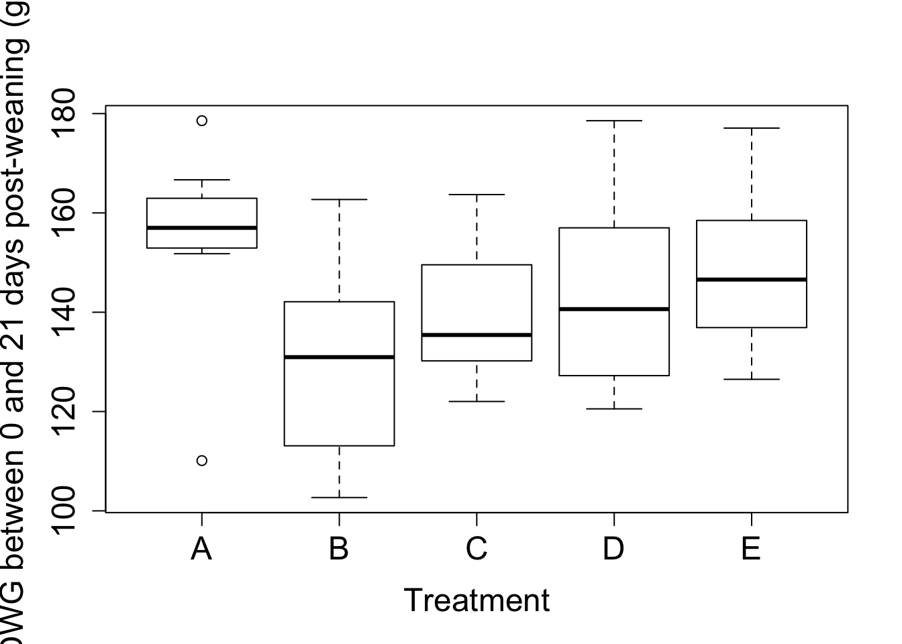
While interpreting the boxplots, we have to keep in mind that each boxplot is based on only 8 observations. The plot suggests that the ADWG is the largest in treatment group A (ZnO addition), but from the graph is it hard to see whether this will be siginificantly higher than the ADWG of the vaccination groups (C, D and E). From these plots, we can already see that the variances are more less equal.
boxplot(PWD$ADWG0050~PWD$Treatment, xlab="Treatment",
ylab="ADWG between 0 and 50 days post-weaning (g/day",
cex.axis=1.5,cex.lab=1.5)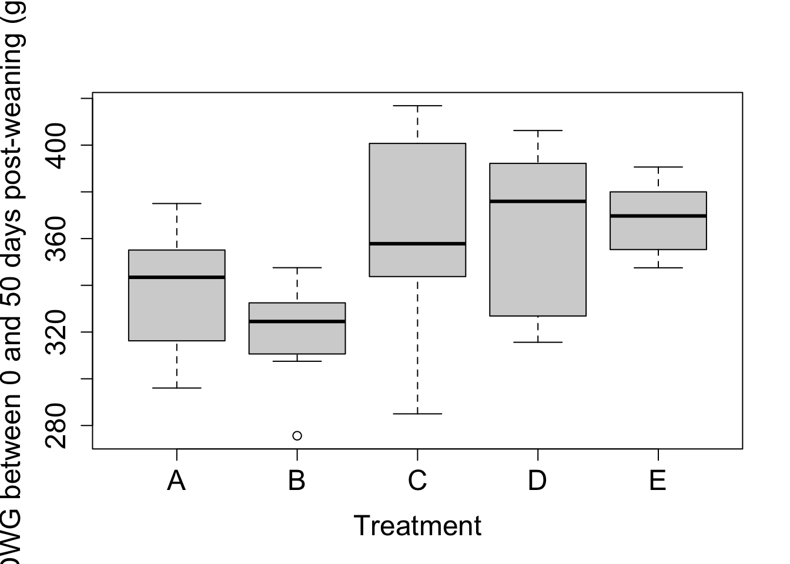
The boxplots for ADWG0050 suggest that the three vaccination treatment have larger ADWG as compared to the other two treatments. Again, formal statistical analysis is needed to check whether this effect can be attributed by chance or whether it is caused by the vaccination.
5.1 One-Way ANOVA
5.1.1 Comparison of Three Means
Let us start with the simplest extension of the setting of the two-sample \(t\)-test (i.e. the two-sample problem): comparison of three means. One way of formulating the problem is by means of hypotheses: \[ H_0: \mu_1=\mu_2=\mu_3 \text{ versus } H_1: \text{ not } H_0. \] Of course we are also interested in estimating the effect sizes: \(\mu_1-\mu_2\), \(\mu_1-\mu_3\) and \(\mu_2-\mu_3\) (and their confidence intervals).
To illustrate this simple problem, we will focus on the three vaccination treatment groups of the PWD example.
Let \(Y_i\) denote the outcome of observation \(i\) (\(i=1,\ldots, n\)). Consider the linear regression model
\[\begin{equation} \tag{5.1} Y_i = \beta_0+\beta_1 x_{i1} +\beta_2 x_{i2} +\eps_i \end{equation}\]
with \(\eps_i \iid N(0,\sigma^2)\) and with the dummy regressors
\[\begin{eqnarray*} x_{i1} &=& 1 \text{ if observation i belongs to treatment C group} \\ &=& 0 \text{ if observation i belongs to another treatment group} \end{eqnarray*}\]
and
\[\begin{eqnarray*} x_{i2} &=& 1 \text{ if observation i belongs to treatment D group} \\ &=& 0 \text{ if observation i belongs to another treatment group} \end{eqnarray*}\]
The treatment group with \(x_{i1}=x_{i2}=0\) is referred to as the reference group and in the (reduced) PWD example this corresponds to the treatment E group.
For an observation in the reference group E the regression model becomes \[ Y_i = \beta_0+\eps_i \] with \(\eps_i \iid N(0,\sigma^2)\).
For an observation in treatment C group the model becomes \[ Y_i = \beta_0+\beta_1 + \eps_i \] with \(\eps_i \iid N(0,\sigma^2)\).
For an observation in treatment D group the model becomes \[ Y_i = \beta_0+\beta_2 + \eps_i \] with \(\eps_i \iid N(0,\sigma^2)\).
The interpretation of the \(\beta\)-parameters is thus straightforward:
\[\begin{eqnarray*} \beta_0 &=& \E{Y \mid \text{treatment E}} \\ \beta_1 &=& (\beta_0+\beta_1)-\beta_0 = \E{Y \mid \text{treatment C}} - \E{Y \mid \text{treatment E}} \\ \beta_2 &=& (\beta_0+\beta_2)-\beta_0 = \E{Y \mid \text{treatment D}}-\E{Y \mid \text{treatment E}} . \end{eqnarray*}\] In other words: parameter \(\beta_0\) is the mean outcome in the reference group (here: treatment E). Parameter \(\beta_1\) is the effect of treatment C relative to the reference treatment E. Parameter \(\beta_2\) is the effect of treatment D relative to the reference treatment E.
We now reformulate the models, making use of the \(\mu\)-notation. Models in terms of the obvious \(\mu\) notation are known as the cell means models.
\[\begin{eqnarray*} Y_i &=& \beta_0+\eps_i = \mu_1+\eps_i \;\;\text{ for the reference group = treatment E}\\ Y_i &=& \beta_0+\beta_1+ \eps_i = \mu_2+\eps_i \;\;\text{ for treatment C} \\ Y_i &=& \beta_0+\beta_2 + \eps_i = \mu_3+\eps_i \;\;\text{ for treatment D} , \end{eqnarray*}\]
with \(\eps_i \iid N(0,\sigma^2)\) en with \(\mu_j = \E{Y \mid \text{treatment group } j}\).
The original null hypothesis \(H_0:\mu_1=\mu_2=\mu_3\) can now equivalently be formulated as \[ H_0: \beta_1=\beta_2=0. \]
Since Model (5.1) is a linear regression model, we can use the methods from Chapter 3 for estimating the parameters, their variances (standard errors) and for constructing confidence intervals.
On the other hand, testing \(H_0: \beta_1=\beta_2=0\) cannot be done with the \(t\)-tests from Chapter 3, but the F-test will be do the job. This will be introduced in this chapter.
Example (PWD)
We analyse the PWD data (only treatments C,D and E) by explicitly coding the dummies.
# subset of the data with only treatments C, D, and E
PWD3 <- PWD %>% filter(Treatment%in%c("C","D","E")) %>% droplevels()
# the droplevels function resets the levels of the new Treatment factor variable
str(PWD3)## 'data.frame': 24 obs. of 9 variables:
## $ Pen : num 3 4 5 6 9 10 13 14 15 16 ...
## $ Treatment: Factor w/ 3 levels "C","D","E": 1 1 3 3 2 2 1 1 3 3 ...
## $ Feeder : num 2 2 3 3 5 5 7 7 8 8 ...
## $ Sex : num 1 1 1 1 1 1 2 2 2 2 ...
## $ W0 : num 108 99 103 104 102 ...
## $ P0 : num 16 16 16 16 16 16 16 16 16 16 ...
## $ ADWG0021 : num 131 152 134 147 159 ...
## $ ADWG2150 : num 608 569 502 500 585 ...
## $ ADWG0050 : num 408 394 348 352 406 ...Next we manually construct the dummies.
xC<-ifelse(PWD3$Treatment=="C",1,0)
xD<-ifelse(PWD3$Treatment=="D",1,0)
# let's check:
PWD3$Treatment## [1] C C E E D D C C E E D D C C E E D D C C E E D D
## Levels: C D ExC## [1] 1 1 0 0 0 0 1 1 0 0 0 0 1 1 0 0 0 0 1 1 0 0 0 0xD## [1] 0 0 0 0 1 1 0 0 0 0 1 1 0 0 0 0 1 1 0 0 0 0 1 1Now we fit the regression model.
m<-lm(PWD3$ADWG0021~xC+xD)
summary(m)##
## Call:
## lm(formula = PWD3$ADWG0021 ~ xC + xD)
##
## Residuals:
## Min 1Q Median 3Q Max
## -23.065 -11.068 -2.604 11.440 34.970
##
## Coefficients:
## Estimate Std. Error t value Pr(>|t|)
## (Intercept) 148.438 5.925 25.054 <2e-16 ***
## xC -8.929 8.379 -1.066 0.299
## xD -4.836 8.379 -0.577 0.570
## ---
## Signif. codes: 0 '***' 0.001 '**' 0.01 '*' 0.05 '.' 0.1 ' ' 1
##
## Residual standard error: 16.76 on 21 degrees of freedom
## Multiple R-squared: 0.05141, Adjusted R-squared: -0.03893
## F-statistic: 0.5691 on 2 and 21 DF, p-value: 0.5745From this analysis we conclude that
the ADWG in the treatment C group is estimated to be \(8.9\) g/day (SE \(8.4\) g/day) less than in the reference treatment group E. This effect is not significant at the 5% level of significance (\(p=0.299\)).
the ADWG in the treatment D group is estimated to be \(4.8\) g/day (SE \(8.4\) g/day) less than in the reference treatment group E. This effect is not significant at the 5% level of significance (\(p=0.570\)).
the ADWG in the reference treatment group E is estimated to be \(148.4\) g/day (SE \(5.9\) g/day).
Fortunately, the dummy coding does not need to be done manually in R. If the factor variable is correctly defined as a factor variable in the R data set, R will recognise it as such in the lm function.
Let’s try the analysis with the lm function and with Treatment as factor.
m<-lm(ADWG0021~Treatment,data=PWD3)
summary(m)##
## Call:
## lm(formula = ADWG0021 ~ Treatment, data = PWD3)
##
## Residuals:
## Min 1Q Median 3Q Max
## -23.065 -11.068 -2.604 11.440 34.970
##
## Coefficients:
## Estimate Std. Error t value Pr(>|t|)
## (Intercept) 139.509 5.925 23.547 <2e-16 ***
## TreatmentD 4.092 8.379 0.488 0.630
## TreatmentE 8.929 8.379 1.066 0.299
## ---
## Signif. codes: 0 '***' 0.001 '**' 0.01 '*' 0.05 '.' 0.1 ' ' 1
##
## Residual standard error: 16.76 on 21 degrees of freedom
## Multiple R-squared: 0.05141, Adjusted R-squared: -0.03893
## F-statistic: 0.5691 on 2 and 21 DF, p-value: 0.5745The summary function shows us the parameter estimates of the dummy-coded regression model. R has constructed the dummies TreatmentD and TreatmentE. However, these are coded differently from what we have done (xC and xD). The difference is caused by the choice of the reference group. We have chosen for the treatment E group, whereas R has chosen for treatment C group. The default choice of R is the factor level which is ranked first in alphabetical order (here C, among the levels C, D, and E). Later we will see how the user can choose the reference group.
The parameter estimates with this other dummy coding have also a straightforward interpretation
The estimate of the intercept (\(\hat\beta_0=139.5\)) gives us an estimate of the ADWG of \(139.5\) g/day in the reference treatment C group.
From \(\hat\beta_1=4.092\) we conclude that piglets treated with D (vaccination and high protein diet in all three phases) show on average \(4.1\) g/day more weight gain as compared to animals treated with C (vaccination and high protein diet only in phases 2 and 3). This comes with a SE of \(8.4\) g/day. The \(p\)-value for testing equality of means in treatment groups C and D is given by \(p=0.63\), and hence there is no evidence for any effect of D as compared to C (i.e. the effect of having also high protein diet in phase 1 among the vaccinated piglets is neglectable).
A similar conclusion holds for the effect of treatment E (vaccination and high protein diet in all three phases and with nutraceuticals) relative to treatmetn C. The effect size is estimated as \(8.9\) g/day in favor of treatment E (SE = \(8.4\) g/day). This effect is not significant at the 5% level of significance (\(p=0.299\)).
5.1.2 The ANOVA model
Although the model formation of the previous section is correct, this is not the conventional model formulation in the analysis of variance (ANOVA). ANOVA comes with its own terminology and model notation.
A factor (or factor variable) refers to different populations or groups. These groups are often referred to as treatments, even if their meaning has nothing to do with treatments (again this is conventional terminology).
The groups or treatments are referred to as the levels of the factor. A level actually refers to a population (e.g treatment level D refers so to the population of all pens of 16 piglets vaccinated and treated with a high protein diet in the three phases).
In general, consider a study with a factor variable with \(t\geq 2\) levels. The outcomes are denoted as \(Y_{ij}\) for observation \(j=1,\ldots, n_i\) from group \(i=1,\ldots, t\), with \(n_i\) the number of observations (replicates) in group \(i\). Observation \(Y_{ij}\) is sometimes referred to as the \(j\)th replicate from treatment \(i\).
The ANOVA model is typically written in its factor effect model formulation,
\[\begin{equation} \tag{5.2} Y_{ij} = \mu + \tau_i +\eps_{ij} \;\;\; i=1,\ldots, t; j=1,\ldots, n_i \end{equation}\] with
error term \(\eps_{ij} \iid N(0,\sigma^2)\)
intercept \(\mu\)
effect \(\tau_i\) of treatment \(i\).
Just as for linear regression models, we can equivalently write the model as \[ Y \mid \text{treatment }i \sim N(\mu_i,\sigma^2) \;\;\;\text{ with }\;\;\; \mu_i=\E{Y \mid \text{treatment }i}=\mu+\tau_i. \]
Figure 5.1 illustrates how the model specifies the conditional distributions of the outcomes in the \(t\) treatment groups. Note that the model also implies that the (residual) variance is constant across the \(t\) treatment groups. This assumption is referred to as homoscedasticity. Model (5.2) actually specifies the conditional distributions of the outcomes in the \(t\) treatment groups.
Observe that the model actually parameterises the \(t\) population means \(\mu_i\) as \(\mu_i=\mu+\tau_i\) and that this parameterisation counts \(t+1\) parameters (1 \(\mu\) parameter and \(t\) \(\tau_i\)-parameters). Hence, the model is overparameterised and the \(t+1\) parameters are not uniquely specified (and they are not uniquely estimable). A solution exists in imposing a restriction on the \(\tau\)-parameters. At this time we only consider the restriction \(\tau_1=0\). This restriction corresponds to the dummy coding from Section 5.1.1. In particular, consider the regression model
\[\begin{equation} \tag{5.3} Y_i = \beta_0 + \sum_{j=1}^{t-1} \beta_j x_{ij} + \eps_i \end{equation}\] with \(\eps_i \iid N(0,\sigma^2)\).
Define the dummies as (\(k=1,\ldots, t-1\))
\[\begin{eqnarray*} x_{ik} &=& 1 \text{ if observation i belongs to treatment group k+1} \\ &=& 0 \text{ if observation i belongs to another treatment group} \end{eqnarray*}\]
(note that in this coding the index \(i\) refers to the outcome notation \(Y_i\) of the regression model and not to the index \(i\) of the outcome notation \(Y_{ij}\) of the ANOVA model).
The treatment with observations for which \(x_{i1}=x_{i2}=\cdots = x_{it-1}=0\) is then referred to as the reference treatment, reference group or reference level.
With these dummy definitions we become
\[\begin{eqnarray*} Y_i &=& \mu_1+\eps_i = \mu + \eps_i = \beta_0 + \eps_i \\ Y_i &=& \mu_2+\eps_i = \mu+ \tau_2 +\eps_i = \beta_0 + \beta_1+\eps_i \\ \vdots &=& \vdots \\ Y_i &=& \mu_t+\eps_i = \mu+ \tau_t +\eps_i =\beta_0 + \beta_{t-1} +\eps_i, \end{eqnarray*}\]
always with \(\eps_i \iid N(0,\sigma^2)\). The equivalence of the \(\tau\) and \(\beta\)-parameters is immediate.
Figure 5.1: Illustration of the ANOVA model (5.2). The black horizontal lines show the contional means. The individual points represent sample observations. The density functions are also shown.
5.1.3 Parameter Estimators
The parameters of the ANOVA model (5.2) are estimated via the \(\beta\)-parameters of the equivalent regression model formulation, but the final results are presented in terms of the factor effects ANOVA model \(\mu\) en \(\tau\)-parameters. From the direct relationship between the two sets of parameters we find \[ \hat\mu = \hat\beta_0 = \bar{Y}_1 \] with \(\bar{Y}_1\) the sample mean of the outcomes in the first treatment group (reference group). Further, \(\hat\tau_1=\tau_1=0\) (imposed restriction) and for \(i=2,\ldots, t\), \[ \hat\tau_i = \hat\beta_{i-1} = \bar{Y}_i-\bar{Y}_1 \] with \(\bar{Y}_i\) the sample mean of the outcomes in treatment group \(i\).
We write the predictions as (\(i=1,\ldots, t\)) \[ \hat{Y}_{ij} = \hat\mu+\hat\tau_i = \bar{Y}_i, \] but in the first place they are to be interpreted as the estimates of the group means (conditional means) \(\mu_i\). So we also write \(\hat\mu_i = \hat\mu+\hat\tau_i\).
The sampling distributions of the parameter estimators also follows immediately from the theory of the regression analysis of the previous chapters. All parameter estimators are unbiased and normally distributed. We denote the variances as \(\var{\hat\mu}=\sigma_\mu^2\) and \(\var{\hat\tau_i}=\sigma_{\tau_i}^2\), and the corresponding unbiased estimators of their variances are denoted as \(S_\mu^2\) or \(\hat\sigma^2_\mu\) and \(S_{\tau_i}^2\) or \(\hat\sigma^2_{\tau_i}\). With these estimators confidence intervals of the parameters and hypothesis tests about the parameters can be constructed.
5.1.4 Sum of Squares
Because of the equivalence of the ANOVA and regression models, the sum of squares are the same for both models. For hystorical reasons and because of the specific notation and meaning of the ANOVA models, the sum of squares are formulated differently (though numerically equal).
The total sum of squares (SSTot) remains unchanged, but in ANOVA notation this becomes \[ \SSTot = \sum_{i=1}^t \sum_{j=1}^{n_i} (Y_{ij} - \bar{Y})^2. \] So it measures the variability of the sample outcomes without accounting for the model (treatment groups); it is related to the marginal distribution of the outcomes. The number of degrees of freedom is \(n-1\) and \(\SSTot/(n-1)\) is the sample variance of the outcome. It is an estimator of the variance of the marginal outcome distribution.
The residual sum of squares is written as \[ \SSE= \sum_{i=1}^t \sum_{j=1}^{n_i} (Y_{ij} - \hat{Y}_{ij})^2 =\sum_{i=1}^t \sum_{j=1}^{n_i} (Y_{ij} - \bar{Y}_i)^2, \] which we can also write as \[ \SSE= \sum_{i=1}^t (n_i-1) \left(\frac{1}{n_i-1} \sum_{j=1}^{n_i} (Y_{ij} - \bar{Y}_i)^2\right) = \sum_{i=1}^t (n_i-1) S_i^2 \] with \(S_i^2\) the sample variance in group \(i\). \(\MSE=\SSE/(n-t)\) is thus the weighted average of the sample variances \(S_i^2\) and since all treatment-specific variances are assumed to coincide, MSE is the pooled variance estimator of \(\sigma^2\).
In the context of ANOVA the sum of squares of the regression (SSR) is renamed to SST, the sum of squares of the treatment or the treatment sum of squares. Sometimes it is also named the between sum of squares (SSBetween); this refers to the sum of squares as a measure of the variability between the groups. We write \[ \SST = \sum_{i=1}^t \sum_{j=1}^{n_i} (\hat{Y}_{ij}-\bar{Y})^2 = \sum_{i=1}^t \sum_{j=1}^{n_i} (\bar{Y}_{i}-\bar{Y})^2 = \sum_{i=1}^t n_i (\bar{Y}_i - \bar{Y})^2. \] This expression shows that it is a measure for the variability of the treatment-specific sample means \(\bar{Y}_i\) about the overall sample mean \(\bar{Y}\). If SST is small, then all sample means are close to one another and thus also close to the overall sample mean. If SST is large, then at least one treatment-specific sample mean is far away from the overall sample mean and this gives evidence that \(H_0: \tau_1=\cdots =\tau_t=0\) is not true.
SST has \(t-1\) degrees of freedom and the corresponding mean sum of squares thus becomes \(\MST=\SST/(t-1)\).
The decomposition of the total sum of squares still holds and is now written as \[ \SSTot = \SST + \SSE. \]
5.2 The \(F\)-test
5.2.1 Introduction
In Section 5.1.1 we have translated the research question into the hypotheses \[ H_0: \mu_1=\mu_2=\mu_3 \text{ versus } H_1: \text{ not } H_0. \]
Based on Model (5.1) this null hypothesis can be reformulated as \[ H_0: \beta_1=\beta_2=0. \] From the previous chapters we know that each \(\beta\)-parameter can be separately tested (e.g. \(H_0: \beta_1=0\)) via a \(t\)-test, but in this section we will develop a method that allows us to test hypotheses that involve multiple \(\beta\)-parameters with only a single test: the \(F\)-test.
5.2.2 The General Linear Hypothesis
The \(F\)-test that we will develop here, is more general, i.e. it can also be used for testing hypotheses other than those of the form \(H_0: \beta_1=\beta_2=0\).
In this section the \(\beta\)-parameters refer to the parameters in the multiple linear regression model.
Let
\(\mb{A}\) denote an \(m\times p\) matrix, with \(1\leq m \leq p\) and rank(\(\mb{A}\))=\(m\)
\(\mb{a}\) an \(m\times 1\) constant vector.
Consider now the hypotheses \[\begin{equation} \tag{5.4} H_0: \mb{A}\mb\beta = \mb{a} \text{ versus } H_1: \mb{A}\mb\beta \neq \mb{a}. \end{equation}\]
This null hypothesis is known as the general linear hypothesis.
With this formulation the null hypothesis \(H_0:\beta_1=\beta_2=0\) can be rewritten as \[ \mb{A} = \begin{pmatrix} 0 & 1 & 0 \\ 0 & 0 & 1 \end{pmatrix} \] and \(\mb{a}^t=(0,0)\).
In the PWD example with only the vaccination groups C, D and E, we could. e.g. be interested in comparing the limited high protein diet (C) with the full high protein diets (D and E). With the dummy coding with C as the reference group, the null hypothesis can be written as (5.4) with \[ \mb{A} = \begin{pmatrix} 1 & -1/2 & -1/2 \end{pmatrix} \] and \(\mb{a}=0\).
More complex examples will be given later, but first we introduce the \(F\)-test for the general linear hypothesis. We will do so in the following steps:
provide an expression for the restricted LSE of \(\mb\beta\) under the general linear hypothesis (i.e. a LSE of \(\mb\beta\) that satisfies the general linear hypothesis)
provide an expression for the restricted SSE (i.e. the SSE obtained under the general linear hypothesis)
provide the \(F\)-test statistic and its null distribution.
Step 1: The restricted LSE is given by (without proof) \[ \hat{\mb\beta}_0=\hat{\mb\beta}+(\mb{X}^t\mb{X})^{-1}\mb{A}^t[\mb{A}(\mb{X}^t\mb{X})^{-1}\mb{A}^t]^{-1}(\mb{a}-\mb{A}\hat{\mb\beta}). \] Thus for this estimator it holds that \[ \mb{A}\hat{\mb\beta}_0 = \mb{a}. \]
Step 2: The restricted SSE is given by (without proof) \[ \SSE_0 = \Vert \mb{Y}-\mb{X}\hat{\mb\beta}_0\Vert^2 = \SSE + (\mb{A}\hat{\mb\beta}-\mb{a})^t[\mb{A}(\mb{X}^t\mb{X})^{-1}\mb{A}^t]^{-1}(\mb{A}\hat{\mb\beta}-\mb{a}). \]
Step 3: The \(F\)-test statistic for testing \(H_0: \mb{A\beta}=\mb{a}\) is given by
\[\begin{equation} F = \frac{(\SSE_0-\SSE)/m}{\MSE}. \tag{5.5} \end{equation}\]
It can be shown (here without proof) that under the general linear hypothesis, \[ F \sim F_{m,n-p} \] with \(p\) the number of \(\beta\)-parameters in the linear model.
In the special case of the one-way ANOVA, the general linear hypothesis for \[ H_0: \beta_1=\cdots = \beta_{t-1}=0 \] the \(F\)-test statistic reduces to \[ F = \frac{\SST/(t-1)}{\MSE} \] with null distribution \(F_{t-1,n-t}\).
It can be shown that for \(t=2\) (i.e. the comparison of two means, \(\beta_1=0\)), the \(F\)-test statistic is the square of the \(t\)-test statistic for testing \(\beta_1=0\). The \(p\)-values of the \(F\)-test and the two-sided \(t\)-tests coincide in this case.
Example (PWD)
Consider again the PWD example with only treatment groups C, D and E. Suppose we want to assess whether the three ADWG means are equal, then we know that this can be tested with the \(F\)-statistic \[ F = \frac{\SST/(t-1)}{\MSE}. \]
m<-lm(ADWG0021~Treatment, data=PWD3)
anova(m)## Analysis of Variance Table
##
## Response: ADWG0021
## Df Sum Sq Mean Sq F value Pr(>F)
## Treatment 2 319.6 159.81 0.5691 0.5745
## Residuals 21 5897.0 280.81The \(F\)-statistic is equal to \(0.5691\), with \(p=0.5745\). Hence, at the \(5\%\) level of signicance we conclude that there is no evidence against the null hypothesis of equal ADWG among the three vaccination treatment groups.
We now analyse the full PWD dataset with all of its five treatment groups. The null hypothesis of interest is that the ADWG is the same for all 5 treatments.
m<-lm(ADWG0021~Treatment, data=PWD)
anova(m)## Analysis of Variance Table
##
## Response: ADWG0021
## Df Sum Sq Mean Sq F value Pr(>F)
## Treatment 4 2771 692.75 2.1048 0.1011
## Residuals 35 11520 329.13Now the \(F\)-statistic equals \(2.1048\) with a \(p\)-value of \(0.1011\). This \(p\)-value still does not reach statistical significance at the 5% level of significance, but the \(p\)-value is rather small than large.
A similar analysis on the ADWG 50 days post weaning gives the following results.
m<-lm(ADWG0050~Treatment, data=PWD)
anova(m)## Analysis of Variance Table
##
## Response: ADWG0050
## Df Sum Sq Mean Sq F value Pr(>F)
## Treatment 4 14235 3558.7 3.9011 0.01009 *
## Residuals 35 31928 912.2
## ---
## Signif. codes: 0 '***' 0.001 '**' 0.01 '*' 0.05 '.' 0.1 ' ' 1From this analysis, at the 5% level of significance, we can conclude that at least two treatment groups show different ADWGs (\(p=0.01\)). The \(F\)-test, however, does not tell us what groups show different mean outcomes. Later, in Section 5.6, we will see methods to formally identify these groups. A first indication can be given by looking at the individual parameter estimates.
summary(m)##
## Call:
## lm(formula = ADWG0050 ~ Treatment, data = PWD)
##
## Residuals:
## Min 1Q Median 3Q Max
## -78.307 -17.500 2.547 16.453 53.568
##
## Coefficients:
## Estimate Std. Error t value Pr(>|t|)
## (Intercept) 337.58 10.68 31.613 <2e-16 ***
## TreatmentB -17.77 15.10 -1.177 0.2472
## TreatmentC 25.73 15.10 1.704 0.0973 .
## TreatmentD 26.41 15.10 1.749 0.0891 .
## TreatmentE 30.94 15.10 2.049 0.0481 *
## ---
## Signif. codes: 0 '***' 0.001 '**' 0.01 '*' 0.05 '.' 0.1 ' ' 1
##
## Residual standard error: 30.2 on 35 degrees of freedom
## Multiple R-squared: 0.3084, Adjusted R-squared: 0.2293
## F-statistic: 3.901 on 4 and 35 DF, p-value: 0.01009This output shows that R has chosen treatment group A as the reference group. The default choice of R is the factor level that is ranked first in alphabetical order. Thus, the estimate of the intercept, \(\hat\mu=\hat\beta_0=337.58\), is the estimate of the ADWG of piglets that receive normal feed with the addition of ZnO. The other parameter esimates represent the difference in ADWG of the corresponding treatment as compared to the treatment A.
Exercise: PWD - FCR
For this exercise we consider the PWD example with the food conversion rates as outcomes. The data is given in the PWD2 dataset.
load("Data/PWD2.RData")
str(PWD2)## 'data.frame': 20 obs. of 7 variables:
## $ Feeder : num 1 2 3 4 5 6 7 8 9 10 ...
## $ Feed : chr "A" "C" "E" "B" ...
## $ Sex : num 1 1 1 1 1 2 2 2 2 2 ...
## $ W0 : num 221 208 208 214 212 ...
## $ FCR0021: num 1.85 2.1 1.94 2.4 2.03 ...
## $ FCR2150: num 1.48 1.23 1.32 1.45 1.3 ...
## $ FCR0050: num 1.55 1.37 1.43 1.6 1.42 ...head(PWD2)## Feeder Feed Sex W0 FCR0021 FCR2150 FCR0050
## 1 1 A 1 221.0 1.850701 1.479482 1.549167
## 2 2 C 1 207.5 2.100263 1.233141 1.367305
## 3 3 E 1 207.5 1.942063 1.322581 1.427212
## 4 4 B 1 214.0 2.396541 1.450472 1.599851
## 5 5 D 1 212.5 2.025250 1.304099 1.419576
## 6 6 A 2 205.5 1.757930 1.478463 1.536878The variable Feed is here the treatment variable. We will first make it a factor variable in R.
PWD2$Feed<-as.factor(PWD2$Feed)
str(PWD2)## 'data.frame': 20 obs. of 7 variables:
## $ Feeder : num 1 2 3 4 5 6 7 8 9 10 ...
## $ Feed : Factor w/ 5 levels "A","B","C","D",..: 1 3 5 2 4 1 3 5 2 4 ...
## $ Sex : num 1 1 1 1 1 2 2 2 2 2 ...
## $ W0 : num 221 208 208 214 212 ...
## $ FCR0021: num 1.85 2.1 1.94 2.4 2.03 ...
## $ FCR2150: num 1.48 1.23 1.32 1.45 1.3 ...
## $ FCR0050: num 1.55 1.37 1.43 1.6 1.42 ...Analyse the FCR0050 outcome. Does treatment has an effect on the average food conversion rate 50 days post-weaning? Interpret the parameter that is associated with the effect of treatment (feed) D and give a 95% confidence interval of this effect parameter
Try to make this exercise yourself. If you are ready you can expand this page and look at a solution
m<-lm(FCR0050~Feed,data=PWD2)
anova(m)## Analysis of Variance Table
##
## Response: FCR0050
## Df Sum Sq Mean Sq F value Pr(>F)
## Feed 4 0.083947 0.0209867 4.7114 0.01157 *
## Residuals 15 0.066817 0.0044545
## ---
## Signif. codes: 0 '***' 0.001 '**' 0.01 '*' 0.05 '.' 0.1 ' ' 1summary(m)##
## Call:
## lm(formula = FCR0050 ~ Feed, data = PWD2)
##
## Residuals:
## Min 1Q Median 3Q Max
## -0.105678 -0.022160 -0.003611 0.015090 0.190740
##
## Coefficients:
## Estimate Std. Error t value Pr(>|t|)
## (Intercept) 1.54970 0.03337 46.439 <2e-16 ***
## FeedB 0.03589 0.04719 0.760 0.4588
## FeedC -0.07672 0.04719 -1.626 0.1248
## FeedD -0.12935 0.04719 -2.741 0.0152 *
## FeedE -0.11605 0.04719 -2.459 0.0266 *
## ---
## Signif. codes: 0 '***' 0.001 '**' 0.01 '*' 0.05 '.' 0.1 ' ' 1
##
## Residual standard error: 0.06674 on 15 degrees of freedom
## Multiple R-squared: 0.5568, Adjusted R-squared: 0.4386
## F-statistic: 4.711 on 4 and 15 DF, p-value: 0.01157From the ANOVA table we read the results of the \(F\)-test for testing no-treatment effect on the average FCR0050. The \(p\)-value equals \(0.0116\). Hence, at the 5% level of significance we conclude that not all treatments give the same average FCR0050.
From the summary function we can read the parameter estimate that corresponds to treatment D. The parameter is estimated as \(-0.129\). Since treatment A acts as the reference group, the parameter estimate is interpreted as follows: the FCR 50 days post-weaning is estimated to be on average \(0.129\) kg growth / kg feed smaller among piglets in group D (vaccination, with high protein/energy feedi in all three phases) than among piglets in group A (normal feed with ZnO). This comes with a standard error of \(0.047\) kg growth / kg feed. At the 5% level of signifcance this effect is significantly different from zero (\(p=0.0152\)).
With the standard error, can calculate the 95% CI of the effect parameter: \[ [-0.12935- 0.04719 t_{15;0.975}, -0.12935+ 0.04719 t_{15;0.975}] = [-0.2299331,-0.0287669]. \] Hence, we with a probability of 95% we expect that in treatment group D the average FCR 50 days post-weaning is \(29\) to \(230\) g growth / kg feed smaller than in treatment group A.
5.3 Contrasts
5.3.1 Setting the reference level
Sometimes the reference level chosen by R is not the best choice in the sense that the parameters in the model do not have the most informative interpretation in terms of the research question. In the PWD example, we can consider treatment B (normal feed) as the standard feed and hence comparison of the other treatments with B makes more sense than comparing all the treatments with group A (which is the default reference group in R). The next R code shows how the dummy coding can be changed.
contrasts(PWD$Treatment)## B C D E
## A 0 0 0 0
## B 1 0 0 0
## C 0 1 0 0
## D 0 0 1 0
## E 0 0 0 1contr.NRef<-matrix(c(1,0,0,0,
0,0,0,0,
0,1,0,0,
0,0,1,0,
0,0,0,1),nrow=5,byrow=T)
colnames(contr.NRef)<-c("A","C","D","E")
contr.NRef## A C D E
## [1,] 1 0 0 0
## [2,] 0 0 0 0
## [3,] 0 1 0 0
## [4,] 0 0 1 0
## [5,] 0 0 0 1contrasts(PWD$Treatment)<-contr.NRef
m<-lm(ADWG0050~Treatment, data=PWD)
anova(m)## Analysis of Variance Table
##
## Response: ADWG0050
## Df Sum Sq Mean Sq F value Pr(>F)
## Treatment 4 14235 3558.7 3.9011 0.01009 *
## Residuals 35 31928 912.2
## ---
## Signif. codes: 0 '***' 0.001 '**' 0.01 '*' 0.05 '.' 0.1 ' ' 1summary(m)##
## Call:
## lm(formula = ADWG0050 ~ Treatment, data = PWD)
##
## Residuals:
## Min 1Q Median 3Q Max
## -78.307 -17.500 2.547 16.453 53.568
##
## Coefficients:
## Estimate Std. Error t value Pr(>|t|)
## (Intercept) 319.81 10.68 29.949 < 2e-16 ***
## TreatmentA 17.77 15.10 1.177 0.24723
## TreatmentC 43.50 15.10 2.881 0.00674 **
## TreatmentD 44.18 15.10 2.925 0.00600 **
## TreatmentE 48.71 15.10 3.225 0.00273 **
## ---
## Signif. codes: 0 '***' 0.001 '**' 0.01 '*' 0.05 '.' 0.1 ' ' 1
##
## Residual standard error: 30.2 on 35 degrees of freedom
## Multiple R-squared: 0.3084, Adjusted R-squared: 0.2293
## F-statistic: 3.901 on 4 and 35 DF, p-value: 0.01009Every column of the contrast matrix contr.NRef represents a dummy regressor. The matrix indicates for which factor level the dummy is set to 1. The order of the lines of the matrix is the alphabetical order of the factor levels.
Note that the \(F\)-test in the ANOVA table is the same as for the original dummy coding. This is because the null hypotheses for both dummy codings imply the same model: \(\E{Y\mid \text{treatment } j} = \mu\), for all \(j=1,2,\ldots, 5\).
From the output of the summary function we read that the ADWG is the smallest in the reference group B (normal feed). All other treatments show on average a larger ADWG. Each of the \(p\)-values that correspond to testing the hypotheses \(H_0:\tau_i=0\) versus \(H_0:\tau_i\neq 0\) for the vaccination groups C, D and E, is smaller than \(\alpha=0.05\) and hence we are tempted to conclude that the vaccinated piglets show a larger ADWG 50 days post-weaning than piglets that were not vaccinated and received a normal diet. However, in Section 5.6 we will argue that this procedure is not allowed.
5.3.2 Examples of other contrasts
The contrasts in the matrix \(\mb{A}\) that make up the general linear hypothesis can also be used for estimating and testing other interesting effects.
In the PWD example, we could be interested in comparing the ADWG of vaccinated piglets (groups C, D and E) with the ADWG of the piglets that were not vaccinated (groups A and B). So we are interested in the contrast \[ \frac{1}{3}(\mu_3+\mu_4+\mu_5) - \frac{1}{2}(\mu_1+\mu_2). \] In terms of the \(\tau\)-parameters, and with (the default) reference group A, this contrast can be written as \[ \frac{1}{3}((\mu+\tau_3)+(\mu+\tau_4)+(\mu+\tau_5)) - \frac{1}{2}((\mu+0)+(\mu+\tau_2)) \] which simplifies to \[ \frac{1}{3}(\tau_3+\tau_4+\tau_5) - \frac{1}{2}(\tau_2). \] In terms of the \(\beta\)-parameters this becomes \[ \frac{1}{3}(\beta_2+\beta_3+\beta_4) - \frac{1}{2}(\beta_1). \] Hence, this contrast is obtained as \(\mb{A}\mb\beta\) with \[ \mb{A}=(0, -1/2, 1/3, 1/3, 1/3). \]
The null hypothesis of interest can be formulated as a general linear hypothesis, \(H_0: \mb{A}\mb\beta=\mb{a}\) with \(\mb{a}=0\). This can be tested with the \(F\)-test from Section 5.2. Moreover, since \(m=1\) in this case (i.e. \(\mb{A}\) has only one row), the null hypothesis can also be tested with a \(t\)-test. This is demonstrated in the next chunck of R code.
# reload the data so that the dummy-defining constrasts are set back to default
load(file="Data/PWD.RData")
m<-lm(ADWG0050~Treatment,data=PWD)
A<-rbind("vaccination - no vaccination"=c(0,-1/2,1/3,1/3,1/3))
vaccination<-glht(m,linfct=A)
summary(vaccination,test=univariate())##
## Simultaneous Tests for General Linear Hypotheses
##
## Fit: lm(formula = ADWG0050 ~ Treatment, data = PWD)
##
## Linear Hypotheses:
## Estimate Std. Error t value Pr(>|t|)
## vaccination - no vaccination == 0 36.576 9.748 3.752 0.000635 ***
## ---
## Signif. codes: 0 '***' 0.001 '**' 0.01 '*' 0.05 '.' 0.1 ' ' 1
## (Univariate p values reported)confint(vaccination,calpha = univariate_calpha())##
## Simultaneous Confidence Intervals
##
## Fit: lm(formula = ADWG0050 ~ Treatment, data = PWD)
##
## Quantile = 2.0301
## 95% confidence level
##
##
## Linear Hypotheses:
## Estimate lwr upr
## vaccination - no vaccination == 0 36.5764 16.7870 56.3658Conclusion: we estimate that vaccinated piglets show on average an ADWG that is \(36.6\) g/day (SE \(9.7\) g/day) larger than piglets that were not vaccinated (50 days post-weaning). The 95% confidence interval of this effect goes from \(16.8\) g/day to \(56.4\) g/day. This effect is signicant at the 5% level of significance (\(p=0.0006\)).
This analysis made use of the glht function from the multcomp R package. Some of the arguments of the functions make look weird, because the function was also developed for multiple hypotheses testing; in Section 5.6 we will use the function again.
We now redo the analysis, but without the use of the glht function.
A<-matrix(c(0,-1/2,1/3,1/3,1/3),nrow=1)
beta.hat<-coef(m)
vaccination<-A%*%beta.hat
vaccination## [,1]
## [1,] 36.57639Sigma.beta<-summary(m)$cov*summary(m)$sigma^2
SE<-sqrt(A%*%Sigma.beta%*%t(A))
SE## [,1]
## [1,] 9.74796# lower limit 95% CI
vaccination - SE*qt(0.975,df=35)## [,1]
## [1,] 16.78698# upper limit 95% CI
vaccination + SE*qt(0.975,df=35)## [,1]
## [1,] 56.36585.4 The Two-way ANOVA
5.4.1 The additive model
The mean outcome may sometimes depend on more than just a single factor. In the PWD example, we may also be interested to assess the effect of the gender of the piglets on the ADWG, or assess whether or not the effect of vaccination is moderated by the gender (interaction effect).
In this section we will use T and A to refer to the two factor variables. Factor \(T\) has \(t\) levels, and factor \(A\) has \(a\) levels.
The additive two-way ANOVA model is then given by \[ Y_{ijk} = \mu + \tau_i + \alpha_j + \eps_{ijk} \;\;i=1,\ldots, t; j=1,\ldots, a; k=1,\ldots, n_{ij} \] with
error term \(\eps_{ijk} \iid N(0,\sigma^2)\)
\(\tau_i\) the main effect of treatment \(i\) of factor T
\(\alpha_j\) the main effect of treatment \(j\) of factor A
\(n_{ij}\) the number of replicates in treatment group \((i,j)\).
Just as for the one-way ANOVA, we will need restrictions on the parameters. For example, \[ \tau_1=\alpha_1=0. \] Thus the first level of T and the first level of A act as the reference groups. Other restrictions are possible, but we will always use this restriction.
Exercise: interpretation of the parameters
Demonstrate that the additive two-way ANOVA model implies that the effects of factor T are the same in all levels of factor A and the other way around. Make use of the notation \(\E{Y \mid T=i, A=j}\) for the mean outcome in the group defined by level \(i\) of factor T and level \(j\) of factor A.
Try to make this exercise yourself. If you are ready you can expand this page and look at a solution
Main effects of factor T:
The effect of treatment \(i\) of factor T as compared to the mean outcome in the reference group of factor T, within treatment group \(j\) of factor A, is given by \[ \E{Y \mid T=i, A=j} - \E{Y \mid T=1, A=j} = (\mu+\tau_i+\alpha_j) - (\mu+\alpha_j) =\tau_i. \] This gives immediately the interpretation of parameter \(\tau_i\) and it demonstrates that the effects of factor T do not depend on the level of factor A.
Main effects of factor A:
The effect of treatment \(j\) of factor A as compared to the mean outcome in the reference group of factor A, within treatment group \(i\) of factor T, is given by \[ \E{Y \mid T=i, A=j} - \E{Y \mid T=i, A=1} = (\mu+\tau_i+\alpha_j) - (\mu+\tau_i) =\alpha_j. \]
Just as with the one-way ANOVA, the parameters can be estimated by first reformulating the model as a linear regression model. This can be accomplished by the appropriate coding of dummies. For each treatment, a set of dummies can be coded as before. When all these dummies are entered as regressors in a linear regression model, the parameters can be estimated as in Chapter 3.
5.4.2 Sum of Squares
For the one-sample ANOVA the sum of squares were given in Section 5.1.4. They were essentially the same as for the linear regression model, except that we use different notation (ANOVA model notation with multiple indices) and we often use the notation SST instead of SSR.
Now that we have two factors, we can replace SST by a sum of squares for the (maineffect of) factor T and a sum of squares for the (maineffect of) factor A.
SSTot and SSE remain as before, except that their expressions now involve three summations (over indices \(i\), \(j\) and \(k\)). The degrees of freedom of SSTot is still \(n-1\), and the degrees of freedom of SSE is \(n-a-t+1\) (number of observations minus number of \(\beta\)-parameters in the regression model).
Here are the new sum of squares:
- sum of squares for the (main effect of) factor T: \[ \SST = \sum_{i=1}^t \sum_{j=1}^a \sum_{k=1}^{n_{ij}} (\hat{Y}_{i\cdot} - \bar{Y})^2 = \sum_{i=1}^t \sum_{j=1}^a n_{ij} (\hat{Y}_{i\cdot} - \bar{Y})^2, \] in which \(\bar{Y}_{i\cdot}\) is the sample mean of all outcomes in treatment group \(i\) of factor T.
SST measures the variability in the outcomes that can be attributed to the effect of factor T. It comes with \(t-1\) degrees of freedom. We also define \(\MST=\SST / (t-1)\).
- sum of squares for the (main effect of) factor A: \[ \SSA = \sum_{i=1}^t \sum_{j=1}^a \sum_{k=1}^{n_{ij}} (\hat{Y}_{\cdot j} - \bar{Y})^2 = \sum_{i=1}^t \sum_{j=1}^a n_{ij} (\hat{Y}_{\cdot j} - \bar{Y})^2, \] in which \(\bar{Y}_{\cdot j}\) is the sample mean of all outcomes in treatment group \(j\) of factor A.
SSA measures the variability in the outcomes that can be attributed to the effect of factor A. It comes with \(a-1\) degrees of freedom. We also define \(\MSA=\SSA / (a-1)\).
Note: in general it does not hold that SSTot=SST+SSA+SSE!
5.4.3 \(F\)-tests
The sum of squares turn out to be very useful for the construction of hypothesis tests (\(F\)-tests) for testing for the absence of treatment effects (separately for factors T and A).
Some intuition:
If factor T has no effect on the mean outcome, then we would expect that all sample means \(\bar{Y}_{i \cdot}\) are approximately equal. If they would be equal, they would be equal to the overal sample mean \(\bar{Y}\). In this setting, \(\SST=\sum_{i=1}^t \sum_{j=1}^a n_{ij} (\hat{Y}_{i\cdot} - \bar{Y})^2\) will be close to zero.
On the other hand, when factor T has an effect on the mean outcome, then we expect that not all sample means \(\bar{Y}_{i \cdot}\) are close to one another, and hence SST will be (substantially) larger than zero.
In general we may expect that \(\MST=\SST/(t-1)\) is proportional to the residual variance \(\sigma^2\).
From these arguments it comes to no suprise that the following statistic makes sense as a test statistic for testing for no-treatment effect for factor T: \[ F = \frac{\MST}{\MSE}. \]
More formally: consider the hypotheses \[ H_0: \tau_1=\cdots =\tau_t=0 \;\text{ versus }\; H_1: \text{ not } H_0 \] and assume that the model assumptions hold true (including the normality assumption), then \[ F =\frac{\MST}{\MSE} \stackrel{H_0}{\sim} F_{t-1,n-a-t+1}. \]
Similarly, consider the hypotheses \[ H_0: \alpha_1=\cdots =\alpha_a=0 \;\text{ versus }\; H_1: \text{ not } H_0 \] and assume that the model assumptions hold true (including the normality assumption), then \[ F =\frac{\MSA}{\MSE} \stackrel{H_0}{\sim} F_{a-1,n-a-t+1}. \]
Example (PWD)
In the PWD example we may be interested in the effect of treatment on the ADWG 50 days post-weaning, but also in the effect of gender. We therefore include both factors in an (additive) ANOVA model.
# first check if sex is defined as a factor variable
is.factor(PWD$Sex)## [1] FALSE# no, so we make it a factor variable
PWD$Sex<-as.factor(PWD$Sex)
m<-lm(ADWG0050~Treatment+Sex, data=PWD)
Anova(m, type="III")## Anova Table (Type III tests)
##
## Response: ADWG0050
## Sum Sq Df F value Pr(>F)
## (Intercept) 795072 1 915.8353 < 2.2e-16 ***
## Treatment 14235 4 4.0992 0.008115 **
## Sex 2411 1 2.7771 0.104810
## Residuals 29517 34
## ---
## Signif. codes: 0 '***' 0.001 '**' 0.01 '*' 0.05 '.' 0.1 ' ' 1Note that we made use of the Anova function, which is part of the car R package. This function may give different results than the anova function of R base. The Anova function gives type III sum of squares. This will be explained in Section 5.5.3. You may ignore the line of Intercept.
The result of the Anova function shows an ANOVA table. Actually the table is not complete. There should be an extra line for the total sum of squares. A complete table is shown next.
| source | df | SS | MS | F | p |
|---|---|---|---|---|---|
| Treatment | 4 | 14235 | 3558.7 | 4.0992 | 0.0081 |
| Sex | 1 | 2411 | 2410.9 | 2.7771 | 0.1048 |
| Residual | 34 | 29517 | 868.1 | ||
| Total | 39 | 46163 | 1183.65 |
From this output we conclude:
Given the gender of the piglets, the treatment has a significant effect on the ADWG at the 5% level of significance (\(p=0.008\)), i.e. at least two treatments have a different ADWG (50 days post-weaning).
Given a particular treatment, we cannot establish a significant gender effect at the 5% level of significance (\(p=0.1048\)).
Note that for this particular data analysis, we do find a decomposition of SSTot:
\[
\SSTot = \SST + \SSA + SSE = 14235+2411 +29517 = 46163 .
\]
It can be proven that this only holds for orthogonal designs. The next chunck of R code shows how orthogonality can be seen for the PWD dataset.
m<-lm(ADWG0050~Treatment+Sex, x=T, data=PWD)
X<-m$x
X<-scale(X,center = T, scale = F)
t(X)%*%X## (Intercept) TreatmentB TreatmentC TreatmentD TreatmentE
## (Intercept) 0 0.000000e+00 0.000000e+00 0.0 0.000000e+00
## TreatmentB 0 6.400000e+00 -1.600000e+00 -1.6 -1.600000e+00
## TreatmentC 0 -1.600000e+00 6.400000e+00 -1.6 -1.600000e+00
## TreatmentD 0 -1.600000e+00 -1.600000e+00 6.4 -1.600000e+00
## TreatmentE 0 -1.600000e+00 -1.600000e+00 -1.6 6.400000e+00
## Sex2 0 5.551115e-17 -8.326673e-17 0.0 2.775558e-17
## Sex2
## (Intercept) 0.000000e+00
## TreatmentB 5.551115e-17
## TreatmentC -8.326673e-17
## TreatmentD 0.000000e+00
## TreatmentE 2.775558e-17
## Sex2 1.000000e+01This matrix shows zeroes for all combinations of the dummy for Sex (Sex2) and the dummies for Treatment. This orthogonality actually follows from the balanced design: the same number of males and females in each treatment group.
table(PWD$Sex,PWD$Treatment)##
## A B C D E
## 1 4 4 4 4 4
## 2 4 4 4 4 45.4.4 The non-additive ANOVA model
The additive ANOVA model implies that the effect of one factor is the same within each level of the other factor. If this is not the case, we have an interaction effect of the two factors on the mean response.
The additive model is now extended to \[ Y_{ijk} = \mu + \tau_i + \alpha_j + (\tau\alpha)_{ij} + \eps_{ijk} \;\;i=1,\ldots, t; j=1,\ldots, a; k=1,\ldots, n_{ij} \] with
error term \(\eps_{ijk} \iid N(0,\sigma^2)\)
\(\tau_i\) the main effect of treatment \(i\) of factor T
\(\alpha_j\) the main effect of treatment \(j\) of factor A
\((\tau\alpha)_{ij}\) the interaction effect of treatment \(i\) of factor T and treatment \(j\) of factor A
\(n_{ij}\) the number of replicates in treatment group \((i,j)\).
Just as for the one-way model, restrictions are required. On the main effect parameters, the same restrictions apply as in the additive model. For the interaction effects we impose the restrictions \[ (\tau\alpha)_{ij}=0 \;\;\text{ for } i=1 \text{ and for } j=1. \] This restriction leaves only \((t-1)(a-1)\) interaction effect parameters to be estimated.
This model can again be formulated as a regression model by defining the appropriate dummies. In particular:
construct the \(t-1\) dummies for factor T. Let \(X_i^T\) be the generic notation for the dummy for the level \(i\) of factor T (\(i=2,\ldots, t\)).
construct the \(a-1\) dummies for factor A. Let \(X_j^A\) be the generic notation for the dummy for the level \(j\) of factor A (\(j=2,\ldots, a\)).
with the dummies defined for the main effects of factors T and A, the dummies for the interaction effects are simply constructed by multiplying the main effects dummies (as we did for multiple linear regression models), \(i=2, \ldots, t\), \(j=2, \ldots, a\), \[ X^{TA}_{ij} = X^T_i X^A_j. \]
Once the model is reformulated as a linear regression model with the dummies as regressors, we can again rely on the results of the previous chapters for parameter estimation and statistical inference.
When interaction is present, the main effect parameters have no longer a clear interpretation (just like for regression models with interaction effects).
Exercise: interpretation of the parameters
Demonstrate that the non-additive two-way ANOVA model implies that the effect of factor T may depend on the levels of factor A, and the other way around. Make use of the notation \(\E{Y \mid T=i, A=j}\) for the mean outcome in the group defined by level \(i\) of factor T and level \(j\) of factor A.
Try to make this exercise yourself. If you are ready you can expand this page and look at a solution
Effects of factor T:
The effect of treatment \(i\) of factor T as compared to the mean outcome in the reference group of factor T, within treatment group \(j\) of factor A, is given by \[ \E{Y \mid T=i, A=j} - \E{Y \mid T=1, A=j} = (\mu+\tau_i+\alpha_j + (\tau\alpha)_{ij}) - (\mu+\alpha_j) =\tau_i + (\tau\alpha)_{ij}. \] This demonstrates that the effect of treatment \(i\) of factor T depends on the level of factor A.
Effects of factor A:
The effect of treatment \(j\) of factor A as compared to the mean outcome in the reference group of factor A, within treatment group \(i\) of factor T, is given by \[ \E{Y \mid T=i, A=j} - \E{Y \mid T=i, A=1} = (\mu+\tau_i+\alpha_j + (\tau\alpha)_{ij}) - (\mu+\tau_i) =\alpha_i + (\tau\alpha)_{ij}. \] This demonstrates that the effect of treatment \(j\) of factor A depends on the level of factor T.5.4.5 Sum of squares and \(F\)-test for interaction
The definitions of the sum of squares SST, SSA, SSTot and SSE remain as before. We now introduce a new sum of squares for the interaction effect,
\[\begin{eqnarray*} \SSTA &=& \sum_{i=1}^t \sum_{j=1}^a \sum_{k=1}^{n_{ij}} \left[ \bar{Y}_{ij} - \left(\bar{Y}+(\bar{Y}_{i\cdot}-\bar{Y}) + (\bar{Y}_{\cdot j}-\bar{Y})\right) \right]^2 \\ &=& \sum_{i=1}^t \sum_{j=1}^a n_{ij} \left[ \bar{Y}_{ij} - \left(\bar{Y}+(\bar{Y}_{i\cdot}-\bar{Y}) + (\bar{Y}_{\cdot j}-\bar{Y})\right) \right]^2. \end{eqnarray*}\]
In this expression, \(\bar{Y}+(\bar{Y}_{i\cdot}-\bar{Y}) + (\bar{Y}_{\cdot j}-\bar{Y})\) is equal to \(\hat\mu+\hat\tau_i+\hat\alpha_j\) in which all estimates are estimated under the additive model. Hence, SSTA measures the deviation from the additive model, or, equivalently, it measures the overall interaction effect in the sample data.
This SSTA comes with \((t-1)(a-1)\) degrees of freedom. The corresponding mean sum of squares is then given by \(\MSTA=\SSTA/[(t-1)(a-1)]\).
The null hypothesis of no-interaction, \[ H_0: (\tau\alpha)_{ij}=0 \;\;\text{ for all } i=2,\ldots, t; j=2, \ldots, a \] versus the alternative \(H_1: \text{ not } H_0\), can be tested with the \(F\)-test statistic \[ F= \frac{\MSTA}{\MSE}, \] and the null distribution (if all model assumptions hold true) \[ F= \frac{\MSTA}{\MSE} \stackrel{H_0}{\sim} F_{(t-1)(a-1), n-ta}. \]
Exercise: degrees of freedom
The null distribution of the \(F\)-test for the interaction effects is an \(F\)-distribution. Its denominator degrees of freedom equals \(n-ta\). Explain where this degrees of freedom comes from.
Try to make this exercise yourself. If you are ready you can expand this page and look at a solution
The denominator degrees of freedom refer to the degrees of freedom of MSE. In general the degrees of freedom of MSE (or SSE) equals the number of sample observations minus the number of \(\beta\)-parameters that need to be estimated (this refers to the regression model formulation of the ANOVA model).
In the ANOVA model with interaction, we have one intercepte \(\mu\) parameter, \(t-1\) main effect \(\tau\)-parameters, \(a-1\) main effect \(\alpha\)-parameters and \((t-1)(a-1)\) interaction \((\tau\alpha)_{ij}\)-parameters.
Hence, the residual degrees of freedom equals \[ n - 1- (t-1) - (a-1) - (t-1)(a-1) = n- at. \]Example (PWD)
Earlier we have analysed the ADWG0050 outcome with an additive model including the main effects of treatment and gender. However, just as for linear regression models, we can only correctly interpret main effects if there is no interaction effect. So we have to check if there is an interaction effect of treatment and gender on the mean ADWG outcome.
m<-lm(ADWG0050~Treatment*Sex, data=PWD)
Anova(m, type="III")## Anova Table (Type III tests)
##
## Response: ADWG0050
## Sum Sq Df F value Pr(>F)
## (Intercept) 473516 1 564.6088 <2e-16 ***
## Treatment 6662 4 1.9860 0.1221
## Sex 336 1 0.4011 0.5313
## Treatment:Sex 4357 4 1.2988 0.2929
## Residuals 25160 30
## ---
## Signif. codes: 0 '***' 0.001 '**' 0.01 '*' 0.05 '.' 0.1 ' ' 1In this anova table, we only look at the interaction effect (cfr. hierarchical modelling). The \(F\)-test gives a \(p\)-value of \(0.293\). So at the 5% level of signicance, there seems to be not much evidence in favor of interaction effects. As a consequence, we may remove the interaction terms from the model, and analyse the data with the additive model (which we have done before).
When analysing an outcome as a function of two factor variables, interaction plots are often used for data visualisation / exploration.
interaction.plot(PWD$Treatment,PWD$Sex,response=PWD$ADWG0050,
xlab="treatment", ylab="ADWG (g/day) 50 days post-weaning",
trace.label = "gender")
If the lines in the interaction plot are approximately parallel, then this suggests that there is no interaction effect. If the lines are not parellel, then this may be an indication for the presence of interaction.
In the interaction plot for ADWG0050 we see that the lines are almost parallel, except for the lines between treatments D and E. So this could indicate an interaction effect (gender effect in the treatment E group is oposite from the gender effect in the other treatment groups). However, the \(F\)-test for the interaction effects was not significant.
5.5 Extra sum of squares
5.5.1 The \(F\)-test in a one-way ANOVA
In this section we provide another way of constructing the \(F\)-test for testing no-treatment effect, i.e. for testing \(\tau_1=\cdots=\tau_t=0\). Note that the \(F\)-test from Section 5.2 is more general and can be used for testing general linear hypotheses.
Consider again the one-way ANOVA model for the mean outcome, \(j=1,2,\ldots, t\), \[ \text{Model (1): } \E{Y \mid \text{treatment }j} = \mu+\tau_j. \] The model fit comes with a sum of squared errors (SSE), which will here be denoted as \(\SSE_1\). The corresponding degrees of freedom is denoted as \(d_1\). We will refer to \(\SSE_1\) as the unrestricted SSE. The notation \(\SST_1\) is used for the SST for this model.
Under the null hypothesis of no-treatment effect, the model reduces to, \(j=1,2,\ldots, t\), \[ \text{Model (0): }\E{Y \mid \text{treatment }j} = \mu. \] This model fit also comes with a SSE, which is denoted by \(\SSE_0\), and the corresponding degrees of freedom as \(d_0\). We will refer to \(\SSE_0\) as the restricted SSE (restricted under the null hypothesis). The notation \(\SST_0\) is used for the SST for this model.
\(\SSE_0\) is thus the minimised least squares criterion under the restriction that all treatment groups have the same mean. Hence, \(\SSE_0\geq \SSE_1\) (i.e. the restriction cannot result in a better fit of the model).
In this setting, the extra sum of squares is defined as \[ \SSR_{1\mid 0} = \SSE_0-\SSE_1. \] It is the increase in SSE when moving from model (1) (model with main effects of the factor) to model (0) (model without the main effects).
Intuitive interpretation: if the factor has no effect on the mean outcome, we expect both models (1) and (0) to fit equally well, and hence we expect the extra sum of squares to be close to zero. The larger the effects of the factor (i.e. the larger the differences in the mean outcome between the treatment groups), the larger we expect the extra sum of squares. So, the extra sum of squares seems to make sense for the construction of a test statistic for testing for no-treatment effect.
Since both models have the same SSTot and the decomposition of SSTot applies to both models, we have \[ \SSTot = \SST_1+\SSE_1 = \SST_0+\SSE_0. \] Hence, the extra sum of squares can also be written as \[ \SSR_{1\mid 0} = \SST_1-\SST_0. \]
The extra sum of squares also comes with degrees of freedom, which is given by the difference in degrees of freedom between \(\SSE_1\) and \(\SSE_0\) (or, equivalently, between \(\SST_1\) and \(\SST_0\)).
In this very simple setting, note that \[ \SST_0 = \sum_{i=1}^t \sum_{j=1}^{n_i} (\bar{Y}_i-\bar{Y})^2 = \sum_{i=1}^t \sum_{j=1}^{n_i} (\bar{Y}-\bar{Y})^2 =0 \] (because in model (0) all treatment means are restricted to coincide with the overall mean). Hence, the \(F\)-test statistic from Section 5.2 can be written as \[ F = \frac{\MST_1}{\MSE_1}=\frac{\SST_1 / (t-1)}{\MSE_1} = \frac{(\SST_1-\SST_0) / (t-1)}{\MSE_1} = \frac{\SSR_{1 \mid 0} / (t-1)}{\MSE_1}. \]
5.5.2 An \(F\)-test for nested models
The extra sum of squares, and a corresponding \(F\)-test, can be constructed for nested models. We will introduce the concept for linear regression models, but these also include ANOVA models.
Let \(\mb{x}_0\) and \(\mb{x}_1\) denote two vectors of regressors (they may also include 0/1 dummy regressors that code for factor variables). Similarly, let \(\mb\beta_0\) and \(\mb\beta_1\) denote two parameter vectors.
Consider two models: \[ \text{Model (0): } \E{Y \mid \mb{x}_0} = \mu+m_0(\mb{x}_0;\mb\beta_0) \] and \[ \text{Model (1): } \E{Y \mid \mb{x}_0, \mb{x}_1} = \mu + m_0(\mb{x}_0;\mb\beta_0) + m_1(\mb{x}_1; \mb\beta_1) \] with \(m_0\) and \(m_1\) representing linear models
with no intercepts
such that \(m_0(\mb{x}_0;\mb\beta_0)=0\) if \(\mb\beta_0=\mb{0}\)
such that \(m_1(\mb{x}_1;\mb\beta_1)=0\) if \(\mb\beta_1=\mb{0}\)
that come with sum of squares \(\SST_1\) and \(\SSE_1\) for model (1) and \(\SST_0\) and \(\SSE_0\) for model (0). The residual degrees of freedom are denoted by \(d_1\) and \(d_0\).
Now it can be seen that model (0) is nested within model (1): if \(\mb\beta_1=\mb{0}\) then model (1) reduces to model (0).
The extra sum of squares is now defined as \[ \SSR_{1\mid 0} = \SSE_0-\SSE_1=\SST_1-\SST_0. \] It is the extra variablity of the outcome that can be explained by adding \(m_1\) to the model that already includes \(m_0\). Its degrees of freedom, which will be denoted by \(d\), is given by the difference in residual degrees of freedom of the two models, i.e. \(d=d_0-d_1\).
We can now construct a test for testing \[ H_0: \mb\beta_1=\mb{0} \;\;\text{ versus }\;\; H_1: \mb\beta_0\neq \mb{0}. \] Consider the \(F\)-test statistic \[ F = \frac{\SSR_{1\mid 0} / d}{\MSE_1}. \] Then, under the assumption that the model assumptions for model (1) hold true, it can be shown that \[ F \stackrel{H_0}{\sim} F_{d;d_1}. \]
Note that the \(F\)-test statistic is standardised by dividing by \(\MSE_1\) (and not by \(\MSE_0\)). This agrees with e.g. the \(F\)-test from Section 5.4.3 for testing in the two-way ANOVA. However, one could argue that the null distribution must (by definition) only hold under the null hypothesis, and under the null hypothesis also \(\MSE_0\) is an unbiased estimator of \(\sigma^2\). Here are some arguments in favor of \(\MSE_1\):
\(\MSE_1\) is an unbiased estimator of \(\sigma^2\) even if the null hypothesis is not true .
If the null hypothesis is not true, we expect \(\MSE_1<\MSE_0\), making the \(F\)-test statistic larger. This increases the power of the test.
Example (PWD)
Consider again the ADWG0050 outcome variable. Suppose that we are interested in testing whether the gender has no effect at all on the mean outcome. This implies: no interaction effect of gender and treatment and no main effect of gender.
Then it makes sense to consider the following two nested models: \[ \text{Model (0): } \E{Y \mid \text{treatment } i \text{ and gender } j} = \mu + \tau_i \] and \[ \text{Model (1): } \E{Y \mid \text{treatment } i \text{ and gender } j} = \mu + \tau_i + \alpha_j + (\tau\alpha)_{ij}. \]
m0<-lm(ADWG0050~Treatment, data=PWD)
a0<-Anova(m0, type="III")
a0## Anova Table (Type III tests)
##
## Response: ADWG0050
## Sum Sq Df F value Pr(>F)
## (Intercept) 911672 1 999.4013 < 2e-16 ***
## Treatment 14235 4 3.9011 0.01009 *
## Residuals 31928 35
## ---
## Signif. codes: 0 '***' 0.001 '**' 0.01 '*' 0.05 '.' 0.1 ' ' 1m1<-lm(ADWG0050~Treatment*Sex, data=PWD)
a1<-Anova(m1, type="III")
a1## Anova Table (Type III tests)
##
## Response: ADWG0050
## Sum Sq Df F value Pr(>F)
## (Intercept) 473516 1 564.6088 <2e-16 ***
## Treatment 6662 4 1.9860 0.1221
## Sex 336 1 0.4011 0.5313
## Treatment:Sex 4357 4 1.2988 0.2929
## Residuals 25160 30
## ---
## Signif. codes: 0 '***' 0.001 '**' 0.01 '*' 0.05 '.' 0.1 ' ' 1SSR<-a0[3,1]-a1[5,1]
d<-a0[3,2]-a1[5,2]
FStat<-(SSR/d)/(a1[5,1]/a1[5,2])
FStat## [1] 1.613943p<-1-pf(FStat,df1=d,df2=a1[5,2])
p## [1] 0.1866552Hence, at the 5% level of significance, we conclude that there is no evidence for any gender effect on the mean outcome within the treatment groups (\(p=0.187\)).
Here is R code that can do this much faster.
anova(m0,m1)## Analysis of Variance Table
##
## Model 1: ADWG0050 ~ Treatment
## Model 2: ADWG0050 ~ Treatment * Sex
## Res.Df RSS Df Sum of Sq F Pr(>F)
## 1 35 31928
## 2 30 25160 5 6767.8 1.6139 0.18675.5.3 types of SS
The SST and SSR sum of squares that we have seen so far are type III sum of squares. However, there are also Type I and Type II sum of squares.
We will explain the different types of SS in the setting with three nested models. Generalisation to more nested models is trivial (by recursion).
Consider three nested models (similar notation as before) with new indexing system: \[ \text{Model (0): } \E{Y \mid \mb{x}_0} = \mu+m_0(\mb{x}_0;\mb\beta_0) \] and \[ \text{Model (0,1): } \E{Y \mid \mb{x}_0, \mb{x}_1} = \mu + m_0(\mb{x}_0;\mb\beta_0) + m_1(\mb{x}_1; \mb\beta_1) \] and \[ \text{Model (0,1,2): } \E{Y \mid \mb{x}_0, \mb{x}_1, \mb{x}_2} = \mu + m_0(\mb{x}_0;\mb\beta_0) + m_1(\mb{x}_1; \mb\beta_1) + m_2(\mb{x}_2; \mb\beta_2) \] such that
\(m_0(\mb{x}_0;\mb\beta_0)=0\) if \(\mb\beta_0=\mb{0}\)
\(m_1(\mb{x}_1;\mb\beta_1)=0\) if \(\mb\beta_1=\mb{0}\)
\(m_2(\mb{x}_2;\mb\beta_2)=0\) if \(\mb\beta_2=\mb{0}\)
Other models, with the same terms \(m_0\), \(m_1\) and \(m_2\): \[ \text{Model (0,2): } \E{Y \mid \mb{x}_0, \mb{x}_2} = \mu + m_0(\mb{x}_0;\mb\beta_0) + m_2(\mb{x}_2; \mb\beta_2) \] and \[ \text{Model (1,2): } \E{Y \mid \mb{x}_1, \mb{x}_2} = \mu + m_1(\mb{x}_1; \mb\beta_1) +m_2(\mb{x}_2;\mb\beta_2). \] With these models we can calculate the following extra sum of squares:
\(\SSR_{1\mid 0} = \SSE_0-\SSE_{01} = \SST_{01}-\SST_0\)
\(\SSR_{2\mid 0,1} = \SSE_{01}-\SSE_{012} = \SST_{012}-\SST_{01}\)
\(\SSR_{2\mid 0} = \SSE_0-\SSE_{02} = \SST_{02}-\SST_0\)
\(\SSR_{1\mid 0,2}= \SSE_{02}-\SSE_{012} = \SST_{012}-\SST_{02}\)
\(\SSR_{0\mid 1,2}= \SSE_{12}-\SSE_{012} = \SST_{012}-\SST_{12}\)
Now we are ready to introduce the three types of sum of squares. All sum of squares relate to model (0,1,2).
Type I Sum of Squares
Type I sum of squares are also known as sequential sum of squares. They depend on the order in which the terms are added to the model. For example,
start with a model with only \(m_0(\mb{x}_0)\): model (0)
proceed by adding the term \(m_1(\mb{x}_1)\) to the model: model (0,1)
proceed by adding the term \(m_2(\mb{x}_2)\) to the model: model (0,1,2).
This gives the following type I sum of squares (they can be denoted by SST or SSR, depending on whether we work in a regression or ANOVA context):
for \(m_0(\mb{x}_0)\): \(\SSR(m_0)=\SST(m_0)=\SST_0=\SSR_0\) (the treatment of regression sum or squares as we have seen them before)
for \(m_1(\mb{x}_1)\): \(\SSR(m_1)=\SST(m_1)=\SSR_{1\mid 0}\). This measures the extra variability of the outcome that is explained by adding \(m_1\) to a model that already includes \(m_0\).
for \(m_2(\mb{x}_2)\): \(\SSR(m_2)=\SST(m_2)=\SSR_{2\mid 0,1}\). This measures the extra variability of the outcome that is explained by adding \(m_2\) to a model that already includes \(m_0\) and \(m_1\).
Type I sum of squares have the following property: \[ \SSR(m_0)+\SSR(m_1)+\SSR(m_2) = \SSR_0 + (\SSR_{01}-\SSR_0) + (\SSR_{012}-\SSR_{01}) = \SSR_{012}, \] which is the sum of squares of the full model (\(m_0+m_1+m_2\)).
Example (Diabetes)
Consider again the Diabetes example for which there were two factor variables (condition and treatment), each with two levels. Previously we manually coded these factors to dummies, but now we will make them factor variables and let R do the dummy coding. In other words, we will consider it a two-way ANOVA.
str(Diabetes)## 'data.frame': 86 obs. of 3 variables:
## $ condition: int 0 1 0 0 0 0 0 1 0 1 ...
## $ treatment: int 0 1 0 1 1 0 0 1 0 1 ...
## $ glucose : num 2.4 1.8 0.4 1.6 2 1.7 0.8 2.9 1.4 3.7 ...Diabetes$condition<-as.factor(Diabetes$condition)
Diabetes$treatment<-as.factor(Diabetes$treatment)We analyse the data with type I sum of squares. These sum of squares are computed by the anova function of R base.
m<-lm(glucose~condition+treatment+condition:treatment, data=Diabetes)
anova(m)## Analysis of Variance Table
##
## Response: glucose
## Df Sum Sq Mean Sq F value Pr(>F)
## condition 1 44.261 44.261 86.0354 2.038e-14 ***
## treatment 1 0.022 0.022 0.0434 0.8355
## condition:treatment 1 0.551 0.551 1.0711 0.3037
## Residuals 82 42.185 0.514
## ---
## Signif. codes: 0 '***' 0.001 '**' 0.01 '*' 0.05 '.' 0.1 ' ' 1Conclusions:
at the line of condition we read the results of the \(F\)-test for testing no-condition effect in a model that only contains the condition factor. So we are testing the null hypothesis that the mean blood glucose levels are the same in the two condition groups. The \(p\)-value is very small (\(p<0.0001\)), and hence the null hypothesis is strongly rejected at the 5% level of significance and we conclude that the mean blood glucose level of the patients with a good condition is different from the mean blood glucose level of the patients with a poor condition.
at the line of treatment we read the results of the \(F\)-test for testing no-treatment effect in a model that already contains the main effect of condition. So the null hypothesis is no-treatment effect for patients within the same condition group. With \(p=0.8355\) we conclude that is no evidence to reject this null hypothesis.
at the line of condition:treatment we read the results of the \(F\)-test for testing no interaction effect of treatment and condition, in the model that already contains the main effects of treatment and condition. With \(p=0.3037\) we conclude that there is insufficient evidence for such an interaction effect.
Some notes:
All hypothesis tests make sense (the hierarchy of the effects was respected).
If we keep the original research question in mind, and if we recall that condition is a confounder and should be in the model anyway, we can see that with this single ANOVA table we can make all required hypothesis tests:
start with testing for no-interaction effect
since we have concluded that there is no interaction effect, we may now look at the line of treatment, because this shows the test for no-treatment effect while controlling for confounder condition (and without the interaction in the model)
we must not necessarily look at the line of condition, because condition, as a confounder, should remain in the model anyway.
In the previous point we have argued that we can do valid statistical inference by looking only at a single ANOVA table. There is, however, one important remark to make. Even though at the line of treatment the correct extra sum of squares is used for the calculation of the \(F\)-test statistic, you may disagree with the MSE that is used in this calculation! All \(F\)-tests presented in the ANOVA table, make use of the same MSE: the MSE of the maximal model, i.e. the model that includes all main effects and the interaction effect. Earlier we have said that when the interaction effect is nonsignificant, the interaction term should be removed from the model and the model should be fit again to the data. That would result in another MSE (a larger MSE than the MSE that is used now).
Finally, to demonstrate that the \(p\)-values depend on the order in which the terms are added to the model, we redo the analysis with another ordering of the terms.
m<-lm(glucose~treatment+condition+condition:treatment, data=Diabetes)
anova(m)## Analysis of Variance Table
##
## Response: glucose
## Df Sum Sq Mean Sq F value Pr(>F)
## treatment 1 17.907 17.9071 34.8081 7.855e-08 ***
## condition 1 26.376 26.3764 51.2708 3.129e-10 ***
## treatment:condition 1 0.551 0.5510 1.0711 0.3037
## Residuals 82 42.185 0.5145
## ---
## Signif. codes: 0 '***' 0.001 '**' 0.01 '*' 0.05 '.' 0.1 ' ' 1This ANOVA table shows a very significant result for treatment. However, the test for no-treatment effect is now the first test in the table and hence it tests for treatment effect in the model without any other terms in it. So the analysis for treatment is not controlled for the confounder condition.
Note that the result for the interaction effect is exactly the same as before. This is because in both analyses the interaction term was added to the model as the last term.
Type III Sum of Squares
Here are the type III sum of squares (they can be denoted by SST or SSR, depending on whether we work in a regression or ANOVA context):
for \(m_0(\mb{x}_0)\): \(\SSR(m_0)=\SST_(m_0)=\SSR_{0 \mid 1,2}\). This measures the extra variability of the outcome that is explained by adding \(m_0\) to a model that already includes \(m_1\) and \(m_2\).
for \(m_1(\mb{x}_1)\): \(\SSR(m_1)=\SST(m_1)=\SSR_{1\mid 0,2}\). This measures the extra variability of the outcome that is explained by adding \(m_1\) to a model that already includes \(m_0\) and \(m_2\).
for \(m_2(\mb{x}_2)\): \(\SSR(m_2)=\SST(m_2)=\SSR_{2\mid 0,1}\). This measures the extra variability of the outcome that is explained by adding \(m_2\) to a model that already includes \(m_0\) and \(m_1\).
Thus each sum of squares measures the reduction of outcome variability when adding a term to the model that already contains all the other terms. Hence, these sum of squares do not depend on the order the terms are added to the model. The sum of squares that we have seen earlier in Section 5.4 for the two-way ANOVA are examples of type III sum of squares.
Example (Diabetes)
We analyse the data with type III sum of squares. These sum of squares are computed by the Anova function of the car R package.
m<-lm(glucose~condition+treatment+condition:treatment, data=Diabetes)
Anova(m, type="III")## Anova Table (Type III tests)
##
## Response: glucose
## Sum Sq Df F value Pr(>F)
## (Intercept) 51.628 1 100.3544 6.888e-16 ***
## condition 10.464 1 20.3405 2.139e-05 ***
## treatment 0.047 1 0.0917 0.7628
## condition:treatment 0.551 1 1.0711 0.3037
## Residuals 42.185 82
## ---
## Signif. codes: 0 '***' 0.001 '**' 0.01 '*' 0.05 '.' 0.1 ' ' 1You may ignore the first line (Intercept).
This analysis has been presented before in Section 5.4.5 and so we will not give a detailed interpretaion here.
A few remarks:
The test result for the interaction is the same as for the type I analysis, because for this model the type I and type III sum of squares for this interaction effect coincide.
The \(F\)-tests for the main effects cannot be properly interpreted, because these \(F\)-tests compare the following nested models:
unrestricted model: model with all main effects and the interaction effect
restricted model: model with all effects of the unrestricted model, except for the main effect for which the test is performed. This restricted model has no proper interpretation.
Since the interaction is not significant, we will remove the interaction effect from the model and redo the analysis (with type III sum of squares).
m<-lm(glucose~condition+treatment, data=Diabetes)
Anova(m, type="III")## Anova Table (Type III tests)
##
## Response: glucose
## Sum Sq Df F value Pr(>F)
## (Intercept) 56.589 1 109.9049 < 2.2e-16 ***
## condition 26.376 1 51.2269 3.011e-10 ***
## treatment 0.022 1 0.0434 0.8355
## Residuals 42.736 83
## ---
## Signif. codes: 0 '***' 0.001 '**' 0.01 '*' 0.05 '.' 0.1 ' ' 1This output allows us to test for the effect of condition within treatment groups, and to test for the effect for treatment effect within condition groups.
Type II Sum of Squares
The type II sum of squares can be seen as a special case of the type III sum of squares in the sense that type II account the hierarchical modelling. In particular,
for the interaction effect the type II and type III sum of squares coincide
for the main effects the type II sum of squares agree with the type III sum of squares of the model without the interaction effects. The \(F\)-tests for the main effects, on the basis of type II sum of squares, make use of the MSE of the model without the interaction effect.
Example (Diabetes)
We reanalyse the Diabetes data with \(F\)-tests based on type II sum of squares.
m<-lm(glucose~condition+treatment+condition:treatment, data=Diabetes)
Anova(m, type="II")## Anova Table (Type II tests)
##
## Response: glucose
## Sum Sq Df F value Pr(>F)
## condition 26.376 1 51.2708 3.129e-10 ***
## treatment 0.022 1 0.0434 0.8355
## condition:treatment 0.551 1 1.0711 0.3037
## Residuals 42.185 82
## ---
## Signif. codes: 0 '***' 0.001 '**' 0.01 '*' 0.05 '.' 0.1 ' ' 1Some remarks:
the results for the interaction effect are the same as with type III sum of squares
the results for the main effects are the same as for the analysis with type III sum of squares in a model without the interaction effect.
5.6 Multiple comparisons of means
Let us go back to the PWD example of one-way ANOVA in Section 5.1. For the ADWG0050 outcome variable we have established a significant treatment effect. This conclusion, however, only tells us that not all treatments give on average the same outcome, but it does not tell us which treatments have significantly different mean outcomes.
5.6.1 Formulation of the multiplicity problem
In Section 5.1 we have introduced the \(F\)-test for testing \[ H_0: \mu_1=\cdots = \mu_t \text{ versus } H_1: \text{not } H_0. \] If the null hypothesis is rejected, we conclude that at least two means are different, but the \(F\)-test does not tell us which means are different from one another.
A naive solution could exist in splitting \(H_0\) into partial null hypotheses, \[ H_{0ij}: \mu_i=\mu_j \text{ versus } H_{1ij}: \mu_i \neq \mu_j \] and subsequently test all these partial null hypotheses with two-sample \(t\)-tests.
For the comparison of treatment \(i\) with treatment \(j\) the classical two-sample \(t\)-test statistic is given by (under the assumption of constant variance) \[ T_{ij} = \frac{\bar{Y}_i-\bar{Y}_j}{S_p\sqrt{\frac{1}{n_i}+\frac{1}{n_j}}} \HSim t_{n-2} \] in which \(S_p^2\) is the pooled variance estimator \[ S_p^2 = \frac{(n_i-1)S_i^2 + (n_j-1)S_j^2}{n_i+n_j-2} \] with \(S_i^2\) and \(S_j^2\) the sample variance of the outcomes in groups \(i\) and \(j\), respectively,
If the one-way ANOVA model assumptions hold, then the variances in all \(t\) groups coincide. This allows us to use all data (from all \(t\) groups) for estimating the common variance \(\sigma^2\). We know already that MSE from the one-way ANOVA is an unbiased estimator of \(\sigma^2\) under the one-way ANOVA model assumptions. Using MSE for all partial hypotheses is a better approach than using a different \(S_p^2\) for each partial hypothesis test. Since MSE makes use of more observations than the \(S_p^2\), it will be a more efficient estimator (i.e. showing less sampling variability). This will in turn increase the power of the statistical test.
Recall that MSE for a one-way ANOVA is given by \[ \MSE= \sum_{i=1}^t \frac{(n_i-1)S_i^2}{n-t}. \] With this MSE the two-sample \(t\)-test statistics for the partial null hypotheses are given by \[ T_{ij} = \frac{\bar{Y}_i-\bar{Y}_j}{\sqrt{\MSE\left(\frac{1}{n_i}+\frac{1}{n_j}\right)}} \HSim t_{n-t}. \]
Consider now the following procedure for testing the overall null hypothesis \[ H_0: \mu_1=\cdots = \mu_t \text{ versus } H_1: \text{not } H_0. \]
split \(H_0\) into partial null hypotheses \(H_{0ij}\)
test each partial null hypothesis with the two-sample \(t\)-test (using MSE as estimator of \(\sigma^2\)), at the \(\alpha\) level of significance
reject the overall null hypothesis as soon as one two-sample \(t\)-test is significant at the \(\alpha\) level of significance.
First we will demonstrate that this naive procedure based on \(t\)-tests, each applied at the \(\alpha\) level of significance, does not control the type I error rate for testing the overall null hypothesis at the \(\alpha\) level. This will eventually bring us to a more general definition of the type I error rate.
In the next simulation study we compute the empirical probability of rejecting the overall null hypothesis (empirical type I error rate for testing the overall null hypothesis) with this procedure.
set.seed(17651141)
N<-N10000
p<-3 # number of treatments or levels (t=3)
ni<-5 # number of replicates within each level
n<-p*ni # total sample size
alpha<-0.05 # significance level of individual t-tests
db<-data.frame(y=rnorm(n),trt=factor(rep(1:p,ni)))
cnt<-0
for(i in 1:N) {
db$y<-rnorm(n)
tests<-pairwise.t.test(db$y,db$trt,"none")
reject<-min(tests$p.value,na.rm=T)<alpha
if(reject) {
cnt<-cnt+1
}
}
cnt/N## [1] 0.1182So we approximate the probability of a type I error of this testing procedure to be 0.1182, which is more than twice the nominal \(\alpha\) level at which the individual two-sample \(t\)-tests are performed.
We repeat the simulation study, but now with \(t=5\) levels.
set.seed(17651141)
N<-N10000
p<-5# number of treatments or levels (t=5)
ni<-5 # number of replicates within each level
n<-p*ni # total sample size
alpha<-0.05 # significance level of individual t-tests
db<-data.frame(y=rnorm(n),trt=factor(rep(1:p,ni)))
cnt<-0
for(i in 1:N) {
db$y<-rnorm(n)
tests<-pairwise.t.test(db$y,db$trt,"none")
reject<-min(tests$p.value,na.rm=T)<alpha
if(reject) {
cnt<-cnt+1
}
}
cnt/N## [1] 0.2671With \(t=5\) (i.e. 10 partial null hypotheses or pairwise comparisons of means) we find an empirical type I error rate for the overall null hypothesis of 0.2671, which is way larger than the nominal \(\alpha=0.05\).
These simulations illustrate the problem of multiplicity. The conventional \(p\)-values may only be compared to the nominal significance level \(\alpha\) as a threshold if the final conclusion is based on exactly one \(p\)-value. In the simulation study the final conclusion was based on multiple two-sample \(t\)-tests (multiple \(p\)-values). The number of pairwise comparisons is \({t \choose 2}\).
In the next sections we introduce an extension of the notion of the type I error rate and subsequently we give a few solutions.
5.6.2 The Familywise Error Rate
The definition of the type I error rate clearly refers to a single hypothesis test. It is the probabilty that the test gives a false positive result. Here positive refers to the rejection of the null hypothesis, because in many applications the rejection of the null hypothesis is desired.
When multiple tests are used and in some sense the overall risk of making false conclusions is to be controlled, we need a new concept.
First some new notation.
In the previous section we introduced partial null hypotheses and their corresponding (two-sample \(t\)) tests. We used two indices because each partial null referred to two treatment groups. More generally, we can make use of a single index.
The overall null hypothesis, \(H_0\), is then the intersection of all partial null hypotheses \(H_{0k}\), \(k=1,\ldots, m\) (i.e. the overall null hypothesis states that all partial null hypotheses are simultaneously true). For the pairwise comparisons of means from the previous section, \(m=t(t-1)/2\).
The familywise error rate (FWER) is defined as \[ \text{FWER}=\prob{\text{reject at least one } H_{0k} \mid H_0}. \]
Note that with \(m=1\), the FWER reduces to the type I error rate of a single test. In this sense the FWER is a genuine generalisation of the type I error rate.
The FWER thus expresses the probability of making at least one false positve test result.
Recall the general construction of a (single) statistical test:
Before observing the data, the significance level is set to a nominal significance level, denoted by \(\alpha\). This is the (maximal) type I error rate that is allowed by the statistical test.
A statistical test is constructed such that it controls the type I error rate to the nominal significance level, i.e. the test must guarantee \[ \prob{\text{reject } H_0 \mid H_0} \leq \alpha. \] Or, equivalently, \[ \prob{T\in {\cal{R}}_\alpha \mid H_0} \leq \alpha. \] with \({\cal{R}}_\alpha\) the rejection region, or \[ \prob{P<\alpha \mid H_0} \leq \alpha, \] with \(P\) the p-value that corresponds to the test statistsic \(T\).
For multiple hypotheses testing, we want to have a similar procedure:
Before observing the data, the FWER level is set to a nominal FWER level, which we will also denote by \(\alpha\). This is the (maximal) FWER that is allowed by the multiple testing procedure.
A multiple testing procedure is constructed such that it controls the FWER to the nominal FWER level \(\alpha\), i.e. the procedure must guarantee \[ \text{FWER}=\prob{\text{reject at least one } H_{0k} \mid H_0} \leq \alpha. \] Or, equivalently, \[ \prob{T_k\in {\cal{R}}_{k,\alpha} \text{ for at least one } k=1,\ldots, m \mid H_0} \leq \alpha. \] with \({\cal{R}}_{k,\alpha}\) the rejection region for test statistic \(T_k\), or \[ \prob{P_k<\alpha^* \text{ for at least one } k=1,\ldots, m\mid H_0} \leq \alpha, \] with
\(P_k\) the p-value that corresponds to the test statistsic \(T_k\)
\(\alpha^*\) the per-comparison significance level (the name comes from: \(\alpha^*\) would be the significance level of the test, if only this single test would be considered).
Instead of using \(P_k<\alpha^*\), some procedure adjust the \(p\)-values so that the adjusted \(p\)-values can be directly compared to the nominal FWER level \(\alpha\). With \(\tilde{P}_k\) the notation for the adjusted \(p\)-value, we get \[ \prob{\tilde{P}_k<\alpha \text{ for at least one } k=1,\ldots, m\mid H_0} \leq \alpha. \]
Hence, multiple testing procedures exist in finding appropriate rejection regions \({\cal{R}}_{k,\alpha}\), or per-comparison significance levels \(\alpha^*\), or \(p\)-value adjustments so that the FWER is controlled at \(\alpha\). In the next sections we describe a few of such procedures.
5.6.3 The Bonferroni method
The Bonferroni method is the simplest method for FWER control.
It is based on the following inequality that generally holds in probability theory, for any two events A and B: \[ \prob{A \text{ or } B} = \prob{A} + \prob{B} - \prob{A \text{ and } B} \leq \prob{A} + \prob{B}. \] The inequality follows from omitting the positive term \(\prob{A \text{ and } B}\).
The Bonferroni procedure is based on the following expression for the FWER:
\[\begin{eqnarray*} \text{FWER} &=& \prob{P_k<\alpha^* \text{ for at least one } k=1,\ldots, m\mid H_0} \\ &=& \prob{P_1<\alpha^* \text{ or } P_2<\alpha^* \text{ or } \cdots \text{ or } P_m<\alpha^* \mid H_0} \\ &\leq& \sum_{k=1}^m \prob{P_k<\alpha^* \mid H_0} \\ &\leq& m \alpha^*. \end{eqnarray*}\]
Hence, if we want to control the FWER in the sense that FWER\(\leq \alpha\), we should set the per-comparison significance level to \[ \alpha^* = \frac{\alpha}{m}. \]
An equivalent procedure is obtained with the adjusted \(p\)-values, \[ \tilde{p} = \min(mp,1). \] (The min-operator is used to avoid that the adjusted \(p\)-value, which represents a probability, becomes larger than one.)
Thus, either the original \(p\)-values are compared to the per-comparison significance level \(\alpha^* = \frac{\alpha}{m}\), or the adjusted \(p\)-values \(\tilde{p}_k = \min(mp_k,1)\) are compared to the nominal FWER level \(\alpha\).
Another equivalent way for the Bonforroni method, is to adjust the rejection regions or critical values of the test statistics. For multiple comparisons of means, the two-sample \(t\)-test statistics have null distribution \(t_{n-t}\). The adjusted critical value for a two-sided test thus becomes \[ t_{n-t,1-\alpha^*/2} = t_{n-t,1-\alpha/(2m)}. \]
Example (PWD)
In an earlier analysis of the ADWG0050 outcome, we have found a significant effect of the treatment, but the analysis with the \(F\)-test did not allow us to indicate which treatments have different means. We now redo the analysis with the Bonferroni method for multiple comparisons of means.
pairwise.t.test(x=PWD$ADWG0050, g=PWD$Treatment,
p.adjust="bonferroni")##
## Pairwise comparisons using t tests with pooled SD
##
## data: PWD$ADWG0050 and PWD$Treatment
##
## A B C D
## B 1.000 - - -
## C 0.973 0.067 - -
## D 0.891 0.060 1.000 -
## E 0.481 0.027 1.000 1.000
##
## P value adjustment method: bonferroniThe output shows, for each combination of two treatments, the Bonforroni-adjusted \(p\)-values. Note that some of these adjusted \(p\)-values are equal to one (this is because \(pm>1\)). From this analysis we see that only for the comparison of treatments B (normal feed) and E (vaccination and nutraceuticals) the ADWGs are significantly different at the 5% FWER level (\(\tilde{p}=0.027\)).
We repeat the analysis, but now with the glht function.
m<-aov(ADWG0050~Treatment,data=PWD)
m.mcp<-glht(m,linfct=mcp(Treatment="Tukey"))
summary(m.mcp,test=adjusted("bonferroni"))##
## Simultaneous Tests for General Linear Hypotheses
##
## Multiple Comparisons of Means: Tukey Contrasts
##
##
## Fit: aov(formula = ADWG0050 ~ Treatment, data = PWD)
##
## Linear Hypotheses:
## Estimate Std. Error t value Pr(>|t|)
## B - A == 0 -17.7708 15.1015 -1.177 1.0000
## C - A == 0 25.7292 15.1015 1.704 0.9729
## D - A == 0 26.4062 15.1015 1.749 0.8913
## E - A == 0 30.9375 15.1015 2.049 0.4805
## C - B == 0 43.5000 15.1015 2.881 0.0674 .
## D - B == 0 44.1771 15.1015 2.925 0.0600 .
## E - B == 0 48.7083 15.1015 3.225 0.0273 *
## D - C == 0 0.6771 15.1015 0.045 1.0000
## E - C == 0 5.2083 15.1015 0.345 1.0000
## E - D == 0 4.5312 15.1015 0.300 1.0000
## ---
## Signif. codes: 0 '***' 0.001 '**' 0.01 '*' 0.05 '.' 0.1 ' ' 1
## (Adjusted p values reported -- bonferroni method)We will demonstrate that the Bonforroni procedure does control the FWER. First we set \(t=3\), resulting in 3 pairwise comparisons.
set.seed(186792)
N<-N10000
p<-3 # number of treatments or levels (t=3)
ni<-5 # number of replicates within each level
n<-p*ni # total sample size
alpha<-0.05 # nominal FWER level
db<-data.frame(y=rnorm(n),trt=factor(rep(1:p,ni)))
cnt<-0
for(i in 1:N) {
db$y<-rnorm(n)
tests<-pairwise.t.test(db$y,db$trt,p.adj="bonferroni")
reject<-min(tests$p.value,na.rm=T)<alpha
if(reject) {
cnt<-cnt+1
}
}
cnt/N## [1] 0.0419We find an empirical FWER of 0.0419, which is indeed smaller than \(\alpha=0.05\). We repeat the simulation study with \(t=5\), resulting in \(m=10\) pairwise comparisons.
set.seed(186792)
N<-N10000
p<-5 # number of treatments or levels (t=5)
ni<-5 # number of replicates within each level
n<-p*ni # total sample size
alpha<-0.05 # nominal FWER level
db<-data.frame(y=rnorm(n),trt=factor(rep(1:p,ni)))
cnt<-0
for(i in 1:N) {
db$y<-rnorm(n)
tests<-pairwise.t.test(db$y,db$trt,p.adj="bonferroni")
reject<-min(tests$p.value,na.rm=T)<alpha
if(reject) {
cnt<-cnt+1
}
}
cnt/N## [1] 0.035Again the empirical FWER 0.035 is smaller than \(\alpha=0.05\).
The empirical FWER is now also smaller than for the \(t=3\) simulations. This is an example of the conservative nature of the Bonferroni procedure.
A multiple testing procedure that controls the FWER in the sense of \[ \text{FWER} = \alpha \] is said to give strong control of the FWER. However, the Bonferroni method only guarantees \[ \text{FWER} \leq \alpha. \] Such methods are said to give weak control of the FWER. If FWER\(\leq \alpha\) we are at the safe side; the method is stricter than what is allowed. Such methods are also referred to as conservative methods.
For the Bonferroni method, the conservativeness increases with the number of simultaneous tests (\(m\)). This comes from the probability terms that are omitted in the expression of the FWER. Therefore, when \(m\) is large, it is no longer recommended to use the Bonferroni method.
The Sidak method
The method of Sidak is based on another way of expressing the FWER. It makes use of the assumption that all tests are mutually independent under \(H_0\), i.e. all test statistics \(T_k\) for the partial null hypotheses are mutually independent under \(H_0\). This is an unrealistic assumption for many applications (e.g. test statistics may share the same sample mean), but it simplifies the expression for the FWER (similar as the omission of probability terms in the development of the Bonferroni method).
\[\begin{eqnarray*} \text{FWER} &=& \prob{P_k<\alpha^* \text{ for at least one } k=1,\ldots, m\mid H_0} \\ &=& 1- \prob{P_1> \alpha^* \text{ and } P_2>\alpha^* \text{ and } \cdots \text{ and } P_m>\alpha^* \mid H_0} \\ &=& 1- \prob{P_1> \alpha^* \mid H_0} \prob{P_2>\alpha^*\mid H_0} \ldots \prob{P_m>\alpha^* \mid H_0} \\ &=& 1- \prod_{k=1}^n \prob{P_k> \alpha^* \mid H_0} \\ &=& 1- \prod_{k=1}^n \left[1-\prob{P_k< \alpha^* \mid H_0}\right] \\ &=& 1- (1-\alpha^*)^m. \end{eqnarray*}\]
This expression immediately gives a solution for the per-comparison significance level \(\alpha^*\) for controlling the FWER at \(\alpha\): \[ \alpha^* = 1-(1-\alpha)^{1/m}. \] This method is known as the Sidak method.
The corresponding adjusted \(p\)-values are given by \[ \tilde{p} = 1-(1-p)^m. \]
It can be shown that the method of Sidak is conservative, but less conservative than the Bonferroni method. The latter follows from \[ \frac{\alpha}{m} \leq 1-(1-\alpha)^{1/m}, \] i.e. the per-comparison significance level of the Bonferroni method is never larger than for the Sidak method. Hence, the power (actually the sensitivity) of the Sidak procedure is generally larger than for the Bonferroni procedure.
5.6.4 The Holm-Bonferroni method
The method of Holm-Bonferroni is an improvement of the Bonferroni method. It is less conservative than Bonferroni. We give the method here without proof.
Order the \(p\)-values from small to large: \[ p_{(1)}\leq p_{(2)} \leq \cdots \leq p_{(m)} \] where \(p_{(k)}\) denotes the \(k\)th order statistic of the set of \(m\) \(p\)-values.
If \(p_{(1)}<\frac{\alpha}{m}\), then the partial null hypothesis that corresponds to this \(p\)-value is rejected, and the method proceeds (go to step 3). Otherwise no partial hypotheses are rejected and the procedure stops here.
If \(p_{(2)}<\frac{\alpha}{m-1}\), then the partial null hypothesis that corresponds to this \(p\)-value is rejected, and the method proceeds (go to step 4). Otherwise no further partial hypotheses are rejected and the procedure stops here.
For a general \(k=3, \ldots m\), if \(p_{(k)}<\frac{\alpha}{m-(k-1)}\) then the partial null hypothesis that corresponds to this \(p\)-value is rejected, and the method proceeds as long as \(k\leq m\). As soon as \(p_{(k)}\geq \frac{\alpha}{m-(k-1)}\), the procedure stops and no further partial hypotheses are rejected.
In other words: for the smallest \(p\)-value the classical Bonforroni method is applied. If this results in significance, then the method proceeds with the next smallest p-value and the method of Bonferroni is used again, but this time on the \(m-1\) remaining \(p\)-values (thus the Bonforroni method needs to adjust for only \(m-1\) tests and is thus less strict). Each time a significant test result is obtained, the method is allowed to proceed at a larger per-comparison significance level. Hence, the method is more powerful than the classical Bonferroni method.
Note that the FWER of the Bonferroni and Holm-Bonferroni methods coincide, because the FWER only depends on the smallest adjusted \(p\)-value, and these are the same for both methods.
Adjusted \(p\)-values are calculated as \[ \tilde{p}_{(k)} = \max_{j\leq k} \left( \min\left( (m-(j-1)p_{(j)}, 1\right)\right). \]
Example (PWD)
pairwise.t.test(x=PWD$ADWG0050, g=PWD$Treatment,
p.adjust="holm")##
## Pairwise comparisons using t tests with pooled SD
##
## data: PWD$ADWG0050 and PWD$Treatment
##
## A B C D
## B 0.989 - - -
## C 0.535 0.054 - -
## D 0.535 0.054 1.000 -
## E 0.336 0.027 1.000 1.000
##
## P value adjustment method: holmm<-aov(ADWG0050~Treatment,data=PWD)
m.mcp<-glht(m,linfct=mcp(Treatment="Tukey"))
summary(m.mcp,test=adjusted("holm"))##
## Simultaneous Tests for General Linear Hypotheses
##
## Multiple Comparisons of Means: Tukey Contrasts
##
##
## Fit: aov(formula = ADWG0050 ~ Treatment, data = PWD)
##
## Linear Hypotheses:
## Estimate Std. Error t value Pr(>|t|)
## B - A == 0 -17.7708 15.1015 -1.177 0.9889
## C - A == 0 25.7292 15.1015 1.704 0.5348
## D - A == 0 26.4062 15.1015 1.749 0.5348
## E - A == 0 30.9375 15.1015 2.049 0.3364
## C - B == 0 43.5000 15.1015 2.881 0.0540 .
## D - B == 0 44.1771 15.1015 2.925 0.0540 .
## E - B == 0 48.7083 15.1015 3.225 0.0273 *
## D - C == 0 0.6771 15.1015 0.045 1.0000
## E - C == 0 5.2083 15.1015 0.345 1.0000
## E - D == 0 4.5312 15.1015 0.300 1.0000
## ---
## Signif. codes: 0 '***' 0.001 '**' 0.01 '*' 0.05 '.' 0.1 ' ' 1
## (Adjusted p values reported -- holm method)The smallest adjusted \(p\)-value is still \(\tilde{p}=0.027\), as for Bonferroni. The second smallest is now \(\tilde{p}=0.054\), which is smaller than for Bonferroni. However, since \(\tilde{p}=0.054>0.05\), our conclusions at the 5% FWER are the same as for the Bonferroni method.
5.6.5 The Tukey-Kramer method
The method is also known under the names: Tukey’s test or Tukey’s HSD (honestly significant difference) test.
This method gives strong control of the FWER, but it is less general than the previous methods. It is only developed for multiple comparisons of means with two-sample \(t\)-tests, under the classical assumptions of the \(t\)-test.
It is based on the following calculations, in which \(T_k\) is the absolute value of the two-sample \(t\)-test statistic and \(t_\alpha\) is some threshold (defining a critical region of the test):
\[\begin{eqnarray*} \text{FWER} &=& \prob{T_k>t_\alpha \text{ for at least one } k=1,\ldots, m\mid H_0} \\ &=& \prob{T_1> t_\alpha \text{ or } T_2> t_\alpha \text{ or } \cdots \text{ or } T_m> t_\alpha \mid H_0} \\ &=& \prob{\max_{k=1,\ldots, m} T_k > t_\alpha \mid H_0} . \end{eqnarray*}\]
Hence, if we know the null distribution of \(Q=\max_{k=1,\ldots, m} T_k\), we can set \(t_\alpha\) to the \(1-\alpha\) quantile of that null distribution, and the FWER will be exactly equal to \(\alpha\). Note that this procedure is exactly the procedure for finding the critical value of a single test statistic, when the type I error rate is to be controlled at the nominal significance level \(\alpha\). In our construction, it is the statistic \(Q=\max_{k=1,\ldots, m} T_k\) that plays the role of a single test statistic. Tukey and Kramer have developed this method and found the exact null distribution of \(Q\) under the classical assumptions of two-sample \(t\)-tests (the studentised range distribution). This null distribution may also be used for the calculation of the adjusted \(p\)-values.
Once the critical value \(t_\alpha\) is found, all individual test statistics \(t_k\) may be compared to this threshold and if \(t_k>t_\alpha\), the corresponding partial null hypothesis is rejected at the \(\alpha\) nominal FWER level.
The strong FWER control of the method is demonstated in a simulation study.
set.seed(9267)
N<-N10000
p<-5 # number of treatments or levels (t=5)
ni<-5 # number of replicates within each level
n<-p*ni # total sample size
alpha<-0.05 # nominal FWER level
db<-data.frame(y=rnorm(n),trt=factor(rep(1:p,ni)))
cnt<-0
for(i in 1:N) {
db$y<-rnorm(n)
m<-aov(y~trt,data=db)
HSD<-TukeyHSD(m)
reject<-min(HSD$trt[,4],na.rm=T)<alpha
if(reject) {
cnt<-cnt+1
}
}
cnt/N## [1] 0.0498Example (PWD)
m<-aov(ADWG0050~Treatment,data=PWD)
m.mcp<-glht(m,linfct=mcp(Treatment="Tukey"))
summary(m.mcp)##
## Simultaneous Tests for General Linear Hypotheses
##
## Multiple Comparisons of Means: Tukey Contrasts
##
##
## Fit: aov(formula = ADWG0050 ~ Treatment, data = PWD)
##
## Linear Hypotheses:
## Estimate Std. Error t value Pr(>|t|)
## B - A == 0 -17.7708 15.1015 -1.177 0.7643
## C - A == 0 25.7292 15.1015 1.704 0.4449
## D - A == 0 26.4062 15.1015 1.749 0.4187
## E - A == 0 30.9375 15.1015 2.049 0.2650
## C - B == 0 43.5000 15.1015 2.881 0.0494 *
## D - B == 0 44.1771 15.1015 2.925 0.0445 *
## E - B == 0 48.7083 15.1015 3.225 0.0214 *
## D - C == 0 0.6771 15.1015 0.045 1.0000
## E - C == 0 5.2083 15.1015 0.345 0.9968
## E - D == 0 4.5312 15.1015 0.300 0.9981
## ---
## Signif. codes: 0 '***' 0.001 '**' 0.01 '*' 0.05 '.' 0.1 ' ' 1
## (Adjusted p values reported -- single-step method)m.Tukey<-TukeyHSD(m)
m.Tukey## Tukey multiple comparisons of means
## 95% family-wise confidence level
##
## Fit: aov(formula = ADWG0050 ~ Treatment, data = PWD)
##
## $Treatment
## diff lwr upr p adj
## B-A -17.7708333 -61.18848284 25.64682 0.7643182
## C-A 25.7291667 -17.68848284 69.14682 0.4448450
## D-A 26.4062500 -17.01139951 69.82390 0.4187691
## E-A 30.9375000 -12.48014951 74.35515 0.2649677
## C-B 43.5000000 0.08235049 86.91765 0.0493722
## D-B 44.1770833 0.75943382 87.59473 0.0444701
## E-B 48.7083333 5.29068382 92.12598 0.0214520
## D-C 0.6770833 -42.74056618 44.09473 0.9999990
## E-C 5.2083333 -38.20931618 48.62598 0.9968132
## E-D 4.5312500 -38.88639951 47.94890 0.9981470With the method of Tukey, we find that the following treatments show significantly different ADWG after 50 post-weaning (jointly significant at the 5% FWER level):
Treatment E has on average an ADWG of 48.7 g/days (SE \(15.1\) g/days) larger than treatment B (\(\tilde{p}=0.021\))
Treatment D has on average an ADWG of 44.2 g/days (SE \(15.1\) g/days) larger than treatment B (\(\tilde{p}=0.044\))
Treatment C has on average an ADWG of 43.5 g/days (SE \(15.1\) g/days) larger than treatment B (\(\tilde{p}=0.049\))
Some notes:
Thus treatments C, D and E (all the vaccination groups) have a larger ADWG than the standerd feed treatment group B.
With the Tukey method we found three significant differences, whereas with (Holm-)Bonferroni we found only one.
The output of the TukeyHSD function also gives limits of confidence intervals. In the next section we will learn how to interpret them (these are not the traditional CIs).
5.6.6 Simultaneous CI
For a single two-sided \(t\)-test, we know the equivalence between hypothesis testing and confidence interval (CI): the test rejects \(H_0: \beta=0\) at the \(\alpha\) level of significance if and only if \(0\) is not contained in the \(1-\alpha\) confidence interval of \(\beta\).
In this section we generalise the notion of a CI to simultaneous confidence intervals, which are applicable in the same settings as for multiple testing.
Suppose we have \(m\) parameters \(\theta_1, \ldots, \theta_m\). Then, for each parameter \(\theta_k\), the statistics \(L_k\) and \(U_k\) denote the lower and upper bounds of simultaneous \(1-\alpha\) confidence intervals if \[ \prob{\theta_k \in [L_k, U_k] \text{ for all } k=1,\ldots, m} = 1-\alpha. \]
For these simultaneous CIs we also have an equivalence between them and tests that control the FWER at the \(\alpha\) level: a partial null hypothesis for testing \(\theta_k=0\) is rejected at the \(\alpha\) FWER level if and only if the corresponding \(1-\alpha\) simultaneous CI does not contain \(0\).
Example (PWD)
We repeat the analysis for the ADWG0050 outcome variable, but now with a focus on the simultaneous CIs. We have to choose for a multiplicity correction method. We choose here for Tukey. I am not showing the results of the TukeyHSD method, because these have been shown before.
m<-aov(ADWG0050~Treatment,data=PWD)
m.mcp<-glht(m,linfct=mcp(Treatment="Tukey"))
confint(m.mcp)##
## Simultaneous Confidence Intervals
##
## Multiple Comparisons of Means: Tukey Contrasts
##
##
## Fit: aov(formula = ADWG0050 ~ Treatment, data = PWD)
##
## Quantile = 2.8753
## 95% family-wise confidence level
##
##
## Linear Hypotheses:
## Estimate lwr upr
## B - A == 0 -17.77083 -61.19225 25.65058
## C - A == 0 25.72917 -17.69225 69.15058
## D - A == 0 26.40625 -17.01517 69.82767
## E - A == 0 30.93750 -12.48392 74.35892
## C - B == 0 43.50000 0.07858 86.92142
## D - B == 0 44.17708 0.75567 87.59850
## E - B == 0 48.70833 5.28692 92.12975
## D - C == 0 0.67708 -42.74433 44.09850
## E - C == 0 5.20833 -38.21308 48.62975
## E - D == 0 4.53125 -38.89017 47.95267The simultaneous CIs can also be graphically presented. This is quite common in the context of multiple comparisons.
plot(m.mcp)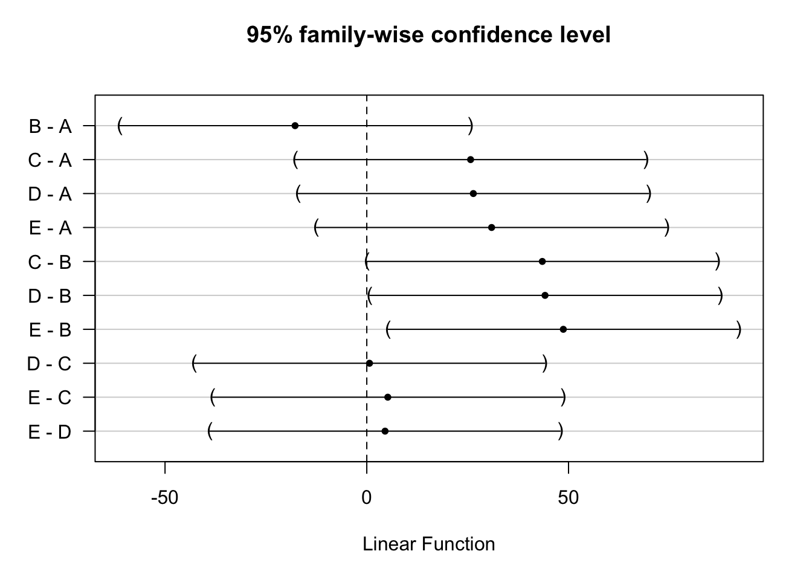
plot(m.Tukey)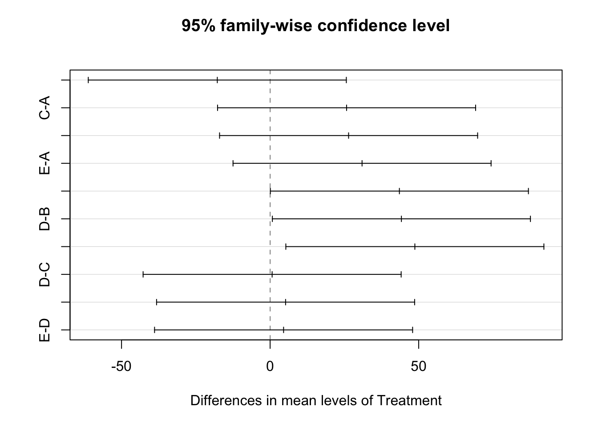
Exercise: equivalence simultaneous CI and FWER control
Set up a simulation study to demonstrate the equivalence of simultaneous CIs and FWER control.
5.7 Assessment of model assumptions
The assessment of the ANOVA model assumptions proceeds very similar as for linear regression models. This can be easily understood: all ANOVA models can be formulated as an equivalent linear regression model. We illustrate the procedure with one example.
Example (PWD)
We consider the ADWG0050 variable and the two-way ANOVA model with Sex and Treatment as factor variables.
First we fit the saturated model, i.e. the model with main and interaction effects.
m<-lm(ADWG0050~Sex*Treatment, data=PWD)Normality
First we check normality. With a sample size of \(n=40\), the normality assumption cannot be completely neglected.
qqnorm(m$residuals)
qqline(m$residuals)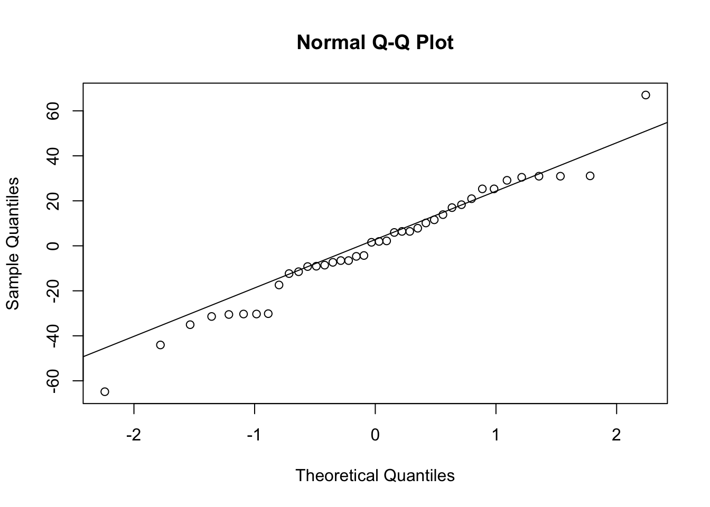
The normal QQ plot does not show a serious deviation from normality.
Conditional mean model
Next we could show residual plots to assess the conditional mean model assumption, but let’s first think about this. If we have a model with only factor variables and their interaction effects, then the model basically has a parameter for each factor level combination. More specifically, if we have two factors, one with \(t\) levels, and another with \(a\) levels, then the ANOVA model (with interaction effects) has \(t\times a\) paramaters. So this model does not impose restrictions on the model for the conditional mean as a function of the factor levels! And hence there is no need to assess the conditional mean model assumption. On the other hand, if there is no interaction effect, then the model for the conditional mean has only \(t+a-1\) parameters whereas there are \(t\times a\) factor level combinations. So the additive model does impose restrictions on the conditional mean outcome. This will be assessed a bit later in this section, when we look at the additive model.
Constant variance
The model implies that for all factor level combiniations the variances of the outcomes should be the same. Here we show some plots that can be used for assessing this assumption. We need to keep in mind that for each factor level combination we only have 4 replicates. This makes it alomst impossible to assess the assumption.
boxplot(m$residuals~PWD$Treatment*PWD$Sex,
xlab="Treatment (A-E) * Sex (1,2)", ylab="residual")
abline(h=0,lty=2,col=4)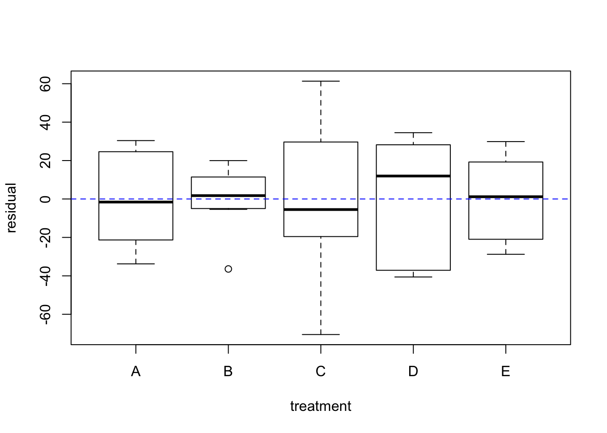
boxplot((abs(m$residuals))~PWD$Treatment*PWD$Sex,
xlab="Treatment (A-E) * Sex (1,2)", ylab="abs(residual)")
abline(h=mean(abs(m$residuals)),lty=2,col=4)
All boxplots, both for the residuals and for the absulute value of the residuals, show quite some variability. Thus is simply caused by the small number of replicates for each combination of factor levels.
We have earlier concluded that there is no evidence in favor of a interaction effects. Here we will assess the model assumptions for the additive model.
m<-lm(ADWG0050~Sex+Treatment, data=PWD)Normality
First we check normality. With a sample size of \(n=40\), the normality assumption cannot be completely neglected.
qqnorm(m$residuals)
qqline(m$residuals)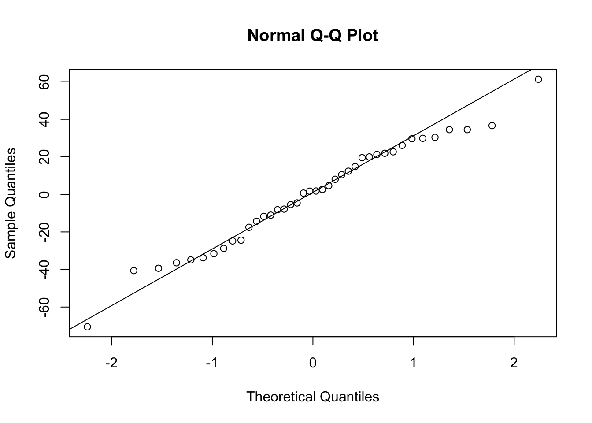
No serious deviation from normality can be concluded.
Conditional mean model
boxplot(m$residuals~PWD$Treatment,
xlab="treatment", ylab="residual")
abline(h=0,lty=2,col=4)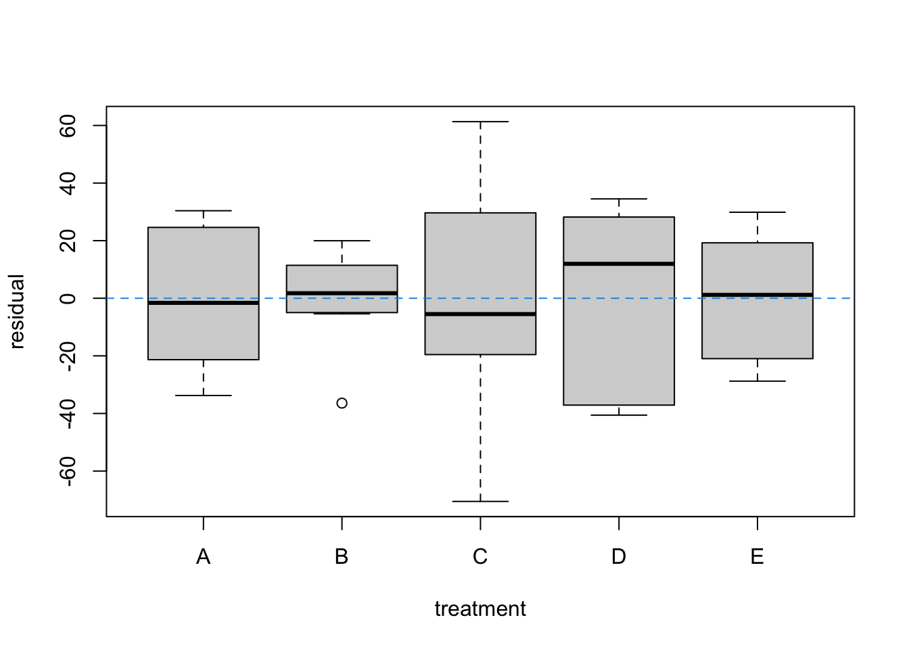
boxplot(m$residuals~PWD$Sex,
xlab="gender", ylab="residual")
abline(h=0,lty=2,col=4)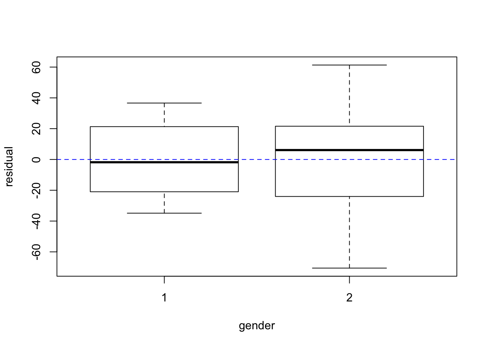
plot(predict(m),m$residuals,
xlab="prediction", ylab="residual")
abline(h=0,lty=2,col=4)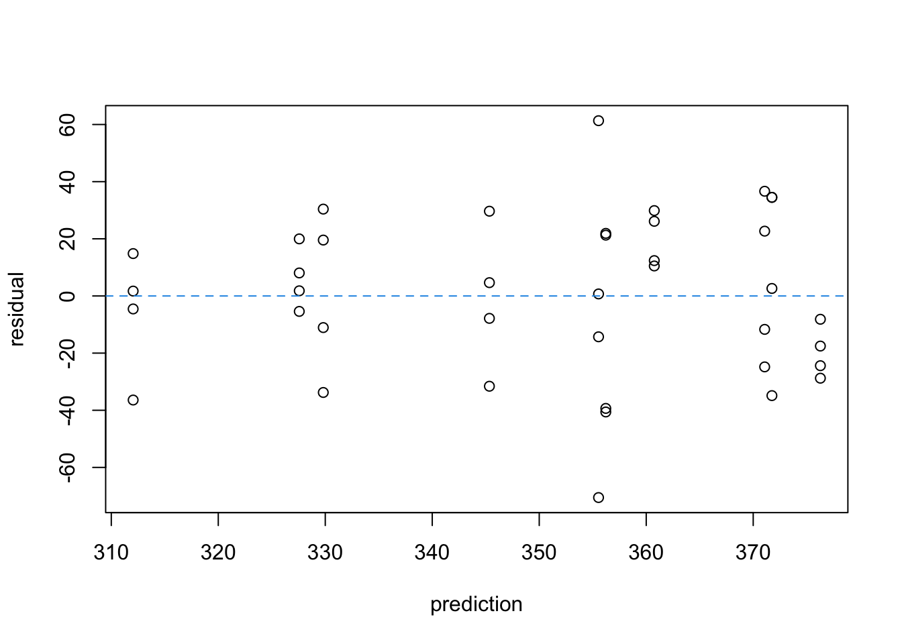
boxplot(m$residuals~PWD$Sex*PWD$Treatment,
xlab="gender (1,2) * treatment (A-E)", ylab="residual")
abline(h=0,lty=2,col=4)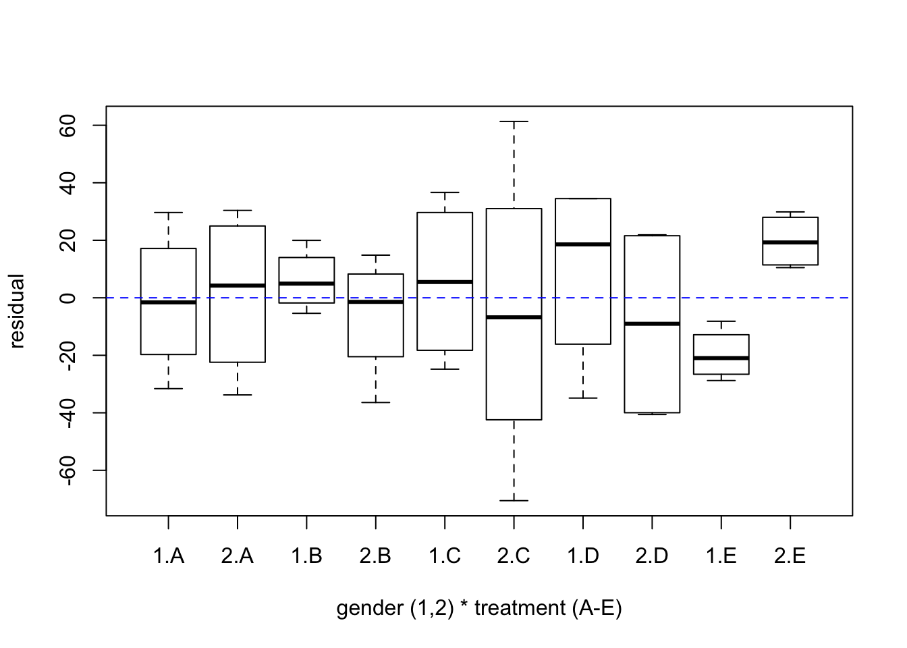
None of these graphs shows a serious indication of a model violation, except perhaps the last graph, which shows boxplots of residuals for all combinations of Treatment and Sex. The last two boxplots show averages of residuals that are relatively far away from zero. This agrees with what we have seen in the interaction plot in Section 5.4.5. However, no significance was reached, and looking at the variance of the residuals, the observed deviations does indeed fall within what could be expected from the observed variability.
Constant variance
boxplot((abs(m$residuals))~PWD$Sex,
xlab="Treatment", ylab="abs(residual)")
abline(h=mean(abs(m$residuals)),lty=2,col=4)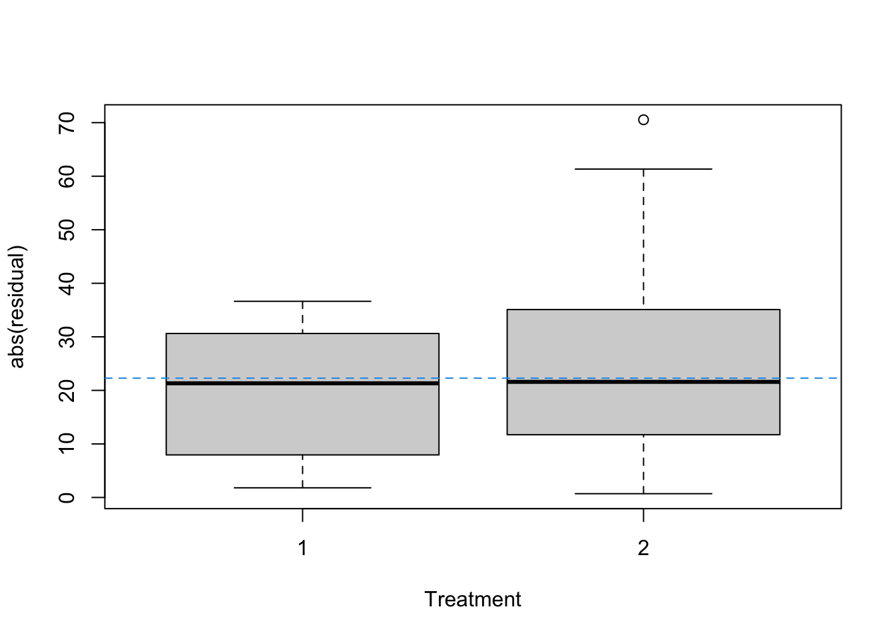
boxplot((abs(m$residuals))~PWD$Treatment,
xlab="Sex", ylab="abs(residual)")
abline(h=mean(abs(m$residuals)),lty=2,col=4)
No serious deviations can be detected.
The boxplots for the two genders are each based on 20 observations. They nicely confirm the homoscedasticity assumption.
The boxplots for the five treatments are each based on only 8 observations. Although the means of the \(|e_i|\) may show some non-constancy, this is within the variability seen from the plot. Perhaps this plot suggests that within the treatment B group (normal feed) the variance of the outcome is smaller as compared to the other groups, but, again, given the rather small number of observations for each boxplot, and given the observed variability, there is no reason be alarmed.
Chapter 6 Reporting
Here we provide some general guidelines for reporting the statistical results of a linear regression analysis. Many of these guidelines are more generally applicable to reporting other types of statistical analysis.
Always report the study design. This is extremely important to determine what statistical methods can be applied in a valid way, and what kind of conclusions are allowed (e.g. causal conclusion or not).
Always report the research question.
It is strongly recommended to always start with a data exploration. If strange or unexpected observations are detected, then identify the observations are report them. It is not up to the statistician to decide to remove observations from the analysis! In no case the dataset must be adapted to the statistical method (by e.g. removing outliers), but in any case the statistical method must be chosen so that the method is valid and can produce an answer to the research question.
Always report results in their correct units. E.g. in the blood pressure example we have estimated \(\beta_1\) as \(1.79\). Thus we say write \(\hat\beta_1=1.79\) mmHg / mg/day, or in words: we estimate that the blood pressure reduces on average with \(1.79\) mmHg per increase of of the daily dose with 1 mg.
Always report estimates with confidence intervals. If the confidence interval is centered at the estimate \(\hat\beta_1=1.79\) and stretches \(0.35\) to either side, then the best way to report to the confidence interval is \[ (1.44 \text{ to } 2.14) \text{ mmHg / mg/day} \] Some bad examples: \((1.44 - 2.14)\) mmHg / mg/day, or (1.44, 2.14) mmHg/ mg/day, or \(1.79 \pm 0.35\) mmHg / mg/day.
When reporting confidence intervals, the nominal coverage should also be mentioned (e.g. \(95\%\) or \(90\%\) confidence interval).
Standard errors of estimates may be reported as e.g. \(1.79\) (SE=\(0.17\)) mmHg / mg/day, or \(1.79\) mmHg / mg/day (SE=\(0.17\) mmHg / mg/day).
When reporting the results of a hypothesis test, always mention the null and alternative hypothesis, as well as the significance level and the \(p\)-value. A hypothesis test is seldom to be performed without also estimating a population parameter (e.g. an effect size or a regression coefficient). The estimate (with confidence interval) should also be reported to complement the interpretation of the hypothesis test.
When in a report several results of hypothesis tests or confidence intervals are reported, you may prefer to mention the nominal significance level and confidence level only once, somewhere in the beginning of the report.
Make sure that you have formulated an answer to the original research question. If this is not possible (e.g. inconclusive results) then also report this.
The report must be written in neat English. The formulation of a conclusion from a statistical analysis must be very precise and with appropriate nuance.
Never copy-and-paste software output to the report, but instead extract the relevant information from the output and place it in the report in either the text or in a nicely formatted table. You may list the software output in the appendix. Exception: when the report is meant to be read by other statisticians or data scientists, you may show them the software output (as for example in these course notes).
A Vector Differentiation
For \(\mb\beta^t = (\beta_0, \ldots, \beta_{p-1})\),
\[\begin{eqnarray*} \frac{d}{d\beta} = \left(\begin{array}{c} \frac{\partial}{\partial \beta_0}\\ \vdots\\ \frac{\partial}{\partial \beta_{p-1}} \end{array}\right). \end{eqnarray*}\]
Upon using this notation, the following differentiation rules hold for \(\mb{a}\) (a \((p\times 1)\) vector) and \(\mb{A}\) (a symmetric \((p\times p)\) matrix):
\(\frac{d(\mb\beta^t \mb{a})}{d\mb\beta} = \frac{d(\mb{a}^t\mb\beta)}{d\mb\beta} = \mb{a}\)
\(\frac{d(\mb\beta^t\mb{A\beta})}{d\mb\beta} = 2\mb{A\beta}\).
B Linear Transformations of MVN
C Slutsky’s Theorem
D Types of Statistical Models
We introduce the concept of a statistical model in the setting of a single outcome \(Y\) and a single regressor \(x\).
Given the regressor \(x\), the outcome can be described by the conditional distribution. We use the notation \[ Y \mid x \] to refer to the conditional distribution of \(Y\) given \(x\). The corresponding distribution function is denoted by \(F(y\mid x)\) and the density function \(f(y\mid x)\).
Without any further restrictions on this conditional distribution, we say that it is a nonparametric model. However, often we imply further restrictions on the conditional distribution. Let us start with a simple example. Suppose that \(x\) is a 0/1 indicator (0: placebo and 1: active treatment). Then we can write \(Y \mid x=0 \sim F(y\mid x=0)\) and \(Y \mid x=1 \sim F(y\mid x=1)\). But again, without any further restrictions, this is a nonparametric model, because it only says that for \(x=0\) and \(x=1\) the distribution of \(Y\) is given by two distinct distribution function, but there is no relationship between the distributions assumed. Even in this nonparametric model, we can identify parameters. For example, \[ \mu_0 = E(Y \mid x=0) = \int y f(y\mid x=0) dy \] and \[ \mu_1 = E(Y \mid x=1) = \int y f(y\mid x=1) dy. \] So we have two meaningful parameters, but they do not impose any restrictions on \(f(y\mid x=0)\) and \(f(y\mid x=1)\). These nonparametric models can be represented by the set of all proper conditional distribution functions. For the example with \(x=0/1\) this can be written as \[ \left\{ F(\cdot \mid x): F(\cdot \mid x) \text{ is a distribution function}, x\in \{0,1\} \right\}. \]
The model can be turned into a parametric model, by imposing strong distributional assumptions on \(f(y\mid x=0)\) and \(f(y\mid x=1)\). For example, (\(x=0,1\)) \[ Y \mid x \sim N(\mu_x, \sigma^2). \] This model says that when \(x=0\), the outcome has a normal distribution with mean \(\mu_0\) and variance \(\sigma^2\), and when \(x=1\),the outcome has a normal distribution with mean \(\mu_1\) and also variance \(\sigma^2\). Thus the parameters \(\mu_0\) and \(\mu_1\) have the same interpretation as in the nonparametric model, but now the distributions are explicitly specified and there is the additional restriction that the variances in the two \(x=0/1\) groups are identical.
Another example of a parametric model is the simple linear regression model. Now \(x\) is a continuous regressor. We write the models as \[ Y \mid x \sim N(\beta_0 +\beta_1 x, \sigma^2). \] Thus, for each \(x\) the model completely specifies the distribution of the outcome. The model specification also included a description of how the mean of the outcome varies with \(x\).
Let us write this parametric model in a more generic way. Let \(\theta\) denote the parameter vector with \(p\) elements and let \(F_\theta(y \mid)\) denote the distribution function of the conditional distribution of \(Y\) given \(x\). This distribution is thus completely known, up to some parameter \(\theta\) that has to be estimated from the data. If \(\theta\) contains real-values parameter, we have \(\theta \in \mathbb{R}^p\). The statistical model can then be represented by the following set of conditional distribution functions, \[ \left\{ F(\cdot\mid x) : F(\cdot\mid x)=F_\theta(\cdot\mid x), \theta\in\mathbb{R}^p, x\in \mathbb{R} \right\}. \]
We can also define semiparametric models. These are models that do not complete specify the conditional distribution, but still they imply restrictions. For example, we could impose the following linear model for the conditional mean, \[ E(Y \mid x) = \beta_0 + \beta_1 x \] without any further restrictions on the conditional distribution. This is not a nonparametric model, because there is a restriction on some aspects of the distribution (here: the conditional mean). It is neither a parametric model, because up to the parameter \(\theta^t=(\beta_0,\beta_1)\), the distribution is not completely specified. This is an example of a semiparametric model. It can be represented by the following set of conditional distribution functions, \[ \left\{ F(\cdot\mid x) : E_F(Y\mid x)=\beta_0 + \beta_1 x, (\beta_0,\beta_1) \in\mathbb{R}^2, x\in \mathbb{R} \right\}, \] in which the subscript \(F\) in \(E_F(Y\mid x)\) is used to stress that the expectation is defined w.r.t. the distribution function \(F\).
Semiparametric models are not limited to include restrictions on the conditional mean. It could for example also involve restrictions on the variance, \[ \left\{ F(\cdot\mid x) : E_F(Y\mid x)=\beta_0 + \beta_1 x, \text{ and } \text{Var}(Y\mid x)=\sigma^2, (\beta_0,\beta_1) \in\mathbb{R}^2, \sigma^2 \in \mathbb{R}^+, x\in \mathbb{R} \right\}. \]
So far we have always looked at conditional distribution functions, i.e. \(x\) is considered a fixed constant. Sometimes \(x\) can be random as well. For example, reconsider the example with \(x\) a binary 0/1 indicator for two treatments. In a randomised clinical trial, the treatment allocation happens completely at random. Thus \(x\) is a random variable; it is thus better to write it as the capital letter \(X\). In this example, \[ X \sim \text{Binom}(1,1/2). \] This marginal distribution for \(X\), together with the model for the conditional distribution of \(Y\mid X\), specifies the joint statistical model of \((Y,X)\).
E R Session Info
sessionInfo()## R version 4.1.0 (2021-05-18)
## Platform: aarch64-apple-darwin20 (64-bit)
## Running under: macOS Big Sur 11.3.1
##
## Matrix products: default
## BLAS: /Library/Frameworks/R.framework/Versions/4.1-arm64/Resources/lib/libRblas.dylib
## LAPACK: /Library/Frameworks/R.framework/Versions/4.1-arm64/Resources/lib/libRlapack.dylib
##
## Random number generation:
## RNG: Mersenne-Twister
## Normal: Inversion
## Sample: Rounding
##
## locale:
## [1] C
##
## attached base packages:
## [1] stats graphics grDevices utils datasets methods base
##
## other attached packages:
## [1] multcomp_1.4-17 TH.data_1.0-10 survival_3.2-13 mvtnorm_1.1-2
## [5] car_3.0-11 carData_3.0-4 dagitty_0.3-1 GGally_2.1.2
## [9] plotly_4.9.4.1 ggplot2_3.3.5 skimr_2.1.3 tidyr_1.1.3
## [13] dplyr_1.0.7 MASS_7.3-54
##
## loaded via a namespace (and not attached):
## [1] httr_1.4.2 jsonlite_1.7.2 viridisLite_0.4.0 splines_4.1.0
## [5] highr_0.9 cellranger_1.1.0 yaml_2.2.1 pillar_1.6.2
## [9] lattice_0.20-44 glue_1.4.2 digest_0.6.27 RColorBrewer_1.1-2
## [13] colorspace_2.0-2 sandwich_3.0-1 htmltools_0.5.2 Matrix_1.3-4
## [17] plyr_1.8.6 pkgconfig_2.0.3 haven_2.4.3 bookdown_0.24
## [21] purrr_0.3.4 scales_1.1.1 openxlsx_4.2.4 rio_0.5.27
## [25] tibble_3.1.4 generics_0.1.0 farver_2.1.0 ellipsis_0.3.2
## [29] withr_2.4.2 repr_1.1.3 lazyeval_0.2.2 cli_3.0.1
## [33] magrittr_2.0.1 crayon_1.4.1 readxl_1.3.1 evaluate_0.14
## [37] fansi_0.5.0 forcats_0.5.1 foreign_0.8-81 tools_4.1.0
## [41] data.table_1.14.0 hms_1.1.0 lifecycle_1.0.0 stringr_1.4.0
## [45] V8_3.4.2 munsell_0.5.0 zip_2.2.0 compiler_4.1.0
## [49] jquerylib_0.1.4 rlang_0.4.11 grid_4.1.0 rstudioapi_0.13
## [53] htmlwidgets_1.5.4 crosstalk_1.1.1 base64enc_0.1-3 labeling_0.4.2
## [57] rmarkdown_2.10 boot_1.3-28 gtable_0.3.0 codetools_0.2-18
## [61] abind_1.4-5 reshape_0.8.8 curl_4.3.2 R6_2.5.1
## [65] zoo_1.8-9 knitr_1.33 fastmap_1.1.0 utf8_1.2.2
## [69] stringi_1.7.4 Rcpp_1.0.7 vctrs_0.3.8 tidyselect_1.1.1
## [73] xfun_0.25